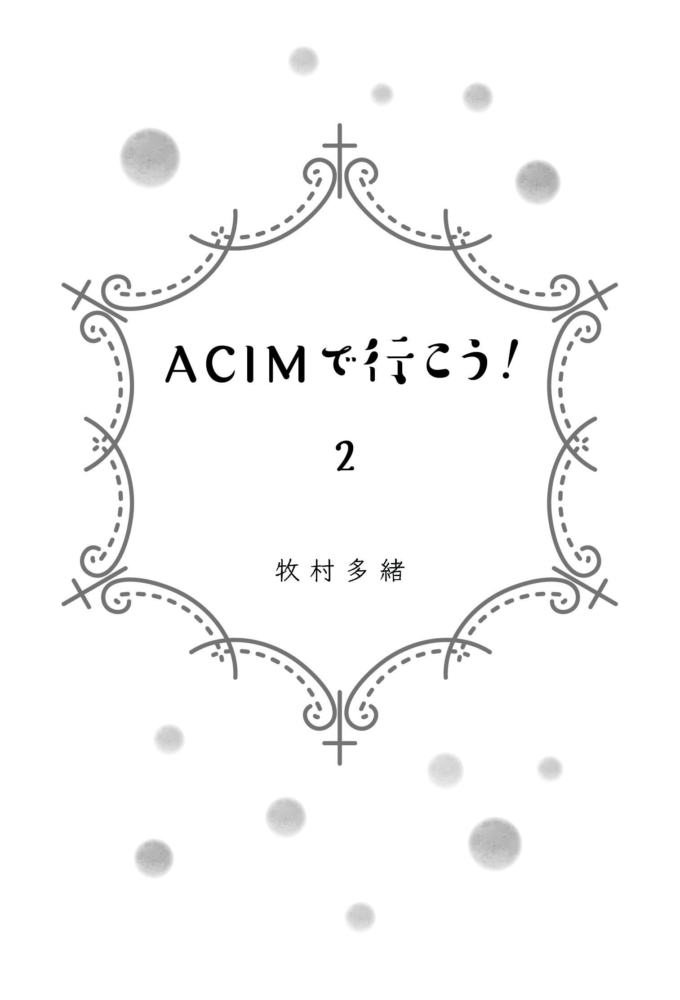

| ACIMで行こう!２ | |
| 牧村 多緒 | |
| pubfull (2018) | |

前作『ＡＣＩＭで行こう！』は、その最後の方でも書いている通り、
「これ商業出版で本にならないかなー、稼げないかなー、有名にならないかなー」
などという身の程知らずの、金銭的にも内面的にもエゴっぽい野望と向き合いながら、それを赦しつつ、聖霊に委ねつつ、どうにかこうにか形にしたものだった。
私にＡＣＩＭを教えてくれた沖縄在住のヒーラーＶさんには、書いている間中、そして書いた後も、
「こらっ！ 世界はあるのっ⁉ あなたの外側に誰かいるの⁉ あなたはいるの⁉ ほんとうの豊かさは何なの⁉ それはどこから来るの⁉ 」
と、何度も問い詰められた。
「世界はありません！ 愛だけがありますっ！ 外側には誰もいません！ 私もいません！ 豊かさは愛です！ 愛は御父から来ます！」
「じゃあ、それは誰のために、何のために書いてるのっ！」
「私のためですっ！ 私の内側に分かち合うために書いてますっ！」
と、最後の方はほとんど脊椎反射で答えられるほど繰り返し、自分にとって重要だった学びや体験を、その時の自分に一番伝わる言葉で書くように努めた。
その結果、どんどん暗くて重い、怪しげな本になっていった。他人様に知られたら恥ずかしいよなと思うようなことほど、それと向き合う過程が自分にとってはお宝だったので、自分自身のことも家族のことも、かなりつっこんで書いてしまった。
その結果、原稿は、たいへんにプライベートなものに仕上がったが、そうはいっても五年近く書き続けたものを、自分だけで読むのもあまりにも残念なので、とりあえずＶさんのワークで一緒に勉強している仲間に読んでもらうことにした。ワーク仲間は私の身に起きたことを事細かに知っているので、今さら特に恥ずかしくもなかったのだ。で、内輪褒めとは言いながらもそれなりに好評だったので、気を良くして電子書籍としてネットで販売することにした。そのためにタイトルと表紙をつける必要があったのだが、
「どうせそんなに読む人もいないだろう」
と、あまり本気で考える気もなくて、自分のブログのタイトル『ＡＣＩＭで行こう！』をそのまま使ってしまった。それにしても、こんな何の検閲も通っていないド素人の文が、電子書籍とはいえ仮にも本としてこうも簡単に出回ってしまうなんて、ネット時代ってなんて無責任なんだろう。
そしてその電子書籍はワーク仲間以外の人の目にも触れるようになり、口コミで広がって、何十冊かが売れた。明治時代の私小説みたいな内容もそうだが、Ｖさんというキャラも、それが話す内容もかなり個性的なので、それなりに批判もされるのだろうとビクビクして反応をうかがっていたが、びっくりするほど好意的な感想をたくさんいただいた。もちろん好意的な感想でない方の大半は何も言わないでくださったのだろうけれど、それもありがたかった。聖霊に守られたのだろう。ツッコミどころは満載だから、もしまともに批判されていたらきっと立ち直れず、ＡＣＩＭの学習もくじけていたに違いない。
日の目を見ることはないだろうと徹底的にあきらめて書いたものが、思いがけず（幻想の）外側の世界にも受け入れられて、天にも昇るほど嬉しかったのだが、その一方で、
「こんなにうまくいっていいんだろうか。どこかに罠があるんじゃないだろうか」
と、疑心暗鬼に取り憑かれた。ほんとうにエゴって、できたらできた、できないならできないで、自分を責め続ける天才だ。どこまでいっても不足を感じさせ、恐怖を煽る。
「うろたえないっ！ あなたが書いたわけじゃない、聖霊が書いたのよっ！ 感謝して受け取るっ！」
と、Ｖさんにカツを入れられた。
さらにその後、『ＡＣＩＭで行こう！』は、紙の本となって自費出版させていただいて、五百冊ほどが売れた。ありがたいことである。スポンサーは、あろうことか本の中であれだけけちょんぱんに書かれた、私の父だった。
その顛末はのちほど。
そしていろんな方に本を読んでいただくようになってから、私がいたたまれなくなった出来事が一つある。それは読んでくださった方が、
「ほんとうに、よくぞここまで自分をさらけ出して書いてくれました。その勇気に感動します」
と言ってくださることだ。
ほんとですよね......。
ほかの人に読まれるという前提じゃ、ここまで書かなかったね。
自分に向けて、多く見積もっても友人知人止まり、と割り切って書いたので、こんなことになったんです。なので、
「『ＡＣＩＭで行こう！』読みました」
と、言ってくださる方の前に立つと、なんだか自分だけ裸みたいで、
「すみません、なんか、お目汚しで......」
という気分になるが、まあ、外側には誰もいない、というところでどうにか踏みとどまっている。
とりあえず、電子書籍であれ自費出版であれ、本という形にしてまとめることができた。これは私にとって、おそらく人生の、最も大きなターニングポイントだった。
エゴ的な損得抜きで、楽しいからという快楽のためだけでもなく、辛いけれど我慢するというのでもなく、ただ、書かずにはいられず、あきらめていいとも思えず、何かに引きずられるように書いたその結果が、一つの形になった。私にとって初めての、聖霊に導かれた創造だったと思う。
原稿を書き上げたことは、もちろん大きなステップアップだったわけだが、それはそれ、これはこれ。天国から離れた、誤創造の世界での幻想の日常は、それを作った私自身にはとても誤創造とは思えないリアルさで、普通に続いている。『ＡＣＩＭで行こう！』の最重要登場人物である父は、いつも機嫌が悪い。
だが、その不機嫌の最たる原因である、働かないなまけものの娘（私だ）は、ただ食って寝てだらだらしていただけではなく、どうやら何か書いたには書いたらしい。以前から父に、原稿を書いていると話してはいた。もちろん父は、そんなもの書いたってなんになるとか、もっと現実的な働き方をしろとか散々文句を言っていたのだが、その割には、父は驚くほど素直にこの努力を認めてくれた。
「書き上がったよ」
と言った時には、意地悪そうな顔をして、
「本にしたらどれくらいの厚さになるんだ」
なんて言ったが、プリントアウトした束を見せて、
「新書一冊くらいにはなるんじゃないかと思うけど」
と言ったら、ほー、といった感じで、何か珍しいものを見せられたような顔をした。
中身が全部自分の悪口だなんて（いや、悪口じゃないんだけどね）、想像だにしないだろうと思うと、そこだけはほんとうに申し訳ないと思った。
が、それはそれとして、原稿は書いたが、飛ぶように売れるわけでもなく、印税が入るわけでもなく、相変わらず娘は無職無収入だ。そこは父の絶好の攻撃の対象になった。一階の部屋からは常に、母を相手に私を罵る父の声が聞こえてくる。良くも悪くも父は朗々とした美声の持ち主で、詩吟の吟号も持っており、よく響く声は八十を過ぎても衰えを知らない。
「また始まったよ......」
怖いもの見たさじゃないけれど、よせばいいのについ耳をそばだててしまう。
居候させているのだから、食事ぐらいはお前が作れと言われ、毎食私が作るけれど、かき揚げを作ればベッチャリしてるというし、グラタンを作れば（父はわりとこういうこってりした洋食が好き）、
「こんなに材料に金をかければうまいに決まってるだろう」
と憎まれ口を叩く。朝食は和食でおかゆを炊くのだが、土鍋だろうが、鉄鍋だろうが、炊飯ジャーだろうが、どう炊いても、芯が残ってるの、糊みたいだのとダメ出しをくらう。さらには、
「お前の味噌汁は口に合わない。なんでこんなに甘いんだ」
と、味噌汁までお気に召さない。いや、材料はお母さんと一緒よ？私は味噌汁は煮干しダシ派なんだけど、ちゃんとあなたがお好きな化学調味料系の粉末ダシを使ってますよ。味噌も甘くないのを選んでるし、作り方もお母さんとまったく同じだと思うんだけどな。
そんなある日の夕食、じゃがいもの煮物を食べた父が、
「なんだこれは。やっぱりお前のはだめだな。お母さんが作ったほうがうまい」
と、顔をしかめながら、食べかすの残る濡れた箸先で、煮物の小鉢を向こうに押しやった（私は父のこの、品のないテーブルマナーが大嫌いだ）。そしたら一緒に食べていた母が、静かな声で言った。
「その煮物は、昼間、私が作りました」
「......」
けっ、ざまぁみさらせ。
というわけで、この本も、前作からあまり状況が変わらないまま始まります（笑）。
前作以上の忍耐力でご指導くださったＶさんに、一緒に学んだ兄弟たちに、そしてどんな時にも見守ってくれた聖霊に、心からの感謝を捧げます。
前作に引き続き、表紙の絵は、ヨシダチエミさんのアートワークを提供していただきました。装丁・本文デザインは、水落ゆうこさんです。ありがとうございました。
私にＡＣＩＭを教えてくれたのは、沖縄在住のヒーラー、Ｖさんである。
不思議なご縁で、私はＡＣＩＭを勉強し始めるのとほぼ同時に、Ｖさんのワークショップを、東京の片隅の自宅、Tao Houseで主催することになった。年に数回のワークショップは、最初は参加者が二人とか三人とかのちんまりしたワークだったが、『ＡＣＩＭで行こう！』を電子書籍にした頃にはそれなりに回を重ねて、常連が十五、六人くらいになり、グループとしてのまとまりが出来上がっていた。
ＡＣＩＭを学ぶ人は、Ｖさん自身がそうであるように、長い間精神世界をさまよって、ようやくここにたどり着いたという方が多いようだが、Tao Houseの常連は、口コミで広がった主婦層が中心なので、本格的に精神世界の勉強をするのはＡＣＩＭが初めてという人が多い。かくいう私も、スピ本のロングセラー『神との対話』を初めて読んだのは、ＡＣＩＭの参考書ともいうべき『神の使者』を読む直前だった（そして大混乱した）。
そんな素人集団なのに、Ｖさんはあの分厚いテキストを読んで、１年以上をかけてワークをやった人、あるいはやろうという意欲を積極的に見せる人にしか、ワークに参加させない。
「自分のペースでゆっくりね」
とか、
「やりたい時に始めればいいよ」
とか絶対に言わない。一貫して、
「読まなきゃダメ、わからなくて当たり前。とにかくテキストを読みなさい、ワークをやりなさい」
というスタイルを押し通している。
そしてこうやってグループワークを続けているうちに、ＡＣＩＭの受け入れ方に、二つの傾向が見られることに気づいた。感性優位タイプと理性優位タイプだ。
感性優位タイプは、まずは直接であれ間接であれ、ＡＣＩＭに出会うと、「どうも神の子って、いいものらしい」
と感じるらしい。感じなければその時点で関わらない。そして、
「あなたは神の子だよ」
と言われると、その直感に従って、
「そうなの？ あら素敵」
とまず受け入れ、
「Ｖさんがやれって言うなら」
と、わからないながらにテキストやワークに取り組む。そしてしばらく神の子を体験したあとに、
「なかなかいいけど、神の子って何？」
と考え、そこからあらためて神の子の思考、つまり聖霊的思考を学び、神の子としての理性を育てていく。ただし、ここからが正念場になる場合が多い。
で、理性優位タイプは、出だしがそう簡単にはいかない。
「あなたは神の子だよ」
と言われると、
「はぁ？ 神の子って何？ なんでそんなこと言うの？ 根拠は？ 証拠は？」
と、まず疑い、考える。そしてテキストを読めと言われても、
「わからない、読めない、何これ」
と文句を垂れ流して、なかなかやらない。それでも読め、ワークをやれ、神の子として考えろと鍛えられ、ごりごりと引きずられつつ進んでいく中で、聖霊的思考を学び、それを日常に当てはめることをトライアンドエラーで繰り返し、
「そういう考え方もあるかもしれない」
と、自前のエゴ的理性が納得し始め、
「ないとは言い切れない」
と、論理的に追い詰められてようやく、
「神......の子......かも？」
と認め始める。この時点で、ようやく感性優位の人たちと同じ立ち位置になるのだが、ここまでこぎつけるのがえらい大変なのである。
こんなところにもエゴの二元性が現れるのかと思うと大変感慨深いが、理性優位タイプの典型である私は、ずっと感性優位タイプの人に劣等感を抱えてきた。論理的に納得できないという理由で、「神の子である」という大前提に頑として首を縦に振らなかったために、ずいぶん回り道をし、仮にもＶさんのマネージャー、しかもワーク仲間の中でほぼ最年長のくせに、心の平安の度合いにおいて、
「神の子なのね」
とうなずいて、テキストやワークをやってきた人たちに、完全に差をつけられていたのだ。
だが、『ＡＣＩＭで行こう！』を書き上げた頃には、自分が遅れをとっていることも、その理由もだいぶ自覚し始めており、
「ほら、うだうだ言ってテキスト読まないと、私みたいになるよ！」
と、ほとんど逆ギレのような状態で、みんなに発破をかけていた。
このワーク仲間は、回を重ねるにつれて関係が密になっていった。おたがいがおたがいを神の子として見、また投影として見、時には誰かと特別に仲良くなり、時には特別に仲が悪くなるという「特別な関係」を築いては乗り越える、なんていう心の痛みを伴うような局面もあった。正直この年で、他人とそんなめんどうな関わり合いを持つなんて思ってもみなかったが、グループワークにはほかにもいろいろなメリットがあった。そのうちの一つは、おたがいの変化を長いスパンで見ることができることだ。自分のことはよくわからなくても、人が変化していくのは気がつくもので、自分の人生が壁にぶち当たったり、状況が停滞したりして、
「このままＡＣＩＭを続けていいのだろうか」
「もっと別の、ぶっちゃけもっと楽な方法があるんじゃないだろうか」
と、血迷いそうになった時でも、一緒に学んできた仲間を見て、
「あの人もこの人も、出会った時からこれだけ変わったんだから、この道を進めば、私も変われるだろう」
と自分を励まし、相手の変化を祝福し、おたがいに進むことができる。逆もまた然りで、
「あれだけやっててもあの人に変化がないのは、何かやり方が違うからだよな」
というのもわかる。そういう意味では、悪い例として、私はずいぶんグループに貢献したと思う（ふんっ）。進みの遅い私がＡＣＩＭのテキストを窓から投げ捨てなかったのは（床には叩き付けた）、「自分は神の子だ」という考えを受け入れ、そのように生きようとすることで、次第にふわっと楽になっていくワーク仲間を何人も見ていたからだった。そして『ＡＣＩＭで行こう！』がワーク仲間に読まれ始めた頃には、だいぶみんなに追いついてきたという手応えがあった。
「本も書き上げたことだし、いつまでも理屈っぽくぐだぐだ言って、みんなに引きずられ続けたりしないもんね。私だってこれからは、みんなみたいに、神の子の幸せを満喫するんだ！」
と密かに楽しみにし、満を持して、電子書籍出版後最初のＶさんワークを企画した。
ところが、結果は惨憺たるものだった。
「残念、まだまだだね」
ということをまざまざと思い知らされたのである。
ワークの間中、私がまだまだ御父の愛を受け取ることを拒否っているということが、随所で露呈した。みんなが、
「御父、大好きー！」
とか、Ｖさんワークの鉄板、
「○○さん（自分の名前）、ありがとう、愛してます、だいじょうぶ！」
と、満面の笑みで言う場面で、なぜか私が言うと、ぐっと場が重くなる。なんとなく、
「......けっ」
という冷めた気分になるのが自分でもわかる。
極めつけは、アートワークだった。
その時のアートワークは、これまでで初めての屋外ワークだった。爽やかな風が吹く初夏、輝く若葉からは緑が滴り、地面は柔らかな草色に色とりどりの小さな花模様を織り込んだタペストリーのよう。参加者は二人一組のペアになって、例えば目をつぶった相手を優しくエスコートするとか（ブラインドワークというらしい）、相手と同じ動作をするとか、そういう様々なワークを楽しみ、その喜びをパステルで画用紙に描いていく......のだが、どうも私は、最初から最後までそのワークに馴染めなかった。
「なんか、ばからしいんだけど......」
天国の庭のように美しい公園の中で、ひんやりとした感覚が、ブラックホールのような求心力で腹のあたりに出現するのを感じた。そしてそれはそのまま、アートワークに見事に表現された。私の描く絵だけが、なぜかどんどんどす黒くなって行くのだ。私が一人、心と体を硬化させるのを尻目に、みんなは実に楽しげな微笑を浮かべながら、黄色やピンクや白、水色のパステルを手に、きらきらの絵を描いていく。誰も私のことなんか構ってくれない。どんどん引き離されて孤独感がいや増していく。しかもＶさんがにこにこしながら、その空気を煽る。
「幸せな人は幸せーっていうのを描いてねー。そうじゃない人はそうじゃないーって描いていいから」
いいから、じゃないから。幸せじゃないの、やだから。そんなのちっとも嬉しくないから。ってか、私の不幸感を煽ってますよね⁉ あからさまに、意図的に！
うーん、その不幸な感じをちゃんと見ろってことだろうな。で、それを描けってことだよな。
そう思ったらその不幸感は一気に怒りに変わって行った。なんで私だけ、幸せになれないんだろう。私だって幸せな方がいいのに。このワークは私向きじゃない。こういうわざとらしいワーク嫌い。だから幸せになれないだけで、私のせいじゃない......わけはない。
どんな状況であれ、幸せじゃないのは神の子じゃない。なんで私だけ神の子じゃないんだ？いや、それは「論理的に」ありえない。だから私がどこかで間違ってる。
ぐるぐる考えながら描く絵は、どんどん重い色になっていく。ついに真っ黒に画用紙を塗りつぶし、べたべたと手で引き延ばし、なんでだろう、なんで私ばっかりいつもこんなふうに置いていかれるんだろう、私だってちゃんとやってるのに、がんばって本だって書いたのにと、もう意地になって黒ばっかり使っていた。この日は後半水彩になる予定だったのに、Ｖさんが言った。
「タオさんがせっかくいい絵を描いてるから、今日はこのままパステルにしましょうね」
......いい絵なんだ。
ふーん、そうですか。これがいい絵なんだ。
開き直って黒いパステルをのばしているうちに、ついに親指の皮が剥けてきた。
いてぇ......ああ、やばい、泣きそう。
でも、ここできらきらの絵を描いているみんなは私の内側だ。こうやってみんなが幸せになっているなら、それは私の内側がどんどん幸せになってるってことだ。だいたい、私だけみんなより遅いとか、私だけ不幸せとか、そういうふうに考える時点で分離してるよね。ってことは私も幸せなんだ。で、この「私だけ」っていうのが、今私が一番間違ってるとこなんじゃないのか。
でも、私は今、猛烈に腹を立てている。
不愉快だ。
みんなが今、こんなに幸せなのは、私の努力でもあるはずだ。みんなだってがんばったのはよくわかってる。でも私の努力も、みんなを支えてきたはずだ。それなのに、
なんで果実を食べるのは、奴らだけなんだ！
なんかこの辺でぐるぐる回りながら、この日のアートワークは終了。出来上がったのは、二枚の、真っ黒な絵だった。
その後ワークは数日続いたが、私はいったいなんで私だけが、あの場所であんな目にあわなければならなかったのか、ずっと考え続け、何度もＶさんに、
「あのアートワークは、いったいなんだったんですか」
と聞いた。
「あなたも含めてグループ全体が、私たちは神の子だってわかってる。わかってるのにあなたは、神の子であることにムカついているっていうのがミソなのよ。これはもう理由はないの。言葉で解体できる次元のものじゃないのよ。だからもう、ただ見て赦していくだけでいいの。無意識の、ほとんど駄々みたいな嫌悪感だからね。自分の中の神の子ではない感情や思考を見るのはとっても大事なのよ。見なきゃ赦せないでしょ。いい仕事してんのよ、あなた」
いや、私がムカついてるのは、みんなが幸せで、私だけが幸せじゃないってことで、神の子であることにムカついたりしてないですよ⁉ 私だって、みんなと同じように幸せな神の子になりたいんですけど⁉
なんでですか、どうしてですかと、Ｖさんの手が空いている時は、食事中だろうが移動中だろうが、何度も食い下がった。しかし、やがてワークは終わり、Ｖさんは、
「じゃーねー」
と、南の島へと帰って行った。
私はものすごく消化不良な状態のまま放置され、呪われた「黒い絵」が、私の手元に残った。
いったい、あの黒い絵は......。
なんで私だけがあんなに不幸だったのか、Ｖさんはあのワークで私に何を理解させたかったのか、まったくわからない。わかったのは、みんなは神の子としての喜びを感じているが、私は感じていない、みんなは神の子であることに納得しているが、私は納得していないという、相変わらず私はみんなから取り残されているという、何ともいたたまれない事実だけだった。
わからないままにしておくのは不安で仕方ないので、なんだかんだとネタを探し出してはブログを書いた。何はともあれブログを書けば、Ｖさんがちゃんと読んで「いいね！」を押してくれたり、コメントをくれたりする。何も反応がない時は、
「なんか変ですか？」
とメールをすると、
「変！」
と速攻で返事が来て、どこがおかしいのか一応は説明してくれた。『ＡＣＩＭで行こう！』では主に携帯の無料通話にお世話になったけど、この頃にはＶさんも私もスカイプを使っていた。もし続編が出たらホログラムになってるかも。ところがさっぱりわからない。
これまでもこういうことは何度もあったし、精神世界でほんとうに学ぶべきことは言葉の向こう側にあることだから、むしろ当たり前なのだろうけど、それにしても、どうしてもお医者さんに病状が伝わらずに、欲しい処方箋がもらえない感じというか、どう先生に質問を発しても、斜め四十五度からしか答えが返ってこない感じというか、これが何とももどかしかった。次第にＶさんの反応の一言一句に翻弄され続ける状態になっていき、むしろＶさんからいい反応を引き出そうとして、なんか明るめのネタにして、ブログの方が引きずられたりもし、さすがに、
「いや、これはおかしいだろう」
と、余計に混乱して落ち込んだりもした。
そうは言っても、暗闇を手探りで歩いているような状態の時に、
「ちゃんとガイドしてるからだいじょうぶだよー」
というメッセージを発し続けてくれたＶさんの親心（いや、聖霊心か）は、ありがたかった。とにかく思いついたことを片っ端から書いて、ヒントをもらえないかとＶさんのコメントを求めた。
「なんでみんなはあんなに綺麗な絵を描けるのに、私だけ黒なんでしょう。私、何を間違ってるんでしょう」
「あのね、あなたはさ、あなたの家の猫をひっくり返して、わしゃわしゃーってするでしょ。御父はあなたのことをそんな風に愛してるのよ」
「えーと、ですから......」
「あなたもわしゃわしゃーってしてもらいなさい」
「あー......はい......わしゃわしゃー......？」
それができないから黒い絵なんだよね？
どうしたら、わしゃわしゃー......わしゃわしゃー......
わかんないなあ。みんはきっと、嬉しそうに、
「はいっ」
って言うんだろうな。みんなほんとにそんなふうに、御父に愛されているっていう実感があるのかな。私だけが何かがわかっていない。なんでだよ、がんばってんだけどな......。
そういう私の気持ちが投影されているのか、父は相変わらずずっと機嫌が悪い。最後の入院以来、低空飛行で飛び続けているものの、なかなか上向きとはいかない。こうありたい、こうしたい、という思いと、体の動きがまったく噛み合わないという現実は、ほんとうに残酷なものだと思う。
大好きな釣りに行きたいのに行けない。ぐびぐびとビールが飲みたいのに、体が受け付けない。お腹いっぱいに食べたいのに、たいして食べないうちに気持ち悪くなる。誰かと話したくても耳が遠くて話せない。テレビもラジオもよく聞こえない。しかもそれらの症状はすべて、悪くなることがあっても、よくなることはもうないのだ。私の料理も相変わらず口に合わない。ちょうど暑くなる頃だったせいもあって、だんだん食が細ってくるので、
「何か食べたいものない？」
と聞いたら、
「コロッケが食いたい」
と言う。
「じゃあ、作ろうか？」
と答えれば、
「買ってきたのでいい。どうせ作る気なんかないんだろう」
と憎まれ口を叩く。いや作るよ、コロッケはあんまり得意じゃないけど、でもお父さんが食べてくれるんなら作るよ。だが父にはこれまで何回も、
「お前の揚げ物はまずい。スーパーの揚げたやつの方がまだましだ」
と言われてきた。いやこの間、スーパーのもまずいって言ったぞ。どうしたもんかなあと悩み、結局折衷案で、冷凍コロッケを買ってきてうちで揚げたら、
「あんな小さいコロッケはいやだ」
と言われた。ちっ、このくそじじぃ......。
私が幸せだと感じられないのは、こんな生活だからじゃないのか。
母子家庭で小学生の娘を抱えながら、朝起きてから寝るまで、ずっと父と母の不定愁訴と愚痴にさらされ、
「なんでお前を養わなきゃいけないんだ」
と文句を言われながら、
「せめて家の中のことくらいはお前がやれ」
と罰のように家事を任され、それで、
「わしゃわしゃー」
とか言われても、それは無理ってもん......。
「世界は？」
「ありません......」
「外側に誰か？」
「いません......」
「お父さんは？」
「いませんね......」
「あなたはね、御父の宝物なの」
「はあ、そりゃよかった......」
「黒い絵」の謎はわからないし、父は駄々をこねるし、書いた本人はこんな体たらくなのに、『ＡＣＩＭで行こう！』はワーク仲間の間で『タオ本』と呼ばれ、活用され始めた。自分のＡＣＩＭ学習の道のりを重ね合わせ、いろいろと新たな発見や心境の変化があったと言ってくれる人が何人もいて、それがＶさんのワーク仲間では「タオ本効果」と言われるようになった。なかなかの働きっぷり。やっぱり書いたのは私じゃなくて聖霊らしい。
「『タオ本』いい仕事してるじゃないの」
ある日、Ｖさんが言った。
「はあ、そうですね」
「で、あなたはどうなの？」
「はあ、相変わらずで......」
生返事をしたら、
「自分にとっての『タオ本効果』について、ちゃんと考えてまとめておきなさいね」
と言われた。
うーん、けっこう難しいんだけど。
そう思いながら、日記を書いてブログにアップした。不出来な弟子ではあるが、Ｖさんにやれと言われたことだけは、どんなに忙しくてもめんどうでも、たいていのことはやってきた。これだけは我ながら偉いと思う。
私にとっての「タオ本効果」かあ。
まずは書いたものが受け入れられて、すごく嬉しい。信じられない忍耐力で教えてくれたＶさんにも、一緒に勉強してくれた兄弟にも、不本意であったろうけれど、経済的にバックアップしてくれた（しかもネタの提供者でもある）父にも、応援してくれた母や娘や、それに元夫やその実家、そして本を読んでくれた人たちに感謝したい。本の形にして誰かに読んでもらうという長い間の夢が叶ったんだから、その幸せをちゃんと受け取ろう。ここまでがんばってきた過去の自分に、たくさんの愛を送ります......。
「ほら、そこよ」
スカイプのクリアな音声で、Ｖさんにつっこまれた。
「え、どこ？」
「がんばってきた過去の自分ってとこ。あのさ、過去のあなたっているの？」
とＶさんは言う。
「ええっ⁉ 」
いや、いるの？と聞かれたら、いるわけがない。世界はない。今の私も過去の私も未来の私もいない。
「で、でも、今の幸せを受け入れるためには、これまでの努力を祝福し、過去の自分に愛を送りなさい、過去の自分をねぎらいもせずにとり残しちゃダメって、Ｖさん教えてくれましたよね？」
「過去の自分に愛を送って感謝するのはいいのよ。でもあなたは、過去のあなたをリアルにして、つまり今のあなたもリアルにして、『がんばってきた私』に耽溺し、『はあ、大変だった大変だった、よしよし』みたいにしてるでしょ。だから、なんかじとーっと重くなるのよ。その大変さをあなたがリアルにしてるの。お父さんに対しても、『過去、お世話になりました』って、お世話になったとこだけに集中するから、お父さんが『コロッケがまずい』とか言うのよ」
「げっ」
「辛かったことにフォーカスしないで、それはなかった、間違いだったってことにフォーカスしなさい。ＡＣＩＭをやるっていうのは、消えていくってことなの。どの瞬間の自分も残してはいけない。エゴは大変だった私とか、辛かった私に価値を持たせて握りしめようとするから気をつけなさいね。そういう自分はいなかった、愛だけがあったの」
ああ、そうだった。
御父は私がどんなに大変だったかなんて、まるっきり知らないんだった。御父は「大変」なんて作っていない。私が大変だと思っているのは私だけだ。そしてそんな私はいない。愛しか知らない神の子が、過去の自分をいたわるとしたら、それは、
「今の私と同じように、あなたも神の子なんだよ」
という理解を伝えることであって、自分で捏造した大変さに価値を置いて、そこに寄り添うことじゃない。兄弟の中にキリストを見ることがＡＣＩＭ的な癒しであるように、過去の自分もキリストだったと理解することが、過去の自分に対するねぎらいになる。
「うーん、そうですね、わかりました。なんかようやく人生の一山を超えた感じで、少々感傷的になってたもんで。そうか、過去の自分に同情するってことは、過去の自分を神の子として見ていないってことですよね。ああ、バカなことやったわあ」
はあ......とついたため息が終わらないうちに、Ｖさんが畳み掛けた。「はい、そのバカなことやった自分もいない。そんな自分も神の子なの。御父が神の子を見るように、そういう私も愛されてるって即座に見方を切り替えて。そうやって感傷的になってると、バカなことをやった自分と、それをバカにしている自分を残すことになるのよ」
ぐっ！ っと時空が圧縮された気がした。
言われたことを理解したら、なるほどと感心して、
「よし、今度から気をつけよう」
というのが私の悪い癖なのだ。そしてそのうち忘れてしまう。今、ここ。あるのは常にそれだけだ。今、神の子であるという立ち位置から、過去バカなことをやった自分を見れば、バカなことをやった自分も、今の自分と同じ神の子にしか見えない。自分が見るものはすべて自分の投影だから。それを、
「バカなことをやったな」
などとジャッジしている自分は、神の子ではない。神の子にはそういう考えは浮かばないのだから、その考えを採用してはいけない。
「うわあ......」
「何よ？」
「いや、かっこいいなと。この容赦ないクールさが好きです、ＡＣＩＭ。でもこの緊迫感がちょっとキツいというか、いや、そこがいいんだけど（ぐるぐる）」
「あのね、これがほんとの『タオ本効果』なのよ」
「へ？」
「常に聖霊とともにいるっていうのは、それがほんとうに自分の生き方になるまではキツいことだし、特にあなたみたいな、すぐになぜか余裕をかまして、無意識にエゴで生きてきた頃のやり方に戻ってくタイプの人には大変なのよね」
「えっ⁉ 私、そんなタイプ⁉ 」
「たった今、余裕かましたでしょ。『わかりました、今度からやりまーす』みたいに」
「......（やったね、たしかに）」
「でもね、あなた、あんな偉そうな本書いちゃったんだから、そんでみんなに読まれちゃったんだから、もう『またエゴっちゃった、テヘペロ』じゃ、すまされないのよ。そんなことやったら死ぬほど恥ずかしいでしょ」
「はあ」
「ね、これがほんとうのあなたにとっての『タオ本効果』よ！」
「げっげー！ そこっ⁉ 」
なんだか目の前が真っ暗になった。
私は自分の言質をとるために、あんなに苦労してあれを書いたのかい。
「でもね、実はもっとすごい『タオ本効果』があるのよ」
Ｖさんが声を潜めた。
「え？」
「あの本読んだ人たちがね、みんな言うのよ。『私はとてもタオさんみたいにしつこくＡＣＩＭを疑えません。あれだけ疑った人がいるなら十分です。もう、きっぱりＡＣＩＭで行こう！ と決めました』って」
「......」
「もう、自分は神の子かどうかって悩むのはうちでは古いの。『タオ本』は既にクラシックなのよ。さっさと二冊目書きなさいね」
クラシック......。
ついこの間書き上げたばっかりなのに......。
「はい、ハートに手を置いて、目を閉じて。タオさんはありもしない過去にねっとりと情をかけて、がんばった自分が実在するかのように扱ってきました。でもそれは単なる間違いです。私はそんなタオさんを赦します。タオさんが温存しようとした過去のすべてを聖霊に捧げます、ほら、ちゃんと言う！」
「えーん......。タオさんは、ありもしない過去に......」
次の日、つい時間が押してしまって夕食の支度ができなくなったので、スーパーでコロッケを買ってきて出したら、父が、
「このコロッケはうまい」
と言った。
さっそくクラシックになったタオ本だが、ブログなどを通じて知り合ったＡＣＩＭ学習者の方にも読んでいただき、新たな交流が生まれたりした。
ところでＶさんワークのグループには、実は「秘密結社ｃａａ」という、Ｖさん命名の名称がついている（これを書いている時点では、「ＧＩＳ」に改名されている）。
「秘密結社って怪しすぎますよ。それに何の略ですか？『ｃａａ』って」
「『キリスト、ありがとう、愛してる』の略よ」
「怪しさ倍増です」
「あら、そう？」
まあ実際、Ｖさんがやっていることの怪しさといったら、まさに秘密結社だ。その存在も中身も、一般社会にはもちろん、スピリチュアル界にも、そして決して多くはないＡＣＩＭ学習者にも、ほとんど知られていない。その上Ｖさんは、ワークやセッションに、タロットだとか数秘だとか、およそＡＣＩＭにはふさわしからぬ魔術のようなツールも使う。私がＶさんと出会ったのはＶさんがＡＣＩＭに出会う前だったから、その頃のＶさんは大手を振ってタロットリーダーでヒーラーだったのだが、ＡＣＩＭをやりはじめたらさすがにそうはいかないだろうと思っていた。学んでいる人全員が「神の教師」であるＡＣＩＭでは、職業的ヒーラーは存在しえないし、ましてや魔術の類は相容れない。それなのにＶさんは、相変わらず職業的ヒーラーとしてワークショップや個人セッションをやっているし、ＡＣＩＭを学んだ後も、タロットも数秘もしれっと使う。なのでＡＣＩＭを学び始めてすぐに、Ｖさんに、
「タロットも数秘も、魔術じゃないですか」
と聞いたら、
「魔術よ。それが何か？」
と返された。
「え？」
ＡＣＩＭでいう魔術とは、ＡＣＩＭ的な正しい治療、つまり聖霊の思考体系を学び、エゴの思考体系を手放して、あらゆる現象の原因である心のあり方を正すこと、それ以外の治療すべてのことを言う。だから体の調子が悪いから医者に行って薬をもらうとか、心の病にかかったから心療内科に通うとか、この世界的にまっとうだと思われる治療も、ＡＣＩＭ的には「魔術」になる。
ましてやタロットやら数秘やらはただでさえ魔術だし、ＡＣＩＭ的にももちろん魔術だ。
「でも役に立つもの。あなただって盲腸になったら病院に行くでしょ」
「病院に行くとか薬を飲むとかっていうのは、全然抵抗ないんですけど。なんていうか、パソコンのメンテと一緒っていうか。もともとない幻想の肉体を、幻想のレベルでどうこうするんですもんね。でもタロットやら数秘やらは作用するのが心のレベルじゃないですか。これはＡＣＩＭの領域とかぶりますよ」
「タロットも数秘も単なるツールよ。要はそのツールが、心をどこに連れて行こうとしているかが問題なの」
「ですからそういうオカルト系のツールは、私たちの心を一元論的な、この世界の創造主のところに連れて行こうとしてるでしょ」
「そうよ」
ダメじゃん。
というわけでＶさんも、ＡＣＩＭに出会ったあと、フランスまで行って勉強したカモワン・タロットを一度は捨てようとしたのだけど、物は試しにそのタロットの知識と技術を聖霊にすべて預けてみたそうだ。そうしてみたら、あら不思議、ＡＣＩＭ仕様の聖霊版タロットになって戻ってきたのだそうだ！
もちろん、そんな話を手放しで信じる私ではない。
「それってどういうことですか？ 朝起きたら『カモワン・タロット（聖霊版）』ってマニュアルが置いてあったわけじゃないでしょう？」
ことあるごとにしつこく聞いてみると、どうやらゴールをＡＣＩＭ的な実相世界に設定し直し、大アルカナを逆にたどってみると、聖霊の助けを得てエゴを解体する手順が、タロットの中に見えてきたらしい。つまり魂の成長の地図ではなく、エゴの解体の地図として使える、というのがＶさんの結論だった。
「ずいぶんご都合主義のような気がしますが」
「いやあ、もしかしたら『わかってる』人が作ったのかもしれないよ」
いやいやその発想自体がご都合主義だろうと、内心突っ込まずにはいられなかった。
Ｖさんの数秘術もタロットと連動している。１〜９までのソウルナンバーを使って、自分のナンバーとタロットカードを対応させ、エゴのパターンを客観的に理解するのに使う。たとえば私は、ソウルナンバーが９なので、タロットでは「隠者」というカードになる。自分のソウルナンバーがいくつかというのは誕生日から割り出すのだが、まあ正直なところ、誕生日で自分の性格を決められてたまるか、という気分も相当あった。なので初めの頃は半信半疑どころか、九分九厘疑っていたのだが、同じメンバーと何度も繰り返しワークをして、おたがいをよく知っていくうちに、ソウルナンバーになんらかの傾向はあるな、と思わずにはいられなくなった。これこそが洗脳というものかもしれないなと思いつつ、その分類でもって自分のエゴのパターンを説明してもらうことで、大変助けてもらったので、今では大人しく受け入れている。
要するに、一元論の世界に魔術としてタロットがあるなら、ＡＣＩＭ的な、いわゆる純粋な非二元論の世界にもあったっていいじゃないか、役に立つんだし、ということらしい。
そしてＡＣＩＭを学びながら職業的ヒーラーを続けていくことについて、Ｖさんがどう考えているのかも聞いてみた。
「ヒーリングに対する対価というより、聖霊の言葉を通訳する技術料だと思ってるのよ。ぼく、クライアントにその人がどんな恐怖を握りしめているのか、そしてどうやったらそれを手放して聖霊に委ねる気になるのか、説明するのうまいもの。それに時間もかかるから手数料もね。もしぼくが生きていくためにほかの仕事始めて、ｃａａのみんなのケアができなくなったら困るでしょ。ぼくだって体がある間は、ご飯食べなきゃいけないし、住むとこも必要なんだもの」
「そうですね」
ほんとに困るので、ここはあっさりと引き下がった。
まあそんなこんなで、私自身は、秘密結社でもなんでもいいや、タロットも数秘も私にとって役に立つのは間違いないので、どんどん使わせてもらいます、と割り切っていたが、タオ本で新たにＶさんのことを知った人にとっては、この怪しさは受け入れがたいことだろうなと思っていた。姑息にもタオ本の中には、タロットの「タ」の字も、数秘の「す」の字も書かれていないので、そんなものを使っているという実情を知ったら、誰もがドン引きするに違いない。
しかしＶさんワークに興味を持ってくれた方々が、私の予想をはるかに超えて柔軟にこの実態を受け入れてくれたので、返って私の方がびっくりした。やっぱり私の頭は、尋常じゃなく疑り深いのだろうか。
しかし、一時は秘密結社らしからぬ賑わいを見せたｃａａだったが、あっという間に下火になった。原因はタロットでも数秘でもなく、Ｖさんの、
「このまま広げてしまうと、まだ未熟な既存のメンバーのケアが行き届かない」
という判断だった。せっかくの交流の場となっていたブログをさっさと閉鎖して、実質上新規参加者のほとんどを拒否、結局誰もいなくなって、ほぼ元のメンバーに戻ってしまった。Ｖさんが少しはメジャーになって、ワークが黒字になり、私にもマネジメント料がそれなりに入るんじゃないかという淡い期待は、あっさりと水泡に帰した。
「せっかくいろんなＡＣＩＭ学習者とご縁ができたのに、もったいない気がします」
と私が言うと、
「ぼくのやり方は特殊だからこれでいいんじゃない？ もっとまっとうな道もあるんだから」
と、Ｖさんはしれっと答えた。
「はあ」
まあ、まっとうな道もあることは間違いないだろう。
だがそうなってくると、今度は私の方がだんだん不安になってきた。
自分がいかにまっとうではない道に足を踏み入れているかが、ありありと見えてきたからだ。
だいたいこの頃、私は秘密結社のなんたるかをよく知らなかったのだ。その後宗教やオカルトについて少しは勉強するようになって、Ｖさんがなぜ「秘密結社」なんて名前をつけたのかも理解し、ようやく自分がとんでもないグループに属していることに気づいて愕然とした。
「初めっから社会に、いや一般的なＡＣＩＭ学習者にも背を向ける気満々じゃないですか。マイナーの自覚はありましたけど、ここまでとは......」
「ぼく、初めから、秘密結社だって言ってるじゃないの」
「秘密結社の意味を知らなかったんです。ただ単純に、ちょっと不思議なグループぐらいの意味に思ってたのに、世間さまにその存在を知られちゃいけないヤバい会、みたいな意味だったなんて。初めからＶさんがそれを目指してたんじゃメンバーが増えないわけですね」
「でも、門は一応、開けてあるんだけどねえ」
「最近じゃフリーメイソンも、インターネットで入社勧誘してるそうですけど」
ただでさえ狭いＡＣＩＭ界隈で、ようやくご縁ができたあの人この人を思い出し、思わず遠い目をしてしまう。ずっとお友だちでいられるかもと思った人も、いろいろ教えてくださった人も、憧れた人もいた。その人がＶさんワークをやめても、普通の友人としてお付き合いが続くといいなと思っていたが、結局、私自身がその人に対して、誠意をもって付き合いたいと思えば思うほど、ＡＣＩＭに対する理解や向き合い方を挟んで、肝心なことが言えないような付き合いになってしまう。いっそＡＣＩＭなんか関係ないところで友情を......とも思ったが、おたがいＡＣＩＭを学び、それを中心に生きているのに、それに触れずに付き合うなんて、それこそなんだかよくわからない。
「私、もっとメジャーなスピリチュアルリーダーになりたかったんですよ。ワークとかイベントとかバンバン増やしてさ、ブログやフェイスブックに告知してさ、お友だちもたくさん作ってさ、『いいね！』ってしてもらってさ......ちょっと有名になって認められたかったんですよ」
「へえ、外側に誰かいるんだ」
もはや棒読みの、気のない返事がスカイプから返ってきた。
「言ってみたかっただけです」
多分めんどうくさくなるだけだろう。
私もだいぶ自分のことがわかってきたらしい。
そうは言ってもまったく見えてこないのは、この結社の行く先だ。
ＡＣＩＭの理解が深まってくれば、仲間も増えて、世界が広がるだろうと思っていたのに、この結社にいるとなんだかどんどん世界が狭くなっていく気がする。
とはいえ私自身も、まだこのまま、ただひたすら自分の内側だけに沈潜する時間が必要だということは理解していた。外側に目を向けていろいろな考え方を取り入れようとすると、なぜ私だけが黒い絵を描いているのかという疑問に、正面から向き合えない気がした。
今確かなのは、御父に愛され、聖霊に守られている神の子が感じているはずの平安を、同じ結社の中で、私だけが感じていないということだ。
外のことなんか構っている場合ではない、とにかく自分をなんとかしないことには。
黒い絵の呪縛はなかなか解けない。
Ｖさんとのセッション、ブログの内容、ほかのメンバーとのやりとり、勉強会の報告、ありとあらゆるところで、Ｖさんから「ダメ出し」がでる。
「あなたはね、神様の宝物なの」
「ええ、そうコースに書いてありますね」
だからどうしろというのだ。
「あなたが書いた黒い絵を、もっと大切にしなさい。あれは貴重な絵なのよ」
「はあ」
あの、ひとりだけ半べそをかきながら描いた忌まわしい絵が、どうしてそんなに貴重なのか、さっぱりわからない。
御父が私たちを愛してくれている、ということは理解はできる。真理である御父は愛しか知らない。だから私たちがどんな罪悪感を抱えていようと、それは御父にとってはあずかり知らぬこと、ただただかわいくて仕方がない。わかっちゃいるし、受け取りたいとも思っている。両手を差し出したら、はい、と手の上に乗せてくれるというんなら、いくらでも差し出す。そして、差し出してるつもりだ。これ以上どうしろと言うんだ。
悩みながら、夏を越した。
父と母の機嫌と体調をうかがいながら、娘を近場に連れて行ったり、お友だちの家族とプールに行ったり、花火大会を見に行ったり、父に天ぷらがまずいだの、料理に心がこもってないだの文句を言われたりしながらも、誰かが死にそうになったり、救急車を呼んだりすることもなく、それなりに平穏な夏だった。
そして娘の小学校の夏休みが終わり、Ｖさんワークがまた始まった。
先行して西の方でワークショップがあったのだが、そこの地域のマネージャーが、ワーク終了後メールをくれた。
「今回はすごいよ、夜中の十二時半までグラウンドを走った気分になるよ。『はい、歩かない、キリストキリストー！ さぼるともう一周増やすよー』って。もう、ワーク中ずっと、キリストマラソンだからね」
なんじゃい、そりゃ。首を傾げながら待っていると、Ｖさんが関東に到着し、Tao Houseにやってきた。
そりゃ、ほぼ三ヶ月に一度会っていれば、
「わあ、お久しぶりですぅ、お元気でしたかぁ」
という感じにはならないが、だからって沖縄から来て、お茶請けがわりの近況報告に一言二言、口を開いた途端に、
「タロット持ってきてごらん」と言われ、「はい引いて。『１３番』の逆位置ね。マインドでマインドの問題を解決しようとしてるってことだよ。マインドの中に救済があると錯覚してる。あなたが自分でエゴをいじりまわしてることの投影だよね」
「はあ」
「解決カード『皇帝』、はい、どういう意味？」
と畳み掛けられると、まあ、いつものことながら、ワークがはじまったなと思う。
「えーと、『現実的に実行する』」
「『現実』ってどこ？」
「え、ええと」
「天国よ。愛だけがあるってこと。で、その愛だけど、あなたがなんで今さら御父の愛が気持ち悪いだとか、愛を受け入れるのがいやだとか言ってるかわかる？」
「いや、気持ち悪いなんて言ってませんし、受け入れたいとも思ってますよ、ですが、その愛してるっていう語感が苦手......」
「つべこべ言わない。なんであなたがそういうつまんないとこで引っかかるかわかる？」
「え、ええと」
「余裕かましてるからよ」
「Ｖさん、いつもそう言うけど、私、余裕なんてないっすよ！」
「あなた、何となく御父が自分を養ってくれてることに気づき始めてるもん。それで、そうか、こんな感じでやっときゃなんとかなるだろうって思ってない？」
「うっ！」
「あのね、あなたがなんでここまで奇跡的に家庭崩壊もせず、借金もせずに生きてこられたかわかってんの？あなたが必死だったからよ。その時の必死さから見たら、今ちょっと本とか書き終わってほめられちゃったりして、ふふんってなってるでしょう」
「痛い、痛すぎますっ」
「はい、言ってごらん、痛い痛い、ここにいたーい！ 天国になんか行きたくなーい！」
「ひいっ！」
「痛くない。体はあるの？ 間違いはあるの？」
「な、ないです！」
「必死さっっていうのはね、理解の深さじゃないの。その時の理解のレベルでどれだけ真剣に一瞬に向き合うかってことなのよ。理解のレベルは上がってるくせに向き合い方はダレてきてんのよ」
「あああ」
「はい、落ち込まない、世界は？ 間違いは？」
「な、ないです」
「あなたはその御父の愛に自分が養われてることに気づいて余裕をかましつつ、そういうわけのわからないシステムに養われてることが気持ち悪い、御父の愛が気持ち悪いって言ってるの、まあ失礼な子！」
「ぐああああっ」
「はい、叫ばない、御父は怒ってないから、はい、猫をひっくり返してわしゃわしゃー」
「ううう」
「御父の祭壇の上で言ってごらん、愛が気持ち悪ーい」
「ひいいい......」
こ、これか、キリストマラソン......。
自分は神の子だととっくの昔に認めたんだから、自分の神の子的でない感情や言動に気づいたら即刻手放す。その大部分はもうすでに意味のない、ただの反射のような反応なのだ。すでに癒されている感情にいちいち付き合って、ああとか、ううとか、叫んでる時間がもったいない。さっさと訂正された思考を自分のすべての言動に適用し、それに合わせて感情を整える。まだできない、まだわかってない、まだ癒されてないと、自分に言い訳する隙を与えない。
「さらにあなたの場合、もうわかってることを曖昧にして、『わかってるのかわかってないのかがよくわからない』とか言って引き延ばす癖もあるの。これはソウルナンバー９の癖で、各ナンバーでちょっとずつ違う。この辺は数秘で教えてあげるから。とにかく自分がテキスト読んで、ワークやって、がっつりエゴに向き合って赦してきたことを評価して、自分を祝福しなさい。そうやって叫びたくなるようなばかばかしいエゴが出てきても、すぐに間違いだって受け入れられるのは、これまでの訓練のたまものだからね。そうじゃなかったら普通ここまで言われたら怒るでしょ、はっはっは」
「はあ」
「もうここまで来ちゃったんだから、神の子として生きていく覚悟をちゃんと決めなさいね」
「その覚悟って、最近よく思うんですよ。もう引き返せないなとかって。でもなんかそれも違う気がするんです。なんかこう、重いっていうか、悲壮っていうか」
「覚悟は覚悟よ。そういうへんな重さに引きずられるのは、あなたが日本語に『いんしてる』から」
「は？『いんしてる』？」
「淫乱の『淫』」
「ああああ、そんな渋い日本語......！」
「さっさと日本語とか日本文化とか、あなたが特別に愛しているものを聖霊に委ねなさいね。困った時は聖霊聖霊って言うくせに、その辺はまだ『私』のものだとか言って握りしめてんのよ、あなたは」
「うううう」
「お茶、おかわり」
「は、はい」
「あなたの、その『愛が気持ち悪い』っていうのは」
「だから気持ち悪いって言ってないですって！」
「おだまり。それは御父の愛を認めたくないってことなのよ。それを認めたら、あなたは自分がこれまで御父の愛に養われてきたってことを認めることになる。そしたらあなたは、この世界のシステムを超えた、御父の、あるいは実相のシステムというものがあって、自分は御父の被造物であり、御父にはかなわないということを認めなきゃならない。あなたの根本的な問題は、だいたいこの権威問題に行き当たるってことを忘れないでよね」
「それは、御父より私が偉い、という？」
「そう、そして神を作ったのは誰かってこと。エゴは偶像の神を自分が作ったことを無意識のどこかで知ってるのよ。だから御父がいやなの。自分が偽物の神を作ったってばれたらいばれなくなるからね。それにそんなことがばれて、世界がなくなるのがもったいないのよね」
「もったいない？」
「そう、だってせっかく作ったんだもの。それに今生のことだけ考えたって、この幻想の世界について、学生時代から学んできた学問が意味がないなんて認めるのがもったいないとかさ、自分が神の子だと認めるために散々努力して来たことをあっさり認めて、はいそうですね、間違ってましたけどそれが何か？ って言っちゃうのがもったいないとかさ」
「あああああああ」
「はい、泣かない。世界はあるの？」
「ないですっ！」
「二十四時間神の子」というのは、Ｖさんのワークの標語の一つだけど、どうやら今回のワークでは、「二十四時間神の子でいるぞ！」とがんばる感じではなく、
「神の子ですが、何か？」
というところにいろ、ということがテーマらしい。
そりゃ、そうだな。猫に、
「二十四時間、猫でいられるように、がんばるんだよ！」
って言ったら、
「は？」
と、冷たい目で見られるだろう。
二十四時間神の子でいることは、特別なことではない。それこそが自然な、本来の私たちの姿なのだ。ワーク全体がそれを受け入れられるレベルまで上がってきている、ということなんだろう。
いきなり始まったキリスト・マラソン。
「理屈は抜きってやつか。今回は、私には特にキツそうだなあ」
と思ったけれど、山場は初日の夜に、予想もしない方向から、さくっとやってきた。
Ｖさんワークが一時盛況だった頃、私は何人かの、強烈な啓示体験というか、超常体験をされた方と知り合った。その人たちは、目に入る世界、人も空も木もドアも窓もテーブルも椅子も、見るものすべてが愛そのものだと感じたのだそうだ。そしてそれを完璧に知っているという感覚は、言葉にならない感謝と喜びだったのだという。Ｖさんも昔、そういう体験をしたことがあったそうで、それがＶさんの精神世界に対する認識のベースになっているのだろうと、それは理解していたのだが、私はその手の体験話には、違和感というか拒否感を持ち続けていた。
というか、要するにいやだったのだ。
自分の理性を超える、自我が吹っ飛ぶ、意識が広がる、という体験は、元夫が自己流のヨガで精神のバランスを崩した時の体験と区別がつかない。元夫だってあの時、
「世界は愛だ！」
って叫んでた。あそこから引き返して来られたら、元夫だって今頃は、自分は完全な愛を体験した、と思っているかもしれない。Ｖさんの体験にしたって、当時は御父もＡＣＩＭも知らなかったんだから、もしかしたら元夫と同じ、偶像の神につながったエゴ的体験かもしれないじゃないか。まあ、そもそもこういう体験は個人的なもので、誰の体験が本物で、誰の体験が偽物で、誰の体験がミックスだった、なんていうことはわからないし、わかる必要もない。だいたい「誰か」なんていないんだから、「誰か」の体験なんか理解する必要もない。強いて言えば、その体験の後のその人の「在り方」が、その体験を意味付けるのだろうと、今なら思うのだけど、この時は、そういう体験に対する嫌悪感だけが私の感情を支配していた。
ワークの最中、ＶさんはよくTao Housで食事をする。
私には親しい人を家に呼んで、どんちゃか宴会をやりたがる癖があるので、ごく自然にそういう習慣になったのだが、Ｖさんとの食事の時間は私にとって、ゆっくりと時間をかけてその日のワークを振り返り、思いつくままにＶさんに聞きたいことを聞ける、貴重な学びの時間でもあった。
その日も一日目のワークが終わって、Ｖさんと夕食を食べた。食後にお茶を飲んでいた時に、ここのところずっと気になっていた超常体験の話を、私が持ち出した。
「そういう一種の変性意識を体験することって、ＡＣＩＭを理解する上では特に必要ないですよね。っていうか、それってほんとに無条件の愛の体験なんですかねえ」
「そんなの本人にしかわからないし、それ以前にあなたにはぜんぜん関係ないでしょ」
「はあ、そりゃそうですが」
「無条件の愛の体験っていうのは、必要かどうかということではなくて、あるのよ」
「でもＶさん、それってやっぱり異常な体験じゃないですか？ ＡＣＩＭって、そういうのを求めてはいないですよね。ほら、ちょっと有名なワークがありましたよね。『光は来た』ってやつ」
「ああ、あったわね」
「あれだって、比喩的というか象徴的な表現で、ほんとに超常的な光を見ろってわけじゃないでしょう。どこかの掲示板で『光、ほんとに来ましたか？』なんていう投稿で、みなさんが盛り上がってたのを読みましたよ」
「あらま」
「私、いやなんですよね、そういうの。見えないはずのもの見ちゃうとか、聞いちゃうとか、感じちゃうとか、ほんと遠慮したいです。ＡＣＩＭってそういう感覚を強要しないから安心できます」
私が言うと、Ｖさんはさらりと、
「そんなことないよ」
と言った。
「え？」
「ＡＣＩＭは無条件の愛を体験することを、すごく大事にしてるよ。あなたの、今この世界に対する知覚の範囲内で、ＡＣＩＭを学ぶことはできないよ」
「え？」
突然だった。
心臓が跳ね上がり、バクバクと音を立て始めた。
「......それは、私も、Ｖさんのような体験や、あるいは夫のような体験をする可能性があるってことですか」
「そうよ」
今度はぐらり、と世界が歪んだ。
一気に血の気が引いて、目の前のＶさんが、まったく知らない人になったような気がする。
「......な、なんで⁉ 」
Ｖさんは、それ以上答えてくれなかった。だまって私の思考が落ち着くのを待つつもりらしい。
錯乱状態になった元夫と密室状態で数日過ごしたのは、まさに、今Ｖさんとお茶を飲んでいるこの部屋だった。その時の記憶が、恐怖とともに一気によみがえる。
「いや、それは......それはないでしょう、なんでそんなこと言うんですか、おかしいでしょう」
Ｖさんは黙っている。
「やだ、それだけはいやです、絶対にいやです、受け入れられません」
唸るように声に出したら、涙もぼたぼたとこぼれてきた。
Ｖさんはまだ黙っていて、なんだかわざとらしいくらい穏やかな目で私を見ている。あ、今、愛を送ってるでしょ、私の中のキリストに話しかけようとしてるでしょ、普段だってそうしてるんだろうけど、そのあからさまにそういう目で見るのやめて、ほんとやめて、そういうの、
大っっっっっっっっっっっっっっっっっっっ嫌いなんだっつってんだろ‼
机の上の茶碗か何かを、Ｖさんに投げつけてやりたいのをかろうじて堪えたが、その反動か、不意に思った。
しまった、この人はニセモノだったんだ！
背筋に悪寒が走った。
やられた、巻き込まれた。
ＡＣＩＭは聖霊の思考体系を学びながら穏やかに天国へと進む、理論的な学習方法だと思ったから、これまで信じてやってきたのに、今さらそんなわけがわからなくなるような体験をするかもしれないだなんて。ふざけるな、出てけっ！今すぐ、この家から出てってよ！涙が止まらないので顔を上げられず、うつむいたままで心の中でＶさんに思いっきり悪態をついた。が、その一方で、ほんとにこの人、偽物なのか？と自問自答した。
もしほんとうにＶさんが、いや、ＡＣＩＭが偽物だとしたら、一緒に勉強しているみんなの変化はなんなんだろう。普通のママ友だったあの人も、たっぷり一回り年下の妹みたいに思ってきたあの子も、赤ちゃんを抱っこしながら参加したあの人も、シュタイナーサークルに通っていたころから一緒だったあの人も、みんながどんどん頼もしく、元気に、かわいく、あるいはかっこよくなってきたのを、そしてみんながどんどん自分を愛し始めたのを、私は知っている。Ｖさんが偽物ならこんなことは起こらないだろう。何よりも私は、ＡＣＩＭに出会う前の私よりも、今の私の方がどれだけ生きやすいかをよく知っている。
ふと冷静になった。この間、数分。この時はほんとに忙しかった。
ＡＣＩＭは、ただそれを信じることだけを求めている。ＡＣＩＭの学習法が理論的かどうかは私の判断であり、私がそうあって欲しいと思っているだけかもしれない。ＡＣＩＭから何を学びたいかを私が決めている以上、私の思考体系を超えるものを受け入れることはできない。そして私が「受け入れ難い」といって抑圧したものは、地下茎でつながったタケノコのように、私の人生のいつかどこかにぼこっと現れる。それこそ理論的に考えれば、私が超常体験を拒否していたから元夫が錯乱状態になった可能性もあるし、このまま拒否し続ければ、私がそうなるのは当たり前かもしれない。これはＡＣＩＭのせいでも、Ｖさんのせいでもない。思考が実現する、というスピリチュアルな法則を私が納得してしまっている以上、当然の帰結なのだ。私が、それがいやなんだ。ただそれだけだ。
もし必要であれば、そういう体験もするだろう。人間の精神はそういう風にできているし、この世界はそういう風になっている。それはＡＣＩＭのせいじゃない。
今考えたことが合ってるのか、目の前のＶさんに確かめたいと思ったけど、もういいや。なんか確かめる気力がない。確かめても意味がない気もする。だって私は今、Ｖさんを疑ってるんだもん。
「わかりました」
ずびびーっと鼻をかんで、ティッシュをまとめてくずかごに放りこんだ。とても顔を上げられるような状態ではなかったので、下を向いたまま、
「お茶、淹れなおしましょうね」
と言って、立ち上がった。
「そうね、お願い」
Ｖさんも、何事もなかったかのように言って、目の前のお茶菓子に手を出した。
新しいお茶をテーブルに置いてＶさんの向かい側に座りなおしたが、あまりに泣き腫らしたので、みっともなくて顔があげられない。仕方ないから下を向いていたら、Ｖさんがお茶を飲みながら、
「もう、だいじょうぶだってわかるでしょ」
と言った。
「はぁっ？」
また変なこと言いだしたぞ⁉
「だいじょうぶなのよ」
「......わかんないっすよ」
せめて、ちょっとだけ反抗してみた。
その日のお茶菓子は、赤いきらきらした包み紙のアーモンドクランチだった。うつむいた視界に入っていた紅茶カップの柄とか、持ち手の角度とか、白い木製のティッシュケースの向きとか、どうでもいいことを鮮明に覚えている。
その翌日もTao Houseでワークがあった。眠れなかったわけではないが、前夜の衝撃で、なんだか意識がぼーっとしている。
「今日の夜、Ｍちゃんの個人セッションですよね」ぼーっとしたまま部屋を掃除をしながら、Ｖさんに言った。「遅くなるから、一緒に夕飯食べようかと思ってるんですが、いいですか？」
「うん、いいわよ」
「子どもたちもつれて来るって言ってたから、カレーにしようと思うんですが」
Ｍちゃんの娘はうちの娘と同い年で、小さい時からよく遊んでいた。
「ああ、カレー、いいわねえ」
「甘口と辛口と作りますね。あれ、どっちを何人分作るのかな。お父さんは中辛か。ワーク終わってからで間に合うかなあ」
ぶつぶついう私の様子が相当ぶっとんでいたのか、Ｖさんが苦笑しながら、
「あなた今日のワーク、参加しなくていいわよ。台所でカレー作りながら見てなさい」
と言った。ワークをやるのはリビングなので、対面式のキッチンにいても良く見える。
「はあ」
「女の人はね、そういう時は台所に入るのが一番いいのよ」
「はあ、じゃ、そうさせてもらいます」
それで結局、台所でカレーの準備をしながら、リビングで開かれている講座を見学していた。主婦歴十数年、しかも私はけっこうな料理好きで、カレーの準備なんてＡＣＩＭに比べたらお茶の子さいさいのはずなのに、その日はなんだかおかしかった。なんだかぜんぜん仕事が進まないのだ。
「Ｖさん、なんか変です。じゃがいもがむいてもむいてもなくなりません」
休憩時間中に呆然として訴えた。Ｖさんは笑って、
「いいからむいてなさい」
と言う。
そこへ青森のワーク仲間から、陣中見舞にとうもろこしが届いた。とうもろこしは鮮度が命、みんなにもおいしいところを食べてもらおうと、すぐに茹でることにした。一番大きな鍋を引っ張り出して湯を沸かし、ばりばりと皮をむいて、順番に茹でていく。しかし、これもなんだかまったくはかどらない。
「Ｖさん、変です。とうもろこしが茹でても茹でてもなくなりません」
Ｖさんはやっぱり笑って、
「いいから茹でてなさい」
と言う。
「はあ」
カレーを作り終わったら、ワークに参加するつもりだったのに、その日は結局ずっと台所にこもって、みんなのワークを呆然と眺めていた。
あーあ、ほんと、スピリチュアルなんて大嫌いだ。
その日のカレーはどうにか無事にできあがったが、その後のＶさんワークでも不思議なことが起きた。時間の流れが極端に遅くなるのだ。いつものワークは、時間が経つのがあっという間で、
「え？ もう終わり？」
という感じなのに、この時のワークはなぜか、アートワークもほかの講座も、ことのほか長く感じられた。Ｖさんも参加したみんなもずいぶんしゃべったのに、時計を見ると時間が全然進んでいない。
「え？ まだ一時間しか経ってない？」
「なんかへん......これ、いつ終わるの？」
と、みんなが口々につぶやいていると、
「あー、もうっ！」とＶさんが叫んだ。「やらなきゃいけないことがたくさんあるからって、聖霊が時間を引き伸ばしてるのよ。もう、信じらんないわ！ こっちだって朝からしゃべり続けで、大変なんだから！」
素直な人は、
「ああ、なるほど」
とうなずき、私は、
「この人は、またわけのわからんことを......」
と疑ったが、しかし体感的には、私自身も納得してしまうほど、あからさまに引き伸ばされるのだ。
時間の問題はずいぶん前から、私にとってはどうにかしなければならないことの一つだった。私はとにかく、いつでも時間がない、時間がないと叫んでいる。老親を二人抱えて雑事が多い、一人親家庭だ、仕事が遅い、段取りが悪い、集中力がない......理由や反省点をあげればいくらでも出てくるのだが、スピリチュアルな世界では、私に時間がない理由はそういうところにはない。スピリチュアルな世界では、時間は私の外側に誰か（主に神様）が作った、絶対的で万人に平等なものではなく、私自身が作っている幻想だからだ。だからその人の意識によって、時間は長くも短くもなる。
たとえばＶさんが一日にこなしている仕事量と、私がこなしている量とはあまりに違う。
もちろん一人暮らしのＶさんと私では、日常やるべきことがまったく異なるけれど、つきつめてみればその日常の環境を作っているのも私自身で、私は自分が誰かのためにやたらと忙しい、やりたいことがやれない環境を作っているということになる。
ワーク仲間を見渡しても、常にゆったりと時間に余裕を持っている人と、いつもバタバタしている人とでは、なんというか、もう人種が違うような気さえする。これは自分で時間を使っている人と、時間に使われている人の違いとも言えるが、根本的には、余裕組は自分の心に余裕があるから時間を使いこなせるし、バタバタ組は、自分の心に余裕がないから時間に追いたてられてバタバタしているのだ。間違っても、時間があるから心に余裕があり、時間がないからバタバタしているわけではない。
「今日はいいから、カレーを作ってなさい」
とＶさんに言われて台所にひきこもった時、むいてもむいてもじゃがいもがなくならず、茹でても茹でてもとうもろこしが減らなかった。まるで時間がとまった世界で、ただじゃがいもをむきつづけているかのようで、
「これ、絶対何かがおかしい」
と思った。前夜泣きすぎて、時間を捏造する能力が壊れてしまったのかもしれない。台所の外にいる私と講座を受けているみんなは、明らかに別の流れの時間の中にいた。
ただ、これはあくまでも私だけの主観的な感覚だったので、単なる気のせいだという可能性が、私の中で排除できなかったのだが（要するに認めたくない）、さすがに今回ワークのように、複数の人たちが一緒に、
「なんか、今日のワーク長ーい！」
と叫び始めると、どうも気のせいでは済まされなくなってくる。
「Ｖさん、お腹減りました」
「お昼が食べたいです」
しまいにはみんなでごね始めた。
「ぼくだってお腹すいたわよ！」
どう考えても一番大変なのは、講師であるＶさんだ。
時間は自分の外側ではなく内側にあるということのほかに、時間について私が受け入れるまでに大変苦労した概念は、時間は過去から未来へと線状に流れているのではない、ということだ。今この一瞬に、すべての時間がある。それを時系列に並べているのは、なんと私たちの認識なのだそうだ。
以前から、つい父に喧嘩を売ったり、売られて買ったりしてしまった時に、Ｖさんに
「また失敗しました！」
と泣きつくと、Ｖさんには、
「瞑想して。はい、時間を巻き戻して。聖霊と手をつないでその場面を思い浮かべなさい。お父さんはいるの？ 聖霊だったらどうするの？」
と言われる。
「ううう、父はいません。『お前はなんで仕事をしないんだ！』って叫ぶ父は、私自身です。聖霊だったら、父と自分に愛を送りながら、静かに聞き流します」
「はい、じゃ、ちゃんとそういうふうに対応したって、過去を書き換えて」
「はあ」
時間を巻き戻すとか、過去を書き換えるとか、この人何を言っちゃってるんだろう、と思わないでもなかったが、過去と今が同じ瞬間なら、理論上それは不可能ではない。同じように、
「今の自分の理解を過去の自分に伝えなさい」
ということも、よくＶさんに言われる。
ＡＣＩＭの勉強をコツコツと毎日積み重ね、赦しをすすめてきた今の自分は、過去の自分より、より正確に、より多くの聖霊の声を聴き、聖霊の考えを受け入れられるようになっている。そして未来の自分は、今の自分から見れば、さらに聖霊に近づいた自分だ（ＡＣＩＭによれば聖霊とは、すでに天国に帰っている自分のことだ）。だから今の自分は、未来の自分の声を聞いて進むべきだし、未来の自分が今の自分にそうしてくれているように、過去の自分を振り返って、その手助けをしなければならない。特に過去の自分に今の自分の理解を意図的に分かちあう必要があるのは、せっかく今の自分が未来の自分のアドバイスをもとに何かを赦そうとしても、過去の失敗がそのまま放置されていたり、なぜそれが失敗だったのか納得していなかったりすれば、過去の自分が自分とは違う意見を言う今の自分に向かって、
「あんた、何言ってるの！ そんな選択、間違ってる！」
と、圧倒的な力で揺さぶりをかけてくるからだ。
間違った選択をした私はエゴの思考体系を選んだ私であり、その選択は恐怖からの選択なので、そりゃもう必死かつ攻撃的である。直面している問題を、赦したいけど赦せないとか、聖霊ならどう対処するかわかっているのにできないとか、そういう時はだいたい、
「今のあなたの理解を、過去の自分に説明した？」
とＶさんに聞かれる。
「すみません、やってません......」
「はい、瞑想して。過去にも同じようなことがあったでしょう。その時のことを思い出して。その時の自分を全部集めて目の前に座らせて。どうしてその選択が間違っているのか、聖霊の思考体系で考えたらどうすればいいのか、ちゃんと説明してね」
「はあい......」
こうやって過去の、そして未来の自分とコミュニケートしながら、聖霊的思考の理解を深めていくという方法は、過去の自分は消えてしまったわけではなく、未来の自分もこれから存在するわけではなく、今ここに同時に存在し、今の自分に影響を与えている、という論理があるから成り立つ。
Ｖさんの、時間を巻き戻すとか、過去の自分に伝えるとかいう言い方は、時間を線状に認識している私の脳みそにわかりやすいようにという配慮であり、実際はその時点の私に意識を合わせる、という言い方が正しいだろう。
この辺のことを頭の隅に置いて、今この瞬間に私が明確に、意図的に聖霊を選んだ時、ふと、
「あっ」
と思うことがある。この選択は、未来の私の選択と同じであり、過去の私もその選択を、今の自分と同様に、
「よっしゃ！」
と喜んでいる......ような気がするのだ。
「今、ここ」というのは、スピリチュアル界の標語みたいなものだが、時間も空間も自分の意識の中にある、それもすべて同時に一点にある、という意味だ。しかしそれは、別の言い方をすれば、時間も空間もない、という意味になる。線状に流れないものは時間ではないし、一点に集まっているのは空間ではない。そして線状に流れる時間があると信じるということは、命は有限だと信じ、死を信じることであり、空間がそれぞれ固有の面積と質量を持つと信じることは、世界はあると信じ、肉体はあると信じることであり、それは御父からの分離を信じることになる。
そしてＡＣＩＭの恐ろしいところは、「今、ここ」を認識する私がいない、ということだろう。だからもちろん「今、ここ」もない。それなのに、この「今、ここ」にこんなに苦労しているなんて、もうバカバカしいったらありゃしない。
「あー、なんか、私なんかもともといないんなら、さっさと消えちゃえばいいのに」
日常生活に後ろ向きになると、いきなりそんなことを考えたくなる。
「残念でした。そんな消えちゃいたいような人生を送ってるうちは消えられないわよ。あなたの心が、天国にいる時と同じように幸せにならないと、御父は最後の一歩をとってくださらないの。困るでしょ、天国に、う◯こが１％ 混ざったソフトクリームを持ち込まれたら」
「その件ですが」
「何よ」
「この間、ついに『１％ くらいだったら食べてもいいかも』って言い出した子がいましたね」
「いたわね。どうしても赦せないことがあったらしくて、ちょっと正気を失ってたみたい。あとで後悔してたわよ」
「時間が線状じゃないってことは、空間も平面とか三次元とか四次元とかじゃないってことですよね」
「もちろんよ。早くテレポーテーションができるようになりたいわー」
「ぜひお願いしたいです。ワークの交通費が浮きますから。人数少ないんですから、毎度かつかつなんですよ」
「......」
世界は物質。
私は肉体。
あなたは他人。
時間は平等で線状。
空間は三次元。
こうやってじわじわと、私の、生まれてこのかたの「正気」は、侵食されていく。
「Ｖさん、やっぱり精神世界ってあるのかもしれませんね」
「ほんっとにしぶといわね、あんたも」
「昔は、『奇跡って、時空を超えるんだ！』って思って、びっくりしてたんですよ。でも、なんということでしょう、その時空がないだなんて。こういうのをレベルに応じた理解っていうんですかね」
「まあ、そうね」
「こうなると奇跡ってなんなんだかよくわからなくなりますよね」
あらためて「奇跡」という言葉を調べてみると、「常識では理解できないような出来事」のことらしい。だから、
「奇跡ってなかなか起きないのよねー」
とか思うのは、自分の想念が世界を作るとか、その想念が時空を超えるとかいうことはありえない、という常識を持っているからであって、世界はない、時空はない、ということを理解してしまうと、奇跡は奇跡ではなく、当たり前になってしまう。
「要するに、聖霊の常識はあなたの非常識ってことよ」
「はあ」
「ついでに言うと、エゴにとっては、時間にも空間にも、世界があると信じ込ませることのほかに、もっとえぐーい目的があるのよ」
「どんな？」
「時間と距離を膨大に見せかけることで、最初の分離は、遠い遠い過去の、どこか遠くの遠くの地の果てで起きたことで、今の自分にはまったく関係がないし、もし関係があっても、今の私にはどうにもできない、っていう錯覚をもたらしてるのよ」
「うおっ⁉ ......って、いや、なんか、そう思ってる気がしますが」
「分離を起こしたのも今、それを訂正するのも今。だって今しかないんだもん」
「ひいっ！ じゃ、今、この瞬間、この私が、ここで御父から分離してるんですか？」
「いつ、誰が、どこで分離したと思ってたのよ！」
「いや、遠い昔に、知らない誰かが、どこかでやらかして、その余波で私が生まれて......ああ、まんまとエゴの罠に......」
「はい、嘆かない、気づいた自分を祝福して」
「わわわっ！ キッツー‼ 」
「はい、キツくない、キリストキリストー、立ち止まったらもう一周増やすぞー」
「えーん」
へろへろになった状態で、キリストマラソンを何日走り続けただろう。
私だけではなく、参加者全員ほんとうによく走った。もともと体育会系を自認するＶさんワークだが、この時は特に顕著だったように記憶している。ようやくワークが終わる頃には死屍累々、一人だけ元気なＶさんは、
「じゃあ、またねー！」
と、再び南の島に帰っていった。
この頃ちょうど、電子書籍だったタオ本を、父の肝入りで紙の本にするという話が持ち上がっていた。
「何を書いたのか知らんが、とりあえず記念に本にしておけ」
と父に言われたのだが、最初は全身全霊で固辞した。どう考えても父にとって気分のいい本ではない。
「ありがとうございます、でも内容があまりにもマイナーで、本にしても売れるようなものでもないし、正直、うちの内輪の話ばっかりなので、もしお父さんが読んだら不快に感じられるのではないかと......」
「いいから、出せと言ったら出せ」
「いえ、あの......ほんとに、ほんとに無理なんです」
必死に断りつつも、自分が書いたものが本の形になったところを見てみたいという欲が、ちらりほらりと顔を出し始めた。
「紙の本にならないんですか？」
なんていう、嬉しいお問い合わせをいただいてもいた。
それでつい、父の話に乗ってしまった。だいたい父はほとんど本を読まない人だから、まあ、手に取ることはないだろう。
さらにタイムリーなことに、以前からお友だちだったＡＣＩＭ学習者のデザイナーさんが、
「私も読みました。本にするんだったら手伝いますよー」
と、格安で引き受けてくださるという。本にするにしても、父にそんなに無心もできないし、テキストファイルを自費出版の出版社が用意した型に適当に流し込んで......くらいにしか思っていなかったのに、まさかの奇跡に小躍りした。レイアウトだ、校正だと、初めて尽くしをデザイナーさんにおんぶに抱っこで乗り切って、初版二百部が段ボールに入って届いた時は、
「おお、こんなに立派になって......」
と感無量、まるで本物の出版社から出版されたみたいな、素敵な本に仕上がってしまった。
そしてスポンサーである父に見せに行った。
「おう、けっこうちゃんとした本になってるじゃないか」
本を受け取って、そう言ってくれたところまでは良かったが、父は中身も読まずに、これを親戚に配ると言う。要するに、自分の娘はただ家でダラダラしていたのではなく、一応知的作業をしていたのだと、自慢したかったらしい。
いや、それはどうだろうか。うちの親戚は、こういうの苦手な人が多いと思うよ。
「あの子はだいじょうぶなのか、へんな宗教にはまったんじゃないか」
って言い出すか、言わなくてもものすごーーーく心配されると思う。それより何より、お父さんのことも、いろいろと書いてあるんだよ、うちの生活を、ほんとうに赤裸々に書いちゃったので、親戚の皆さんにはいたたまれないと思うよ、やめたほうがいいよ。
一応そういう説明もしたのだが、父は一向に聞き入れない。そしてしばらくすると、なんと、ついに自分で読み出したではないか。
あ、読んでる......。
ある日、その姿を目撃した時、ほとんど瞬間凍結状態で立ちつくした。
父は、若い時はわりと文学青年だったらしく、漢詩なんかはびっくりするほどよく知っている。以前あっちが痛い、こっちが痛いと苦情たらたらの父に、
「漢方薬飲んでみたら？ 東洋医学もばかにしたもんじゃないよ。ほら、中国三千年だし」
と言ったら、
「けっ、白髪三千丈だ、当てになるか」
と、李白の詩を引用して返してきたことがあり、
「むむ、こやつ、できるな」
と唸ったものだ。実はけっこう本を読むことも好きなのだろうに、そんな暇があったら働けというのが父のポリシーで、私が本を読むことも極端に嫌う人だった。何か本に恨みでもあるんだろう。案の定、本を渡してからしばらくは、ベッドの横にただ置いてあっただけだったので、まあ、このまま読むこともなさそうだと思って安心していたのに。
「お母さん、どうしよう、お父さん、読んでる！」
さっさと読み終わった母に泣きつくと、母は、
「あらあ......まあ、仕方ないわねえ」
いや、それじゃ済まないでしょう、お母さんっ！
それでも初めのうちは父は上機嫌で、
「けっこう難しいことをよく勉強したんだな」
なんて声をかけてくれていた。
「はあ、ありがとうございます」
なんてギクシャクと返事をしていたが、何日かたって、中盤を過ぎたあたりから父の表情が険しくなった。
「親戚に配るのはやめた」
と母に告げ、読了したころにはほとんど私と目を合わせなくなった。
そりゃあそうだろう、あれだけ書かれちゃな。
猛烈に不安になってきた。
父が傷ついて鬱とかになったらどうしよう。まさか自殺とかしないよな。気力がなくなって寝込んじゃったりしないだろうか。いや、どちらにしても、やっちまったもんは仕方がない、これを聖霊に委ねて使ってもらうしかないだろう。
後悔しつつ、でも私は、ほんとうは、父にあの本を読んでほしかったのかもしれないなと思った。
少なくとも私にとって、あの本は、父を責めるものではなく、父を愛するために書いたものだ。しかしどんな問題でも、相手の意見を一方的に押しつけられるのは我慢ならないものだ。特に文章にされ、主観で決めつけられて、相手に都合よく表現されたのではたまったものではない。でもきちんと話し合うことができない父に、私の思いを受け取ってもらうチャンスになったのは、それはそれで良かったのかもしれな......いや、どうだろう⁉
不安になる自分の気持ちを、今までにないほど丁寧に赦して委ね、祝福し続けた。
ありがたいことに、父の態度は日に日に軟化し、
「人を鬼みたいに書きやがって」
と、ちくちくと本についての嫌味を言われることはあっても、だいたい普段通りに落ち着いてきた。で、このまま本の件は収束するかと思いきや、やっぱり本を自分の兄弟に渡すと言う。
読んだよね⁉ お父さん読んだよね、あの本！それでも渡すのっ⁉
もうほんとに、父が何を考えてるのかさっぱりわからなくなった。そうまでして娘のニート疑惑を払拭したいのか。また悪いことにちょうど年末で、父の兄弟が次々とやってきた。さすがにみんな高齢になって、行き来することもめっきり減ったが、この時期には多少の無理を押して、おたがいを訪ねることも多い。手始めに暮れの挨拶に来たＴ叔母に、そして同じ区内に住むＫ伯父に、さらにはいとこたちにも、タオ本は手渡された。身内に恥を晒すこちらの身にもなってほしい。
幸か不幸か、伯父も叔母も本を読む習慣がなく、どうやら読んでいないらしい。
「本が出版されるなんてすごいわねー、おばさん、読んでないけど、いつか直木賞とか芥川賞とか取れるといいわね」
とＫ伯父の連れ合いの伯母が言った。
「いや商業出版じゃないです、自費出版です。その気になれば猫でも出せます」
何度説明しても、どうもうまく通じない。
いとこたちは基本、ノーリアクションに徹してくれたが（ありがとう）、近くに住んでいて、子どもの頃から仲の良かった四つ年上の従姉は、
「難しくてよくわかんなかったけど、なんかおもしろかったわ」
と、無難な感想をくれた。
「ははは、ありがとう」
と返す以外に、私に何ができるって言うんだ。
しかし、だ。
世界はない。親戚もいない。いとこもいない。
だったら、親戚やいとこから、あの本についてどう思われるだろうなんて、いじいじと考える必要なんかあるんだろうか。出来事は中立、それを赦しの機会と見るか、分離の強化と見るか、それは私の心が決めることだ。とすればガッチガチの唯物主義者のタオ家のＤＮＡの長い歴史に、時空を超えて聖霊の光がねじ込まれたということ、いや時空はないんだから、ただ私の、あると思い込んでいる時空の一部に、愛が送られたと思えばいいのかもしれない。これが聖霊の計画の一部なら、それはきっとうまくいくだろう。ここはドキドキしながら、そして、そのドキドキを聖霊に捧げながら、じっと待つしかない。
その後数年経ったが、親類の間では、この話は触れてはいけない話題になったらしい。あの本はなかったことになって、おかげさまで穏便に過ごしている。
紙の本になった『ＡＣＩＭで行こう！』は、なんだか立派になって、どんどん私の手元を離れていった。おそるおそるアマゾンに出品してみたらそこそこ売れ、なんと増刷までしてしまった（二百冊だけど）。こっそりグーグルに書名を入れて検索してみると、ときどき感想を書いてくださっているブログなんかに行き当たった。その度に大事にブックマークした（ありがとうございました）。けちょんけちょんに書かれているものも、もちろんあったけど（しくしく）、それでも本を書いて、世に出してよかったと思ったのは、
「この本を読んで、もう一度コースをやろうと思った」
という方が、何人かいらしたことだった。その人たちがもう一度聖霊の手を取るきっかけになれたことは、何よりも嬉しかった。
「どんどん続きを書きなさいね」
とＶさんにも言われていて、そうしたいのはやまやまだったが、まだそれどころではない。
前回のワークで、自分が、時間も空間もない、これまでの論理が一切通用しない世界にいることをあらためて認識した。こうなるともう、ほんとうに聖霊に頼るしか生きていく方法はない。口で言うのは簡単だし、ずっとそうしようと努力して来たつもりだけど、聖霊に頼るって、私、ちゃんとできてるんだろうか？アートワークで出来上がった黒い絵を眺めながら、まだ何かを捉え損ねているらしい自分に、もどかしさと不安を感じていた。
Ｖさんに言わせれば、あの黒い絵は、
「神の子なんかになりたくない」
という私の、あるいは人類全体のしつこさなのだそうだが、ほんとに私は、神の子になりたくないなんて思ってるんだろうか。
「Ｖさんは、このしつこさを赦すことが、尊いお仕事だなんて言ってくれたけど、やっぱり私が何かを勘違いしているから、こんなお仕事が回ってくるんだろうな」
時間も空間もない、私もいない、という世界にいながら、神の子にもなりたくない私は、亜空間にでも住むしかない。
そんな曖昧な立ち位置にいながらも、タオ本を読んでくださった方とお会いしたり、ワーク仲間と勉強会をしたりしながら、数ヶ月が過ぎた。そしてその年の暮れにまた次のワークがやってきた。
この時のほぼ一週間のワークは、慌ただしいだけでなく、なんとなく自分だけが幸せな神の子たちから取り残されている感じで、重苦しい気分で過ぎていった。長い一週間だった。おまけに中盤のアートワークで、またまた参加者の中でひとりだけ、黒い絵を描いてしまった。
「キリストの愛の中にいる状態からのギフト」
というお題で、いつも通り目を閉じて、潜在意識とつながっていると言われる左手で、クレヨンを選ぶ。
「いやあ、ギフトとかいって、黒だったらほんと笑うわ」
って思ってたら、ほんとに黒を選んでしまった。
みんな、水色とか黄土色（でも金に見える）とか、レモンイエローとか選んでるのに、私だけ黒。
またかい......。
おもわず涙目でＶさんの方を見ると、必死で笑いをかみ殺している。
「五月の絵で受け取ったことの再認識だよ。もう一度ちゃんと見てねってことだよね」
と言われたが、再認識もくそも、何を認識していいんだかわからないんだってばっ！その日も一日ムキになってその絵と格闘し、引き際を逃しまくった相当にしつこい絵になったが、私の苛立ちは解放されるどころか、どんどん沈殿していくばかりだった。
ワーク期間中、Ｖさんの煽り、いやリードで、みんなどんどん自分の間違いを見つけ、赦し、聖霊の考えを受け入れて行った。
「私たち、愛されてるよね！」
「だって、神の子だし！」
「ね、タオさん！」
「......う、うん、そうだね（ひきつる）」
みんなはどんどん軽く明るくなっていく。
私はどんどん重く暗くなっていく。
まるで光を引き立てる闇みたいだ。
タロットの講座をやればリーディングが重いといわれ、数秘をやればエゴで考えている、頭でっかちだと言われる。
だんだんと居場所がなくなる。
私だけが何か間違っている、私だけが何かをわかっていない。
そういう疎外感を、私はエゴ的な親切さで埋めようとした。みんなの世話を焼き、スケジュールを調整し、食事を作り、宴会を開いた。みんなの話をことの外熱心に聞き、寄り添い、一緒に悩み、考えた。
そして最終日、Ｖさんが最後の個人セッションをやっている時に、長年一緒にやってきたワーク仲間から電話が来て、
「Ｖさんが帰る前に、もう一度会えないかな」
と頼まれた。Ｖさんに了解をもらって、自転車を飛ばして（ご近所チャリ圏内）やってきた彼女の用件は、
「私は、タオさんに理解されていないと思う」
ということだった。彼女はとても真摯な人なので、今後一緒に学んでいく上で、そのことを曖昧にはしておけないと思ったらしい。
「え、えーと、どういうところが？ ごめん、私、何かしちゃったかな」
と聞いてみたが、どこがどう、ということではないらしく、彼女も困ってしまった。するとＶさんがすかさず、
「じゃ、あなたは自分で自分のことを理解しているの？」
と聞いた。
「え？」
「自分で自分のことがわからないのに、人に理解してもらおうなんて、図々しくない？」
その一言で、彼女の疑問は氷解したらしい。顔がぱあっと晴れて、
「ああ、そうか、そうですね！」
と納得してしまった。
「え？ 何？ どうしたの？」
「ううん、いいの。私の思い違いだった。ごめん、タオさん」
慌てる私をＶさんと彼女はニコニコと見ている。その後、彼女はＶさんと三十分ほどにこやかに語らい、私の作ったうどんを食べて、
「タオさん、ありがとう！」
と、また自転車に乗って帰って行った。
「あ、うん、またね......」
と見送った後、
「あ、あの、なんだったんでしょう。私、何がいけなかったんでしょうか」
とＶさんに聞くと、Ｖさんは気の毒そうに、
「かわいそうに、あなた当て馬にされたのよ」
「はあ？」
当て馬って、雌馬が発情しているかどうか確かめるために、やる気になってるのにやらせてもらえない（失礼）あのかわいそうな雄馬？
「彼女はもう少しぼくと話したかったんじゃないかな。ワーク中、消化不良みたいな顔してたから。あなたがどうこうってことじゃないのよ」
「......」
もうこれは、今回の疎外感の集大成だ。
彼女はアートワークで、きれいな色の絵を描いていたな。彼女の受け取ったギフトは、とても素直に輝いている。それに比べて私は、いまだに黒い色しか受け取れないのだ。
そんな私が、彼女を理解することなどできるわけがない。
しかも、何をどう理解していないのか、その答えももらえない。
いや、たぶん、それでいいのだ。
黒い絵しか描けない私は、まだ自分をエゴの子だとしか思えず、エゴとして兄弟を理解しようとしているんだろう。誰かのエゴを私のエゴで理解しても、おたがいに嬉しくも何ともない。
でも、まだエゴの子としか思えないとしても、神の子であることを思い出そうとしているその精一杯の状態で、兄弟に自分が何を投影しているか、理解していくことも必要ないんだろうか。そうすることで、私たちはおたがいのエゴに気づき、聖霊に捧げ、解体することができるんじゃないだろうか。そして私たちは今まで、そうやってきたんじゃないのだろうか。いやそれより、こんなに何もかもがわからなくなって、私はこれからどうやってみんなと付き合い、ＡＣＩＭを勉強していけばいいのだろうか。
Ｖさんを駅まで送る十分強の道のりの間、私は必死で、今起きたことの説明をＶさんに求めようとした。このまま沖縄に帰られちゃたまらない。しかし何をどう聞いていいのかがわからない。なんとか言葉にしようとしても、えーと、あのー、と、しどろもどろになる。Ｖさんもさすがに気の毒だと思ってくれたのか、いろいろと話してくれるのだけれど、準備のできていない心には何も受け入れられない
「じゃあねー、うどんごちそうさまー」
「はあ、ありがとうございました......」
Ｖさんは、住宅地の小さな駅には不似合いなスーツケースを、ごろごろと引きずりながら駅に消えていった。何度も見送ってきた後ろ姿だが、この時ほど心細かったことはない。
スピリチュアル界では、アセンションだ、終末だと、なにかと噂のある二〇一二年十二月二十一日は目前に迫っていた。
「世界もエネルギーも幻想だけど、その世界に生きていると思っている私たちにも影響はあるんだから、いつも以上に慎重に恐怖を選ばないようにね」
とＶさんに言われていたのに、こんなに得体の知れない闇を抱えたまま、南の国に帰られてしまうのか。
「......なんだよ、これ。やってらんねーよ」
来し方を振り返り、なんだか何もかもが虚しくなった。
家に帰れば父が待っている。こんなに何もかもいやなのに、帰って夕飯を作らねばならない。そしてまた、
「まずい」
と言われるのだ。
「......やってらんねーよ」
孤独が身にしみた。
アセンションのことで、おもしろい話を聞いたことがあった。ある有名な精神世界の先生が、講演で、
「アセンションって想像を超える、とんでもないことが起きるんです。何が起きると思いますか？」
と聴衆に問いかけたのだそうだ。みんなが思い思いに頭を回転させるのを待って、その先生は厳かに言った。
「今、皆さんが思いついたことは、すべて起きません。だって想像を超えるんですから」
これを聞いた時に、不覚にも「なるほどっ！」と思った。想像を超えることを想像することはできないんだ（だからそうだってば）。鳴り物入りだったアセンションの日は、結局、地球の波動が変わって目の前の人が消えるとか、フォトンベルトがどうかこうかなるとか、地殻が変動するとか、大々的なイベントは何も起きなかった。スピリチュアル界の黒歴史だとか、そもそも日付が間違ってるんだとか、いろいろ言われたけれど、もしかしたら、私が気づかないところで何かがひっそりと変わったのかもしれないし、変わらなかったのかもしれない。私が急に御父の愛を受け入れられるようになって、きらきら輝く、なんてことも当然なかった。
そんな自虐的な気分ではあったが、父と母もどうにか元気で、家族揃ってめでたく年を越した。大掃除もそれなりに、おせち料理も母の指揮のもと、煮〆だ黒豆だ卵焼きだと、一応は整えた。年越しそばは、紅白で「蛍の光」が流れる頃に、家族そろって暖かい月見とろろそばを食べると決まっている。それが終わって「行く年来る年」の時報とともに、家族で、
「おめでとうございます」
「本年もよろしくお願いいたします」
と挨拶をする。
すべてつつがなく例年通り。なんだかんだ言って、今年もこうやって穏やかに年を越せたことを、聖霊に感謝した。
その頃のＶさんのワークはだいたい三〜四ヶ月に一度。そしてそのつなぎに月一回程度、私がTao Houseで勉強会を開き、みんなでワーク後の変化をシェアしていた。Ｖさんのように教える立場ではないものの、それなりにお代をいただく会でもあり、ある程度はみんなに気づきを持ち帰ってもらえるようにコーディネートしなければ、さすがに申し訳ないと思う。しかし、誰のことも理解できない私が、そしてそれが一体どういうことなのかその意味すらわかっていない私が、Ｖさんの留守中、マネージャーづらして勉強会なんか続けていいものか。前回のワークの後、なんだかしみじみと心配になってきた。みんな大人だし、ＡＣＩＭの学習者だから、あからさまに、
「タオさんって苦手」
とか、
「偉そう」
とか言ったりはしないけど、でもほんとうはそう思われてるんじゃないか。
「なんかずれてるよね」
「肝心なとこがわかってないよね」
とかって密かに言われてるんじゃないか。そんな疑心暗鬼から、みんなの顔色を伺うようにしか物が言えなくなってきた。
「そんな心配しなくていいのよ。勉強会は誰がやってるの？」
「はあ、聖霊です」
Ｖさんに聞かれればそう答えるけど、それは、
「１＋１は？」
と聞かれたら何も考えずに、
「２です」
と答えるのと大差ない。Ｖさんもいつも、
「ワークもセッションも、ぼくがやるわけじゃないもん。聖霊がやるんだもん」
と言っているから受け売りしてるだけで、そりゃ毎回、勉強会を始める前に、聖霊に、
「お願いします」
ってお祈りはするけど、結局しゃべるのは私で、その私が受け入れられるところまでしか聖霊の声は聞こえてこない。だったらこんなドロドロでどんよりで真っ黒の私なんか、どうせ何も聞こえてないのと変わらないだろう。
そんな時に、ワーク仲間の一人がタイに行った。ＳＮＳに投稿される彼女の幸せそうな様子は、ここ何年も国内旅行にすら行ったことのない私にとって羨ましいこと限りなかったが、のびのびとした彼女の様子は、見ている私も幸せな気分にしてくれた。しかも彼女ときたら、何度もタイの屋台のおいしそうな料理をアップしてくる。ああ、憧れのエスニック屋台......。そんな彼女の朝食自慢の投稿に、応援半分、やっかみ半分で、こんな書き込みをした。
「うちは今日は、ニラのお味噌汁でした。どうだ、そろそろ日本が恋しいだろう〜（笑）」
そしてその後、Ｖさんとスカイプで、世間話のつもりでその話をした。そしたらＶさんが、
「何それ。そんな幸せのまっただ中にいる子に、ニラの味噌汁だなんて」
と、スカイプの向こうでせせら笑うではないか。
「え？ 私はただ、応援してるよって言いたかったんですが」
「じゃあ応援してるよって言えばいいじゃないの。あなたの言い方、センス悪いわよ」
「......センス、ですか？」
「そう、あなたのエゴは言葉のセンスが悪いの。よく覚えておきなさいね」
頭から氷水を浴びせられたような気分になった。
......何それ。
書くことがあなたにとって何よりも大事だって、Ｖさんいつも私に言ってるくせに、なのに言葉のセンスが悪いって、それってモデル志望の女の子にブスだって言ってるようなもんですよね。私に対する全否定ですよね？
ほとんど凶暴な怒りが、胸の奥の方から湧き上がってくる。そりゃ確かに、私の才能には意味がない。何かを言うにしても書くにしても、私の言葉には何の意味もない。聖霊に自分の思考も才能も明け渡して、すべてを任せなければならない。それはわかるよ。理論上はその通りだし、これまでもそうするように意識はしてきた。でもそれじゃ実際問題として、私は黙って立ってることしかできないじゃないか。
「そんなこと言われたって、私は私の頭で考えた、私の言葉しか使えません」
「じゃあ、黙っていればいいのよ」
「それじゃ話ができません」
「エゴに話されたって、みんな迷惑でしょ」
「わかりました。黙ってます」
この後、この会話をどう収拾をつけたのか覚えていないが、なんとか世間話でお茶を濁し（さっそくしゃべっている）、スカイプをブチ切りはしなかったと思う。何しろ私には、Ｖさんを怒らせて見捨てられたら困るという打算がある。だがとにかく腹が立って腹が立って、どうにもならなかった。
確かにエゴである私は迷惑だ。エゴにベラベラどうでもいいことを喋られても、ＡＣＩＭ学習者であり、神の教師であるワーク仲間も嬉しかないだろう。でもだからといって、いつも私ばっかり一方的に、こんなに否定されなくてもいいんじゃないのか？私のワーク仲間に対する気持ちは、こんなにけちょんけちょんに言われなきゃいけないのか？まあね、みんな私なんかよりよっぽど素直で、いつもＶさんの期待にちゃんと応えてるもんね。どうせ私は理屈っぽくてしつこくて、素直じゃありませんよ。絵を描けば黒い絵ばっかりだしね、これがよく表してるのかもしれませんね、私の腹黒さを。
ファンタジーなんかで、魔法使いが「闇に食われる」という言い方があるけど、あれってまさにこんな感じだろうか。重さのある黒いエネルギーが足元にたまり、徐々に胃の上までせり上がってくるようだった。たかがニラの味噌汁ごときで、私はどんなダークマターを作り出そうとしているんだろう。
「エゴで話すくらいなら、黙ってなさい」
とＶさんは言ったが、「沈黙」はここ数回のＶさんワークの共通テーマだったらしい。
「エゴの自分でいるということがいかに不毛かを理解し、そのエゴ的思考や感情をよく見て、それを聖霊に差し出す。それがエゴの解体っていうこと。解体するエゴがなくなったらそこにはもう沈黙があるだけでいいの。何も語ることはない。今回のワークのテーマの一つは、沈黙だったんだよ」
前回のワークの終盤でＶさんがそう言っていたが、黒い絵に気を取られてどうもピンとこないままになっていた。いや特に言葉に依存度が高い私のエゴは、明らかに「沈黙」という言葉に剣呑な響きを感じて、わざとスルーしたんだろう。言葉があるうちは言葉を発する私がいる。その必要がないということがわかってしまったら、私はいられなくなる。
それでもいい。もともと私がいなくなることを目指してるんだから上等だ。
しかし私は、大変残念ながら、今、ここに生きている。そしてこの私がＡＣＩＭを学び、日常を送り、兄弟と関わり、自分を赦し、兄弟を赦す。それ以外に、つまり時間と空間の中にこの肉体で生きて、この心でこの誤創造の狂った世界を赦そうと意志する以外に、天国に帰る方法はないじゃないか。そのためにはどうしたって、少しは喋らなきゃならんだろう。それをいちいち否定されたんじゃどうにもならない。
「沈黙です」
ってただ座ってたって、御父は迎えに来てくれないぞ。
もし今の私が、この時期の私に問い詰められたら、やはりこの時期のＶさんがそうしてくれたように、相手の心が折れないように、
「とにかく、違うんだよ」
と、心を込めて言うしかない。
どこが違うのか、Ｖさんは説明してくれているはずなのに、私にはわからない、そう思っていたのだけど、Ｖさんは説明なんかしてなかったのかもしれない。神の子の在り方は、今の自分の在り方の否定の中から、静かに、輝き出すように生まれてくる。先を行く兄弟が教えられることは、あなたのその在り方は、神の子の在り方ではない、ということだけだ。だからただ、自分が聖霊とともに通ってきた道のりを、その人が同じように聖霊と歩くことを、敬意の念をもって見守ること、その視線がその人の足元を照らすことを願うことが、何よりも大事なのだと思う。
後日、『弓と禅』（オイゲン・ヘリゲル著、角川ソフィア文庫）という本を読んだ。理屈っぽいドイツ人哲学者が、日本で弓道を習う。弓の師は哲学者に、
「考えるのをやめろ」
と言う。そして、
「自分で弓を射るな」
とも言う。
哲学者は、
「じゃあ、誰が射るんだよ！」
と頭がウニになる程、考える（だからやめろってば）。それを読みながら、
「あ、うん。わかる、わかるわ。考えちゃうよね、だって考えないとわからないもんね」
と、深く共感した。よかった、私だけじゃないんだ......。
やがてその哲学者は、ただひたすら稽古を重ね、深く集中した状態で、自分が弓を射るのではなく、その現象があたかも現れるかのように起きることを体験する。
彼があきらめることなく、稽古を続けたのは、弓の師の在り方が美しかったからだった。
重くて暗くて黒くて、しかも言葉のセンスが悪い。
重力が二倍になった気分で大寒を迎えた。
この年、東京にも大雪が降り、ある朝起きたら辺り一面、真っ白いシーツをかけられたかのようになっていた。夕飯の買い出しの帰り道、誰も足跡をつけていない団地の白銀の広場を、さくさくと音を立てて横切った。雪はもう止んでいる。黒々とした裸の梢が影のように伸びた空は、茜色を少し残した群青で、研ぎ澄まされた三日月が、西の空に白くかかっていた。
気持ち良かった。
どす黒い塊をずっと胃のあたりに抱え、あっちにもこっちにも因縁をつけまくって、そんな自分に嫌気がさして、そういう状態にももう飽き飽きしてきた。このままこの冷たい空気の中に溶けていってしまえたらいいのにと思ったが、住宅地のど真ん中では遭難もできない。
「なんだかなあ......」
上澄みと沈殿物に分離させられた気分だった。
なんとかこの状況を打開したくて、それでもまたまた必死にブログを書いた。
言葉のセンスが悪いと言われても、黙っていろと言われても、もうここを、そのセンスの悪い言葉でブレイクスルーするしか方法がないように思った。
なぜ私は、重くて暗くてセンスが悪いのか、こんなことに気づいた、こんな風に思った、こんなことがわかった、こんな風に感じた、こんなことに感謝した......書くことで何かがわからないか、なんとか出口が見つからないかとあがいたが、その度に、
「違う」
「ずれている」
と、コメントやらスカイプやらメールやらで、Ｖさんからダメ出しをくらった。
私は神の子であり、エゴの子ではない。
だからエゴについてエゴの言葉で書いても何の意味もない。
それもわかっている。
でも、いくら私が自分で、
「私は神の子です！」
と言い張ったところで、まだ私は、神の子として生きられていない。だってそれができたら大悟、私たちはそこを目指してるんじゃないか。
いやだから、その大悟こそが本来の私たちなんだから、そこにたどり着けていない、今の私に意識をおいてはいけない。私はいないのだ。もともとないものを温存させてはいけない。
そうだよね、それはわかるよ、でも、今、そのように生きられていないこの私が、そんな私の知覚が、物を見、聞き、考え、話し、書いているんじゃなかろうか。もちろん、その知覚を聖霊に委ねるのがコースのやり方だ。でも、大変残念なことに、まだ理解が不十分な私にとっては、委ねたところで、その後どうしていいかがわからないのだ。いや、聖霊に委ねたからにはもちろん赦すのだろう。そしたら私は、何が起きても、ただ、
「赦しまーす」
と、にっこりしていればいいのか。
いいのかもしれない。だからＶさんは、
「黙ってなさい」
と私に言うのだ。沈黙こそ金、鎮まって聖霊の声を聞く。無駄なエゴのおしゃべりはただの騒音だ。理屈としてはわかる。でも、山の中に引きこもっているのならともかく、父や母や娘やワーク仲間やそのほかの兄弟たち、私の目の前にはたくさんの人がいて、私に話しかけてくる。私は社会の中で生きている。私の言葉を封じられたら、私の思考を停止しろと言われたら、私はどうやって彼らに答えればいいのだろう。
「あなたはいるの」
「いません、いませんけど」
「けど、何？」
「でも現に、兄弟を神の子と見ようとして、見られないと感じている私がいます。みんなに重いと言われている私がいます。これをいないと、今、私が言ったら、それは嘘になります。いないと納得できるまで、考えることができるのは私じゃないでしょうか」
「あなたが私でいようとする限り、私はそこに残るのよ」
「わかります、わかりますよ、でも......」
こうなると手足はもちろん、脳みそももがれたような、ただの抜け殻になったような気分だった。ブログはさらに混迷を極め、今読み直すのが辛いくらいに、なんかもう、どんどんとウェットになっていく。辛いです、わかりました、私がおかしいんです、そんな私を赦します、エゴを聖霊に差し出しますからどうぞ私を助けてください......。
ついにブログが書けなくなった。
「何をどうしたらいいのかわかりません。『わかんないです』ってことをいくら書いても意味ないし、『わかりました』って書いたらただの嘘になるし。なんかどんどん重くなる一方だし。もうしばらく書くのやめようかなと......」
スカイプの向こうのＶさんが、ふんっと鼻を鳴らしたような気配がした。
「別にいいけど。でもあなたにとって書くことって、あなた自身と同じくらい重要なことでしょ。あなたから書くこと取ったら、何も残らないじゃないの」
そうですよね、もともと何の取り柄もない上に、書くことだってプロとして認められたわけでもないけど、それでも書くことは私にとって、愛を拡張するための一番大切なツールだ。確かにこれで書くこともいい加減になったら、ただのおばさんどころか、中途半端にスピリチュアルにかぶれた、はた迷惑なおばさんになるだけだ。でもだからこそ、一生懸命書いてるんじゃん。それなのに、それも片っ端から駄目出しされて、言葉のセンスが悪いって言われて、黒い絵から抜け出せなくて、みんなにも置いてけぼりくらって、もうどうしたらいいかわからない......。
悔しくて悔しくて涙が出てきて、それもさらに悔しい。ここで泣いたと思われたくない。よかったよ、スカイプがビデオ通話じゃなくてさ、と思ったのに、Ｖさんが意地悪く、
「ちょっとやだ、泣いてんの？」
と言う。
「泣いてませんよ」
「ふうん」
せめて、ほっといてくれよ。
そんな泥沼の中でも、Tao Houseの勉強会は、何度かやらせてもらった。一応会をリードする立場にいるのに、自分がおかしいことにいやというほど気づいているんだから、うまくいくはずがない。みんなの話を聞いてもどう答えていいかわからない。まさか「黙っていなさい」とＶさんに言われたからと、ほんとうに黙っているわけにもいくまい。そういうセッションをするヒーラーさんも知っているけど、残念ながらそこに黙っているだけでセッションになるほど、自分の在り方に自信があったら、こんなに混乱したりはしない。また悪いことに（悪くはない）、この頃Ｖさんのお膝元の沖縄や本州の西のワークグループが、キリストマラソンで鍛えられ、神の子であることの喜びに開花し、絶好調だった。
「Tao Houseは主催者がのろいから進みがのろい。これがTao Houseの呪いよ。呪うんじゃなくて祝わないとって、前にも言ったでしょ」ある日、Ｖさんに言われた。「西はマネージャーが軽いから、みんながすんなり進むのよ。あなたがいつまでも重いから、Tao Houseの進みが遅くなってるの」
もう地面に頭まで埋まった気分だった。しばらく息を詰めてからようやく吐き出し、
「じゃあもう、やめた方がいいですね、Tao House。みんなの足手まといになってるようじゃ、マネージャーやってる意味ないですからね」
と答えた。本気だった。というより、もう解放して欲しいと思っていた。
「やめたっていいけど、そしたらあなた食ってけなくなるでしょう」
ふふん、という感じでＶさんが言った。
氷水どころか、今度は全身の血が逆流しそうになるほど腹が立った。
何言ってんのよ、ＶさんワークもTao Houseも、もうけなんか雀の涙じゃねえか。ワークで食ってるわけじゃねえ、親のスネをかじってるんだっ！
心の中で叫んだ言葉がさらに情けなさを募らせる。でも私が今後、何らかの収入を得て生きて行く活路は、おそらくここにしかない。手に何の職もない四十女が向こう見ずに離婚して、ただでさえ貴重な数年をこんなことに注ぎ込んでしまった。先の展望は大してないが、今さら後に引いたらこれまでの数年がパァになる上に、ほんとに悲惨な人生しか待ち受けていないことだけは、はっきりわかる（あああ）。
ちくしょう、お金さえあったら、私が稼げる女だったら、Tao Houseなんかやめてやる、今すぐ、すぐにやめてやるのに‼
でも頭の片隅で、Ｖさんがマネージャーをやめろとは言わなかったことに気づいた。箸にも棒にもかからないからやめちまえ、と言われたわけではなかったらしい。私が一番弱い「金」を持ち出して、馬にんじんで走らせようとしてくれているんだろう。だからと言ってたいして嬉しくもなかった。私が馬にんじんだと気づくことくらい、もちろんＶさんはお見通し、こんなのくだらない出来レースだ。わかってる。わかっちゃいるけど、このレース、降りたら取り返しがつかない。損得勘定の結果、袈裟に切られた勢いで、
「もういいです、やめます」
と切り返すのは、一応は思いとどまった。わざと話題を変えて適当な世間話でスカイプを終わらせ、どうにかスカイプを切った瞬間に机の上のノートパソコンを叩き落としそうになったが、パソコンの値段を考えて思いとどまる。
ちっ、どうせ私は、金で動くんだよ。
当て馬にされ、馬にんじんで走らされ、どんだけかわいそうなんだよ、私......。
そんな時に、Ｖさんからワークのメンバーに連絡が入った。
秘密結社ｃａａの再編。
メンバーの振るい落としがあるらしい。
Ｖさんからのメールは、メンバーに秘密結社に継続して参加するかどうかの意志を問うものだった。
この結社に残る以上、Ｖさんのやり方に従ってもらわなければならない。それを理解してもらえない方には、Ｖさんの方から退会を勧告する。また、これに異議がある方は、これを機会に、自主的に退会を申し出てほしいとのこと。
ほう、と思った。
Ｖさんが辞めさせたいのは、私かもしれないな。
この時にもＶさんには丁寧に指導を受けていたが、それでもグループの足並を乱している自覚がある私は、他人事とは思えなかった。自分から辞めてやろうかとやさぐれていた割には、Ｖさんの方からそう言われると、なんだか放り出されたような気分で途方にくれたが、すぐにこのグループを辞めてもＡＣＩＭを辞めるわけではないし、と思い直した。もともとＡＣＩＭは自学自習、Ｖさんがいなければならないわけじゃない。困った時にＶさんの的確なアドバイスがもらえなくなるのはめちゃくちゃ不安だけど、どうせいつかは自立しなきゃならないんだから、Ｖさんを頼らず、聖霊とのつながりを強くしていけばいい。マネージャーはほかの人が引き継いでくれるだろうから、Tao Houseのメンバーのことも心配ない。
なんだかほっとした。
きらきらした絵が描けない私は、御父の愛を受け取れない私は、エゴの言葉を手放せない私は、Ｖさんワークの基本である祝福が苦手な私は、ここのやり方には合っていない。私には私のペースがある。それを尊重してもいい。私がＡＣＩＭを忘れない限り、聖霊は、ちゃんと私を見ていてくれる。
ああ、これでもう、重いとか、暗いとか、黒いとか言われなくていいんだ。みんなの足を引っ張って申し訳ないとかも思わなくていい。やっほう。
それにしてもほんとうにここまで親身に教えてもらった。ありがたいなあと思った。
数人のワーク仲間がこれを機に自ら退会を申し出た。秘密結社の閉鎖的な在り方や、Ｖさんのグループ運営に疑問を持つ人、ＡＣＩＭではない方法を選ぶ人、いろいろな思いを抱えているんだなと改めて感慨深かった。その中には精神世界という概念を私に教えてくれた大先輩であり、大好きなママ友でもある方もいて、一緒に勉強できなくなるのはさみしかった。もともとＡＣＩＭは、ＡＣＩＭだけが唯一の道ではないと言っている。だからこれまでも退会する人のことは、聖霊に委ねて安心して見送ってきた。今回は退会の可能性が我が身にも降りかかっていたので、ことに穏やかだった。
Ｖさんから再編の予告があった翌日、Tao Houseで勉強会があった。私は、
「みんなに会うのもこれで終わりかもしれない」
という、ちょっと感極まった感覚に支配されていたけれど、今から思えば、こういう一種の悲壮感というか、不幸感というか、そういう感覚に追い詰められる、よく言えば真面目さ、悪く言えばねちこさ、出来事に対する情みたいなものが、この時期の私の黒さ・重さの原因の種みたいなものなのだが、この頃にはわからなかった。それでも私なりに、まじめにこの会を終わらせようと思っていた。
この日の勉強会のお題は、
「ｃａａの会員資格ってなんだろう？」
だった。
「基本的にはＶさんに言われたことを、聖霊の言葉として、素直にやるってことだよね」
と、みんなで納得した。できるかできないかではなく、やるかやらないか。そこが重要だ。
「忘れちゃう時もあるよね」
と、誰かが言った。
「忘れること自体は別に問題にならないよ。聖霊の声を聞きたいという意志があれば、必ず思い出させてもらえるもん。そしたらまた、やる」
誰かが答えた。
「できない、あるいはできていないって思ってもやる。やる努力をする。そこを乗り越えないと、先に行けないってことを自覚する。やっぱそこがポイントだよね？」
「できてるつもりだけどできてないとか、間違ってるってこととかもあるんじゃないの？」
とまた誰かが言い、誰かが、
「結果が出てるかどうかの検証が大事。ちゃんとやれてれば奇跡が起きてるはずだよ」
と答えた。
「ううっ、私、奇跡起きてないかも.........」
とまた誰かが言う。じゃあ、最近の様子を話してごらんよ、ということになり、彼女の近況を聞いたら、
「それ、奇跡だから」
ってことがたくさんあって、みんなで笑いながらつっこんだ。旦那さんが早く帰ってくるとか、お給料がちょっと上がったとか、子どもがリレーの選手になったとか、日常の些細なことだけれど、ＡＣＩＭを続け、祝福をしていれば、確実に成果は出ている。
「ささやかな奇跡を注意深く拾って感謝することって大事だよね。奇跡に大小はないってことは、どんな小さな奇跡だって、ものすごい価値があるんだもん」
そんなことを言っているうちに、だんだんとこれでいいんだなあという確信が湧いてきた。最後には、
「もしここでｃａａから脱会させられても、今さら聖霊の手は離せないよね〜。あははは〜」
と、みんなでカラッと笑った。なんだ、みんなちゃんとＶさんの向こう側に聖霊を見てる。このグループ、ひどく健全じゃないか、秘密結社のくせに。なんだかおかしくなってくる。
「じゃ、ここにいるみなさんは、全員残留希望ということでよござんすね」
「はあい！」
そして運命の◯月×日......。
なんてわけでもなく、勉強会後にみんなの残留の意志を伝えるために、勉強会の様子を報告した時、Ｖさんは、
「やあねえ、あなたたちを辞めさせたりしないわよ、ってか、辞めてもらわなきゃいけなかったのは、ほんの数人だったのよ」
と、あっさり言った。
「はあ、そうなんですか」
「でも嬉しいわ。成熟したわねえ、Tao Houseも。ぼくに頼るんじゃなくて、聖霊だけが自分の指導者だってことがちゃんとわかってるもの。やっぱりこつこつと積み上げげてきた人たちは、ちゃんと理解できているのよね」
「はあ。そう言っていただけると嬉しいです......ってことは、私も残ってよろしいんで？」
「辞めさせられると思ってたわけ？」
「うーん、本音では思ってませんでした。でも、可能性はあるなとも思ってたんで、覚悟は決めてましたよ。祝福、苦手なもんですから、Ｖさんの方針には合わないかと」
「なんか不思議よねえ、一生懸命やってる人ほど、やめさせられるんじゃないかって思ってたみたいね。西のマネージャーもそう言ってたもん」
西のマネージャーさんといえば、きらきら組代表、一番古いマネージャーさんで、Ｖさんのお気に入りじゃないか。そうか、みんなそれぞれに悩んでるんだなあ。私だけが辛いなんて、中二病みたいなやつなのかもしれない。
「というと、その......」
「何よ」
「私はその一生懸命やっている人の中にカウントされるんですかね？」
「もちろんよ」Ｖさんの答えに、ようやく胸をなでおろした。「やらないのとできないのは違うの。あなたは今、『神の子なんかになりたくない』っていう、みんなの無意識の、深ーい闇を見てるのよ」
「はあ」
「尊いお仕事なのよ」
また言われた。もうそれ、誰かに代わってもらえませんか？
「理解の仕方はみんなそれぞれ違うの。エゴは分離することで個性を作ろうとしたからね。だからぼくは数秘を使うんだけど、あなたの理解は全体的なのよ。十のうちの一だけわかって『わかった！』っていう人もいれば、あなたみたいに十、全部わかって、その上ほかに理解すべきことはないって確認しないと、『わかった』って言わない人もいる」
「だって、わかんないんですもん！」
「だからいいのよ、それで。そのわからなさを聖霊に捧げなさい。このグループは、一つの理解を全体で共有してるんだから、あなたの理解はみんなの理解に支えられてるし、それをもとにあなたの理解が進めばグループ全体が動く。まあ言ってみれば、あなたは海王星とか冥王星みたいな感じね」
トランスサタニアンなのかい。そりゃ、重いし遅いわ。
ああ、水星が羨ましい......と思いながら、でも嫌いじゃないなとも思っている自分に気づいた。結構好きかもしれない、冥王星の重量級感。
ところで、タオ本ではボロクソに書かれてしまった父だが、私の幼少期は、なんだかんだ言っていい父親だった。休日になると車を出して、家族でいろいろなところに遊びに行ったものだった。特に毎年夏には、必ず海水浴に連れて行ってくれた。娘のためというよりは、父が大の海好きだったからだが、今から思えば連日連夜の残業と接待の後、夜明け前に起きだして渋滞の中を車を走らせ、散々海で遊んだ後にまた渋滞の中を帰ってくるなんて、ほんとうにタフな人だったと思う。あとは温泉。祖父母が喜ぶので、よく一緒に行ったなあ。とはいえ、遊園地とか動物園とか、子どもが行きたがるところに連れて行ってもらった覚えは、まったくない。
でも一度だけ、小学校の四年生くらいの時に、父が鎌倉に連れて行ってくれたことがあった。それも親戚のお墓参りのついでだったのだが、その時父は、鎌倉の駅で絵地図を一枚買って私に渡し、
「お前の好きなところに行っていいぞ」
と言った。
なんだかものすごく嬉しくて、地図を見ながら張り切って父を連れ回した記憶がある。お盆のお墓参りだったのか、ものすごく暑い時期だった。お昼にラーメンを食べ、その後になんと、かき氷も食べさせてくれた。その上、
「こうやって食うとうまいんだ」
と言ってサイダーを注文し、いちごのかき氷にサイダーをかけてくれたのだ。中年以降、会社でもそれなりの役職について、それなりの収入もあったけれど、若いころにずっと、お金も物もない時代を経験し続けた父にとって、これはとんでもなく贅沢なことだったに違いない。私にとっても、「父がめちゃくちゃ機嫌が良かった日」と「かき氷のサイダーかけ」はしっかりリンクしている。
その後、私は鎌倉歩きが好きになって通い詰め、寺めぐりが趣味になった。学生時代、歴史や古典に興味を持ったのは、どうもこの四年生の時の、父との鎌倉めぐりが原因だったんじゃないかと思われる。父が私に気持ちを向けてくれていると感じたその一日が、それほど楽しかったのかと思うと、やっぱり私は父のことが大好きだったんだろう。しかし理系に行かせて、手に職をつけさせたかった父にとって、この日の父娘の鎌倉めぐりは痛恨の大失敗だったのではないかと思うと、なんだかちょっとざまあみろというか、吸盤のついたおもちゃの弓矢で一矢報いてやったような、楽しい気分になる。
桜が終わった頃、私はちょっと企み事をした。
春休みにどこにも連れて行ってやれなかった娘を、鎌倉に連れて行こうと思ったのだ。父がしてくれたように、駅に行って絵地図を買って、のんびりと娘の後からついて行こう。私のように、娘にとってもいい思い出になってくれるんじゃないだろうか。
とはいえ、父は私が出歩くのをすごく嫌うので（「働きもしないで遊んで歩くな」ということらしい）、どうやって父に切りだそうかと聖霊と相談しつつ、ある日の朝食の時に、
「あのさー、昔お父さんと鎌倉に行ったことがあったでしょ」
と切り出した。そうしたら父もすごくよく覚えていて、
「ああ。お前に地図買って渡したな。ラーメン屋でかき氷にサイダーかけて食べたなあ」
と答えた。ああ、お父さんも覚えていたのか。
「うん、あれさ、すごく楽しかったんだよ。でね、明日さ、私も娘を連れて行こうかと思うんだけど」
と言ったら、案の定、お前はそんなに暇なのか、娘はともかくお前が遊び歩いてどうする、そんな金がどこから出てくるんだと、ひとしきり文句が続いた。やっぱり来たかと思ったが、覚悟の前だったので聖霊に委ねながら聞いていると、一分もしないうちに、
「そんな昔の話を持ちだされたら、俺も文句言えねえじゃねえか」
と勝手に自己終息したではないか。
「すみません、それを狙いました」
と食卓に手をついて頭を下げたら、父は苦笑いして、ちっと舌打ちをした。
「明日、鎌倉に行くよ！」
と張り切って娘に伝えた。娘も久々のお出かけに、
「ひゃっほうっ！」
と大喜び。私まで遠足の前日みたいにうきうきした。
そして、いざ鎌倉。
結論から言えば、私が思い描いていたように、娘に絵地図を持たせて、私がそれについて行って......という展開にはならなかった。なんと、絵地図というものが売ってなかったのだ。仕方ないので、ガイドブックを一冊買って渡したのだが、いまいち気分が盛り上がらない。あれは「絵地図」ってとこがミソだったのだ。宝の地図みたいな気分になる。しかも私が鎌倉に詳しいのを知っている娘は、地図を見るより私に聞いた方が早いとさっさと割り切り、こっちもあからさまに道を間違えてるのに、黙ってついて行くのも意地悪してるみたいで、結局教えてしまう。もう早々に、
「私の思い出は私の思い出、娘の思い出は娘の思い出」
と割り切った。
父と歩いたあの日、いろんな友だちと訪れた青春時代（ちょっと甘酸っぱいのもあるさ）、そして親として娘と一緒に歩く今。
あ、この道、覚えてる。
ここに切り通しがあるはず。
そう、この先に鳥居があるよね。
デジャブが繰り返される。同時にいくつもの時間を歩いているようだ。抜けるような青空に、満開をややすぎた八重桜の濃いピンクが映える。紫の藤がそこかしこに長い総を垂れる。一枚一枚を布で拭きあげたばかりのような若葉の艶やかな緑が、光を反射して眩しいほど。この春の色彩と輝きは、きっとどの時代でも同じだっただろう。そもそも鎌倉のような古都は、時間も空間もこってりと凝縮されている。たくさんの人生がそこに集まり、時間と場所を共有した。私にとっても鎌倉は、日常を離れた「ハレ」の時間を過ごした場所、神の子に近い、喜びの記憶が凝縮された場所だった。その二つが反応したのかどうかはわからないが、私は鎌倉にいる間、ごく自然に、自分の過去に、そして鎌倉という場に、そしてこの場にいたすべての時空のたくさんの兄弟に、喜びに満ちた状態でつながっていたように思う。それは意図的に祝福を必要としないほど、ごく自然に、そしてずっと続いた感覚だった。
娘との楽しい思い出のほかに、思いがけない満足感を抱えて家に戻った。
翌日、一連の出来事をブログに書いたら、思いがけずたくさんの人に、
「いいお話ですね」
という反応をもらい、Ｖさんからも、
「ようやく抜け始めたねえ」
と言われた。
うーん、これが抜けるってことなのか？一年前の黒い絵から始まった、ｃａａの沈殿物みたいなこのポジションから、ようやく抜け出せるのか？
わかったようなわからないような、ということは、結局わかってないということだ。
「抜け始めた」
と言われたけれど、結局それからしばらくは、重い、暗い、というポジションからは抜け出せなかった。ついには面と向かって、
「ねえ、タオさん、なんでそんなに重いの？」
と、言われるようになった。その人たちの言ってることは正しいし、その人も私の内側で、どんな時にも怒りは正当化されないし、攻撃されているという感覚も私の捏造で、多分その人たちは、私が苦しんでいるのを心配して声をかけてくれたのだとわかっていても、やっぱり悲しくて悔しくてやりきれない。いつものごとくＶさんに泣きついたら、
「かわいそうに、浦島太郎のカメみたいにいじめられて......」
と同情された。冥王星の次はカメなのかい。のろいだけに。
「でもね、結局みんなもあなたと同じ道を通らなきゃいけないのよ。いつかあなたと同じように、『神の子になんかなりたくない！』『消えたくない！』っていうエゴの欲求と、とことん向き合わなきゃいけない時が来るの。その時にはあなた、言っていいわよ、『ざまあみろっ！』って」
「いいですか、言っても」
「いいわよ、言っちゃいなさい」
「じゃ、それまでがんばります」
「天国への道は、みんな同じ道を同じ距離歩いていかなきゃいけないの。分離と投影という誤創造を回収しながらね。聖霊というガイドについて行けば軽やかで早いけど、何も考えないでただそうやってついて行ってると、後で引き返して、どうやって歩いてきたのかを改めて考えなきゃいけなくなるのよ。その時聖霊に従って選んだ自分の選択が、なぜ正しかったのかということを、聖霊的な理論で、その場その場じゃなく、体系的に理解しないといけないからね。最終的な目標は、聖霊と同じように考えられるようになることなんだから。そうでないと後から来る兄弟に、自分の経験を分かち合うこともできないでしょ。勢いで進んじゃうと回収し損ねたものもあるから、それもちゃんと拾わなきゃいけないし。それに対してあなたの歩き方は、聖霊がガイドするって言ってるのにそれをわざわざ断って、まだ理解してない聖霊的思考体系を使って自分で考えようとし、どうにか一歩踏み出すごとに、学び損ねたものはないか、回収し損ねたものはないかを見回し、間違ってないですかってぼくに確認し、よし、次っていう感じなのよね」
「めっちゃ遅いな！」
「遅いだけならいいけど、止まるじゃないの、ときどき」
「ありゃ」
「でもあなたのいいところは、そうやって一つひとつを丁寧に進んできたから、あとから来た人や引き返して来た人に、自分の体験を説明してあげられるってことなのよ。あなたがここを抜けててくれたら、これからみんながすごく楽に抜けられるの」
「......」
「何よ」
「それ、ずるくないですか？ 私だって先に進みたいですよ、説明する役なんて......」
「......もう、あなたに説明するのやめようかしら」
「ああっ、うそです！ ごめんなさい！」
そうだった、Ｖさんが先に抜けてくれているから、今この訳の分からない状況に、説明が与えられているんだった。
「はあ、抜けられるかどうかわかりませんが、がんばります」
「抜けられるのよ。だってもう抜けてるんだもの。抜けてないあなたはいないの」
「いや、それは理論上の話ですよね」
「それにあなたが自分で抜けるんじゃないの。聖霊が抜けさせてくれるのよ」
「はあ」
でも、それを意志するのは私ですよね？それがうまくいかないから、私だけ重くて暗いんですよね？なんかもう、この押し問答みたいな会話、いやになってきたよ......。
とはいえ鎌倉で、一度でも「抜け始めたね」と言われる体験をしたことは福音だった。
暗闇の中に、緑色の光が灯った。
〝ＥＸＩＴ〟
Ｖさんには冥王星だ、カメだと言われ、父には相変わらず、働かない怠け者だと言われ、まあ、冥王星でカメだから、父をいまだに兄弟として心から愛することができないんですよねと、へこたれそうになりながらも、日々は容赦なく続いて行った。何度も何度も、父を自分の投影として見るということを繰り返す。自分の肉体がぼろぼろになって、みんなに支えられて生きてるのに、こんなにまで世界を、世間を、家族を、そして私を罵倒するこの父が、私の投影なのだ。
テキストを広げて、昨日の続きを......と読み始めると、どこを読んでも、父は私の救い主で、父を分離することで私は世界を捏造していて、父に与えたものが自分に与えられるもので、父を攻撃することは御父を攻撃することと同じだと繰り返されていて、なんかもう、目の前にイエスが正座してて、私もその前に座らされて、こんこんとお説教（説教ではない）されてるような錯覚に陥ってきた。
ＡＣＩＭのテキストは最初のうちは、
「もう、今日読んだところが、まさに今の私へのメッセージって感じ、これって奇跡だ！」
なんて思って感動したことも何度もあったが、次第に、
「これ、そういう本だから」
と感動はしなくなった。
初めの頃は、なんか魔法書のように、開くたびに今の私に合わせて内容が変わるんじゃないかとすら思ったほどで（それまでの常識がひっくり返されるようなことが多すぎて、わけがわからなくなっていたらしい）、書かれていることがたった一つなので、どこをどう読んでも結局同じなんだと気づくまでに、けっこう時間がかかった。それでも読むたびに、
「ああうん、そうですね、おっしゃる通りです」
と新鮮に納得するのは、こちらがたった一つのことをたくさんの角度から認識しようとしているからだ。Ｖさんに言わせれば、
「金太郎飴みたいな本だからねえ。どこ読んでもたった一つのことしか書いてないのよ」
だそうで、そのＡＣＩＭに書かれているたった一つのこととは、
「あなたは神の子だよ」
ということだ。
これを説明するために、テキストでは二つの思考体系が比較されている。
「エゴの思考体系」と「聖霊の思考体系」である。
「エゴの思考体系」は、恐怖と欠乏の原理でできている。自分の恐怖を分離して、外側の世界を作り、その世界から自分を守りつつ、特別な関係を築いた兄弟から愛や豊かさを奪い取るという、この幻想の世界のシステムを動かす思考体系だ。
「聖霊の思考体系」は、平安であることから展開される。ここにはエゴの思考体系のような原理はない。平安は、そういう「在り方」であり、変化しないので、仕組みを必要としないのだ。
だからＡＣＩＭは、一見すごく論理的に書かれているように見えて、実はまったく論理的じゃない部分が、多分、ほぼ半分を占めていると思う。聖霊の思考体系について説明している部分は、論理的な文とは言えない。論理というものが結論に向けて発展展開していくものだとしたら、ＡＣＩＭの書き方は、まずありきの結論、つまり「あなたは神の子だよ」から逆流しているので、
「いや、最初にそう決めつけられても......」
と、とまどうことが多々あるのだ、というか、私にはあった。
たとえば、聖霊の思考体系で、
「あなたは御父に愛され、全てを与えられているので、何かを欲しがる必要はない」
と言われても、
「御父に愛され、全てを与えられている」
の部分に納得がいかないので、結論として、
「何かを欲しがる必要はない」
と断じられても、
「......」
という感じになってしまうのだ。
これがエゴの思考体系で、
「あなたは、いつも足りないと感じているので、その足りないものを他者から奪おうとするのだ」
と言われれば、まったくもってその通りです、と納得できる。
そもそも言語とは分離の産物、エゴに属するツールなのだから、聖霊的なものを説明するために使おうとすれば、その本質が崩されるのは当然なのだが、その違和感にいつもどこかで、ＡＣＩＭに無理やり洗脳されている気分がして仕方がなかった。
「洗ってもらえば？ さっぱりするよ」
と、Ｖさんには言われたけど、どうも気分がよろしくない。ただ読み続けているうちに、どうやらＡＣＩＭは、私たちに何かを説明しようとしているのではなく、私たちを神の子として見、神の子に話すように話しかけているのだ、ということがわかってきた。兄弟をキリストとして見ること、それこそが癒しだとすれば（この論理展開が、すでにＡＣＩＭっぽい気がするけど）、そのように私たちを見て語りかけるＡＣＩＭは、それ自体が癒しの書で、だからこそ読むことそれ自体が癒しになり、例えその内容がワケワカメでも、歯を食いしばって読みつづけることで、自分が神の子であることを思い出して行くことができるわけだ。まさしく洗脳なんだけど。
「わからなくてもいいのよ。お経だと思って読みなさい。音楽を聴くように、絵を見るように読みなさい」
とＶさんに言われ続けて来たけれど、わかりたい私には、なんだか文字をなぞっているだけで、読んだ実感がなく、かなり苦痛だったのだが、ある時点で、
「ああ、私は神の子なんだな」
と思えるようになり（要するに洗脳が進み）、そうすると今度は、次第にＡＣＩＭの内容がわかるような気がして、読むのがそれほど苦痛ではなくなってきた。いや、ここで「わかる」といってしまうと、また少し外す気がする。「わかる」というと、なんとなく理解するという感じがしてしまう。それより「思い出す」という表現のほうがいいかもしれない。要するに読んでいて当たり前のことを言われている感じがして、なんだか悪い気がしなくなってきた、ということだ。
とにかく、ＡＣＩＭというのは、
「神の子だよ」
「うん」
と言わないことには始まらない。それを受け入れて、初めて見える景色がある。
論理があって結論があるのではない。結論しかない。
Ｖさんにずっとそう言われ続けてここまで来たけれど、まさにＡＣＩＭという本自体がそういう構造になっていると気づいた時には、なんだか脱力感がハンパなかった。
鎌倉に行ったことについて書いた日記を読んで、Ｖさんが、
「ようやく抜け始めた」
と言ったのは、この時の私の書き方が、あるいは言葉の方向性が、ある程度ＡＣＩＭ的なそれだったのかもしれないと思う。一瞬、
「楽しいことを書けば文句ないのか？」
なんていう変な誤解に陥りそうになったが、もちろんそんなわけはなく、たとえ楽しくないことを書くにしても、問題はこの言葉が、エゴの思考体系に則って書かれているのか、聖霊の思考体系に則って書かれているのか、ということが問題なのらしい。言い換えれば、恐怖と欠乏の世界にいる私が、その世界の中でどのようにしてそれを赦し委ねたか、ということを書いているのか、すべてが満たされた平安な世界で、恐怖と欠乏という夢を見ている神の子が、どのようにそこから目覚めたか、ということを書いているのかの違いだ。あるいはドキドキしながら未知の世界に行く話なのか、今いる場所の平安に気づいてそれを分かち合う話なのかとも言えるかもしれない。Ｖさんには前作の『ＡＣＩＭで行こう！』の中で、すでに、
「エゴ側から書くのか、聖霊側から書くのか、その立ち位置が問題なのよ」
と言われていて、その時は納得したはずなのだが、そういう「立ち位置」が物理的にあるわけじゃないので（チョークで丸描いてあるとかね、聖霊っていうお立ち台があるとかね）、どっちで書いているのかと言われても、
「聖霊側から書いてるつもりです......」
としか言いようがなく、どうもすっきりしなかったのだが、この違いに気づいてから、ようやく少し、Ｖさんの言っている意味がわかるような気がしてきた。
そしてこの理解も、結局は鎌倉で平安を味わったからこその理解であり、私が脳みそを絞って考えた結果ではなかった。体験があったからこその理解であり、そして私が鎌倉で平安を味わえたのは、聖霊にそれを求めたからだ。でも私は、
「平安を味わわせてください」
と言ったわけではない。いや、これはずっと言い続けた。でもどうにもらならなかったのだ。結局私は、
「もういや......疲れた」
と力尽きたのだろうと思う。私がエゴの思考体系で考え、判断するということを手放せば、そこにようやく平安が現れる。
いや、春の鎌倉があまりに美しすぎて、久しぶりの娘との小旅行が楽しすぎて、エゴで考えてる暇がなかった、それだけのことかもしれない。
私の父は、神田の宮大工の家の次男として生まれた。
世にいう昭和一桁、少年・青年時代を、戦争一色で過ごした人だ。特攻隊に志願しようとして、母親にどやされて止められた。背が高く、恰幅がよく、娘が言うのもなんだが、彫りの深い結構な二枚目で、
「石原祐次郎みたい」
なんて言われると、照れちゃうけどまんざらでもないらしい。
祖父は自分の仏壇を自分で作っちゃうような、かなり腕のいい大工だったのだが、まったく働かない上に博打好きだったので、家は貧しく、父は小学校しか行けなかった。父は、祖父を恨みに恨んでいた。そりゃあそうだ、爪に火を灯してお金を貯め、起業しようとがんばったのに、預かった友人の分まで馬につぎ込んでパアにされたんじゃ、ＡＣＩＭでもやってなければ絶対に許せない。祖父がなぜそんな生き方をしたのか、親類縁者の誰一人として祖父の気持ちを想像した発言をしないので、まったくわからない。
喧嘩っ早く、腕っ節も強かった父だが、学歴がないことで相当に悔しい思いをしたらしい。普段は飲めば飲むほど陽気になる酒だが、ときどき変なスイッチがはいると、酔った勢いで、
「学校にも満足に行かせてくれなかった」
と母親を責めた。それを何度か見て、夫の情けなさにだんだん腹が立ってきた私の母は、
「行きたきゃ自分で稼いで、夜学でもなんでも行きゃよかったじゃないの」
と、ぐさりと父の痛いところを突き、祖母に泣いて感謝されたという。
祖父を反面教師にしたのか、父はいつも、
「何が起きても、どんなことをしても、お前たちはお父さんが守ってやる」
と言っていた。戦争を体験した父にとっては、この豊かで平安な日本にいても、意識は常に非常時なのだ。そんな父に感応して、私は、
「人生は、辛く、恐ろしいことばかりなんだ......」
と、幼くして絶望していた。と言いたいとこだが、ＡＣＩＭ的に考えれば、そういう父を捏造して、自分で絶望しただけの話だ。まあ、それはとりあえずおいといて、私にとって父は、恐ろしい世間からの、絶対的庇護者だった。今でこそなんだか犬猿の仲みたいだが、私には、父が祖父を恨んだように、根本的に父を恨む理由は何もない。
しかし父は、どんどん老いていった。
「家族を守ってやりたい」
とどんなに思っても、守ってやるどころか、自分が生きているのが精一杯だ。
しかもだ。唯一血を分けて、自分の意志を継いでくれるはずだった娘は、なんだか知らないが何の役にも立ちそうにない。俺のこの肉を継いで俺の肉親を俺の代わりに守るべき娘が、それどころか本人がこの先どうやって生きていくかもわかってないらしい。これでは安心して死ねやしない、そういう父の苛立ちはひしひしと伝わってきた。
死に対する不安と苛立ちは、怒りに変わっていく。その矛先として、私が理不尽な攻撃を受けることは昔からしばしばあったが、その理不尽さが次第に、まるでギャグみたいになってきた。父が会社を辞めたのは七十を過ぎてからだった。定年後、父はばっさりと社会から断絶された。これまで父が、社会という大きな世界に投影してきた、父を御父から分離した肉として生かしてきた罪悪感は、この家の中にしか投影する場所がなくなってしまった。自然、その投影ネタはお茶の間レベルの事象に限られてくる。父が言うには、父の皿には野菜の茎ばかりが選んで入れてあるのだそうで、
「こんなもん、固くて食えるか！」
と怒る。茎だけ選んでよそるなんて、誰がそんなめんどうなことするかい。私の作った食事は相変わらず口に合わないが、それを耐え忍ぶことが自分の義務だと思っているらしく、
「今日の食事はどうですか？」
と聞くと、ふんっという顔で、
「はい、ありがとう」
とか言う。そのくせ、野菜ばっかり食わせやがってとか、俺は牛肉を食べたことがねえとか、鮭のフライなんて贅沢だ、鯵で十分だとか（鮭の方が安かったのよ！）とか、俺の嫌いなものばっかり作るとか、雑炊のにんじんの切り方が大きいとか、とにかく、よくもそれだけいろいろ思いつくよね、というような文句が並ぶ。
もちろん神の教師たる者、まったく身に覚えのない１００％ 言いがかりのその文句は、父の「愛を求める叫び」だと理解して、
「はあい、すみません」
と、受け流して聖霊に愛を送ってもらう。ただこれも、毎回毎回になってくると、
「はあい、すみません」
とは言うものの、心の中で、
「ちっ、またかよ」
と舌打ちしたりしちゃって、聖霊に頼むのもおざなりになったり、最悪忘れたりする。そういう時は、向こうからも、
「なんだ、バカにしやがって」
と、適切な反応が返ってくる。大変出来のいい投影で、ありがたくて涙が出る。
それでも、父と私の投影の、深いところの何かが変わってきている、そんな手応えを感じてもいた。ある日その投影が、母にこんなことを言ってるのを聞いてしまった。
「あいつの味噌汁なんぞまずくて飲めるかと思ってたけど、とうとう慣らされて、最近はうまいと思うようになった」
へへっ、ご愁傷様。
ずっとお父さんをキリストとして見るっていう訓練を続けてますからね。
くらえ、神の味噌汁！
なんてちょっと有頂天になってみたものの、冷静になって考えてみると、自分はほんとうに父をキリストとして見られているのか、いや、それは無理だとしても、本気でキリストと見ようと努力しているのか、だんだんわからなくなってきた。
「なんか麻痺してきてる気もするんです。何か言われたら、『はいはい、これも愛を求めて叫んでるのよね』って、聖霊に『愛が足りませーん、送ってくださーい』って言って、ちゃんと聖霊に助けを求めた自分に、『ありがとう、愛してます、だいじょうぶ』って言って、その後何の投影ですかって聞いてます」
「ちゃんとやってるじゃない」
「でもなんていうか、それをやっている時の心のあり方ですかね、それがルーチンになっちゃってて。今さらですが、私やっぱり、父のことそんなに好きじゃないと思います。いやもう自分で言ってて心底情けないですけど、もう父を投影として見て赦すっていうネタも、深さはともかくパターン的には出尽くしてるし、もうこのまま父の肉体が消えて攻撃されなくなるのをカウントダウンして待てば、今生はなんとか逃げ切れるんじゃないかとあきらめてるような気がしますって、それじゃ天国行けないですよね、しくしく」
「いやまあ、体があるかないかは関係ないけどね」
父に対する私の投影は、だんだんと父という特別性を持ったエゴそのものというよりも、老いとか死とか、そういう普遍的なものになってきている気がする。
老人というのは汚いものだ。
背中が丸くなり、全体に小さくなる。シミの目立つ皮膚には皺がより、目が濁り、歯は抜け落ち、髪も細って、女性でも地肌が見えるほどに少なくなってくる。体にはいつもどこか、いや、どこもかしこも不具合がある。時代の流れと自分の体の衰えが相まって、今までできたことがどんどんできなくなり、誰かに頼らなければ生きることができないという不安が、卑屈さや逆の横柄さをいや増していく。見えにくくなる目は苛立ちを募らせ、聞こえにくくなる耳は不安と妄想を増長させる。小さくなった命の炎の揺らめきだけが気にかかり、自己中心的になっていくのは致し方ないと思わないわけではないが、血の繋がった親とはいえ、そういう人が纏う死の気配と一つ屋根の下に暮らす難しさ、息苦しさ、そしてそれによる疲労感、これはなかなかのものだ。
だが、これは未来の私の姿そのものだ。
こればっかりはきれいに早死にでもしない限り、誰も免れ得ない。父に投影している老いの恐怖をどれだけ赦せるかに、ほかならぬ私の老後の幸せがかかっていると思えば、その父をあだやおろそかにはできないと、もちろんそれはわかっているのだが、赦しても赦しても、委ねても委ねても、まるでなくなる気配を見せない父の、老いて死にゆくことへの恐怖は、私の感覚をどんどん鈍らせているように感じた。
ある夜、父が背中が痛いというので、
「すこしさすってみようか」
と申し出た。どうせ「撫でたところで効くもんか」くらいに思っているのはわかっていたが、その時だけでも多少は楽になるのか、父は私に体を触らせるのは、それほどいやがらなかった。薄くなって脊椎が浮き出た背中や、乾燥して白く粉を吹いた皮が張り付いているばかりのように見える細い足をさすっている間、聖霊に、私は父を兄弟として正しく愛しているだろうか、と聞いた。ここで愛することについて「正しく」とか思うあたりが根本的にどうかしてるんだが、思っちゃったんだから仕方ない。そしたらふと、
「私の仕事が神の仕事になりますように」
という言葉が浮かんだ。たしかマザー・テレサの言葉だったと思う。父の体を撫でるこの手が、神の愛を伝える手であってくれたら、私の体はただ神の愛を伝えるための道具にすぎず、私の愛が正しかろうが正しくなかろうが、どうでもいい。
私のヨコシマで適当な愛ではなく、どうぞ御父の愛がこの手を通して父に伝わりますように。
無意識にそう祈った時の何とも言えないやすらぎは、その後、
「あ、私、今、聖霊に明け渡せてるかもしれない」
という体感的な感覚の、一つの目安になった。
父を愛するのも赦すのも、私ではない。
父を愛せなくてもいい、赦したいと思えなくてもいい。
ただ、愛せない自分を、赦したいと思えない自分を、聖霊と見続けていく。
父は、私にとって世界そのものだった。
私はＡＣＩＭに出会うまで、世界を恐れていたし、愛してもいた。
世界に愛されたかったし、世界に認められたかった。
世界とはこういうものだと父に教えられ、父に手を引かれて世界を歩いた。
その父と、物理的に向き合うことのできる最後の機会に、どれだけ真剣に、聖霊に救いを求めることができるか。そういうところに、もう何年も立っている。
おそらくはもう、生きていること自体が苦しみになっているような体を酷使して、父が私に伝えようとしてくれるもの、私はそれを受け取れているのだろうか。
もっと何か、できることがあるんじゃないか。
もっと心を、父に傾けるべきなんじゃないか。
そう思う反面、もうそろそろ終わってくれないかな、と思ったりもする自分を、責める気にもなれないほど、父をめぐる日常は重さが増していった。
その頃には一ヶ月に一度の通院もだんだん負担になって来たので、担当の先生が訪問医療を専門にしている病院を紹介してくれて、二週間に一度、まつげの長い、メーテルのようなすてきな女医さんが来てくれるようになっていた。病院に通っている時よりも診察にゆっくり時間をとってくださるので、細々した相談にも乗ってもらえて、父にとっても母にとっても私にとっても、先生は心の寄りどころになった。
胸がつかえる、足がつる、体中かゆい、食欲がない、夜眠れない、トイレの回数が多くて辛い、手指の先が割れる、かかとが痛い、のどが渇く、入れ歯があわない......
父の不定愁訴はとどまるところを知らない。メーテル先生は、いちいちうなずきながら、丁寧に父の話を聞いてくれ、耳の遠い父にわかるように、耳元で声を張り上げてくれる。そして普通のお薬ももちろん、塗り薬とか漢方薬とか、いろんなものを考えて処方してくれた。残念ながら、それらのほとんどひとつも、父の症状を改善させてくれるものはなかった。肉体が朽ちていく早さは次第に加速し、どんなに手を打ってもそれを止めることはできそうにない。内側から外側から、父の体が崩れていく。その体に追いすがるように、父は、それはまだここにあるのだと、その辛さを訴えることで証明しようとしているようだった。
父だってわかっているのだ。もう自分の体はよくなんかならない。死の面影は、もうほとんど自分を覆い尽くしている。でも言わずにはいられない。そんな自分の体が情けない。情けなくて、辛くて、痛くて、怖い。
メーテル先生の出す薬なんか、ちっとも効かない。
そう言いながら父は、メーテル先生が来る日を心待ちにしていた。先生が美人さんだったこともあると思うけど（笑）、メーテル先生が話を聞いてくれるだけでも、なんだか安心するようだった。先生が来ない日でも、父の訴えに、
「今度の木曜日に先生が来るから、その時に話してみようよね」
と言うだけで、父も私も、少し安心するのだった
「少しずつ食べた方がいいって言っても聞かないんです。消化の悪いものとかスナック菓子とか、そんな物ばっかり食べたがって。スープとか飲んでくれるといいんですが。いただいた薬も適当にやめちゃうんです。利尿剤飲むと、しょっちゅうトイレに行かなきゃいけないからいやだって。心臓に水がたまっちゃうから飲まなきゃダメだって言うんですけど」
父に対応しきれなくなって、私までメーテル先生にグチった。先生は困ったようにうなずきながら聞いてくれて、でもきっぱりと、
「でもね、一番お辛いのはお父さんなんですよ」
とおっしゃった。
そうだなあと思った。
でも、私も辛いよ......。
おまけに母まで、しょっちゅう血圧が上がって寝込むことが多くなった。
機嫌のいい時がほとんどない父の相手を四六時中している上に、肺気腫を併発していた父は、次第に呼吸が苦しくなって、空気中の酸素を濃縮する機械を寝室に置いて、そこからチューブで酸素吸入をするようになった。畳半畳分はあるその機械は、運転音がかなりうるさく、母はそれが気になって眠れないらしい。さらに胃と腸の手術をした父は、消化に問題があって、常にガスがたまるらしく、六畳の寝室でベッドを並べて寝ている母にとっては、臭いの問題もなかなか深刻だった。もともとよく言えば寛容、悪く言えば言い争うくらいなら黙って我慢する方が楽、という思考回路の持ち主である母は、文句も言わずに父と枕を並べていたが、やはりストレスもたまってきたのだろう、日に日に元気がなくなってきた。さすがにこれでは母がもたないと思い、父のベッドを、ふすま一枚隔てた寝室の隣の父の部屋に移すことを提案した。父は文字通り烈火のごとく怒り、
「そんなに俺が邪魔なら、首を吊って死んでやる！」
と怒鳴り返してきた。
「はい、すみません」
まるで交渉の余地はない。確かに邪魔だと思っている。口先でどう取り繕おうと、父が邪魔だ。父さえいなければどんなに毎日が楽だろう。でも同時に、父がいなかったら、どんなに心細いだろう。
どうにか折り合いをつけて暮らしていたけれど、メーテル先生が来てくれるようになって数ヶ月後、父の血液検査の結果、ガンマーカーの数値が少しあがってきたことがわかった。五年前の胃ガンが父の病歴の始まりで、それ以来転移を予防するために抗ガン剤を飲んでいたが、副作用のデメリットが大きいということでしばらくやめていたのだった。
「検査しないとわからないですが、たぶん肺だと思います。病院に行って、レントゲンを撮りますか？」
メーテル先生が言った。
「部位が特定できたとして、何か打つ手はありますか？」
と聞くと、先生は残念そうに、
「ないと思います」
想定内とはいえ、がつんと堪えた。
「ガンって言ったって、お父さんの体力じゃ、ガンもそうそう成長できないでしょうよ。おできが出来たと思って気にしないでおこうよ」
母にそう言って、検査や投薬を含め、何もしないことにし、父にも何も言わなかった。しかし体調が悪くなるに従って、父の不機嫌は度を超してきた。それを見たメーテル先生が、あるお薬を処方してくれた。服用するステロイドだそうだ。
「すこし鬱っぽくなっていらっしゃるようですから......。しばらく試してみてください。すこし元気になられると思います。ただし、ほんとうに元気になったわけじゃないので、そこは気をつけてくださいね」
「は？」
「気分を上げるお薬なんです。体調が悪くても気にならなくなる感じです。もう、そういうケアをしてもいい時期だと思います」
「......」
そうか、そういうことか。
ごん、と鈍器で頭を殴られたような気がした。今まで少しでも父の体がよくなるように、無駄だとわかってても手をつくしてくれたメーテル先生が、ついに父の体をあきらめたのだと思った。これが終末ケアってやつだな。そして実際父は、ずいぶんと元気になった。食欲も出た。しかし、それが父の魂の最後のエネルギーを先払いして使っているのだと思うと、ずいぶんと辛かった。
そんな風になっても、父は絶対にトイレに行くことだけはあきらめなかった。
「下の世話だけは家族にさせたくない」
というのは、父の執念だった。どんなに疲れても、どんなに足が痛くても、どんなに呼吸が苦しくても、父は、朝、洗面所で顔を洗い、髭を当たり、壁を伝いながらトイレに行った。実際、育児の下の世話とは違って、大人のそれがどれだけ強烈かは、父の入院中のつきそいで体験しているので、父のその意志はありがたかった。そして腸閉塞での入院がほんとうに辛かったのだろう、少しでも排便がないと、また腸が詰まったのではないかと気を揉んだ。
しかしその思いが強すぎたのか、排泄に関してややノイローゼのようになってしまった。とにかく一日中そのことばかり考えているらしく、便が出たの出ないの、量がどうだの、硬さがどうだの、そんなことばかりが父の話題になった。その頃はもう父と話すことと言えば天気の話ばかりになっていたので、たとえ排便でも話題があるのはありがたいくらいだが、親とはいえ四六時中排泄の話ばかりしてるのはあまり楽しいものではない。そういう相手の気持ちを思いやることもなく、自分のことばかりを話す父は、ずいぶん子どものようになってきたなと思う。幼児は排泄物を自分の作品だと思うのだそうだが、父にとっては生きている手応えだったのかもしれない。
ある日父は、排便がないのが不安になって、一回一錠の座薬を二錠使ってしまった。母が止めたのだが聞かなかったらしい。それが原因で腹痛と排尿困難を引き起こし、夜中に救急車を呼んで病院に搬送された。
「ねえ、お父さん、救急車呼んでほしいって。起きてくれる？」
二階で寝起きしていた私は、母に階段下から呼ばれて飛び起き、寝室に行くと、白いアンダーシャツを着た父が、グローランプだけの暗い部屋の中で、困ったように笑って座っていた。部屋の中には便臭がある。ポータブルトイレを使おうとしたらしい。それだけではなかった。便を指でかき出そうとして、それがベッドに付いたのだと母が言った。ここまでやるのはもう正常な状態ではない。
「お父さん、だいじょうぶ？」
と言うと、父は力なく笑いながら、
「うん・・・・・便が出ねえんだよ」
と答えた。
便が出ないくらいで救急車を呼んでいいものかと思ったが、腹痛もあるということだったので、とにかく電話をした。自然が少ないの、ごみごみしてるのと、日頃不満だらけの住宅地だが、ほんの数分で救急車が来てくれるのはほんとうにありがたい。元夫が精神病院にかつぎ込まれたのも含め、指折数えれば今回が八回目だが、毎回、見ず知らずの、やたらと体格のいい救急隊員が五、六人、どやどやと家の中に入り込んでくる瞬間は、ほっとするような怖いような、変な感覚になる。氏名、年齢、症状の説明、病歴、かかりつけの病院......私が隊員さんに話している間に、父の血圧を測っていた別の隊員さんが、
「座薬を二錠使ったんですか？ お父さん、それはだめだよ」
と言っているのが聞こえてきた。
父はメーテル先生の所属する系列病院に救急搬送された。腹痛の原因は尿がたまっていたためだったようで、導尿したらすぐに楽になり、私も帰宅することになった。朝四時。病院の救急搬送口から出て、はて、ここはどこだろう、と考えた。初めての病院に真夜中の救急車であっというまに運ばれてしまったので、ここがどこだかわからない。夜明け前の薄暗がりの道には誰もいない。まあ、家から十分も走らなかったから、徒歩圏内だろう。居住歴四十五年の地元民、大通りに出ればどこにいるかはすぐわかるけど、いつもは車でいっぱいの通りはがらんとしていて、違う次元に飛ばされたみたいだった。まあ、次元もないんだけど。
ときどき大型トラックが走っていく。
夜通し運転してたのかな。
生きていくって大変だな。
住宅街のたくさんの家の前を通り過ぎていくが、このドアの中にも、病気で苦しんでいる人や死にかけている人がいるかもしれない。
それがどうした。私に何の関係があるだろう。
七月の初めのことで、アスファルトの歩道に植えられた街路樹の根元に、まるでここしか場所はないと言わんばかりに、ひしめくように雑草が生えていた。ここにもたくさんの虫やバクテリアがいるんだろうな。いくつの命がここにいて、生きたり死んだりしてるんだろう。
絶対に降りることのできない、ジェノサイド・ゲーム。
うっすらと墨を刷いたような薄鈍色の空は、遠く宇宙に繋がっているけれど、そこもすべて死神の支配下だ。
そんなことをぼんやりと考えながら、とりあえず家に帰り、ばったりと寝た。
父は、強い薬を使わなかったせいもあってか、今回の入院では、これまで何度かあったような錯乱状態になることもなく、わりとおとなしかった。父がいない日常は、母を怒鳴る声も聞こえず、嫌みも言われず、父の体調を気にする必要もなく、食事作りもらくちんで、ほんとうにほんとうに穏やかで、普段どれだけ父の存在が私のストレスになっているか、改めて思い知らされたが、もちろん父もストレスも私の捏造だ。母もけろりとしたもので、
「病院のほうが涼しいし安心よ。少し向こうにいてもらいましょ」
なんて言っていたのだが、父の体のどこが悪いかと言えば、全部悪いようなもので、治療できる箇所もなかったので、一週間もたたずに退院の運びとなった。
そうはいっても、退院と決まった時の父の嬉しそうな顔を見れば、こちらもしみじみとよかったなと思う。退院の日、六日ぶりにベッドを降りて車いすに座った父は、ニヤリと笑うと、私に、
「まだまだがんばらないと、おまえが一人になるとかわいそうだ」
と言った。父は私のストレスの元凶だ。しかし、父はまだ私の保護者のつもりでいてくれるらしい。思い違いも甚だしい。だが、泣きたくなるほど嬉しかった。
一週間寝たきりで、立ち上がるのがやっとだった父は、車いすで玄関前まで乗り付けて、その後の数歩を驚異的な精神力で歩いて家の中に入った。昼食は、近所に住む伯父が買ってきてくれたラーメンがいいと言うので、作って出したが（そう言うと思って入院中、食べずにとっておいたのだ）、顔をしかめて、
「食欲ゼロだ」
と言って、箸を投げ出したまま食べようとしない。ああ、そうですか。病院でずっと寝たきりだったから、立ちあがって歩くと具合が悪いんですよね。わかるけど、あんた、人にお昼作らせといて、なんでそんな偉そうに食欲ゼロ宣言？と、ちょっと思ったが、その辺はいつものことだし、具合が悪い時に声をかけると、
「うるせえっ！」
と怒鳴るので、そっとしておいたのだが（確かにそういう時にしつこく『だいじょうぶ？』って言われるといやなもんだしね）、あまりにも静かなので、さすがに気になって、
「お父さん、気分どう？」
と声をかけてみたが、返事がない。見れば椅子のクッションに体を埋めるようにして座っているその様子が、なんだかおかしい。
「ちょっと、お父さんっ⁉ 」
と肩をゆすっても腕や手を叩いても返事がなく、目がうつろになっている。
「意識ないわ」
と言っているそばから呼吸が止まり、手が冷たく、白くなる。
「息してない、脈もないみたいだよ」
と母に言ったら、
「あらまあ」
と、なんだか気が抜けた返事が返ってきた。
「救急車を呼ぶと、本人の意志にかかわらず救命措置をされることになるので、本人がどのように最後を迎えたいと思っているかをよく考えてあげてください」
と、以前からメーテル先生に言われていたので、
「救急車はやめようね。メーテル先生の病院に電話するね」
と、母に言ったら、母も黙ってうなずいた。
電話口でコール音が鳴る。
その、おそらく一分もかからない間に、死ぬことをとても恐れていた父が、こんなふうに静かに死ねてよかったと思い、死んだことに気づいてるのかな、だいじょうぶかな、と気になり、ああ終わっちゃったんだなあ、もう少しお父さんに近づけると思ったのになと思った。そしてこれからお葬式やら何やらで大変だぞ、お母さんの体調、だいじょうぶかなと......人間って一瞬でいろんなことを考えるものらしい。さらに、三年前に、かわいがっていたポメラニアンが死んだ時のことを思い出した。魂が抜け出したその体はただの毛の塊で、驚くほどに「モノ」だった。父の体も、ほんの数秒前までそこに命があったにもかかわらず、あっという間に「モノ」になった。
これで終わったんだ。
父は、ほんとうによくがんばった。
電話を受けた事務局の方が、すぐに折り返しますと言ってくれて、電話をいったん切った。改めて母と、一瞬ですっかり変わってしまった父を見つめた。二人とも、これまでの思いを吐き出すように、深々とため息をついた。
と、その時、
「あれ？ 動いた」
「えっ？」
「お父さん、お父さん！」
と呼びかけると、父は何事もなかったかのように顔上げた。
カーン！
私の頭の中に、ゴングがなった。
椅子に身を預けて座っていた父の姿が、リングのコーナーで燃え尽きた「明日のジョー」みたいに見えていたせいもあると思う。
まだだ。
投影との戦いは、まだ終わっていない。
一瞬緩みかけた気が、もう一度ぱんっと張り詰めた。
「トイレに行きたい」
と父が言う。えっ？今この状況でトイレですか？
「行きたい」
「わかった、わかった！ ポータブルトイレを持ってくるから、ちょっと待って！」
驚いている間もなく、ポータブルトイレを運ぶ。父は用を足すとすぐに、
「横になりたい」
と、ふらふらと立ち上がった。痩せたとはいえ骨格の大きな父を、なんとか支えてベッドに連れていった。ちょっとぼーっとしてるけど、意識は戻っており、
「トイレも一人で行けないなんて、情けねえなあ」
などとつぶやく。
いや、そういう問題じゃない。お父さん、今二、三分死んでたから！息してなかったから！なんだか狐につままれたようだったが、父がすうっと目を閉じるので、また死んじゃうんじゃないかと怖くなって、枕元で目を凝らした。呼吸が深くなったり浅くなったり、今にも止まりそうで、母と二人で息をひそめていると、ときどき目を開けて、
「退院したのは失敗だったなあ。寂しかったんだよ」
などと殊勝なことを、しみじみと言う。そうか、寂しかったのか。
そして往診の先生が来てくれて（残念ながらメーテル先生ではなかった）、私と母を、
「大変でしたね、せっかく退院したのに」
とねぎらってくれた。この一言がなんでこんなに嬉しいのかと思うくらい、嬉しかった。こういう時のお医者さんの一言は、介護する側にとって心の支えになる。お医者さんは一通り父の様子を見て、
「肺の雑音はないし、心拍も正常だし、何も問題ないですね」
とおっしゃった。
「いえあの、さっきちょっと死んでましたけど......」
「ひさしぶりに立ち上がって歩いたから、血圧が急に下がったんだろうね」
それだけ？
「でもあの、意識がある時はいいんですが、眠ると呼吸が深くなったりして、止まりそうで......」
「みんなそうだよ。いびきかいたり、静かになったりするでしょ」
まあ、確かにそうですね。
そして、不安だから入院したいと言う父に、
「だいじょうぶ、どこも悪くないよ。また調子悪くなったらすぐ来るから。病院入ると寝たきりになっちゃうから、入院はやめとこうね」
と明るく笑って、先生は帰って行った。
夕方、父は起き上がって、杖をついて室内で歩行練習をした。そして私が作ったサンドイッチを少しと、晩酌に日本酒を少々と、ラーメンと一緒に伯父がもってきてくれた冷凍のホタテの刺身を、ほんの少し食べた。
しかし、その翌朝のことだった。
結局父は、脳梗塞を起こして、また救急車で搬送されてしまった。
今思えば、夏のことで、水分が足りていなかったのだろう。
「水は飲んでるよ」
という父の言葉をうっかり鵜吞みにしたが、十分に飲めていなかったようだ。これは今でも思い出してはつい悔やまれ、その後悔を聖霊に捧げている。
この日の朝は、ちょっと不思議なことがおきた。
いつも通り、私は二階で寝ていたのだが、六時半ごろ母の声で、
「ちょっと来て。お父さんが変なの」
と階下から呼ばれたような気がしたのだ。がばっと飛び起きたが、その状況が一週間前の夜中と同じだと気づき、
「あらやだ、私、ねぼけたのかな。まだちょっと緊張が残ってるのね」
と思った。でもなんだか落ち着かなかったので、そのまま一階に降りていくと、すでに母が起きていて、居間にいた。
「おはよう。今、お母さんに呼ばれた気がしたけど、呼んだ？」
と聞いたら、
「呼んでないけど」
と言いながら、驚いたような顔をする。
「どうしたの？」
「いや、今お前を起こそうかと迷ってたところなの。お父さんがなんかちょっと変なの。寝てるのかもしれないけど、反応がなくて......」
いそいで寝室に行ったら、すでに顔面に麻痺が出ていた。目は開いているが焦点は合っていない。布団から出た手首が、直角に曲がってこわばっている。ちょっと変どころの話じゃない。
「お医者さん呼ぼう。たぶん脳梗塞だよ」
お医者さんの判断で救急車を呼び、脳外科のある病院に救急搬送。そこはかつて胃潰瘍、胃癌、腸閉塞、敗血症と、何度も入退院を繰り返したところだった。左半身に少し麻痺が出ているものの、脳内の出血はそれほどひどくはなく、危険な状態ではあるが、回復の見込みはあるとのことだった。
さすがにくたびれ果てて、よれよれになってきたので、現状の報告を兼ねてＶさんに泣きついた。
「疲れました......。一度終わった、と思ったら、またゴングが鳴って......」
「こらっ！ ちょっと待ちなさいっ‼ 」
「はあ......」
「なにがゴングよっ！」
「はあ......」
「あなたとお父さんは、愛を分かち合ってんの、戦ってんじゃないのよ！」
「まあそうですが、実質は戦ってるようなもんで......」
「ああもう、あんたって子はっ‼ この世界の出来事の意味はないでしょ！ 出来事はすべて？」
「ちゅうりつです（脊椎反射的棒読み）」
「このお父さんとの日々を、聖霊と一緒に愛の分かち合いにするの？ それともエゴ同士の戦いにするの？」
「せいれいといっしょにあいのわかちあいに......」
「おい、こら」
「はあ、すみません......でもですねえ、どう考えても、父の暴言を受け流して愛を送り、体調を心配しつつも、父の身体はない、スピリットなんだと、自分の認識の間違いと不安を赦して委ね、足を踏ん張って、もう力技で愛を選択し続けるような日々で、それで結局、救急車を呼び、病院に通い、これが戦いでなくてなんでしょう」
「それでも中立なの。いい？ お父さん、あなたとの分かち合いの日々をもう少し過ごそうと思って、せっかく戻ってきたのに、あなたがゴングだなんて言うから、怒って病院に戻っちゃったのよ」
「あああ」
「自分が選んだ原因とそれが起こした結果を曖昧にしない！ あなたはこれまでお父さんを神の子として見ることを選んできた。そして何度も奇跡を起こしてきた。それを戦いだなんて言っちゃったら、これまでの努力がチャラになるわよ！」
「ああ、どうしましょう」
「どうするんだった？」
「訂正します......」
「はい、一緒にやったげるから！ ハートに手を置いて」
「お手数かけます......」
そして父は、これまた奇跡的に回復した。
意識もしっかりしており、会話もいつも通りにできるようにはなったが、いよいよ老人特有の、すべてが自分軸の会話になって来た。外側と自分の関係性から自分の立ち位置なり思考なりを見るという発想がなくなり、自分が世界のすべてであり、そのこと以外にまったく興味がない。左半身の麻痺は残ってしまったようで、膝の内側にあっという間にできてしまった床ずれが膿んで、痛々しかった。
見舞いには毎日行った。父は病院のメシが不味いと言って文句を言い、
「入院する前の晩、兄ちゃんにもらったホタテを食ったろう。あれはうまかったな。お母さんと、こう、くいっと飲んでな」
と、杯を煽る真似をして、にやりと笑った。
はいはい、おじさんにもらったホタテの刺身ね。お母さんとおいしく飲めてようございました。あの晩は、お父さんに少しでも食べてもらおうと思って、きゅうりの薄切りを胡麻酢あえにしたのと、茄子の皮に切れ目を入れて柔らかく揚げて出汁につけたのと、二品添えたけど、箸もつけてくれなかったよね。心の中で悪態をついたが、なんてことはない、私は父に自分が作ったものを、うまいと言って食べて欲しかったし、私には飲ませてくれないくせに、お母さんと飲んだことだけが父の話に出てきて、腹が立っただけだ。
そして何日目から、私が誰か、お父さん、ちゃんとわかってないんじゃないか？という感じがしてきた。私が顔を見せても嬉しそうな顔も懐かしそうな顔もしないが、体調が悪い時には、
「どこか辛いとこない？」
なんて聞こうものなら、
「うるせえ」
とか、
「どこもちっとも、よくならねえ」
とか、不機嫌に当たってくる。しかし、今までのように、
「こんなとこに来てる暇があったら仕事を探せ」
なんていう悪態をつくこともなくなった。そばにいてもすぐに眠ってしまうことも多く、私のことは、なんだか、話しかけると答える空気、みたいな扱いになった。私のことを思い出せば腹が立つのがオチだろうから、そのままでいようと思った。
「さすがに今回は、退院しても今まで通りとはいかないだろうね」
と、鬼の居ぬ間ののどかな家で、母と話し合った。
「そうねえ。しばらくはリハビリ病院に行くことになるだろうけど、立てなくなっちゃってたら、家を改装することも考えないといけないかもね」
「そうだよね。今の状態だと、車椅子、入らないもんね」
「ベッドも介護ベッドがいるよね。今の寝室で介護するのは狭くてきついなあ。でもお父さん、やっぱりお母さんと一緒の部屋じゃないといやだって言うのかなあ」
父が帰ってきたら、また新たな戦いの日々が始まる。
いやいや、戦いじゃない。分かち合いの日々だ。私はそちらを選択する。
そうだけど、やっぱり身の回りの世話を含めた本格的な介護は、気が遠くなるような大変な日々だろうな。でも、ヘルパーさんに入ってもらう、医療設備のある老人ホームに入る、いろいろな選択肢もある。聖霊は、きっと父と私にとって一番いい選択をさせてくれるに違いない。父は体力だけではなく、気力もだいぶ老いてきた。気力と体力のバランスが取れて、少しは扱いやすいじじいになってきたような気もする。
そして病院に通い詰めた七月も終わろうとした頃、担当医からリハビリ病院への転院の相談をしましょう、と連絡があった。
そしてその約束の日の早朝、私の携帯が鳴った。
人間には、聴覚型・視覚型・感覚型という、３つの感覚タイプがあるのだそうだ。私はどうやら基本的には聴覚型らしく、音に変に過敏なところがある。
ここ数年、父や夫が入院すると、しょっちゅう病院から電話がかかって来るし、日常でも一階にいる父や母から、夜中に急に呼ばれることがあって、緊張が続いていたせいもあるのだろうが、電話の呼び出し音や名前を呼ばれる声に、びくうっ！と、飛び上がるほど驚いてしまうことがある。
で、その日も、早朝に枕元の携帯が鳴って飛び起き、スマホの表示に病院の名前が書かれているのを見て、心臓が口から飛び出しそうになった。用件を聞く前からそんなだから、父の危篤を知らされた時には、それ以上驚きようがなかった。
「今朝方から呼吸が浅くなり、脈が弱くなっています。ご家族の方においでいただいた方がいいかと......」
「はい、すぐに行きます」
一階に降りて、母に事情を伝えると、
「あらまあ、今日転院の相談に行くはずだったのにねえ」
「ほんとよねえ」
母とのとんちんかんな応答は、なんだかおたがいに、父の生き死にに振り回されて、疲れすぎているのか、それとも慣れすぎているのか、よくわからなくなっている今の状態をよく反映していた。
父は、一般病棟からナースセンターの横の個室に移されていた。
酸素マスクをつけている。腎臓が働かなくなり、肺の水が抜けず、呼吸が苦しいのだという。
「お父さん」
と呼ぶと、少し目を開けた。ピタリと焦点が合い、その目の表情で、あ、私だってわかったな、と思った。
「来たよ」
と言うと、小さくうなずく。母が顔をみせると、またうなずいた。
「びっくりしたね。もうだいじょうぶだよ」
うなずく。
そしてしばらく二人で、父のそばに座っていた。父は目を閉じている。父の手をさすりながら、
「今日、転院の相談をすることになってたんだよ。またちょっと長引いちゃうかな」と声をかけた。「ねえ、お父さん、もう少しがんばらなくちゃ。お父さんが出してくれたあの本さ、まだ続きを書こうと思ってるんだよ。次の本には、もう少しかっこよく書くからさ、読んでくれなくちゃ」
そう言ったら、父はちょっと笑った......ような気がした。
その少し後、看護婦さんが来て、
「ちょっと安定してきましたので、お部屋を移りますね。ご家族は廊下に出ていてください」
と言うので、
「はい」と答え、父の耳もとで「お父さん、ちょっと廊下で待ってるね」
と言った。
その時だった。
父が目を必死に見開いて、私を見つめ、首を横に振ったのだ。
行くな、ここにいろ。
父の思いがはっきりと伝わった。
お父さん、私のこと愛してるなあ......。
なんかもう、めちゃめちゃにかわいくなった。ほんとにこの人、私のこと好きなんだなあと思った。父の目を覗き込んで、ゆっくりと言った。
「病室を変わるんだって。その間、廊下に出てるだけだよ。すぐ戻るよ」
この時ほど、私の声が優しくなったことはないと思う。
父は、ほうっと落ち着いたように目を閉じて、ゆっくりとうなずいた。
わかった。
心から納得したような父の顔は、頑固じじいの顔ではなく、石原祐次郎にちょっと似てると言われた頃の、気っ風と腕っぷしでブイブイ言わせてた頃の父の顔だった。
後々母は、この時のことを思い出しては、その度に、
「あの時お父さんは、お前のことばっかり目で追いかけてて、私のことなんかちっとも見てなかった」
と言って拗ねている。
少し安定したとはいえ、父の状態はほぼ絶望的だった。意識が次第に朦朧として、目を開けている時間がどんどん短くなる。呼吸が苦しいのだろう、必死に酸素を取り込もうと、薄くなった腹が、べっこんべっこんとへっこみ、がっしりした肋骨にはりついた薄い肉が引っ張られる。もう筋肉痛どころじゃなく、筋肉がちぎれるんじゃないかと思う。本人の意志とまったく関係のないところで自動的に生きようともがく身体の機能が、なんだか不気味でもあった。
ああ、こんな体は、父ではない。
神の子ではない。
この身体には何の意味もない。
「その身体はイメージに過ぎない」
これまで何度も心の中で繰り返し、口に出して唱えてきた『神の使者』にあったフレーズが、輝くような美しさで蘇ってきた。
そのままお昼を過ぎ、午後になった。
「お父さんも一生懸命、息をしようとしてがんばってくれてるんですが、肺に溜まった水が抜けないんです。利尿剤が効いてくれればいいのですが、かといって利尿剤そのものが体の水分を増やしてしまう可能性もあって、投薬の判断が難しいところで......」溜まった水で真っ白になった肺のレントゲンを見せながら、少し関西訛りのある女医さんが説明してくれた。
「循環器の先生に来てもらうように頼んでるんですが、手が空かなくて」
「はあ」
そこをなんとか、とか、何を言ってるんですか、早く循環器の先生を呼んでください！とか、言うべきなのだろうか。でも多分、来てもらってもどうにもならないんだろうな。
「先生、父は苦しいんでしょうか」
私が気になっているのはそこだけだった。先生は困ったように首を傾げた。
「うーん、どうでしょうね」
いえ、意識がないので、苦しくはないですよ。
そう言って欲しかったが、先生は正直だった。わからないものをわからないと言うのは、誠実な態度だと、昔、Ｖさんに言われたっけな。
そうこうしているうちに、母がばててきたので、先に家に母を帰し、私もそのあと一度戻り、Ｖさんに電話をした。
「今度ばっかりは、奇跡は起きなさそうです」
とちょっとしんみりと私が言うと、Ｖさんってば、なんと、
「ちっ、あの根性なし」
と言うではないか。
「は？ 今なんて？」
「パパさんよ！ もう少し粘るかと思ったのに」
「はあ？」
思わず笑ってしまった。さらにＶさんは、
「そうそう、来月のワークに参加するって言ってた人いたじゃない？ ちょっと確認取ってほしいんだけど......」
と言う。こんな時に何言ってんだよ、この人は。
「あー、はい。でも今、親が死にそうなんで、もう少し後でもいいですか？」
と、なんだかまぬけな断り方をしたら、
「ちょっと電話するだけじゃないの」
と言う。
「はあ、わかりました」
なんだかなー、Ｖさん、無茶振りするなあ。そう思いながら電話をかけた。
「あ、すみません、Tao Houseの牧村です。どうも、お世話になってます。ええ、実はですね、来月のワークの参加確認でお電話したんですが......」
電話をしながら、そうか、父が死ぬってことは、別に特別なことじゃないんだと思った。
私たちは身体ではない。もともといない。いないものはなくなったりもしない。身体は、イメージに過ぎない。
そして夜中、再び病院から電話がかかってきた。
枕元で呼びかけても、父はもう、目を開けなかった。
父の身体に取り付けられたたくさんの電気機器が、ピー、ピーと耳障りな電子音を発し、緑色の波形が、赤いランプが、チカチカと光る。この音が消えたら、この光が消えたら、その時は......と思うと、なんだかもうこの機械が父の命を握っているかのような錯覚がしてきた。一時間、二時間と、時間が過ぎていく。
「ずっと病室にいるとばてちゃうから、ラウンジに行って何か飲もう」
母を誘って階下のラウンジに行き、一息ついて病室に戻った。父の様子は変わっていないように見えた。
「今夜はだいじょうぶなのかな。もう一度家に戻ろうか」
と、母と話していると、そばにいた看護婦さんが、
「いえ、それは......」
と引き止めた。
「そうですか」
と言って、父の顔を覗き込んだそのタイミグで、
ピーーーーーー。
途切れ途切れだった電子音が、長く、何かを引き裂くような音を立てた。
バイタルを表す波形が、一瞬でフラットになった。
父の顔を見た。
そこに父はいなかった。
ベッドに横たわっているのは、ただのモノだった。
「その身体はイメージに過ぎない」
看護師さんが部屋を飛び出して、当直の先生を呼びに行った。明らかに寝起きの眠そうな目をした先生は、父の瞳孔を確認すると、私たちの方を向いて、丁寧に礼をしてくれた。
「残念ですが、ご臨終です」
八月二日、午前二時。
父は息を引き取った。
「あーあ......」
と、母が私を見て微笑んだ。
「うん」
そして二人で、
「お疲れ様でした」
と父の顔を撫でた。
「ご遺体をきれいにしますから、少し外に出ていてくださいね」
と看護婦さんに言われ、病室を出て、真夜中の病院の廊下に母と座った。
このベージュの壁と茶色のソファーに囲まれて、しんと静まり返った病院に座っているのも、なんだかすっかり慣れてしまった。
さて、これから葬儀の支度が大変だな。誰に連絡するんだっけ。これも順番があるよな。まずは伯父さんとこだな、本家だし。でも真夜中だし、明日の朝でいいよな。お父さん、お寺にお墓を買ってあるから、葬儀はそこにお願いするのは決まってるけど、お花とか、お香典のお返しとか、お土産とかは、きっと松とか竹とか梅とか、いやさすがに松竹梅じゃないだろうけど、ランクがあるだろうから、どのあたりが落とし所だろう。高けりゃ高いで、安けりゃ安いで文句言うからな。お父さんってば、ケチで見栄っ張りだからさ......と思ったところで、はっ！とした。
父はいないんだ。
「お父さん、死んじゃったんだ......」
頭を抱えてうなだれた。
高けりゃ高いで、安けりゃ安いで文句を言う、ケチの見栄っ張りは、私であって、父ではない。これまでずっと、父のセリフを先読みしてたつもりだったけど、結局それを言ってるのは私自身だった。
ああほんとうに、この世界には自分一人しかいない。
私がたった一人でこの世界を全部作ってるんだ。
そう思うと、父という投影を失った心細さに、背筋が凍るような恐ろしさを感じた。
そうか、投影って、この恐怖を緩和させるために、私が作り出したんだ。
お父さんは、私がこの事実を受け入れられるようになるまで、がんばって身体にとどまっていてくれてたんだなあ。
「おまえには、まだ重すぎる」
って、持ちきれない私の荷物を、あんなボロボロの体で持ってくれてたんだ。
じゃあ、父が解放されたのは、きっと、
「おつかれさま、もうあの子はだいじょうぶ」
って聖霊に言われたからだろう。
そうだった、私は一人じゃない、聖霊がいるんだ。
ありがとう、愛しています、だいじょうぶ。
父が亡くなって三日後、父の葬儀を済ませた。
冠婚葬祭はなにかとトラブルが多い。何が起きても赦す、と腹をくくっていたが、拍子抜けするほど何も起こらず、穏やかないい葬儀だった。遠方から来る親戚も多いこともあって、通夜と葬儀を一度に済ませる一日葬にしたので、
「そんな手抜きじゃかわいそう」
と、文句が出るかなと思ったけれど、これも誰も何も言わなかった。
結局どれもこれも、私のエゴの妄想にすぎない、ということだ。
三日間、冷蔵庫やらドライアイスやらで冷やされた父の遺体は、確かに父の形をしているけれど、それほどいとおしさは感じなかった。ここには父はいない。これは、ただのたんぱく質と脂肪とカルシウムと......あとなんだろう。
出棺の時に、喪主である母に代わって挨拶をした。葬儀屋さんがくれたカンペをつかって、本日はお忙しい中......と、型どおりのあいさつをした後、
「もうすぐ終戦記念日ですが、戦中戦後の苦しい時代を、必死で生き抜いた、情の深い人でした」
と付け加えた。葬儀当日に来られないからと、前日に父に会いに来てくれたいとこが、父の顔を見つめながら、
「おじさんたちの時代は、戦争でたいへんだったからね」
とつぶやいたのがなんだか心に残っていて、一言、それに触れたかったのだ。ちなみに「情の深い」というのはちょっとした嫌味だった。親類たちは父の深すぎる情に、助けられもしただろうけれどひどく苦労もした。それだけのつもりだったのに、それに続けてふと口をついて、
「娘として、誇りに思っております」
と言ってしまった。
しまった、こんなとこで本音を言わされちまった......。
参ったなあと思ったが、一度出た言葉は戻せない。
そういうことにしておこう。
葬儀が終わって、親戚中で一番うるさ方のＴ叔母がわざわざ電話をかけてきて、私に、
「いいお葬式だったよ。お前はよくやったって、兄貴に言ってやりたいよ」
と、声をつまらせて言ってくれた。嬉しかった。
ただ唯一、苦情が出たのが遺影だった。
父は、何年か前に、自分の遺影用にと思ったのだろう、一人だけで映っている写真を何枚か撮っていた。ただそれは明らかに、
「遺影を意識して撮ったな」
という、なんだか悲壮な顔だったので、最後のいやがらせに却下した。
代わりに、海釣りが好きだった父がカレイの大物を仕留めて、それがスポーツ新聞に載った時の写真がとてもいい顔をしていたので、それを使うことにした。問題は、笑顔の父の横に並んでいるカレイが大きすぎることだった。そりゃそうだ、新聞の記事の趣旨からいえばカレイの大きさが大事なんだから。
「でもこれじゃ、カレイが目立ちすぎますね」
と葬儀屋さんが言い、カレイを小さくして加工したのも用意してくれたが、
「いや、これじゃ、釣り上げた魚が小さく見えるから、お父さんが怒るわ」
と母と私が反対し、却下。
「カレイをすこし外に外して、父の顔を真ん中に持ってきたら......」
と言ってみたが、
「それじゃ何を持ってるんだかわかりません」
と葬儀屋さんに言われ、それもごもっとも、ということで、結局カレイが全体の半分をしめる写真をそのまま使うことになった。遺影を見て、
「おじさん、いい顔してるね。釣り、好きだったもんね」
と言ってくれる人もいたが、
「でもあれは、なんだかカレイのご遺影みたいで......」
と苦笑いする人もいて（確かにカレイも死んでいる）、賛否両論だったが、まあ、私は気に入っているので、良しとした。
タオ本を読んでくださった方や、ブログを読んでくださった方からも、長く患った父に対するいたわりの言葉をたくさんいただいた。ワーク仲間からも、お花やお線香が届けられた。しばらくしてTao Houseで開催した勉強会の時には、みんながかわるがわるにお線香をあげてくれて、母も、
「あらまあ、お父さんも、こんなにたくさんの女の子（って年でもないんだけど）にお参りしてもらえるなんて、びっくりしてるでしょうね」
と喜んでいた。
私自身も、母も、ほとんど泣くこともなかったが、西のマネージャーさんが、
「今ごろお父さん、天国で、『タオの味噌汁が一番うまい』って自慢してるよ」
とメッセージをくれて、この時ばかりは、涙がぼろぼろこぼれてしまった。
そんなこんなであっというまに四十九日がやって来た。
母はお骨をもう少し手元に置いておきたがるかと思ったが、さっぱりした人で、
「こんなもん、手元に置いといたってしょうがない」
と、まったく躊躇なく納骨することになった。
前日、お寺の大奥様と、
「お墓用のお花一対、遺影、白木の位牌、お布施と石屋さんへのお支払い......そんなところでしょうか」
と、持ち物の確認をして、
「はい、そうですね。あと、お遺骨を忘れずに」
と言われてひっくり返りそうになった。確かに念頭になかった。何しに行くんだ私。
そして当日の朝、出がけでばたばたしている時に、その少し後に始まる予定だったＶさんのワークがらみで、ちょっといやなメールが入った。家を出る前に、苦手な人と電話しなければならなくなり、しかもその人にすごく絡まれた気がした。おそらくその人はそういうつもりではなかったのだろうけど、私は、自分の不手際を非難された気分になり、終始、防御したい気分になってしまった。攻撃されていると感じてしまうのは、自分の仕事の仕方に自信がないからで、未熟だとつくづく思う。その電話に時間も気も取られ、ばたばたとお骨を抱えてお寺について（忘れなかった！）、納骨の準備のためにお墓に花を運び、改めて墓石を眺めた。焼いちゃった遺体がただのタンパク質なら、これから納めるお骨だってただのカルシウムで、それすらもないのだから、別にめそめそするこたぁねぇやと思うけど、やっぱり父のなごりを手放すのは微妙に切ないと感じている自分に気づき、ああ、そんな最後の日だっていうのに、なんだかいやな気分ばかりに気を取られて、自分のそういう感情に気づいてやって、聖霊に委ねる暇もなかったなと、ちょっと後悔した。
「まあ、仕方ない。今気づいてよかったよ」
そう思って、ふと空を見上げると、秋の彼岸を間近に控えた空が、高く、高く、抜けるように真っ青に広がっていた。綿のような真っ白な雲が、ぽかりぽかりと浮いて輝き、とてもきれいだった。
ああ......。
と思った瞬間、父の満面の笑みが空いっぱいに浮かび、大きな手が伸びてきて、わしゃわしゃと私の頭をかき回した。
父が言った。
「仕事なんてそんなもんだ。世の中なんていやな奴ばっかりだって、お前だって知ってるだろ」
生前、歯を食いしばって働き続け、私に同じように歯を食いしばって働けと言い続けた父は、空の上で私の仕事の悩みを豪快に笑い飛ばした。閼伽桶をぶら下げていた私は、思わずそれを放り出して、日差しに白く乾いた境内の石畳にしゃがみこみそうになった。父は、明るく強く、さわやかで、大きかった。
父の言葉は、こんなにも私を励ましてくれた。私の中の父が、こんなにも癒されているということ、そしてこんなに、全身を持って行かれるような、愛され、守られているという感覚があるということに呆然とし、視界に咲き残りの百日紅の鮮やかなピンクを収めながら、九月の空の下に、ほんの数秒、立ち尽くした。納骨の前の四十九日の法要では、そのことが嬉しくて、じわじわと涙が出てきて困ってしまった。法要で嬉し泣きだなんてヤバすぎる。
「まさに破顔一笑だね」
とＶさんに言われた。
「いやあ、ほんとに大きな顔でした」
「いや、そういう意味じゃなくて。それにそれ、パパさんじゃないからね」
「えっ？」
「御父だから。あなたは御父と和解したのよ」
「おお、壮大だ......」
私は、父を分離することではなく、父と和解することを選んだ。
それがほんとうにうまくできたのかはわからない。
でもそれは、私が御父に創造されたままの自分のようにあろうと意志したということであり、それは御父との和解を意志したということだ。
「いやあ、マジがんばったわ、私......」
しみじみと、秋の空を見上げた。
父が亡くなって、我が家は次のステージに移ったはずだった。だが、
「何かしようとするとお父さんに邪魔されるから、ぜんぜんできない」
と日々愚痴っていた母は、父がいなくなってもやっぱり何もしていない。暑いとか、寒いとか、眠いとか、疲れたとか、しまいには、
「何をやっていいかわからない」
って、それ、お父さんと全然関係ないじゃんか。
要するに、やりたいことができないのは、父のせいでもなんでもなく、母が何をしていいかわからない上に、何かするのはめんどうくさいからで、それを全部父のせいにして、やらない言い訳にしていたということがよくわかる。「横暴な外側の誰かに支配される非力な私」という母の自己認識は、「努力せずに依存的に楽に生きる」という、母のエゴの計略にほかならない。
かくいう私も、父から自由になったらあれもこれも......と、これはかなり具体的に思っていたはずだったが、いざとなったら、これまたなんだかんだと言い訳が浮上して、そうさくさくとできるものでもなかった。父に対して投影されていた母のわがままや身勝手さは、そのまま向きを変えて私に投影されることになり、父が怒鳴らなくなった分、私の声が大きくなることが多かったが、その、母に対してぷちっと切れるタイミングから、言葉の選び方から、声の調子まで、本人は真似しているつもりはさらさらないのに、生前の父そっくりで、これにはほんとうに愕然とした。かつて私が、
「お母さんは傍若無人だ！」
と母を非難した時に、父が母の肩を持って、
「いや、お母さんは天衣無縫なんだよ」
と苦笑いしたことがあって、その時のことを思い出すたびに、この夫婦は仲がよかったんだなと思うが、親子関係は夫婦関係とは違った角度の根深さがあって、私が、
「お母さんは天衣無縫なのね」
と、苦笑いしながら愛おしむのはなかなか困難だった。母が私の怒りに付き合わない分、父の頃に比べれば現象としては地味ながらも、この後私は、母を赦すことに散々苦労することになる。
とはいえ、母、私、娘と、女三代になった我が家は、ときどき私がブチ切れる以外には（迷惑）、かなりのんびりとした雰囲気になり、いつ穴が開くかと胃の心配をするようなこともなくなってきた。ずっと高かった母の血圧も、病院を変え、違う薬を処方された途端、何かの冗談のように安定してしまった。父に無茶振りをされないように血圧の高い病弱の妻を演じていなさいという、聖霊の采配だったのだろうか。
で、暑さもおさまった秋の中頃、
「三人で温泉に行こう！」
ということになった。
ああ、何年ぶりだろうと数えてみれば、離婚以来実に六年ぶり。行きたかったんだよ、温泉に。私の風呂好き旅行好きは父の遺伝で、亡くなる前に父を温泉に連れて行きたかったが、父は働きもしない娘が、たとえ自分の付き添いとはいえ、温泉旅行に行くだなんて絶対に許さなかったので、そういう話題すらも出なかった。
「ねえ、どこに行く？ どこに泊まる？」
と、うきうきしながら集めてきたパンフレットを見ていると、娘が、
「これは？」
と差し出したのに、「女子旅」と書いてあったので、思わず大笑いしてしまった。母も私も出産がわりと遅かったので、母と、孫である私の娘の年齢差は実に七十歳。ほぼ、ひ孫だ。それでも、確かに女子旅っちゃ女子旅である。結局それをパックで申し込んで、お疲れさまのお泊まり旅行。特急電車でお弁当、緑の中の温泉、豪華なお食事......どんだけ楽しいだろうと、それはそれは楽しみにしていたのだが、蓋を開けてみればそれほどでもなかった。山中に高く空を見上げ、眼下に深く川を眺める憧れの露天風呂も、確かに気持ちよかったが、期待以上でも以下でもなかった。上げ膳据え膳は嬉しかったが、料理は品数ばかり多くて味がイマイチだし、なんか自分で作ったほうがおいしい気がした。ビールだって同じキリンなのにお値段が倍になるのが許せない。温泉に行きたくても行けないという思いが欠乏感になっていて、これが満たされたらどんなに感動するだろうと思ったが、終わってみれば、
「ま、こんなもんだわね？」
という感じで、思わず苦笑いになってしまった。
この頃にはＶさんに、ブログに書いた記事について、コメントやメールで、
「違う」
と言われ、スカイプの前に座らされることもなくなっていた。
わずかな〝ＥＸＩＴ〟の文字の光をたよりに手探りで歩いている間に、父の死がやってきて、なんかもう無我夢中で突き進んで強行突破してしまったような気もする。自分の体感としては、Ｖさんに「違う」と言われなくなったことで、ストレスが軽減されたこともあり、ちょっと気持ちが楽になってきた。そして父が亡くなった年の冬、Ｖさんに、勉強会で、
「あなたがどうやって、あの黒い絵を一人で描いてた時代から抜けたか、みんなにシェアしてあげて」
言われて、
「そうか、やっと抜けたのか」
と思った。だが、どこからどこへ抜けたのか、それすら全然わからないのに、どうやって抜けたのかなんかわかるもんか。だが何も言わないわけにもいかないので、とりあえず、
「あ、はい、えーとですね」なんて口を開いてみたら、ほぼ無意識に、「なんで抜けたのかはわかりませんが、抜けたい、抜けたい、抜けさせてーって、ずっとのたうってましたね」
と答えていた。その時にＶさんがにこにこしながらうなずいているのを見て、ようやく、
「ああ、そうか、自分で抜けるってできないんだもんな。抜けたいって思い続けることが大事だったんだ」
と気づいた。そう思うと、黒い絵を描いてからほぼ二年、Ｖさんがずっと、違う、違う、と言い続けてくれたことは、ほんとうにありがたい事だったんだなと思った。私だったら、誰かがこんなにしつこく迷走し続けていたら、
「いい加減にしろっ！」
とブチ切れて、理詰めで説得にかかって、嫌われて、逃げられるだろう。そしてその頃に、ノートパソコンを叩きつけそうになりながらも、Ｖさんの元に踏みとどまった自分に、めちゃくちゃに感謝した。
「Ｖさんとはやり方が違う」
と言って、別のグループに行くなり、基本に戻って自学自習を選ぶなり、やり方はほかにもあったし、もしそれを聖霊が選択させてくれるのなら、それでよかったのだろうと思う。でも私にとっては、Ｖさんの「違う」という声を、先を行く神の教師が伝えてくれる聖霊の声として信じ、これでもかこれでもかと粘った事で、気がつけば違う立ち位置に立っていた、という経験をさせてもらった。
「Ｖさんに抜けたって言われたけど、私、なんか変わった？」
と、Tao Houseが始まる前から付き合いのある年下のＭちゃんに聞いてみたら、彼女は、
「うん、タオさんて学校の先生みたいで怖かったけど、最近、柔らかい感じになりましたよね」
と、にこにこと屈託なく笑いながら答えた。
「そんなに怖かった？」
「なんかオーラっていうか、雰囲気が、青黒くて硬かったです」
「......」
もはや、何も言うまい。
過去はないって、なんてありがたいことなんだろう。
その時は、結局、
「抜けるって何よ？」
という疑問は残されたままだったのだが、今時間をおいて振り返れば、「抜ける」という意味は、神の子であることが自然になった、ということなんだろうと思う。
神の子は、エゴの子ががんばってなるものではない。猫が猫であることに奮励努力する必要がないように、私たちはもともと神の子なんだから、当たり前に神の子でいればいい。
その問題は、理論的には最初の本を書き終わった頃にはクリアしていたはずなのだが、それが生き方、在り方にまでつながってはいなかった。「それを理解している私」にとどまっていたのだと思う。
ずっとエラ呼吸で生きていると思って水中で暮らしていたのに、実は、
「あなたは肺呼吸できる生き物だから、地上の方が楽なんですよ」
と言われて地上に引きずり出された私は、
「嘘だ、肺呼吸なんかできるわけがないっ」
と、何度も水の中に飛び込み、飛び込んだら飛び込んだで苦しくて、また這い上がった。そして、
「わー、もう無理、息ができないっ！」
と叫んでいるうちに、いつの間にか息をしている自分に気づき、
「そうか、肺呼吸できるんだ。だから地上の方が楽なんだ」
と思い直した。それでもやっぱり、息継ぎしながらでも水の中にいた頃の自分に、執着があったのだろう。水の中にいた頃の自分を追悼する絵を描き、
「水の中から這い上がってきた私」
というアイデンティティで生きていた。そういうアイデンティティには何の意味もないと頭でわかっていても、そういうアイデンティティに意味はない、と考えている頭が考え続けているうちは、その頭がなくならない。
自分でその頭を消そうと消しゴムを握っても、最後にその握った指先が残る。
この指先は、エゴの最後の砦でもある。そこさえ残しておけば、いつでも体は、そして体の存在を認める世界は、再生可能なのだ。
だから、その先は、
「消してください」
と言って、聖霊に消しゴムを渡さなければならない。
私は、ずいぶん前に消しゴムは聖霊に渡したつもりでいたのだが、たぶん、そのあとその消しゴムを未練たっぷりに見つめていたんだと思う。
「消していいです、いいですよ、あ、でもちょっと待って......。いや、やっぱり消して下さい、天国に行くって決めたんです。あ、でも......」
そんな逡巡を聖霊は時間のない場所から、ずっと見ていてくれたんじゃないだろうか。そしてその聖霊の視線が、私の逡巡を徐々に溶かしてくれたんじゃないかなと思う。
さあ、どうぞ消してくださ......い（微妙に躊躇しているタオさんを赦します）。
父が亡くなったということは、父の年金が受給できなくなったということで、それに寄生して生活していた私は、
「いよいよ、外に働きに出なければならないらしい」
と覚悟を決めた。
子育てをきっかけに出会った精神世界だったが、次第にお金の問題につられて深入りしていったというのが本音である。引き寄せの法則なんていうのもブームだったし、当時、ヒーラーとかカウンセラーとか、スピリチュアルな関係の仕事を開業するのが流行っていた事もあって、
「そういう仕事だったら、私も興味を持って仕事ができるかもしれない」
と思い、あちこちを渡り歩いた末に、気がついたらＡＣＩＭを読んでいた。
当時の私の自己認識は「働きたくても働けない、社会的不適合者」で、実際私は、社会人としてまったく使えない女だった。なにしろ体力がないので、朝起きて職場に行くだけでぐったりしてしまう。人の好き嫌いが激しくて、すぐ顔に出る上に簡単にぶちんと切れるので、人間関係がうまくいかない。お金が怖いので、お金が絡む話になるとフリーズする。そして何より、働くことにまったく興味がない（もういばるしかない）。そういう自分をなんとかしたい、働く意欲を持てるような天職に出会いたい、そして何より、お金が欲しい、稼ぎたい、そして私を、世間様に認めさせたいっ！
だからＶさんのマネージャーになったのも、いずれそういう仕事に就きたいという下心からだったのだが、Ｖさんワークは外側には一向に広がらない。で、カリスマスピリチュアルリーダーのマネージャーになって収入を得る事もできなくなり、私はまた、何もお金を稼ぐ手段がない女になった。
「私たちを養ってくれるのは、お金じゃなくて愛なのよ」
元夫が倒れて以来、Ｖさんにはずっとそう言われてきた。
「この世界でやらなければならない仕事は何もない。無職だっていいの。でも神の子はみんな、聖霊商事の社員なのよ。で、聖霊商事は愛を拡張するのが仕事なのね。業績をあげれば、報酬として御父から、おゼゼじゃなく、『豊かさ』が支払われる。どんな方法で拡張するか、どんな豊かさが支払われるかは、聖霊にまかせておけばいい」
「はあ」
まあ、確かに聖霊的思考で考えればその通りだろうが、そういう聖霊的思考に則った世界を創造できるほど、私の心が訓練されているかどうかは怪しいもんだったし、現に来月から父の年金は入らなくなるのだから、これはもう、バイトでもなんでも初めて、そのバイト先に神の教師として愛を広めておいでという、聖霊の采配なのだろうと思った。
この時にはＡＣＩＭの学習もそれなりに進んでいたし、心の変化が体の方にも反映されていて、体力もずいぶんついてきていたので、がんばればどうにか人並みの半分くらいは働けるんじゃないかな、という気もしていた。一番の問題だった、働くことに興味がない、ということについても、何をしていようがどこにいようが、出会った兄弟を赦すのが自分の仕事だと思っていれば、職種は、私にできることならなんでもいいよな、とも思った。もっともそれが大変限られているわけだが。
「働くのいやだし、実社会に出るのは怖いけど、まあ、聖霊と一緒ならなんとかなるだろう。Tao Houseは今までのようには続けられなくなるかもしれないけど、それも聖霊に任せておけばいいや」
と、スーパーの求人の張り紙なんかを見ながら考えていた。
ところが蓋を開けてみたら、父が亡くなった後の母の年金が結構な額だった。父ががっつりかけておいてくれたらしい。三世代女三人、贅沢をしなければ普通に暮らしていける。書きたいことを書きながら、Tao Houseも続けられる。
「お母さん、私、働きに出なくてもよさそう。もうしばらくスネをかじってもいいですか？」
年金事務所に手続きに行った帰りに、予想外の展開にいささか呆然としながら、最寄駅のホームから、母に電話をかけた。
「あらまあ、よかったじゃない。私もあなたが家にいてくれた方が心強いわ」
母もあっさり了承してくれた、
「おかしいな、母の話じゃ、こんなにはもらえないと思ってたのに」
ありがたい誤算に感謝しながらも、前にもあった同じようなことを思い出していた。
元夫と離婚を考えていた時のことだった。離婚した場合に何か公的な補助が受けられるか、役所の親子支援課に相談に行ったら、
「あなたの場合、お父さんと同居されていますから、手当は何も出ませんよ」
と言われた。そうなのか、それはちょっときついなと、何か仕事を探してからじゃなきゃ離婚できないかなとか、いやむしろ仕事が探せたら離婚しなくても済むんじゃないかとか、いろいろ考えたが、最後はもうそんなことにかまっている場合ではなくなり、
「ええい、その時はその時だっ！」
と腹をくくって離婚し、離婚届けを出しに区役所に行ったら、
「はい、受理しました。このあと親子支援課に行ってくださいね」
と言われた。
「あれ、何ももらえなくても手続きが要るのかな？ めんどくさいな」
と思いながら窓口に行ってみたら、普通に母子家庭手当が出してもらえることになった。うっかり余計な事を言って、もらえるものがもらえなくなると大変なので、何も聞かずにだまって手続きを済ませ、逃げるように役所を出、役所の高い建物の隙間から、すっかり日が暮れた夜空を見上げて、
「奇跡だあああ‼ 」
と思った。自由になるお金が一銭もなかったので、ほんとうにありがたかった。
「きっと、聖霊が税法を変えてくれたに違いない」
と、半ば冗談、半ば本気で思っていたのだが、今回もなんだかそんな気配が感じられた。
「奇跡だあああ‼ 」
また働きに行かずに済んだ事実に、心から感謝した。もしかするとうっかり働きに出たら、出た先の人が迷惑するという聖霊の配慮かもしれない。
「家族のケアも家事もＡＣＩＭの勉強も、ブログを書いたり次の本の準備をしたりすることも、立派な聖霊商事の仕事でしょ。御父はあなたが肉体である間、平安にこの世界に暮らしていけるように、ちゃんとお給料を払ってくれるわよ」
と、いつもＶさんに言われ、そのたびに、
「はあ、まあそうですね」
と答えながらも、あんまり信じてなかったのだが、こうなると、なんだか信じられるような気がしてくる。
そしてその後、父の遺産相続の手続のために、銀行やら役所やら司法書士事務所やらを駆け回って、ありとあらゆる書類と格闘した。書類は苦手で......なんて言ったって、母や娘に押し付けるわけにもいかず、私以外にこの手続きをできる人間はいない。また父が、冬眠前のリスのように、あっちこっちの銀行に少額ずつお金を預けていたので（解約手続きをしたら手数料の方が上回るような口座もあった。銀行が負担してくれた）、それぞれの銀行に出かけて行っては、あの書類を取って来い、印鑑を押せ、証明書を出せと、物腰丁寧ながら一歩も譲らぬ厳格さで応対してくれる銀行員さんたちに、
「はい、はい」
とうなずきながら、駆け回っているあいだに、だんだんと手際が良くなってきた。
人に聞くこともうまくなった。父の本籍があった千代田区役所で何をどうしたらいいか立ち往生している時に、案内所の綺麗なお姉さんが声をかけてくれて、
「ええと、父が亡くなったので、なんか、口座の解約に、と、謄本？ ですか？ なんかそんなのが必要だそうで、それでですね......」
とモゴモゴしていたら、
「それはご愁傷様です。謄本ですね。こちらへどうぞ」
と案内され、窓口の人も、
「はい、これとこれです。あと、台東区にもお住まいだったようなので、台東区役所にも行ってくださいね。こちらが地図になります」
と、至れり尽くせりで、こういう時は人さまに迷惑をかけまいなんて、変に遠慮して自分でなんとかしようとするより、プロに聞いた方がおたがいのためだと学んだ。
そうやって父の遺産をある程度集めてみたら、そこそこの額になった。
父はほんとうによく働いた人だったのだと、通帳を見ながらしみじみと思った。この父の、文字通りの血と汗と涙を、全部聖霊に預けた。そしてまずは、父と一緒に長い人生をかけてこのお金を貯めた母が、一番喜ぶことに使うことにした。
家のリフォームである。
母はリフォームマニアで、父が元気だった頃から、何度も家のリフォームをしている。旅行にも買い物にもほとんど興味のない母の唯一の道楽だからか、父自身も宮大工の血を引いた大工好きだったからか、父は母のこのスケールの大きな趣味を受け入れ、我が家は昔から建て替えとか改築とかの多い家だった。今住んでいる家は、私が結婚した時に建てた二世帯住宅で、もともと父と母が高齢になったら、もう一度間取りを見直す前提で作っていたので、今となってはいろいろと不都合が多く、もうずいぶん前から口を開けば、
「リフォームしたいわー」
と言っていた母に便乗して、
「よし、やっちゃおう！」
ということになった。
インターネットでリフォーム会社を探し、見積もりを数件とってもらう。こういうのを「あいみつ（『相見積もり』の略）」というのだそうだ。サンマの値段ならともかく、業者の見積もりが高いか安いかなんかわかるはずもなく、ようやく地元のある会社に決めたものの、契約金を入れたまま逃げられた、なんていうネットの記事をわざわざ探して読んでは、やっぱりやめとこうかと思い悩んだ。これまでこういう大きな金額の絡む話は、父か夫にまるっと依存するか、そうでなくてもおたがいに、
「これでいいよね？ だいじょうぶだよね？」
と確認しあってやってきたのだが、今回はそういう相談ができる相手は聖霊だけだ。もちろん母にも相談はできるが、この方の機能はほとんど聖霊と一緒で、
「だいじょうぶよ！ やっちゃいなさい！」
としか言わない。まあこっちも散々考えての上での相談なので、母にダメだと言われたってこじれるだけだから、せっかく父が残してくれたお金が減るだの、騙されてるんじゃないかだの、リフォームして変に住みにくくなるんじゃないかだの、ほんとにこの業者さんでよかったのかだのと、不安が沸き起こるたびに聖霊に委ね、どうしたらいいか聖霊に尋ねながら、壁の色だの、作り付けの家具の幅だの、カウンターの高さだのと、次から次へと投げかけられる質問に答えつつ、家の片付けや、荷物の移動に追われた。一階と二階の往復の回数が多すぎて、足がもつれて二度、階段から落ちたが、二度とも背中の打撲だけで済んだのも、当初の予定よりも二ヶ月近く長引いた工期に、二匹の飼い猫がノイローゼにならなかったのも、奇跡だったかもしれない。
どうにかリフォームが終了した新しい家は、なんということでしょう、小さいながらも土間と縁側を備え、母と私と娘のそれぞれの個室のある、住みやすい家になりました。業者さんとも仲良くなって、会社の三十周年記念誌に、リフォームのビフォーアフターを掲載していただいた。ながらく夜中に駆け回る猫に踏まれながら、リビングに布団を敷いて寝ていた私は、ちっちゃな三畳間ではあれ、ベッドとクローゼットを備えた自室に、リフォームを無事やり遂げたことと一緒に、大変満足した。
父の遺産は、それでもまだ少し残った。
さて、これをどうしよう。
とりあえず預金をしようとしたら、ゆうちょのお姉さんから投資信託を勧められた。しかし私は経済は（も）ちんぷんかんぷんで、投資信託の仕組みを説明されてもさっぱりわからない。とはいえリフォームで多少ケタ数のあるお金の扱いを経験したこともあり、今後も聖霊を頼りつつ、世帯主としてお金と向き合っていかなければならないのだからと、勉強の意味も含めて少額購入することにした。私がＡＣＩＭを続けてきたのは、お金が欲しかったから、稼げる女になりたかったからで、Ｖさんが馬にんじんでそれを巧みに鼻先に吊るしてくれたおかげで、どうにか続けてきたわけだが、今回も同じで、実際に損得が絡んでくるとなると、それこそ現金なもので、ニュースの世界の経済がいきなり生き物になって見えてきた。
「株価ってずいぶん感情的に上がったり下がったりするんだな、っていうか、そもそも資本主義ってこの先も続くのか？」
そうやって考えれば考えるほど、自分がいかにお金のことを知らないかが鮮明になってきた。お金が欲しくて欲しくて仕方ないくせに、お金のことをちっとも知ろうとしてないじゃないか、私。お金はパワーだ。パワーを持つにはそのパワーに対する理解と責任が伴う。でも、それがめんどうくさかったので、
「責任は取りたくないけどお金は欲しい、誰かなんとかしてー」
と言っていたわけだ、ああ、恥ずかしいっ！
「いや」と、ここで瞬時に立ち直れるのがコース学習者のありがたいところだ。「世界はない、そんな恥ずかしい私もいない、愛だけがあるっ！」
というわけで、まずはお金から逃げ回っていながらも、お金をよこせと聖霊に無茶振りし続けてきた過去の私の数々の所業を赦し、聖霊に委ねた。
資本主義についても、せいぜい一般常識の範囲だが、とりあえず勉強した。どうやら資本主義というのは「資本家と労働者で社会を作る」という共存のシステムではなく、「資本家だけが儲かる」という搾取のシステムらしい。というか資本主義に限らず、経済というものは、どんなに考え抜かれた斬新な方法であっても、一定の時間が経過すれば、その時代の権力者側が有利になるように様相を変えていくものであり、資本主義もすでにそういう状態に陥るのに必要かつ十分な時間が経過しており、世界は次の方向性を模索している......かもしれない。その辺は賛否両論らしい。
ただどんなシステムが考案されようが、この世界が欠乏の原理で動いているということは、エゴの誕生以来、変わっていない。神の子が夢の中で、神と自分を分かち、私とあなたを分かった時、限りなく拡張を続ける御父の愛が分かたれ、分かたれることで量という性質を持ち、有限なものとなった。それは、食べ物とか水とか土地とか貝殻とか鉱物とか石とか紙とかになり、それらを分離した自分たちで奪い合い、それによってエゴの投影が継続される。富める者と貧しい者は、搾取する者とされる者という分離の概念であり、肉体を持たないながら概念上の特別な関係だ。
「つまり、この社会システムは私の投影で、私自身ってことで、エゴそのものだな」
「だから何度もそう言ってんじゃないのっ！」
南の島から鉄拳が飛んできそうなことを改めて納得し、往古以来のこの社会システムに投影されている恐怖を聖霊に委ねた。
Ｖさんの言う「聖霊商事の社員の仕事」とは、このエゴそのものである搾取の経済システムではなく、実相世界の拡張の経済システムに乗って、御父からの豊かさを分かち合っていくということだ。その聖霊商事の社員の仕事が、ほんとうに生きていくのに十分な豊かさを供給してくれるかどうかは、生来の疑い深さゆえになかなか信じられなかったのだが、もしかしたら社会福祉制度や年金制度に奇跡を起こして変えちゃったかもしれないとか、父の貯金も多少嵩上げされていたかもしれないとか、その結果としてＡＣＩＭの勉強に集中できる環境が続いているなんて奇跡だよな、とか思うにつけ、
「ほんとうかもしれない」
と、徐々に聖霊による洗脳が進んで行く。
だいたい少し長いスパンで経済史を見れば、この世界の豊かさなんてまったく当てにならない。戦争経験者である両親は、物資不足でお金があったって何も買えない時代も、巨大なスーパーマーケットに所狭しと商品が並ぶ時代も、インフレもデフレも経験しているし、私だって学生時代のバブルが就職を目前にパチンとはじけた。そんなものを信じるくらいなら、洗脳されて聖霊を信じたって、リスクは大して変わらない気がする。
そして一念発起、家計簿をつけ始めた。
これまで何度も挫折してきたが、今回ばかりはどうにかこうにか一年間つけ続けた。もっとも収支はガタガタで、もし会社の経理だったら一発でクビ、というレベルだったが、それでも食費、光熱費、教育費の平均はこれくらい、交際費や税金はこれくらいと、大まかな収支がつかめた。聖霊と一緒にお金に向き合うことで、お金に対する恐怖と、それに象徴される分離を聖霊に委ねようと思ったわけだが、結論としては、どんなにびくびく減ることを心配したって、食費だの光熱費だの出て行くお金は出て行くし、冷蔵庫が壊れたの、親類の法事だのと予想外の出費は、出ししぶったって仕方のないことで、出すなら出すで、気持ちよく聖霊のもとに送り出そうと思えるようになった。
「使ったらなくなるっ！」
という恐怖を赦しながら使えば、そのお金は幻想から抜け出して分かち合われ、私たちみんなの豊かさになるはずだ。
少なくとも私にとっては家計簿は、貯めるためではなく、使うためにつけるべきものだったようだが、そういう目で本屋の経済の書棚を眺めていると、いわゆる富裕層の人たちは、お金を使うことがすごくうまいんだということに気づいた。なくなる、減る、とかいう感覚は、コップの中の水をちょろちょろとこぼすからで、ダムの水をどおっと流しても、
「また雨になって帰ってくるし」
という程度の感覚らしい。まあ、今生の目標が「天国」になった以上、いまさら大富豪にしてくださいと聖霊に頼むつもりもないが（でも、拒みもしませんよ、へへへ）、「想念が世界を作る」というスピリチュアルの法則はほんとうなんだなと改めて思う。どれだけお金を使っても自分は際限なく豊かだと思う人も、お金は使ったらなくなると思う人も、それぞれにそういう世界を作り出す。
この論理はいわゆる引き寄せの法則だが、引き寄せの法則との違いは、その豊かさの源である。神の子の豊かさの源はこの世界を作らなかった御父にあるので、その豊かさは、この世界とは何の関係もない。
それでもこの世界にいる間は、神の子はその心の平安のために必要なものを、御父から与えられると、聖霊によって保障されている。
もしかすると、ほんとうかもしれない。
お金問題に取り組んでいる頃、スマホの寿命が来て、パソコンもだいぶ動きが怪しくなったので、同時に買い替えることにした。そして何を血迷ったか、スマホからiPhonに、そしてWindowsからMacに乗り換えた。いくらiMacのデザインが美しかったからって、もう魔が差したとしか思えない。案の定、まずはディスプレイもキーボードも電源ボタンが見つからず（デザイン重視なのか、すごく見つけにくいところに、見つけにくいボタンがある）、いきなりアップルセンターのお世話になった。続いて、
「あれ？ エクスプローラーがないよ？ インターネットができないじゃん」
と途方にくれた。ようやくサファリがエクスプローラーと同じ役割を果たすと気づくまでに数十分かかった。するとiMacが、iCloudのアカウントを取れと言ってきて、
「iCloud？ 何それ？」
と首をかしげる。
そんな状態だったが、大枚はたいたパソコンを、
「わかりません」
で終わらせるわけにもいかず、その後も、アップルセンターに電話をかけまくり、ネットで調べまくり、マックユーザーに聞きまくり、それはそれは執念深く操作を覚えていった。この原稿もWindowsのWordにあたるMacのPagesを使っているが、初めは、
「Wordがないなんて！」
と途方にくれた。自分がこれまでいかにIT社会の進歩に遅れを取っていたかに気づき、びっくりしたが、クラウドでiPhonとパソコンがつながって、スケジュールやTo Doの管理も楽になったし、メモの散逸も少なくなり、大変快適になった。
元夫はエンジニアで、機械大好きの電気小僧だったから、かつての私は、パソコンやオーディオに関しては、
「わかんなーい」
と言えばそれで済んだのだが、今はそうはいかない。プリンターが壊れようが、オーディオが鳴らなくなろうが、説明書とガチで向き合い、ネットで調べ、それでもわからなければサポートセンターに電話をかける。ときどき友人から、
「離婚しようかと思って」
なんていう相談を受けたりもするけど、そういう時には、
「今、旦那さんに押し付けてるすべてを、全部自分一人でやる覚悟があったら別れなさいね。車の運転とか、税金の届け出とか、ワインのコルク栓を抜くとか、ネットの接続とか、粗大ゴミを出すとか、全部だからね」
と言ってやると、一瞬怯む人が多い。
そういう状況にはだいぶ慣れてきていたが、このMac導入の辺りから、本格的に、
「わからないって言わない」
という姿勢が身についてきたと思う。
お金に対しても、「わからない」とか「苦手」とか言わずに、ちゃんと向き合おうと腹をくくれたのは、このパソコン騒動があったおかげだったかもしれない。神の子が作ったものが、神の子にわからないわけはない。そういう認識で向き合って、それでもわからなければ、それは私にとって必要がないものだとあきらめよう。
そういう気持ちであらためて、人生を振り返ってみれば、
「なんかむずかしそうだからいいや」
と言って遠ざけてきたものが、なんとたくさんあったことか。
勉強もその一つだ。
哲学も歴史も政治も経済も音楽も、多分わかったほうがいいんだろうなと思いながら、なかなか手がつけられなかったが、パソコン騒動の最中に、ＢＳをお安く見られるようにプロバイダを変更した。ＢＳはなかなか見ごたえのある番組が多く、その頃わりと興味を持っていた世界史関係や、紀行物なんかの番組もたくさん見られた。私は紀行物でも特に料理がらみの番組が大好きで、ある日トルコ料理の番組を見ていたら、イスタンブールの世界遺産、アヤソフィアが出てきた。
「おおー」
と思わず声をあげるほどの美しさだが、このアヤソフィア、現在は博物館であり、その前はモスクで、でも元々はキリスト教の教会として建てられたという。
「？？？」
なんだか脳みそを一気にかき混ぜられたような気がした。確かにこの辺はイスラム教とキリスト教がぐちゃぐちゃになってる気がするけど、それっていつ頃からぐちゃぐちゃに？そういえば、そもそもトルコってどこだ？と、おニューのiPhoneでウィキペディアを巡り始めた。次第に、今までいかにいい加減に、あらゆることをお茶で濁しつつ、適当に生きてきたかがよーくわかってきた。勉強になりそうな番組を片っ端から録画し、本屋をうろついてとっつきやすそうな入門書を探したりした。
俄然、世界がおもしろくなった。すべての学問はつながっていて、一つのことを、
「うーん......」
と唸って理解すると、それが次の何かの土台になっている。古本屋で見つけた「これ一冊でわかるニーチェ」みたいな本を読んでいて、ニーチェがワーグナーの崇拝者だったと知り、その後ＢＳでワーグナーがヒトラーに影響を与えたと聞いて、哲学と音楽と歴史がつながって、そのあたりの時代が私の中で一つの情景になり、それを足がかりに、お恥ずかしい話だが、ようやくユダヤ教とキリスト教とイスラム教のおおざっぱな違いわかり、第一次世界大戦と第二次世界大戦の区別がつく、というようなことが次々に繰り返された。
離婚した時には小学生だった娘も中学生になり、学校の勉強もだんだんと難しくなる時期だったが、娘には、
「なんで勉強しなきゃいけないの？」
と聞かれることはなかった。
「そんなこと考えたって、どうせ勉強しなきゃならないんだし」
と、その辺はさっぱりとドライな子で、かつ私が折に触れて、
「今学校でやってることを全部自分で勉強しようと思ったら大変だよ。これだけのことを税金で教えてもらえるなんて、歴史的にも世界的にもすごいことなんだから、ありがたく行きなさい」
と言うので、そんなもんかと思って学校に通っているらしい。
実際のところ、なんで勉強しなきゃいけないのか聞かれれば、
「将来、役に立つから」
というのが順当な答えだろうが、
「じゃあ、将来のどんな役に立つのか」
と言われれば、説得力のある答えとしては、
「うーん、まあ、読み書きそろばんができないと買い物ができないよね」
くらいしか思いつかない。ほとんどの中学生が義務教育を終えて高校に行くんだろうが、それでもアメリカと日本が戦争していたことを知らない若者がごろごろいるらしい。それだって普通に生きていける。私だって娘に、
「平方根って何？」
と聞かれて、とっさに、フジサンロクオームナク、という呪文が頭に浮かんだきり、何も説明できなかった（後から調べた）。学生時代の私の数学の時間はなんだったんだろうかと虚しくなるが、要するにあんなに苦労した中学の数学は、何の意味も持たなかったということだ。学ぶことを楽しみ、広げて行かなかったために、その知識がどこにも繋がらず、無意味な呪文だけが残った。
勉強なんていうものは、知りたい、学びたいという意欲がなければ、単なる苦痛でしかないし、それを押し付ける教育は、子どもにとってはいやがらせ以外の何ものでもないだろう。だから、ほんとうに必要とされる教育とは、何かを教えることではなく、子どもに何かを「知りたい」と思わせることだ。そして、
「ぼくは、これについて知りたいんだ！ お願い、教えて！」
と子どもが泣きついてきた時に、おもむろに、
「ほんとうにお前が知りたければ、勉強させてやらないこともない。ただし勉強は大変だから、いやならいつでもやめていい」
と、言ってやるくらいでちょうどいい。飢えれば噛り付いて噛み砕いて飲み込むが、飽いていれば、こちらがどんなに口に詰め込んでやっても、そのまま口の中で腐らせるだけだ。
そしてその知りたいことのいろいろは、最終的には、
「私とは何か」
という問いに集結する。
だから、すべての学問はそこから始まっているのだと、教える側が十分にわかっていなければならない。すべての学問、そして芸術も技術も、その探求の過程から派生してきたものだということを、私は精神世界に出会ってようやく理解し、初めて本気で「学びたい」と思った。この問いを立て、それについて学ぶということは、世界の中にただ生まれさせられ、生かされ、死んでいく、「〜される」存在に甘んじず、世界の意味、そして自分が生まれた意味を知り、自発的に生きる、「〜する」存在、つまり主体性のある存在になることである。それは、被支配者に対する支配者、被創造物に対する創造物、そういう立ち位置の変換を可能にする。だからこそ長い時代、教育はその時代の権力者のものだった。
今は一般ピープルがもれなく教育が受けられるいい時代になったとも言えるが、実際のところ、その大元の問いに導くことを教育が意図しているかと言えば、それはまずない。少なくとも私は、そこそこまじめな学生だったつもりだが、学生時代にはその恩恵にはあずかれなかった。亡き父には、耳にタコができるほど、
「いい大学に行って、いい仕事について、安定した生活をしろ」
と言われたが、周りを見渡せば、今でもほとんどの親がそう考えている。今の教育は、この世界をより有利に生きていくための手段であり、心を養うためのものではない。被支配者側の欲望はそこ止まりだし、その程度に押さえておくのが支配者側の都合でもあり、被支配者と支配者に分裂させているエゴの策略でもある。学問をすると心が豊かになってしまう。心が豊かになれば、生活も豊かになる。そうするとエネルギーの奪い合いが起きず、エゴが活性化しない。みんなが学問をして豊かになってしまうのは、エゴとしては不都合だろう。
もちろん父は私の投影であり、私は父の口を借りて自分にそう言い聞かせてきたのだし、私が文句を言う「今の教育」も、私の投影だ。
そんな投影をしたのは、
「私とは何か」
という問いに気づかないふりをして生きようとしたからか、あるいは、
「この問いに答えはない」
ということにどこかで気づいていたからか、それはわからない。
だが、西洋哲学のダイジェストの本で、合理主義、経験主義、実存主義、構造主義、ポスト構造主義とたどっている間に、
「これＡＣＩＭやってると、まがいなりにも一応、全部向き合うよな」
と思った。そして東洋哲学のダイジェスト本で、アートマンとかブラフマンとか、空とか無とか、阿弥陀信仰とか読んでいるうちに、
「ああ、これも一通り、自分なりに考えたな」
と思った。
もちろん、ダイジェストや入門書を数冊読んだだけで、哲学の何がわかるかといえば何もわからないが、ＡＣＩＭには、洋の東西を問わず、これまでの人類がたどってきた思考の多くの要素が含まれているのだということはわかった。そしてそういう目で勉強を続けていくと、ＡＣＩＭ以外にも、たくさんの情報が、たくさんの人や書物やメディアを介して、私の思考に問いと答えの両方を与え続けてくれたことに気づいた。それは私が聖霊に学ぶことを求めた結果だ。
そしてある段階でようやく、そのすべての思考、すべての学問は、私が学ぶべき外側の情報ではなく、それ自体が私なのだということに気づいた。この膨大な歴史も、地理も、政治も、戦争も、科学も、教育も、宗教も、すべて私自身の内側の出来事だ。私はそれをずっと外側に投げ出して、
「こんなわけのわからないところに放り出されて、どうしたらいいんだろう」
と途方に暮れていたのだが、作った記憶がまったくなくても、この世界は私の内側だという聖霊の意見に従うなら、私はこの知識に圧倒され、萎縮するべき存在ではなく、それを聖霊に差し出し、赦すべき存在だ。
「私とは何か」
それは幻想の時空間の中の幻想だ。この問いに対する答えはエゴ的な思考体系の中では永遠に見つからない。理想的な解は、私とは真理、あるいは無条件の愛であるべきだが、この世界が二元性で成り立っており、だからこそ私という個が存在するという私の属性上、一元の性質であるべき真理や無条件の愛と私が同じだということは、論理的に不可能になる。かつての私がその不可能性に気づいていたかどうかはわからないが、とにかく私にはその問いは何の魅力もなかった。
「なんであろうが生まれちゃったもんは、死ぬまで生きるしかないでしょう」
それだけで手一杯だったのだ。
世界はない、私はいない、世界と私を作った神もいない、生きていることに意味などない、この世界は「単なる間違い」という、聖霊の智識を与えられて初めて、私は、
「どうせ勉強なんかしたって、何の役にも立たないよ」
という子どもたちの、つまりはかつての私自身の問いに答えることができた。
「私と私が誤創造した世界を聖霊と一緒に赦し、御父の愛と神の子の壮大さを思い出すために、勉強するんだよ」
そして私は、ようやく素直に、心から喜んで学ぶ気になったらしい。
おかげさまで、どうやら死ぬまで退屈しないで済みそうだ。だから私は、最近は娘に、税金云々ではなく、
「我慢できないほど嫌いじゃないなら、とにかく勉強をしておきなさい。いつか必ず、今やってることが繋がって、おもしろいと思える時が来るから」
と言う。今Ｖさんワークで使っている数秘術は、あれほどきらいだった数学がルーツだし、赤点を取りそうになった地学は、占星術やタロットの世界に密接に関係している。とはいえ、タロットや占星術の星の世界は、地動説ではなく天動説だ。
「あ、えーと、地動説を唱えたのは、ガリレオだ......いや、コペルニクス？」
記憶に足がかりがあるだけでもずいぶんと身近になる。地学の先生（担任だった）、見捨てないでくれてありがとう。
勉強なんかできなくても、それでも地球は回っている。でも、地球が回っていることに気づくと、世界はもっとおもしろくなる。神の教師としての仕事は、勉強とはまったく関係がないけれど、私にとってはこの上ない楽しみだ。
その奥深さ、美しさは、神の子の壮大さのこだまであり、私の本質である。
勉強がおもしろくなったのは、「知りたい」という欲に加えて、「いつか小説を書きたい」という欲があったからでもあった。若い頃から何か書きたいという衝動はあったけれど、何を書いていいかわからず、
「ま、才能ないんだからしょうがないよね」
とあきらめてきたのだが、神の子という立ち位置を得て、ようやく表現したい世界観がいくつか具体的になり、
「これ、書いたら楽しいだろうな」
と思えるようになった。
某アニメファンの私だから、書きたいものもまあそんな感じで、別に文学的なものではないけど、それでもヨーロッパを舞台にしたいなとか、いやＳＦもいいなとか、陰陽師ものも楽しいぞとか、いろいろと思いつくたびに、芋づる式にいろんな知識に手を伸ばした。
「インプットはいいから、さっさとアウトプットしろ」
と散々Ｖさんに言われているのだが、このインプットが楽しくて、ますますネタの収集に勤しんでばかりいて、
「先が見えないと、伏線が回収できないタイプなんです」
とか生意気なことを言ってごねている。
でも書くことと同じくらい、その知識を仕入れることが、今の私にとっては喜びになっていることも間違いない。さらにはＡＣＩＭ仲間の協力も得て、小説のアウトプットも試みた。それはそれは楽しかった。結局ストーリーが暗礁に乗り上げ、続きはいまだ書けずにいるが、Ｖさんのワークに出すレポートや、ブログや、この本や、とにかく書くことは、毎日の習慣になっている。誰が読んでくれてもくれなくても、この先もずっと書いていくんだろうなと思う。
精神世界では、なにかと創造性を発揮することを重要視する。
特に一時のスピリチュアルブームでは、創造性を発揮することは女性性を育てると言われて、たいへん推奨されたものだった。私にとって書くことはわかりやすい創造だった上に、直観力や受容性など、女性性に関係する性質に多大なコンプレックスがあったので、スピリチュアルにはまって以来、
「よし、創造性を発揮しよう！」
と勢い込んで、とにかくなにかしら書こうと、ずいぶんもがいた。そもそもここから間違っていて、その頃の私には、創造の意味がわかっていなかった。自分の個性、私らしさを表現した、何かアーティスティックな作品を創ることが、創造だと思っていたのだ。
ＡＣＩＭにおける創造とは、テキストに明記されているように、「御父の愛の拡張」である。だから私がこうやって駄文を書くこと、それは直接的には創造ではない。出来上がった文が万一素晴らしい名文であっても、それは私自身と同様存在せず、結局のところ、誤創造の世界の中での誤創造にすぎない。
しかし、それでもその、存在すらしない駄文を書いている間に、
「このことを、こういうふうに書きたい」
という思いが凝ってくる。それを、ああか、こうかといじっていると、
「いや、これはもっと......」
と、これまで見えなかった視界がふっと開ける。
「あ、そう、こういうふうに言うと、すごくまとまる」
と、自分の思考がスッキリ、シンプルになる時もあれば、
「あ、そういうことか......」
と、考えが深まっていくこともある。
こういう時、考え込みすぎて、そこに私はいなくなる。その問題以外に何もなくなる。聖霊の叡智は、私という存在を突き抜けるほどに、純粋にその問題だけが目の前に見えている時に、ふと触れられるものらしい。
これに触れる瞬間が楽しい。何よりも楽しい。創造というのは、この瞬間の喜びのことなのだろうと思う。御父の愛は外側に広がるのではない。自分の内側に広がっていく。
これは書く時ばかりではない。読む時でも同じだ。
ロマンス小説でも、壮大なファンタジーでも、小難しい新書でも、読んでいるのを忘れるほど本の中に吸い込まれる時がある。寝しなに読んだ物語に絡め取られて、朝起きても夢見心地で、ふわふわしている時もあるし、その論理に頭を殴られるような衝撃を感じて、再起動に数日を要する時もある（ＡＣＩＭは数年かかった）。こんなに美しい物語が、こんなに目がさめるような論理が、こんなに心を打つ表現が、目の前に与えられていることに驚き、そこにずぶずぶとはまりこんでいく、この瞬間がたまらない。
「なんてこった......」
と、打ちのめされるその瞬間は、その本が私を引きずって、私のエゴを超えさせた瞬間だ。
とはいえ、こういう本にはそうしょっちゅう出会えるものでもない。その本には、読み手のこれまでの在り方を崩壊させ、その人の中に、新しい感覚や、物の見方や価値観を創造するだけのポテンシャルが必要だ。それはとりもなおさず、作者がその本を書いている時に、その文章が、作者自身に対してそのような働きをしたということだ。その文章は作者のエゴを超えた勢いで同様に読み手のエゴを揺さぶる。読み手を叩きおこすような圧倒的な力がある本は、読み手に、これを読んでしまったからには、もうこれまでの自分ではいられないという、途方にくれた感覚をもたらす。
だが、誰かの在り方に影響を与えるほどのポテンシャルというのは、並大抵のことではない。また内容によっては、読み手の方がそれに共鳴できるほど、成熟した楽器でなければならないという要件も必要になる。某アニメは、ガチガチに固まっていた私の頭が吹っ飛ぶほどのポテンシャルで、私をリセットしてくれた。実に素晴らしい創造だと思う。そしてＡＣＩＭがあれほどのポテンシャルを持っているのに、ごく一部の人にしか受け入れられないのは、読み手の方にそれに共鳴する準備が整っていないからだ。神はこの世界を作っていないなんて、生きていることに何の意味もないなんて、そんな突拍子もないことを理解するには、この先も（ほんとうは一人だけど）たくさんの神の教師たちによる、（時間はないけど）長い時間をかけた教育が必要なのだろう。
そして書く時と読む時では、書く時のほうが創造の体験は容易にできる。自分の言語と思考体系で自分の関心事を思考するのだから、その瞬間は、誰かの書いたものを読むよりも、よほど合理的に、何度もやってくる。そしてその体験が、読む時に、書き手の創造に共鳴する力を育てる。
五十歳を目前に、中学時代に挫折したピアノをまた始めた。もつれる指に、異様な和音に、読めない音符に、本人だってうら悲しくなるが、それでも私が脂汗を流しながらレッスンに通うのは、必死に楽譜を追い、鍵盤を探して音に変えている時に、
「あっ......」
と思うような美しい音に出会う瞬間があるからだ。
そういう瞬間は、何も自分で弾かなくても、素晴らしい演奏を聴くことで体験できることもあるが、書く、読む、の関係と同じで、自分で弾いてしまった方がその感覚に出会うのはたやすい。小さなフレーズがいきなり意味を持ってきらきら光ったり、その和音がいかに全体をまとめ上げるかに気づいたりする時、自分の中の音の感覚がバージョンアップされるのが嬉しい。自分で弾くようになってから、プロのピアノ演奏も、何倍も楽しめるようになった（好みもうるさくなったけど）。
創造する時、たとえば書く時や弾く時のタブーは、誰かに読まれたいとか、少しはうまくなったと思われたいとか、外側の誰かを思い浮かべたり、その出来不出来を気にかけたりすることだ。Ｖさんには何度も、
「誰かを説得するような書き方はやめなさい。あなたのほかには誰もいないの。自分に対して書きなさい」
と口を酸っぱくして言われ続けたのに、誰かに読んでもらい、誰かに評価されたいという思いはなかなか抜けず、今でも簡単にその罠に落ちる。
御父の愛は、たった一人の神の子に広がっていく。
だから創造とは、私が私自身に、聖霊の叡智を伝えていくことだ。私の言葉が、私の考えが、私の感覚が、音楽、美術、文学を問わず、あらゆる表現につきまとう、意味や、解釈や、価値観の違いなど、表現者と受容者とのあいだに生まれざるを得ない障害（つまりこれが分離だが）に阻まれることなく、甕から甕へと移し換えるように伝わるのは、私自身しかいない。そうやって、私が私自身に聖霊の叡智を拡張した時に、私は私を超えることができる。
それはとても個人的な体験であり、普遍性はないように思える。でも、すべての個人、つまりエゴの意識が、その根底で神の一人子の一つの意識を共有しているのであれば、私を超えたところにアプローチして起きた創造は、その意識を共有しているすべての個人に、なんらかの影響を与えることになる。それは、言葉や論理や感情ではなく、気づき、といったようなものかもしれない。
創造とは、喜びでもある。
人それぞれだが、私の場合、わりと地味な努力とか勉強とかを積み重ね、悩みに悩んだ末に、新しい知識や理解や発見にたどり着いて、そうかっ！と思う瞬間が、一番手応えのある喜びな気がする。
「エウレカ！」
と叫んでマッパで風呂から飛び出したアルキメデスは、その瞬間、それはそれは楽しかったんだろうとお察しする。それはとても強烈な喜びだが、その過程は必ずしも楽しくはなく、めんどうだったりつまらなかったり、むしろ苦しい。
でも、わざわざそんな七面倒な過程をたどるのは、私が七面倒なエゴの持ち主だからで、誰もがそんな、
「がんばって、努力してます」
みたいな道をたどる必要はない。
自分が書きたいことを書きたいように書き、読みたいように読み、弾きたいように弾くことのほうが、純粋に喜びに近いこともある。私にだってときどきは、そういうこともある（笑）。
きれいな額に入った完璧な絵よりも、幼稚園児の落書き帳のピカソチックなお絵描きが、誰かの心を揺さぶることがあるのは、喜びの純粋さが、エゴを超えて神の子の内側に広がるからだろう。玄人裸足のカラオケ名人の歌より、中学生のばらばらの合唱が、聴く人にきれいな涙を流させるのは、彼らが伝えたいものが、歌ではなく、分離した兄弟がつながり合うことの喜びだからだろう。
創造は、私の喜びを超える。そして創造は、内側を満たす唯一の喜びである。私を超え、あなたを超え、世界を超えて、喜びだけがあるような、そんな喜びを一度味わえば、ほかのちょっとした喜びで代用することはできないだろう。そしてこの喜びを知らなければ、私たちはいつも不足を感じることになる。本を読んだりテレビを見たり物を買ったり、あるいは特別な関係の誰かに愛されたり必要とされたりすることで、その不足感を埋め合わせようとしても、外側にある誰か、何かでは、この飢えは癒されない。
そして創造性に満たされた心は、常に豊かだ。
不足するものは何もない。
だから、その心が作り出す世界もまた、豊かさに満ちている。その豊かさの中に平安を見出した時、私たちはほんとうに、この平安以外に何も必要ないのだと、すべてを手放すことができるのだろうと思う。
この話題は、書けば書くほど、
「じゃあ、お前が書いてるこの文は、エゴを超え、読み手の神の子性に響くポテンシャルを持った創造、純粋な喜びそのものと言えるのか」
という問題が自分の首を締めるのだが、開き直ってしまえば、そこは問題ではない。
とりあえず書いているのが楽しい時は、その楽しさが私の内側に広がっているし、書きあぐねている時は、もやっとした言葉の霧の向こうに、何かが見えそうな気がしているという、そのことが、私を喜びに満たしている。今、この時、私の知性と感性がごしごしと磨かれているだろうと思うと、次に何が見えてくるのか、とても楽しみになる。
そんな風にも思えないほど、まったくもって書けない時は、夕飯の準備をする。おやつを作る時もある。
「何にしようかな。おいしい日本酒があるから、今日は和食にしようかな。あ、イワシが冷凍してあったよな。天ぷらにするか、いや、梅干しで煮るか......」
根っからの食いしん坊で、考えているうちに幸せな気持ちになってくる。これもまた、創造だと思う。
学びたいこと、やりたいことがたくさんあるのは大変結構だが、今度は忙しさに悩まされた。
おなじみの時間の問題である。
もともと何をやっても要領が悪く、ああだこうだと考えすぎる上に、あれもこれもと気になる質で、いつもばたばたと慌てている。その結果、
「時間がないっ！」
が口癖になり、その慌てぶりに拍車をかけるといった具合で、時間の問題にはずっと悩まされ続けている。だが、
「時間も空間も、そもそも私の意識が作り出している」
ということを理解してからは、
「これだけ時間がないと思い続けていたら、そりゃあそういう現実を作るだろうな」
と、自分の内側を静かに落ち着かせるようにつとめた。聖霊に時間を委ね、一つひとつの仕事に丁寧に心を込め、時間がない時間がないと自分を呪詛せず......。
「おお、これぞまさに『禅』だな」
などと思ったが、でもやっぱり時間がない。
ハウツー本もずいぶん読んだ。一日のスケジュールを立ててみたり、夜も明けないうちに起きだして朝型人間になってみたり、To Doリストをデジタル化してみたり、断捨離して部屋の整理をしてみたりもした。効果がないわけではない。いや、かなりマシにはなったと思う。それでもどうも根本的な解決になっていない。なんだか毎日があっという間に流れていってしまう。なにより常に気持ちが前のめりなのだ。
書く時間がほしい。読みたい本もある、見たいテレビや映画もある、行きたいところもある。もっと勉強したいし、やってみたいことがたくさんある。ピアノも太極拳も練習しないと、お金を出して習っている甲斐がない。
それなのに毎日、家事と雑用に押し流されて、気がつけば夕飯の時間になっている。あわただしく夕飯を作り、ようやく腰を落ち着けて、母と二人でビールを飲みながら、
「なんかおかしい......」
とため息をつく。
専業主婦とはいえ母子家庭で、高齢の母と娘と暮らしていれば、そりゃあそれなりにやることもあるが、八十を優に過ぎても母は身の回りのことは全部自分でやるし、家事も手伝ってくれる。ＡＣＩＭを始めた頃には小学生だった娘も今では中学生、女手が四本ある家に育って、家事にはまったく興味はないものの、日常の戦力になりこそすれ、足手まといにはならない。
なのになぜか、私は忙しいのだ。
ところで、聖書の中に、こんな話がある。
＊ ＊ ＊ ＊ ＊ ＊ ＊ ＊ ＊ ＊ ＊
一行が歩いて行くうち、イエスはある村にお入りになった。すると、マルタという女が、イエスを家に迎え入れた。
彼女にはマリアという姉妹がいた。マリアは主の足もとに座って、その話に聞き入っていた。
マルタは、いろいろのもてなしのためせわしく立ち働いていたが、そばに近寄って言った。
「主よ、私の姉妹は私だけにもてなしをさせていますが、何ともお思いになりませんか。手伝ってくれるようにおっしゃってください」
主はお答えになった。
「マルタ、マルタ、あなたは多くのことに思い悩み、心を乱している。しかし、必要なことはただ一つだけである。マリアは良い方を選んだ。それを取り上げてはならない」
(聖書 ルカによる福音書１０章３８〜４２)
＊ ＊ ＊ ＊ ＊ ＊ ＊ ＊ ＊ ＊ ＊
これにはいくつかの解釈があるようだ。
イエスの言葉に全身全霊で耳を傾けるマリアの素直さ、信仰深さを、かくあれかしと評価する話というのが基本だが、一方で、マルタの動的な奉仕も大切なことだとされている。その上で、マルタがマリアを非難したことが間違いだったとか、マリアを注意するようにイエスに要求したことが傲慢だったとか、あまりに多くのことをやろうとして心を乱したことを諭されたとか、そういう解釈も添えられつつ、やはり結論は、何よりも大切なことはイエスの言葉を聞くことだ、とされているのではないかと思う。
いつ、どういう必要性でこの話にたどり着いたのかは思い出せないのだが、もし同じシチュエーションにいたら間違いなくマルタ側になるだろう私は、読んだ瞬間にもう文句なしにマルタに感情移入した。
振り返ってみれば子どもの頃からずっと、私は、自分がどうしたいかを考えるより早く、周囲の需要を感じとって動いてしまう。それで満足していれば普通にいい人なのだが、好きで動いておいて、最後になって、
「なんで私ばっかり、こんなに大変なんだ！」
と文句を言うのが私の悪い癖だ。とはいえ、学級委員から部活の部長、飲み会の幹事まで、どういうわけか、その手の仕事のお鉢が私に回ってくる。自分の悪癖に気づいてからというもの、そういう仕事が来そうになると頑なに拒否して、ごねにごねて、
「じゃあ、ジャンケンで！」
というところまで持ち込んでも、そのジャンケンで負けたりする。
そしてイエスの足元に座ってうっとりとその話に聞き入るマリアに、素直にコースを読み、聖霊を頼り、順調に神の子的な在り方を手に入れているワーク仲間を重ね、そのみんなが参加するワークをせっせとコーディネートし、マネージャーだ、古参だと持ち上げられる割には、重いの暗いの遅いの理屈っぽいのと言われ、批判されている（ように感じている）自分にマルタを重ねて、
「何それ、マルタがかわいそうじゃん！ マリア働けよ！ イエスもなんでマリアの肩ばっかり持つんだよ！」
と激怒し、それ以来、なにかとこの話を思い出すことが多かった。
「なんか不公平だと思うんですけど⁉ 」
と何度もＶさんに詰め寄り、その度に、
「まあまあ。マルタにはマルタの、マリアにはマリアの大変さがあるんだから」
となだめられた。
そして私は自分の家でも、常にこのマルタ問題に直面している。
マルタは私、そしてマリアは母だ。
母は、ほんとうにいい人だと思う。
なんといっても「あの」父と、五十年以上添い遂げた人だ。そりゃあ私とは格が違う。
母は、おおらかだ。
これは人間としての最高の美徳の一つだ思う。私は、母が誰かに意地悪をしているのを、ほとんど見たことがない（たまにはある）。長い結婚生活で「あの」夫に対してさえ、母が本気で怒ったことはほとんどない（これもたまにはある）。まあ、トラブルになるのがめんどうだったというのもあるだろうが、それを超越して、母は今でもしみじみと、
「お父さんはいい人だったわねえ......」
と言う。
そして、母はあまり考えないし、何もしない。
以前、母の怠け者っぷりに腹を立ててＶさんに泣きついた時、
「お母さんは、確かに何もしないかもしれないけど、だからこそあなたが何をしても、していなくても、ずっと赦してくれていたのよ。無条件で愛してくれたの。はい、ここ、泣くとこだから」
と言われたが、
「確かに赦してくれたけど、ほんっとに何もしてくれなかったよな」
とも思って泣けなかった。
私の健康に関しても、教育に関しても、ほんとうにいい加減だった。今自分が娘を育てながら、母も、扁桃腺炎でしょっちゅう熱を出し、喘息持ちの上に、左右交互に中耳炎を繰り返し、今でいうアトピー性皮膚炎で身体中傷だらけ、暴君だった父に威圧されて家の中で何も言えなくなっていた側弯症の娘、つまり私のことを、もうちょっと考えてくれてもよかったんじゃないかと思う。
だんだんほめてるんだかけなしてるんだかわからなくなってくるが、まあ、長所と短所は裏表ということだろう。こんな母じゃなかったら、子連れで離婚した娘が、怪しげなことを勉強しながら家にのさばって、
「御父が養ってくれるからだいじょうぶ」
とか、本人もろくすっぽ信じていないことを言いつつ、実質、自分のスネをかじり続けることを許すどころか、
「おもしろそうだから、その本、お母さんも読んでみようかしら」
なんて言ってはくれないだろう（そして実際、テキストを読了してしまった）。
この世界が分離した意識のそれぞれの認識である以上、世界とは、という定義は分離の数だけあるわけだが、私にとっては、世界とは、世界をどうにかする人と、それによってどうにかなる人の二元性によって回っているように思える。どうにかするというのは、世界に対してなんらかのアクションを取るという意味で、どうするかは人それぞれだ。世界を征服したいとか、平和にしたいとか、グラタンを作ろうとか、紅茶を淹れようとか、なんでもいい。そしてもう一方のどうにかなるは、征服された世界に生き、平和になった世界に生き、目の前にグラタンがあるから食べ、紅茶があるから飲む、という、そういうイメージだ。そしてそういう人の目の前には、なぜかグラタンや紅茶が、魔法のようにでてくるのだ。
わかりやすく、能動的な人と受容的な人、と言ってもいいような気もしたが、なんかちょっと違う。この世界を自力で生きる人と、その余波に乗っていく人、という感じかもしれない。
マルタとマリアの関係も、私にとっては、どうにかする人と、どうにかなる人の物語だ。マルタだってゆっくり座ってイエスの話が聞きたかっただろう。でもつい、立ち働いてしまう。だってイエスも、一緒にやってきた弟子たちも、旅のホコリにまみれて疲れており、お腹を空かせている。そうしたらまず、手と足を洗えるようにしてあげなくちゃ、水を汲んで、お湯を沸かして、ワインを出して、パンを焼いて、そうだ、カップはどこだろう、人数分あるかしら......。その間マリアは、イエスの足元でうっとりとイエスを見上げ、その話を聞いていた。ほかのことは、気がつけばマルタがやってくれていた。
「ありがとう、マルタ（はぁと）」
そしてもし、マルタがマリアに、
「ちょっと、マリア！ 手伝ってくれてもいいじゃない！」
と叫んだら、マリアはこう言うんだろう。
「だって、マルタが全部先にやってくれたんですもの。それに私、どうやっていいかわからないし。マルタはすごいわ」
母と私の関係も常にこれだ。
「夕飯どうする？」
と私が聞けば、決まって母は、
「なんでもいいわよ」
という。なんでもいいと言われても、そのなんでもを考えて作るのが食事作りというものだ。そして母はほんとうになんでもいいので、万一母に夕飯を頼もうものなら、ほんとうに適当なものが出てくる。母は決して料理が下手なわけではない。むしろうまい。私は料理の基礎のほとんどすべてを、母に習った。だが手を抜くのだ。私は食事に命をかけているので、適当な食事をするくらいなら、多少の手間暇は惜しまないし、自分で台所に立つのもやぶさかではない、むしろやらせて。それでも、いくら高齢だからといって、母ができることをなんでも私がやってしまうのもよくないだろう、できることを誰かのためにやるという、責任感と達成感が長寿の秘訣だとどこかで聞いたぞと、あえて母に頼むと、母は、
「お前たちが食べたいものがわからない」
と言い出す。で、要するに作りたくないんだろう、という母の気分を感じて、結局は私が夕飯を作る。
まあ、料理は好きなので、別に苦にはならないし、
「おいしいわねえ、ああ、幸せ」
などと母がのたまうのを聞きながら、一緒に晩酌をするのも楽しい。何より自分が作ったほうが格段においしい。父が生きていた頃は、何を作ってもまずいまずいと言われ続けた。酒を飲む資格はないと言われ、食卓で飲めなかったので、食事が終わった後に二階の部屋で隠れて飲んでたっけなあ（それでも飲む）。そんなことを思えば、これが天国でなくてなんだろう。
それでもやはり、不平不満が高まってくる。
「忙しそうなのに、いつも悪いわねえ」
と口で言いながら、なんで母は自分でちゃんとした食事を作らないのだろう。確かに母は高齢だ。だがまだ料理くらいは余裕で作れる。それを証拠に、母は気が向くと台所の整理整頓をはじめる。私が出しっ放しにした食材や調理器具を片付けてくれる。ついでに、
「これはあまり使わないから、もっと上の方がいいかも」
とか思うらしく、踏み台まで持ち出して片付けてくれる。で、私が、
「あれ、ここに置いておいた干し椎茸はどこに行った......」
と途方にくれるのだ。
「気が向いた時だけ気が向いたように台所を片付けるのやめて！ 料理しないんなら手を出さないでっ！」
「だってー、気になるんだもの」
毎度叫ぶ私の怒声を馬耳東風と聞き流す祖母の様子を、孫がしらーっと横目で見ながら通り過ぎる。孫によれば祖母の身勝手さは、
「自然災害的な何か」
なのだそうだ。
思えば、父との関係はわかりやすかった。
父には父の、私には私の主張があり、おたがいにそれが気に入らなかったので、華々しく喧嘩になった。だがそこには、おたがいになんとかわかりあいたいという意志があった......と思う。
ところが母となると、戦う気がない。
母は知っているのだ。自分が絶対的な勝者であることを。母がほんとうにやりたいことは全部達成される。それも自然に。私なんぞは眼中にない。
「そんなことないわよー。お前には感謝してるもの。お前がやりたいようにやっていいって、いつも言ってるじゃない」
と母は言うだろう。だが、それは母にとってどうでもいいことだけだ。
自分がやりたいことは、私がどんなにやめてくれと言ってもやる。やめてくれと言ったことを都合よく忘れる。で、どうでもいいことは、私がどんなにやってくれと言ってもやらない。それでもやらせようとすると、
「うーん、どうしたらいいかわかんなーい」
という。噛んで含めるように説明しても、すぐにわかんなくなってしまう。
「わかろうっていう気がないからでしょうっ！」
と私が叫んでも、
「だって、お前の話は難しすぎて......」
とふくれる。
私にとっては、１＋１＝２、くらいの当たり前の論理が、まるで通じない。
おそらく母は、１＋１＝２の話を聞きたくないのだ。あるいは母の世界では、１＋１＝１なのかもしれない。
そうさ、言葉なんて通じない。言葉は、言葉を使わなければ意思疎通ができなくなった神の子の分離の象徴であり、その言葉を連ねた論理なんかもう、分離の上に分離を上塗りしたようなもの、誰かの言語で誰かの思考体系の中で組み立てられた誰かの言い分なんて、ほかの誰かのもとに届いた時には、ほとんど原型なんか留めていないくらいの違うものになってるのだろう。ましてや相手がそれを聞く気がないとなれば、もうそれは猫に向かってワンワンと吠えているようなものだ。そうは言っても、同じ家に住んでいる以上、少しは犬の言葉も理解しようという意志を持ってくれないものだろうか。
だが、私が一番腹立たしいのは、マリアは、やりたくないことはやらないけれど、必要なことは誰か（主にマルタ）がやってくれることを知っているということだ。
マリアは知っている。
自分が、何をしてもしなくても、赦されていることを。
自分の望みはすべて叶うことを。
どうやらマリアは、
「私は、御父に愛されている」
という記憶を、心の奥底に持っているらしい。自分のほんとうの居場所は天国であり、この世界に意味がないことも知っている。そして、その気になればすぐにでも天国に帰れるということも知っているのだ。
だが、マルタはそれを知らない。
「御父、誰？ 天国、どこ？」
そう言いながら、自分と自分の大切な人たち（つまり特別な関係の人たち）が生きているこの世界を、必死になって回そうとしている。そうやってマルタが回している世界に、マリアは、
「うーん、そのうち御父の元に帰るけど、もう少し居ようかな。せっかく作ったし」
と、ちゃっかり住んでいるのだ。
「Ｖさん、まずいです。マリアを赦せる気が、これっぽっちもしません」
「あなたに赦してくれなんて、誰も頼んでやしないわよ。あなたに求められているのは、赦したいという意欲を聖霊に差し出すことでしょ」
「その意欲が湧きそうな気がしません」
「じゃあ、天国をあきらめんのね」
「やだ」
「あなた、お父さんを見送って、ちょっとぼけてんじゃないの」
「うっ」
否定できない。嫌味を言われず、怒鳴られず、にらまれず、好きな仕事と勉強をし、好きな家事をやって感謝され、堂々と食卓で酒が飲めるこの日々の、なんと穏やかなことか。
「でもここは天国じゃないの。残念でした。そういうぬるーいことしてると、あっというまに貧乏になって、また転生するわよ！」
「ひいっ！ ごかんべんを！」
「何のために赦すのか、その目的を明確にしなさい。赦したいとか赦せないとかじゃないの。赦すという決意をしなければ、来世また、この恐怖と欠乏の世界に戻ってこなくちゃいけない。御父の元には帰れないのよっ！ さあ、どうだっ！」
「えい、ちくしょう、決意しますよ！ 赦せばいいんでしょっ！ あー、腹立つっ！」
「その怒りはちゃんと吐き出したほうがいいわよ。まずは自分が怒ってるってことをちゃんと認めることが大事。聖霊にちゃんと訴えて、それでもおさまらなかったら布団でも蹴飛ばしときなさい。怒りなんて何の意味もない、ただのエネルギーだからね」
「そうそう、怒りの発散には床掃除、いいですよね。雑巾掛けとか特に」
「片付け＆ 掃除系は、一石二鳥よね。雑草抜くのもいいのよ」
「おいといて。ですが、私の方が絶対損してるのに、なんで、私が、赦したいと思わなきゃいけないんですか、って......、ああ、マリアもいないんですよね（自爆）」
「そう、損も得もないの。ぜーんぶ、あなたなんだから」
「はあ」
さすがにこれだけ続けていると、自分で質問を振っておいて自分で落としどころを見つけることも多くなってくるが、Ｖさんは、さらにおもしろい視点を投げてくれた。
「あなたが自分が損をしてると感じるのは、あなたが世界に責任を負っているからなのよ」
「責任ですか」
「そうよ、この世界を作った、という責任。だからあなたは、この世界をなんとかしなければならないと、つい思っちゃう。別にそんな責任取ることないのよ、作ってないんだから」
「そんな責任、取るつもりはさらさらありませんが、ってか、世界を作った覚えもありません」
と言いながら、自分の日常の心のあり方を振り返れば、常に家の中をしきり、娘に対して、母に対してあれやこれやと細かく指図している私は、確かにこの世界を、少なくともこの家を、私がやらなきゃ誰がやる！くらいの勢いで、回しているのではないだろうか。そしてその回転に母も娘もちゃっかりと乗っている。彼女たちは知っている。
私がやらなきゃ誰『か』やる。
「やってるかもしれません、いや、やってます。しかし私が作ったんですか、この世界って、そうですよね、私が作ったんでした、はい。ほかに誰もいないですもんね（再自爆）」
「でもそれをなぜ作ったかは、忘れちゃってるのよね」
「はあ」
なんかまた、変な角度でややこしくなってきたな......。
この世界は、神の子による誤創造だ。
ＡＣＩＭでは、神の子がなんでそんな誤創造をしちゃったのか、これについて考えることには意味がないと言っている。この世界にエゴとして生きている私たちの、エゴ的思考体系では考えられないことだからだ。そしてこの世界は、実は作られていないとも言っている。御父から離れた創造は、不可能だからだ。だからこの世界は、正確に言うと「誤創造したという妄想」である。
そしてその妄想は、エゴの数だけある。ときどき妄想同士が関係を持って、あたかも同じ世界を生きているかのように感じるが、基本、一つの肉体に宿る一つのエゴが、一つのエゴ的思考体系で世界を妄想している。
なぜ誤創造をしようとしたのかを考えることに意味がないということについて、ＡＣＩＭを学び始めた頃はどうにも納得がいかなかった。こんなに肝心なことを論理的に説明できないくせに、その論理全体を信じろなんて、そりゃ無茶だ。だが、だんだんとわからないことをわからないままに受け入れるという姿勢が身についてきて、ようやく信仰とはそういうものだということがわかってきた。
自分の頭を信じているうちはそれを超えるものは受け入れられない。信じ、祈ることによって、初めて見える景色がある。身を捨ててこそ浮かぶ瀬もあれ、自分の頭などたかが知れていると思い知ることが、ＡＣＩＭに限らず、いわゆる信仰の第一歩だ。黒い絵を描いていた間に私に求められていたのはそのことだったし、ＡＣＩＭのテキストには、繰り返しそのように書かれている。
とはいえ私にとって、私の妄想であるこの世界がどんな仕組みで誤創造されたのかについて考えることは、私のエゴがどのように構成されているかを検討する上で有効だった。もとよりＡＣＩＭでは、エゴを癒そうとしてそれに意味を持たせ、分析することはタブーだが、起きていない過ちとして取り消すために、自分のエゴを、正しい立ち位置から認識する必要性は何度も繰り返されている。
Ｖさんとのグループワークを続けていく中で、私なりに理解した私のエゴの成り立ちはこんな感じだ。
この世界は、神の子の心に、ほんの一瞬、何かのはずみで、
「愛の拡張とかめんどくさいし。御父の愛とか、別に分かち合ったりしたくないし」
というような、そんなだらっとした感情がほんの一瞬、心をよぎったこと、そしてそこから、
「もし御父から離れて、自分一人で、自分だけが御父に愛される、そんな世界を創造したとしたら......」
という、
「ひとりでできるもん」
的なアイデアが生まれかけたこと、そして、ここが肝心なのだが、神の子がそれを否定したところからはじまった。この否定が間違いだったのだ。
もしこの瞬間にその思考の存在を、単なる間違いとして看過するか、
「そんな思考はなかった」
と否認していれば、穏やかな天国の日々が続いたのだろう。
ところが神の子は、その思考が心をよぎった......と思ってしまった。そしてそれを、
「何も考えてないし」
と否定し、隠蔽しようとすることで、その思考を存在させてしまった。
が、本来は、すでにこの段階で聖霊による訂正が入っていて、この思考は存在しない。そもそも神の子が御父から離れるというような真理に反することは、思考のレベルでも起こり得ない。
だが、
「あ、やば......」
と思ってしまった神の子は、あろうことかその過ちを隠そうとして、目を閉じ、夢の中に逃げ込んだ。そして夢の中で、その過ちごと御父から分離し、分離したことからも分離し、別の自分をつくった。
この最初の、
「あ、やば......」
と思った神の子を神の子① とし、神の子① に分離された神の子を神の子② としよう。
神の子① は、自分が思ってしまった「御父から離れて、自分一人で創造する」という思考から「創造する」という部分だけをとりだし、
「はい」
と、神の子② 、つまり分離した自分の手に置いた。神の子② は、
「ふむ。創造するのね？」
と、世界を作った......というか、世界があるかのように認識する思考のシステムを作った。神の子① は、御父から逃げるためにその世界に入り込み、そして、それまでのすべてを忘れ、こう言う。
「ここはどこかしら。どうして私はここにいるの？」
この神の子を`① としよう。
というわけで、この世界には神の子`① と神の子② がいる......といいたいところだが、その両方とも神の子① が見ている妄想でしかない。とはいえ、この世界では、`① と② がいると認識される。そしてＡＣＩＭとは、この神の子① を正気に戻すための学びである。
で、この`① と② の関係だが、これが最初の二元性だ。
二元性の代表といえば男性と女性だが、② には男性性に属する性質が、`① には女性性に属する性質が付与されているように思う。
そして私の思考体系の中では、② はマルタ的、`① はマリア的という感じになる。② はアダム的、`① はイブ的といってもいいだろう。アダムを創造したのは、イブになる前の神の子① だ。
マルタは、能動的で、支配的で、そうあるために理性的であり、マリアは、受動的で、包容力があり、ゆえに感覚的、というところか。
自己認識がマルタであるところの私にとって、ＡＣＩＭでいう「特別な関係」は、このマルタとマリア、あるいはマルタとマルタのどちらかに大別できる。そして福音書ではマルタはマリアに文句をいっているが、実のところマルタとマリアは相性がいいのだ。凹と凸、Ｓ極とＮ極は、互いに惹かれ合うものだ。
ケンカになるのは、むしろマルタとマルタだ。
ちょっと考えてみても、同じ家にマルタが二人いれば、嫁と姑が一緒に台所に立つようなもので、うまくいくわけがない。だが、わかり合えるのもマルタとマルタだ。台所に立ったことがない人間に、台所仕事の大変さはわからない。
私と父の関係は、マルタとマルタの関係だった。
父には父の論理（「働かざるもの食うべからず！」とか）があり、私には私の論理（「働きたくないんだから、しょうがないでしょっ！」とか）があっておたがいに譲らず、顔を見ればガウガウと吠えあっていたわけだが、私は父を尊敬していたし、父は私を......どうだろう（笑）、まあその辺は置くにしても、おたがいに相手の存在を認め、それゆえに相手を説得しようというアクションがあった。
私と母の関係は、マルタとマリアの関係だ、と言いたいところだが、マルタ側から見ると、実は何の関係にもなっていない。なぜならマリアは自分のことしか考えていないからだ。神の子`① であるマリアは、御父の元にいた頃の、神の子としての自分をどこかで覚えている。自分は御父にこの上なく愛されており、この世界はついうっかり作ってしまっただけで何の意味もなく、その気になればすぐに消してしまえることも、ちゃんと知っている。そしてマリアは、自分が作ったこの世界が大変へんてこなことになっていることを重々承知した上で、この世界を愛してもいる。Ｖさんのワークで一緒に勉強してきた仲間たちも、私の中ではマルタタイプとマリアタイプに分けられるのだが、私が比較的早い時期から、
「こんな世界、さっさとなくなってしまえっ！」
と叫んでいたのに対し、マリアタイプだなと思われる人たちは、みんな一様に、
「この世界が愛おしい」
と言う。平和な今だからそんなことが言えるんじゃないかと思ったが、いろいろ聞いてみるとどうもそうではないらしい。彼女たちは、自分自身がどんなであろうと、そしてこの世界がどんなであろうと、根本的に、自分に、そして世界に対する愛に溢れているのだ。
「このどうしようもない自分が愛おしいなんて、そしてこのどうしようもない世界が愛おしいなんて、信じらんないっ！ マリアって何も考えてないんじゃないの⁉ 」
叫びたいのは山々だが、じゃあマルタのちっぽけなエゴで何か考えたところで、何の役にも立たず、
「マルタ、マルタ」
と、キリストになだめられるのがおちだ。
ああ、考えるということは、どこまでいっても何の役にも立たないのだ。
そしてマルタとマリアの関係を持ち出すことで、私が理解した決定的なことは、ＡＣＩＭでいう「特別な関係」には二種類あるということだった。
敵対する関係と、敵対すらできない関係である。
私の場合は実にわかりやすく、前者は父との、後者は母との関係ということになった。とんだ出不精で人嫌い、何よりの趣味が一人で晩酌という私が、他人と関わらないことで投影をすり抜けたりしないように、聖霊はきっちりと親という鏡を用意してくれたということだろう。父とは意見が食い違うたびに、
「やるかっ！」
「おうっ！」
と、リングに上がって派手に戦ったが、母はそこに登ってこない。そして場外で、やりたいことをやりたいようにやる。私もさっさとリングから降りればいいのだが、それがそうもいかない。
自分に殴りかかってこなくても、そういう自分勝手な母に腹が立つ。この怒りと不満をかかえたまま、母を神の子として見ることはできない。
今までは父に対する猛火で見えなかった、母への怒りの炎がちらちらと見え始め、それによって私が気がついたのは、私はこの世界のすべてに怒っている、ということだった。
マルタとマリアの家にイエスが入ってきた時、マルタはどう思っていただろう。
あ、あの人、あんな泥だらけの靴のまま家の中に入ってきて......。あの人は一人でワインを飲みすぎだわ。イエス様の分が無くなっちゃうじゃないの。ちょっとパンくずをテーブルの下に落とさないで欲しいものね、あとで掃除するのは私なのよ！
ああああ、私って、私って......
「Ｖさん、兄弟に対して、いつもいつもこんなにくだらないことで怒ってる私って、根本的に、ほんとうに、とんでもなくいやな奴なんじゃないでしょうか⁉ 」
「こら、あなたっているの⁉ 」
「あ、いないや」
私はいない、世界はない。
マルタもいない、マリアもいない。
愛だけがある。
それなのに私は、この世界を憎んでいて、ありとあらゆる兄弟に対して怒っている。もちろんそれは、私が私自身を憎み、私自身に対して怒っているからだ。私はこんなにも自分が嫌いで、自分に対していちゃもんばかりつけている。
いもしない自分に、正しさなど何もない世界で。
「いやあ、大変だな、私......」
ちょっと遠い目をしてしまった。
そして迎えた何回目かのＶさんワークは、いつもとちょっと違うように感じられた。
ワーク中はかなりの人数のワーク仲間と、入れ替わり立ち替わり顔を合わせることになるので、私にとって、家族以外の投影に気づいて赦す大事な機会なのだが、今回は特に、自分が常に誰かの何かに怒っているということに意識が向いた。ワークの会場に来るのが早いとか遅いとか、連絡がないとか連絡しすぎてうるさいとか、来るって言ったのに来ないとか、来ないって言ったのに来るとか、声が大きいとか小さいとか、そういうことにいちいち、小さくイラっとしている。これまではそれが息を吸うように当たり前で、気づきもしないか、気づいても流していたのが、この時はそのイラっとする感情がすごく気になって、意識的にそれと距離を置いて、
「あ、怒ってる」
と、自分を客観的に眺めるようにしていた。
「あ、ほら、また怒ってる、ほんとうにいつも怒ってる」
こういう時にはこうすべきだという自分の基準がはっきりあって、誰かがそこから外れることに対して、いちいち、
「違うだろう、ここはこうだろう」
とチェックを入れている。そういう自分を、
「細かっ！ なんていやな奴なの、私っ！」
と、攻撃したくなる感情を聖霊に捧げながら、その感情を単なる間違いとして、ただ眺めてみる。
そしてこの時期から、Ｖさんのワークの流れが少しずつ変わってきた。
これまでは、ＡＣＩＭに書かれている聖霊的思考体系を論理的に理解することは、あまり重要視されていなかった。というか、できなかった。何度も繰り返すが、聖霊的思考体系は、デフォルトでエゴ的思考体系で考えるようにできている頭には理解できないからだ。それを力ずくでも理解してやろうとして私は出遅れていたのだが、ここにもマルタ気質が顕著に表れている。マルタは、自分の人生に関わることはすべて自分で理解し、判断しなければならないと思っている。だからどれだけ言われても、エゴ的頭で、聖霊の思考体系を理解しようとすることをやめられなかった。この癖をＶさんにはよく、
「あなたは聖霊に対して傲慢なのよ」
と言われた。確かにその通りなのだが、その時の自分の気持ちとしては、
「いや、傲慢もなにも、それ以外にどうしたらいいか、さっぱりわからない」
と、呆然とし続けていた。
理解しないで何かをやるという発想自体がない。だって理解しなきゃ、何やってるのかわからないじゃないか。マルタがそうやって悩んでいる間、マリアは素直にＡＣＩＭのエッセンスを受け入れていった。つまり、自分は神の子であり、無垢なる存在であり、御父にずっと愛されている、というキリストの呼びかけに耳を傾けてきたのだ。マルタにとっては、なんでそんなことを信じられるんだよ、と言いたくなるような、この突拍子もない話は、マリアにとっては、
「あ、うん、そうだったわね」
とうなずける既知の感覚らしい。そして、
「あなたはこんなにも御父に愛されていて、聖霊もこんなにもあなたを助けたいと思ってるの。だから御父の愛を受け取れるように、自分を祝福して。そしてなんでも自分で考えて答えを出さずに、聖霊に聞いてね」
とＶさんに言われ、
「はい」
とうなずいてきた。
そういうマリアたちの、
「自分は神の子なんだ」
という認識と、それに伴う神の子としての満ち足りた感情が、ワーク全体のベースになって行った。そのおかげでマルタである私の頑なな態度が少しずつ崩れてきた。具体的に言えば、
「私だけ幸せじゃないから、私の考え方は間違ってる」
と気づかせてもらい、
「そんなのいやだ！ なんとかして！」
と、聖霊に縋らざるを得ない状況に追い込まれていった。
そうやってマルタとしてのエゴが少しずつ溶かされていき、今私は、
「あ、怒ってる」
という自分を、静かに見ていることができている。
そしてマルタのエゴが溶かされていくということは、同時にその片割れであるマリアのエゴが溶かされていくことでもある。ここに来て、Ｖさんがマリアたちに、聖霊的思考体系の論理的な理解を求め始めた。
「もうみんな立派な神の教師なんだから、聖霊とは何か、贖罪とは何か、純粋な非二元論とは何か、三位一体とはどういうことか、ちゃんと説明できるようになりなさい。説明できなければ分かち合えないでしょ。もちろん、神の教師は、言葉ではなくその在り方で兄弟に教えていくんだから、求められない限り言葉にして説明する必要はないの。でも、あなたが過去のあなたに、自分が学んできたことを論理的に説明できなければ、兄弟に伝わるものが曖昧になってしまうよ」
マリアたちは抵抗した。
「無理です、そういうの苦手なんです、私、頭が悪いんですもん（てへ）」
もちろん奴らは、頭が悪いということに何の罪悪感もコンプレックスもない。頭で考えるなんて無意味なことは、マルタにやらせておけばいいと思っている。こういうところに心底腹が立つ。もちろんこれは全部マルタである私の想像なので、ほんとうのところマリアがどう思っているかは、私は知らない。もしかすると何も思っていないかもしれない。それも腹が立つ。
ところがＶさんは動じない。
「あなたたちはエゴの子なの？ それとも神の子なの？」
「もちろん、神の子です！」
「じゃあ聞くけど、神の子は頭が悪いの？」
「......」
ここはマリア組の弱いところだ。自分は神の子。そこだけは譲れない。
「神の子はみんな頭がいいの。はい、ちゃんと考えなさい。自分が勉強してきたことを、自分の体験に当てはめてレポートに書いてごらん。具体的な体験からしか、普遍的な理解は生まれないの。それに書かないと忘れるわよ！」
「書くの苦手なんです......」
「あなたたちは......」
「はいっ！ 神の子です！ 書けます！ 書きます！」
マリアが追い詰められるのを見ながら私は、なんだかおかしくなってきた。
マリアは突き詰めて考えるということが苦手なのだ。おそらくマリアがほんとうに考えたら、自分が御父に対して何をしたか、思い出してしまうのだろう。
そしてもし彼女たちがいなかったら、私は、
「理解できなければ信じられない」
という罠に落ちたまま、ＡＣＩＭを理解することを目指して、眉間にしわを作り、テキストをこねくり回したり叩きつけたりした挙句、もっと違う解釈や理解の仕方があるかもしれないと、心理学や哲学や宗教学に手を出してみたりして、事態をもっとややこしくし、そんな自分にどこか満足していただろう。マルタは、悩んだり考えたりしている自分が好きなのである。
「どう、タオさん、いいわよ、『ざまあみろ』って言っても」
Ｖさんが、黒い絵を描いていた頃の私に言ったことを思い出して、ニヤリと笑った。
「ははは、もういいです」
言ってやりたい気がしないわけではなかったが、それよりもその時の気づきがおもしろかった。
マリアたちはワークの間、あいかわらずきらきらとかわいらしかった。私もあいかわらず彼女たちのきらきらが苦手で、あいかわらずかわいげなく気難しいが、その気難しさを感じている時の気持ちが、自分自身に対して嫌気がさすようなものではなくなってきた。
あのきらきらも、この気難しさも、両方とも世界の一部であり、私の一部だ。
こういう分離の仕組みで世界が回っていて、それはもともとは一つのものだったのだという、石の上にも三年（いやもっとだ）の、頭だけではない感覚的な確信と、そしてそれがわかれば、奇跡によって必ず元に戻っていくという信頼を少しずつ手に入れつつあった。
きらきらの絵を描くあなた、黒い絵を描く私。
かわいいあなた、かわいくない私。
自由なあなた、責任を取る私。
受け取るあなた、与える私。
楽しむあなた、がんばる私。
しかし、あなたと私という分離はない。そして何より重要なのは、両方が分離している以上どちらも正しくないし、その存在に何の意味もないということだ。その両方が、私という神の子を分割してしまった誤った結果で、マルタが細々と人に対して（つまり自分自身に対して）怒りを募らせるいやな奴なら、マリアはそれと同じだけ無責任なチャラい奴なのだ。
そしてマルタである私が、そのチャラいマリアをどれだけ赦せるかは、マルタが大嫌いな自分をどれだけ赦せるかにかかってくる。大嫌いな自分の向こう側に、キリストとしての自分がいる。それを見たい、見せて欲しいと思うことで、マリアの中のキリストも見ることができる。
「ただ、私は神の子です、あなたも神の子ですなんて、口先だけ言ってたってダメなのよ。自分をキリストだと信じられる分しか、相手をキリストとして見ることはできないの」
以前、Ｖさんに言われたっけな。
その時のワークの間中、私はずっと、参加者みんなに細々と文句をつけながら、
「あー、うざい。みんな大っ嫌い......」
と呟き続ける自分を、
「まあまあ、あれも私だからさ......」
と、なだめながら過ごした。
この頃サーティーワンで、ちょっと変わった期間限定フレーバーが売られていた。
こってりと濃ゆいチョコレートアイスに、到底食べ物とは思えない、毒々しいまでの水色のミントアイスが混ざり合ったベースの中に、これまた毒々しい原色の小さな仁丹みたいのがたくさん入っている、まさに「ザッツ・アメリカ！」なフレーバー。なんでこんな恐ろしげなアイスを食べようと思ったかと言えば、そのアイスの「マジカルミントナイト」というネーミングがかわいかったからだ。さらにこの仁丹みたいなやつが、口の中でパチパチはじける。知らずに食べたのでかなりびっくりして、
（何これ⁉ ）
と心の中で叫んだが、そばにあったパンフレットを見たら、その仁丹みたいのはポップロックキャンディというんだそうで、そういえば子どもの頃、駄菓子屋さんでこういうの売ってて、
「あいたたたーーーー」
とか言いながら食べてたよなと、懐かしく思い出した。そう、パチパチキャンディだ。
そしてこの毒々しいチョコミントアイスと、毒々しいパチパチキャンディを、
「マルタとマリアみたいだな」
と思った。
そしてその、毒々しさの集合体のような「マジカルミントナイト」、これが意外なことに、なかなかおいしくて、しかも楽しくて、結構気に入って、販売期間中に何度か食べた。食べた後にはマルタなチョコミントアイスも、マリアなパチパチも、その二つの調和の結果である「マジカルミントナイト」もなくなり、
「おいしかったわー。幸せー」
だけが残る。それこそが神の子なんだ。
だって、マジカルミントナイトは期間限定フレーバーだもの。
いつか天国に帰って無くなってしまうのだ（でもまた食べたいな）。
「マジカルミントナイト」にはまった夏、母の実家である富山県に行くことになった。
母も数年ぶり、私は十数年ぶり、娘は初の、母の実家訪問である。
富山県は加賀百万石、信長寵愛の傾舞奇物・槍の又左こと、前田利家候の領地。そこそこ歴史好きの私だが、実は戦国時代はどうも興味がもてなくて、母の故郷だというのに、利家が秀吉と親密で、徳川家にとって加賀藩が最後まで油断ならない大勢力であったとか、二代藩主・利長候が、徳川の治世で前田家を守るためにずいぶん苦労したとか、そんな基礎知識を、今回の行きの急行『はくたか』の中のiPadで、ばたばたと仕入れた。
「天下葵よ加賀様梅よ、梅は葵のたかに咲く」
（訳： 加賀藩は格から言ったら、徳川の家来じゃないんだからね）
母、母方の富山の親類、そして父方の叔母たち（父の兄弟は戦中戦後に富山県に疎開して、みんなそこで適齢期を迎え、結婚したので、お嫁さんはみんな富山県人）みんなに共通する、
「言葉遣いはやわらかいけど、みなさんわりと頑固でプライド高いですよね？」
という印象は、この辺からくるのかなあ、などと推測してみるのも楽しかった。いや、うちの親戚だけか（投影）。
母の実家は銅器で有名な町で、駅のホームに降りると、そこには鋳物の風鈴がずらーっと並んで、北陸の湿気っぽい空気に高く澄んだ音を響かせており、これは十数年前の夏と変わらなかった。新興住宅地生まれの新興住宅地育ちで、文化のない土地で育ったせいか、こういう土地の気風というものにすごく憧れる。
子どもの頃、私は毎年夏休みの数週間をこの土地で過ごした。母は、絶大な存在感のあった父の陰で、常に父の妻として三歩下がって生きてるような顔をしていたが、育った土地で自分の家族に囲まれて過ごす彼女は、いつもとは違って饒舌で精力的だった。私は母の違った一面を見るようで、いつもとても不思議な感覚になった。滞在中は四人の叔父叔母の家を行ったり来たりしながら、海やら山やらいろいろなところに連れて行ってもらった。母の本性を垣間見ながら思う存分遊び倒したこの土地の風土は、私の感性の土台の一部になっていることは間違いないようで、明度は高いけど青の色が濃く深い空や、雪に埋もれる季節の長い地域特有の沈んだ町の色彩や、不思議な空気の静けさに、何とも言えない懐かしさを感じた。
五人兄弟の長女で、祖父母が亡くなった今、一族の長老でもある母の久しぶりの帰省に、母の弟妹や私のいとこが、盛大にもてなしてくれた。親類だからこそ、おたがいにいい面ばかりを見てきたわけではないが、それでも血縁というのは不思議なもので、とても懐かしい気持ちになった。そして最も身近な投影である母という存在を作った時間と空間を、子どもの頃の夏休みと同じように、母の一族の中に埋もれて、濃密に体験した。
父や私という口うるさいマルタから解放された母は、すごくパワフルだ。やりたいことはなんでもやるし、言いたことはなんでも言う。そのくせめんどうなことに遭遇するとすぐに、
「じゃあ、しょうがないわね」
と投げ出す。努力することをはじめからあきらめる感じ、そのくせ成功した人を見ると、
「あの人はお金持ちだったからね」
とかなんとか言って環境や条件のアドバンテージにして、自分の怠惰を認めない感じ、
「のらりくらりとかわしていれば、そのうち人生、終わるだろ」
みたいな、なんかすごく世界を舐めてる感じは、どうやら母の一族共通のエゴの特徴らしい（これは間違いなく、富山県とはまったく関係ないです）。
母の場合、それを父なり私なりが、
「いや、しょうがないじゃすまないから。なんとかしないと」
と言ってなんとかしてきたわけだが、今回の実家訪問も、実は生前に父が、母の一番上の弟である叔父の事業に援助した金の返済について、話し合う目的もあった。結論としては、双方の誤解があったことが判明して（母の記憶が適当だった）、最後には叔父より十歳も年上の母が、
「あんた、しっかりしなさいよ！ 娘たちの言うことよく聞くのよ！」
と弟に檄を飛ばし、円満に終わったのだが、叔父の繰り言はいちいち、
「事業が思わしくなくなったのは俺のせいじゃない、時代が悪いんだ」
というところに行き着く。聞いているうちに、世の中の半分はこういう受け身で他人任せな思考でできていて、これは私の思考の片割れなんだという理解が、じわじわとしみ込んできた。
自分に対するプライドの高さと、それを満足させてくれない現実、そのギャップを自分ではなく外側の世界の責任にし、
「どうにもならない、仕方ない」
と、ぼやーーんとあきらめ、でも、じとーーっと恨む感じ。
心の中でそうやって言葉にしてみたら、
「これ、あるわー、私の中にあるわー」
と、膝からくずおれたい気分になった。
私にも、マリア因子がしっかりある。社会不適合者だとか、お金が稼げないとか、そういうふうに自分をあきらめて、元夫に経済的に依存して彼を追いつめた。そしていまだに、なんだかんだと理由をつけては働かず、母のスネをかじって暮らしている。
「頭が悪いからコースがわからない」
と言ってＶさんに依存し、パソコンが苦手だと言っては、その手の仕事を周りの人に押し付けてきた。契約の説明の難しさにauのカウンターで、
「もういいです、黒電話に戻してください」
と言って、突っ伏したりした。
自分は父にそっくりと思っていたが、なんだよ、この感じ、母そっくりじゃないかっ！
ああ、世界はない、何も起きてない、やっててよかった奇跡のコース......。
今は母との関係性で、私の父の方の血が、
「なんで私ばっかり大変なのよっ！」
と叫んでいるのだが、結局、私の中ですら、マルタとマリアは二人で一人なのだ。
二つのエゴが太極図のように、おたがいに寄り添いあって回りながら、この世界が出来上がっている。一人の人格の中で、誰かとの特別な関係の中で、家庭の中で、一族の中で、一地域の中で、民族の中で......。こんなふうに共有した過去の時間をごっそり持ち寄ることができる、親戚だらけの特殊な場所でそれを感じると、その太極図が、その場面だけでなく、時空間の中に立体的に、相当なボリュームでもってぐわーんと回る感じで（こういうのをホログラフィックっていうんだろう）、ちょっと感動的だった。でもこの太極図に意味がないという理解と、太極図の回転を終わった場所から見る視点、つまり、両極を受け入れて受け入れた愛だけが残るという、マジカルミントナイトを食べ終わった後の視点があるということを、おぼろげながらわかっていたので、そういう母方の親戚にイライラすることもなく、どちらかというと、
「あー、もともとの私が、こうやっていろいろと分離しちゃってるんだあ。それでこの世界ができてるんだあ」
と、もはや感動しそうになった。
「エゴに感動しないでっ！」
と、しょっちゅうＶさんに釘を刺されているのに。
そして、一番最初にそれを感じたのは、その叔父が住む本家の居間だった。
そこは大好きだった母方の祖父がいつも居た部屋で、祖父は私が成人してから、いや、そのちょっと前からも、訪れた私がその部屋で祖父の晩酌に付き合うのを、毎年楽しみにしてくれていた。
その時も、その頃から何も変わらない古びた居間で、叔父と母のやり取りを聞きながら、いとこが作ってくれた富山名物のバイ貝の刺身を肴に、燗酒を飲んでいたのだが（真夏に......）、ふと続きの仏間の暗がりに目を向けた瞬間に（北陸は仏壇が立派です）、
おお、なんか時空が濃いぞ！そして回る！......あらら、回るわー
目が回る訳ではないのだが、部屋の中の何か、空気でもない何かが、昔のコンビニの店頭のスムージーみたいに、うぉんうぉんと回っているように感じた。そして次第にたくさんの人の気配がぎゅうぎゅうとそこに......って言っても霊とかではなく、なんというか、空間に何かがいっぱい集まってきて、
わっ、いる！なんかいっぱい、いる！
いや、なんかこう、空間に密度を感じたのだ。そしてそれがすべて自分につながっている、という不思議な確信を持った。驚く、という感じではなく、あー、これか、という、納得感、思えばそれは、生きている手応え、あるいは、命の手応えだったんだろうと思う。
いやいや、幻覚見るほど、飲んでなかったですよ。
そして、その叔父の家に行った翌日、娘と金沢観光をした。
付け焼き刃とはいえ、前田家について少し勉強して行ったので、兼六園や金沢城で、加賀百万石の栄耀栄華に思いを馳せた。楽しみにしていたのは兼六園の方だったのだが、むしろ金沢城の迫力に圧倒された。
真夏のことで、兼六園で、名物あんころもちを乗せたかき氷を途中の茶屋で食べたが、あまりの甘さに眉間が痛くなった。豊かな水を湛える水路と巨大な灯籠に目を見張りながら兼六園を後にし、金沢城に向かうために、両者を隔てる大通り、百万石通りの上に掛かる歩道橋に向かった。この通りは、かつては壕だったのだそうで、その広さと深さに、
「これを掘ったのか！」
と、まずは度肝を抜かれた。金沢城は最近建て直されたそうで、スッキリ新品である。石川門をくぐり、本丸の焼失で、実質上の城の中心だった二の丸跡の広場へ。金沢駅からバスに乗って兼六園まで、そんなに上った感じもなっかったが、城が建っているところは相当な高さで、市街が一望できた。
北陸特有の群青の空、緑の芝生、どこまでも続く真っ白な海鼠壁と鉛瓦。高台の広い空間に風が吹き渡り、暑いながらも爽快だったが、武者返しの高い石垣、堅固な城門、敵の侵入を阻む鍵型の通路、石落としや鉄砲狭間、そういった戦支度に目をやれば、ここって戦争のための施設なんだよな、しかも最終激戦区だよね......と、思わずぞっとする。五十間長屋という、二の丸を守るための横長の建物の中に入ると、内堀を渡って攻め込む兵に対して石を落とすために、堀にせり出した床に穴があけてあった。今はガラスが入っているが、それを覗き込みながら、娘がぼそっと、
「死体はどうするんだろうね」
とつぶやいた。
その瞬間に、妄想がリアルになった。
眼下の壕が真っ赤に染まったような錯覚、鎧に矢を突き立たせ、血走った目で虚空を睨んだ死体が、真夏の太陽の下に重なり合って腐敗し、異臭を放って、虫がたかって......。
「......さあねえ。あとで、みんなでかたすんだろうね」
としか答えようがない。
ここで死んだ人は、どんな痛みにのたうち、どんな地獄を見たんだろう。
刀で肉を切り裂かれ、鉛の鏃で胸を貫かれ、石で顔を砕かれた肉体の痛みや、喉の渇き、体の疲れを想像したら、急に感情移入が激しくなった。
この壮大な城の歴代城主は何を思いながら、眼下の領地を眺めたんだろう。この城に人生をかけて仕えた家来は、何を考えてここで生きたんだろう。女たちはこの死の匂いのあふれた場所で、どんな着物で着飾ったんだろう。この城を見上げた町の人たちは、自分の人生をどう感じていたんだろう。いや、一体何のために、このバカでかい城はあるんだろう。
次から次へと思考が溢れてくる。
でもそのたびに、
「でも、何も起きてないんだよね」
と、ほっとしたような気の抜けたような、そして、こんな膨大な、意志や、野望や、理想、挫折、嫉妬、絶望、そして芸術も、文化も、建築も、何もかもがなかったなんて、そういうのもなんだかな......、と変な感覚になって、頭の中がとっ散らかったまま、長屋を出て、内堀の桜並木の下を歩いた。娘が暑さと城にあきたようだったので、
「お城抜けて、コンビニでアイス買おうよ」
という話になり、入ってきた石川門の対極の門に向かい、鍵型の石壁に囲まれたダンジョンのような通路を通って城址を抜けた。そして、市街に出る横断歩道の前で、名残を惜しんで振り返り、空を背景にそびえる城を見上げた瞬間、祖父の居間で感じた、あの感覚が蘇ってきた。
......いるっ！
ここに、人生があった。
たくさんの人生があった。
栄耀栄華も、地獄のような苦しみも、天国のような喜びも、愛も悲しみも裏切りも......。
まるで絵巻物を時空間に一気に投げ広げたようなビジョンが、一瞬、目の前に広がった。
その一つひとつは、どれ一つとして、この世界や、その人自身が、なぜここにあるのかという問いに答えられるものではなかった。そのすべてが何の意味もない間違いなのだ。
それでも、それらはここにあった。
こう書くと、なんかちょっとしみじみとしてしまうような気がする。
だが、そういうことではあるんだけど、そういう感じではなくて、そういう何か、空間全体を埋め尽くすような何かが、ここにいる、っていうか、いた、っていうか、ずっとあった、ただそれだけのこと、そしてそれはとてもすごいことなんだ、と思った。
不思議だったのは、
「これは、私だ」
という理解が、あまりに自然に心の中に浮かび上がってきたことだった。
私は、このビジョンのすべてだ。
本来こんなに大きく、こんなにパワフルで、そこに「在る」というそのことが、こんなにも愛おしい、そういう存在なんだ。
そして、それを思い出した瞬間、私は、
「ああ、天国に帰れる！」
と思った。
神の子はいた。
それは私で、それはあなたで、それは世界で、その壮大さと愛おしさは、御父そのものである天国にふさわしい、と。
それは祖父の居間での経験よりはだいぶ規模が大きかったので、多少、
「わっ！」
と驚いたけど、しかしすぐに、
「ああ、そうだったね」
というような、静かな、当たり前の喜びに変わっていった。
前を向けば、城址公園から市内に出るために渡る横断歩道の信号が、青に変わっていた。アスファルトはあぶられたフライパンのように熱い。途中で買ったペットボトルを頭に乗せて冷やしながら、コンビニのアイスめざして、娘と道を渡った。
金沢城のあと、もう一度同じような体験をした。
翌日、母の実家近くの禅寺に行った。加賀藩ゆかりの、なかなか由緒あるお寺だそうだ。前世は空気か坊主の二択、と常々Ｖさんに言われる私だが（もう少しなんとかならないのか）、ここではもう、入ってすぐに、金沢城を振り返った時に感じた、
「いる！」
という感じに押しつぶされそうになって、思わず、
「すごいっ！」
と、笑いだしてしまった。
無駄に立派な威厳を湛える寺院建築、誰の心も救えない美しく清らかな仏像、答えのない学問、過去や過去世の私の、信仰の限界への絶望......。無類の寺社仏閣好きのくせに、ＡＣＩＭを学び始めて以来、私は、
「結局、宗教なんて誰も救えないじゃないか」
という、冷めた気持ちで距離を置いていた。でもこの時は、真理を求め、平安を求めた人たちの思いが「あった」、そういう思いを持った人たちが「いた」ということ、そして聖霊がその思いを、きっと受け止めてくれていたという確信を、心の底から愛おしく、満ち足りた思いで受け取った。
宗教というものの凄さを私が理解するのは、もう少し先のことになる。
そして後から調べたら、金沢城はもともと加賀一向一揆における本願寺の拠点であり、その際攻めれられて落城しているが、前田利家入城以降、戦の歴史はなく、私が見た武者の腐乱死体のビジョンは、城と戦というモチーフに対して私が投影した、まったくの妄想だった（笑）。
妄想ではあっても、この感覚は、私にとってまさに啓示だった。
これまでも小さな啓示を積み重ねてきて、Ｖさんには、
「どんなに小さな啓示でも大事にしなさい。あなた以前、自分がせっかく受けた啓示を『しょぼい......』なんて言ってたでしょう。双葉が栴檀になる前に摘んじゃわないでちょうだいね」
と言われていて、そういう小さい気づきをバカにしないようにしてきたつもりではあった。とはいえ今回のも、場所こそ金沢城や禅寺と、ちょっと気が利いていたが、
「あっ！」
と思ったのはほんの一瞬で、すぐに、
「ああ、はい......」
と、元の感覚に戻ってしまった。
啓示の瞬間なんてそんなもんだと聞いてはいたが、ほんとにこんなもんらしい。なんかこう、
「おおおおおっ！ 世界は一つだっ！ 世界は愛だっ！」
とか叫び出したくなったりはしなかったので、ある意味ほっとした。かつてこういう経験をすることが怖くて怖くて、Ｖさんを偽物扱いしてまで拒否しようとした過去の自分に、
「だいじょうぶ、そんな怖くない。むしろいい感じ」
と伝えてやりたい。そして、マジでほんと、あの時よく踏みとどまったねと、褒めてあげたい。
そんな程度の啓示ではあったが、その時の、ふっと視点が変わる感覚は、今でもはっきりと思い出すことができる。いや、思い出すことができるというよりも、その感覚に戻ることができる、と言う方が正しいかもしれない。特に金沢城を振り返った時の視点は、時間・空間ともに、気持ちいいほどの高度があった。そしてこの超越的視点は、Ｖさんワークの仲間から、
「タオさん、その視点を忘れないでね」
という願いを込めて、
「スーパー・タオ・ビュー」
という名前までつけてもらった。
ところがどっこい、この「スーパー・タオ・ビュー」が、なかなか身につかない。
東京に帰った母は、相変わらずのマリアっぷりで、私の神経を逆撫でしてくる。
そこですかさずスーパー・タオ・ビューで、マルタとマリアを同時に見れば、どちらも変で、何も起きていないとわかるのだが、その前に、
「だからなんで、やめてって言ってるのに、そういうことをするのっ！」
と、叫んでしまう。そして、
「またやってしまった......」
と落ち込む。
マルタもマリアもいない、そこにあるのは愛だけと、概念だけではなく、すでに体験で「知っている」くせに、日常のほんのくらだないことでいちいちマルタ化し、ご丁寧にマリアを捏造し、いもしない自分がいもしない相手にケンカを売るって、あれは一体何のための啓示だったんだよと、理性の側からは普通につっこめるが、ほんの一瞬悟ってみたって、life gose on. 日常は続いていく。そのすべてに生かすことができなければ、悟りなんて絵に描いた餅だ。母は、
「できなーい、わからなーい」
「あら、忘れてた」
を繰り返し、趣味の台所のお片づけをやめはしない。甘えん坊の年老いたマリアを抱え、家事を切り廻し、時間がない、やるべきことができないと焦り、マルタは一人、キレまくる。
「御父！ 私がんばってます！ 御父のお役に立ちたいんです！ 私のがんばり、認めてくれますよね！ だから天国に行かせて！ あーっ！ でも、天国に行くための、○×△ ※□......ができなーいっ‼ 」
落ち着け、私。
この世界で何かをやることに意味があるとしたら、それはエゴを認識して赦して委ねること、そしてそれを兄弟に分かち合うこと、それだけだ。付け加えるとすれば、それをするための聖霊の道具としての肉体を維持するために、普通に日常生活を営む、つまり、寝て起きて仕事してご飯を食べてお風呂に入る、くらいで、あとは何にも意味がない。だから日常の中で、自分がやりたいことは、それをやらせてもらえることに感謝し、純粋に楽しめばいいし、楽しくもないけど日常生活の維持に必要なことは、聖霊と一緒に淡々とやればいい。もしそれがほかの兄弟の助けになれば、御父はことのほかお喜びになるだろう。
「〜しなければ！」
とか、
「〜すべきだ！」
というのは、隠れた主語に「私」とか「あなた」がある時点で、聖霊の論理として崩壊している。
何をしててもしてなくても神の子。らっきょがころげたって平安。それでこそ神の子。
それなのに私は、
「〜しなければならない」
を、たくさん自分に、そして自分の肉の分身である母や娘に課して、やらなくてもいいことで自分を混乱させて、自分がやりたいことまでわからなくさせてしまっていた。
Ｖさんワークのレポート書かなきゃ、『ＡＣＩＭで行こう！』の続き書かなきゃ、ご飯作らなきゃ、掃除しなきゃ、勉強会開かなきゃ、メールのお返事しなきゃ、母の話し相手しなきゃ、ぽんぽんの勉強の進み具合を見なきゃ、家計簿つけなきゃ、溜まった本読まなきゃ、なきゃなきゃ。
私の日常は、たくさんの「なきゃ」で埋め尽くされている。
でもほんとうは、レポートも『ＡＣＩＭで行こう！』の続きも、書きたいから書いてるんであって、悔しいけど作家じゃあるまいし、別に誰も待たせていない。ご飯は私が、
「炊き立てごはんにふっくら卵焼き......」
とか言って、おいしいモノを食べたいから作ってるんであって、たぶん、朝ごはんがパンとコーヒーだけでも家族は誰も怒らないし、掃除だってホコリじゃ死なないんだから、意地になって毎朝しなくたっていいし、勉強会だって私がやらなきゃみんなが勝手にやるだろうし、母の相手をしないとなんて思わなくても、母は必要なら押し掛けてきてでも話す。
やりたきゃやりゃあいいし、やりたいからやってるんだ。
そこを混乱させているから、私はいつも自分が世界を回していると思い込み、その重責に押しつぶされ、やりたいことよりもやるべきことをやっている自分を憐れみ、恐ろしいことに、実はそんな自分が好きなのだ。だってそこには私の手応えがある。
もう一つ、マルタの属性として、見落としてはならないものがある。
それは「情」だ。
父もそうだったが、私もわりと情に厚いタイプで、特に身内にはとことん尽くしてしまう。そんな自分を、よく母のめんどうを見るいい娘だとか、娘を理解しようとするいい母だとか、みんなに気を使ういい人だとか、勝手に思って自己陶酔し、しかし最後には、
「こんなにしてやったのに、感謝されないっ！」
と言って怒る。
Ｖさんワークでも、なんとなく行き詰まっている仲間を見ると、かつて自分が黒い絵を描いてさまよっていた頃と重ねてしまい、つい、いらぬ情で、
「だいじょうぶかい、あなたはがんばってると思うよ！」
なんて、寄り添ってしまう。その度にＶさんには、
「あなたの情なんて、そんなおばさんくさいもん誰もいらないの、迷惑なの、神の子が欲しいのは愛なの。その辺、よく覚えておいてね！」
と釘を刺された。
「はあ」
「黒い絵を描いていた頃のあなたを、もっと尊重して、感謝してあげなさい。それが足りないから、過去のあなたがじめーっと出てきて、『そうよね、辛いわよね、わかるわかる』なんて言い始めるのよ。キリストがそんな辛気臭い同情の仕方すると思う？」
「うわっ、やだな。そんなじめーっとしたキリスト」
「あなたは？」
「キリストです」
「だったらキリストのように考えて、キリストのようにふるまいなさい」
この情と愛の区別は、これまでも散々考えてきて、概念としては理解していた。
愛とは、完全に実相の世界に属するもので、この世界のものではない。だからこの世界における愛とは、実相を、御父を思い出させて欲しいという祈りと言ってもいいだろう。
そして情とは、特別な関係にある者同士が、さらにその関係を強化するために、意識無意識に有形無形の見返りを求めつつ、相手のために、精神的あるいは肉体的に自分を犠牲にすることだ。
例のマルタとマリアの話も、マルタのイエス一行への奉仕は、おそらくは愛から始まったのだろうが、マリアに文句を言った瞬間に情に堕ちた......という読み方もできるかもしれない。
マルタもいない、マリアもいない。
この世界で、何をしてもしなくても関係がない。
時間もない、やるべきこともない。
ただ愛だけがある......。
「わかってはいるんですがねえ」その年の暮れに、またTao HouseにやってきたＶさんに愚痴った。「マルタは別に損はしてないんですよ。マルタいないし、マリアいないし（しつこい）。マルタが忙しいのは、マルタがそうしたいからやってるだけで、でも、たとえそれが妄想でも、どうして私がマルタなんだろうっていう......」
「まだ言うか」
「私だってマリアのほうがいいなあ、なんて......」
「マリアにはマリアの大変さがあるって、あなただってよくわかってるじゃないの」
「わかってますよー。わかってますけどさ」
「そんなこと言ってごねてると、スーパー・タオ・ビューが泣くわよ」
「えーん」
「あんたが泣いてどうするの」
その翌日は、別の場所でワークがあったので、Tao Houseの最寄駅でＶさんと待ち合わせ、一緒に行くことになっていた。ラッシュの時間を避けて少し早めに出たのだが、電車はもうかなり混んでいて、乗り換え駅のホームはざわざわとうるさかった。
電車を待って並んでいる時に、ふと思いついた言葉が、ぽろりと口から出た。
「Ｖさん、マルタとマリアの話ですが......」
「うん？」
「結局マルタは、食事の支度をしていて、イエスの話を聞けなかったわけですよね。大事な学びの機会を失ったマルタは、やっぱりマリアより損なんじゃないでしょうか」
別にＶさんに絡むつもりはなかったのだが、どう考えてもマリアの方がマルタよりも得をしている、という感覚が拭いきれない。いや、別にそれでもいいんだけど、この、貴重なイエスの話が聞けなかった、ってとこだけは、どうにもならない、取り返しのつかない損失なんじゃないだろうか。
実際、昨日の夜もTao Houseで宴会があって、台所と二階を行ったり来たりしていた私は、みんなが楽しそうにしている間、Ｖさんの話が聞けなかったのだ。Ｖさんもみんなもちょっとアルコールが入って、ワーク中よりも、ちょっとつっこんだ、おもしろい話が聞けることがよくあるのに。
Ｖさんはおもしろそうにニヤリと笑うと、少し上のほうを見るように目を動かした。聖霊に答えを聞いているんだろう。そしてほんの少しの間をおいて、
「マリアは、何も聞いてなかったと思うね」
と言った。
「へ？」
「うっと〜りして、イエスの顔を見てたと思うよ。考えてごらんよ、マリアが何を聞いたかって、後世に何も伝わってないじゃん。むしろマルタの方が、大切なことをイエスから学んで、それが今に伝わってるじゃないの」
「......」
語るに落ちるとはこのことで、この私の質問は、
「イエスの『言葉』を聞いて、理解して、天国に行くんじゃい！」
と言い放っているようなものだった。
私は、私のやり方しか信じてません。天国に行くには、自分の頭で理解し、自分で納得して、そして自分の働きを評価され、その功績によって天国に行きます！
あああ、私はこれをやっていたのか。
聖霊はもっと大切な学びをマルタに用意していてくれていたのだ。
もし、マルタが、
「私がやらなきゃ誰がやる！」
と意地にならず、心から喜んで、イエスや弟子たちの為に奉仕をして、マリアを妬みもせず、あるいは妬んでも、それをきちんと認識して赦して委ねて、心の平安を保っていたら、みんなに心から感謝されて、そしてイエスににっこり、
「マルタ、ありがとう、おいしかったよ」
なーんて言われたら、それだけでもう、天国に帰れるかもしれないじゃないか。
「ああ、なんかようやく、マリアから解放されそうな気がします」
「よかったわね。あらまあ、すごい人......」
沖縄に住んでるＶさんは、普段は電車に乗らない。ちょうどやってきた常磐線の人混みにため息をつきつつ乗り込みながら、Ｖさんが言った。
ワークが終わり、また日常が戻ってきた。
基本専業主婦だが書くことは続けている。そしていつも、しみじみと才能がほしいと思う。
この頃、学生時代に大好きだった小説が、大好きなまんが家さんの手でまんが化され、それがさらにアニメになり、またまた娘と一緒に夢中になった。
「かっこいいんですよー！ ペルシャが舞台のファンタジーなんてなかなかないです。主人公もいいんですが、ほかのキャラもそれぞれいい味で。いいな、いいな、ああいうの書きたいな」
「書けばいいじゃないの」
「そんな簡単に言わないでくださいよ。あの作家さんもまんが家さんも天才なんですから、って、『へええ、分離ってあるんだ、天才な神の子とそうじゃない神の子がいるんだ』とか、なしですよ」
「あら、じゃ分離ってあるんだ」
「だから......（ほんと容赦ないね）」
そう、書けばいいのだ。その結果がどうなるかは意味がない。ただ書いている間に、私が創造の喜びを感じられるかどうか、問題はそこだけなのだ。でも書けない。書きたいことがまとまらない。
「書きながらまとまってくるよ」
というアドバイスもいろんな人から受けたのだが、どうしても書けない。今書いているこの原稿は、確かに少しずつ進んではいる。これは書くべきことが自然に起きてくるからだが、でも一体いつになったら書き上がるやら、先が全然見えない。ときどき、ざぶーんと大きな波が来て、
「あ、書ける！」
という時期があるのだけど、そこでせっせと書き溜めても、すぐにまた書けない期間が来て、次の波が来た時にもう一度読み返すと、なんだかいらないことばかりで結局書き直す、という繰り返しで、なかなかはかどらない。終わるといいな、この原稿。
私の脳みそはスペックが低いのだ。メモリも足りない。しょっちゅうハングするし。
いや、そんなことはない。神の子は完璧だ。ということは、私は神の子としての脳みその使い方を間違っているんだ。
「書く時は、聖霊と書きなさい」
といつもＶさんに言われてるけど、それがうまくできない。私の脳みそで考えるのではなくて、もっと大きなものから受け取らないとって、そうか、私が書きたいものが書けないのは、受容性の問題なんじゃないのか。
改めてそこに意識を向けてみたら、
「あれ？」
なんか、とんでもない勘違いをしている自分に気づいた。
スピリチュアルな世界を覗き始めた頃から、
「あなたには受容性が足りない」
と、いろんな人に言われていた。受容性は女性性にもつながり、確かに私の体は、女性性を表す左半身に不具合が起きやすく、乳腺症や子宮筋腫といった婦人科系の病気持ちでもあった。だから受容性が足りないという指摘は、文句なく、
「はあ、そうですね」
と受け入れるしかなかったのだが、これもやっぱり、受容性に溢れた、女性らしいマリアを分離しているせいだろう。
それで私は、マリアとの分離を解消し、マリアを受け入れるために、自分も少しマリアっぽくなった方がいいんじゃないかと考えた。マリアのようにふんわりと優しい女性性が自分にもあればいいのにと、まずは形からと髪を伸ばしてみたり（似合わなかった）、明るい色の服を着てみたり（好きじゃなかった）、とんちんかんなことをし、いつか自分もきらきらの絵を描ける日を夢見ていた。
気づいたところから振り返って、固執していた自己イメージを疑うとか、気持ちを切り替えるとかいう意味では、そういう努力がすべて無駄だったとは思わないが（いいですよ、負け惜しみって言ってくださって）、よく考えてみるとこれは大変浅はかな論理なわけで、たった一人の神の子が分離してマルタとマリアになり、それぞれ変なわけだから、変と変を合わせても、もっと変になるだけだ。
一般的なスピリチュアルな世界で「男性性と女性性の統合」という言い方をするが、その「統合」という言葉のイメージのおかげで、どうも足し算な感じがしていて、ＡＣＩＭを学んでからもそれを引きずってたのかもしれない。ＡＣＩＭでも、分離した兄弟と一つになることは「統合」だけど、これはどちらかというと引き算だ。自分が兄弟に投影しているものを赦し、それは私が自分のエゴの特別性を成立させるために、兄弟に引き受けさせたエゴで、初めから間違いだったと認識することによって、自分と兄弟の両方のエゴをなかったことにする。引き算というより、初期化と言った方がいいかもしれない。
だから、マルタである私がマリアを統合するには、私がマルタであるためにマリアに投影していたマリアらしさ、つまりマリア的エゴを赦し、マルタ的エゴを無意味なものだと理解して、
「さて、何もなくなっちゃったけど、どうすれば？」
と聖霊に聞く、ということが必要で、それこそが私の正しいマリア性、つまり正しい受容性の復興だった。
分離と統合に関するそこのところの論理はわかっていたはずだったのに、なぜかこのマリアっぽさ、受容性や女性性に関しては、
「足りないっ！ 欲しいっ！」
という思い込みから抜け出せなかった。混乱の原因の一つは、「受容性」という言葉自体にもあるかもしれない。なんか受け入れなきゃいけない感じになるじゃないか。
でも、そういう混乱のほんとうの原因は、かわいくて才能にあふれていてみんなに愛される「お得なマリア」に対する、創世記以来の嫉妬があるのだろう。
「マリアなんかきらいだ！ あいつはかわいいだけで役に立たない！」
と怒り続けながら、御父からの愛と才能を受け取るのが上手なマリアがうらやましくて、仕方なかった。嫉妬からくる飢えが、理性派であるべきマルタを、
「マリアみたいになりたいよう！」
と、おかしくしていたんだろう。
気づいてよかった、おかしなキャラになるところだった。
そしてワークで、Ｖさんがマリアたちに理性を求め始め、マリアたちも大きく変化し始めて、
「ちょっと待って！ 私もキリストじゃん⁉ なに自分の足にうっとりしてるのかしら⁉ 」
と、気づき始めた。これを私から見ると、私の中のマリアが、神の子としての立ち位置を回復してきたことになる。
「それはあなたが、マリアを赦したからよ」
とＶさんに言われたが、それもよくわからなかった。どうも赦した実感がない。私は相変わらず、母に代表されるマリアが妬ましく、うっとおしい。だいたい私は、まだ全然受容性が回復しておらず、それを証拠に頭が良くなってないじゃないか。
「マリアを赦すって、ほんとに私、赦せてるんですかね」
と聞いたら、Ｖさんが笑いながら、
「あなたが、マリアを殴らなかったってことよ」
と言った。
「ああ......」
思い当たりすぎて思わず笑い出してしまった。そしてここでもまた、マリアに憧れるあまり、ＡＣＩＭの基本である「赦す」ということまで、変になってしまっていたことに気づいた。
そうよ。マルタはいつも、マリアを殴ってやりたいと思ってるのよ。
マリアがイエスの足に張り付いて働かず、
「マルタもこっちにくればいいのにー」
ってのんきに言う時も（じゃあ、料理はどうすんのよ！）、
「マルタ、お願ーい、これやってー」
って甘えてくる時も（自分でおやりっ！）、
「マルタもお父様に愛されてるのにー」
って、しれっと言う時も（それが信じられたらどんなに楽だろう）、その都度その図々しさにものすごく怒っていたのだ。
でも聖霊が、「どんな怒りも正当化されない」って言うから、ずっと我慢してきた。殴っちゃわないのは当たり前としても、文句を言いたい時も、攻撃したい時も、悪口を言いたい時も、「いや、私の認識がおかしいんだ。違う考え方があるはずだ」
と、時には泣きながら訓練してきた。もちろん我慢できずに、マリアを攻撃したこともたくさんあった。むしろそっちの方が多かった。それでもその時は、
「いや、今のはおかしい。私、間違った」
ということだけは正直に認めて、その都度、その間違いを赦してきた。
それがマリアを赦すということで、それが受け入れるということだ。その結果マリアを、
「ああ、かわいい......」
なんて、思えなくたっていいし、私がマリアみたいになれなくてもいい。
ただ、私がなぜマリアに愛以外の感情をいだいているのか、そこを見て、聖霊に委ねる。これが私の女性性・受容性の回復に繋がるはずだ。
「あなたは愛を、感情だと思ってたんじゃないかしらねえ」
とＶさんが言った。
「え？ 違うんですか？」
「愛っていうのはね、状態なのよ」
「状態？」
「あなたがマリアを殴らなかったっていう状態。それが愛なのよ。マリアを愛おしい、なんて思わなくていいの。と言うよりね、愛ってなんだろうって探求している状態、それが愛なのよ。それ自体がとても尊いことなのよ」
それで思い出したのが、去年の夏、父を見送った時のことだった。
最後まで私は、父のことを愛せていたのか、それとも愛せないことを、差し迫る死別という現実の前に抑圧していたのか、よくわからなかった。特に亡くなる直前の父は、精神的にも肉体的にも生きながら腐敗していくようで、憎むことはなくても愛おしいとは思えなかった。
いや、ぶっちゃけ、やっぱり嫌いだった気がするなあ。
ただその嫌いな父の性質が自分の投影であること、そしてその性質は彼のものではなく、私が捏造した世界の中で、彼に割り当てられたものであること、自分の体も遠からず、彼と同じように朽ちていくことは、納得していた。
それでもＶさんは、私に、
「お父さんは、自分はあなたに愛されてるって、ちゃんとわかって亡くなったと思うよ」
と言ってくれた。
正直、私にはその意味がよくわからなかったのだが、今改めて振り返ってみると、私は、父を神の子として愛することができない自分や、朽ちていく肉体を嫌悪する自分を、父という存在と一緒に、静かに受け入れていたように思う。
その「状態」が愛だったんだ。
そしてようやく、Ｖさんが、
「あなたが描いた、あの黒い絵を大事にしなさい」
と言ってくれていたことの意味がわかったような気がした。
黒い絵がダメで、きらきらの絵がいいわけじゃない。
あの絵は両方とも私の絵で、私は、黒い絵を尊重することで、きらきらの絵も尊重することができ、黒い絵を赦すことできらきらの絵を赦すこともできる。そういうことだろう。
あああああ、長かったな、黒い絵......！
やっとあの絵が、あの絵を描いた自分が、好きになれそうだ。
「マルタ・マリア問題」が自分の中で一段落した頃、Ｖさんワークでクローズアップされていたのは、「グレートマザー問題」だった。
グレートマザーとは、ユング心理学の原型の一つなんだそうで、すべてのものを産み育てる聖なる存在であると同時に、それらを飲み込んでしまう恐ろしい存在でもある。この概念を私なりに理解したエゴの成立過程にあてはめてみると、グレートマザーとは、「御父の元を離れて世界を作っちゃおっかな、と思いついた神の子① 」ということになる。私にとっては、神の子`① であるマリア、② であるマルタの分離解消の方向が少し見えて来て、ようやくその大元である神の子① そのものに、焦点が移る流れになった。
グループワークを通して見えてきたのは、それぞれが自分のエゴを聖霊に委ねていった結果、自分の核に、わけのわからない、開き直った、恐ろしくずうずうしい、その存在をため息とともに遠巻きに眺められながらも、その視線にまったく気づかず傍若無人に振る舞う、いわゆる「おばさん」のような質が、全員に共通してあるのではないか、そしてどうやらこの「おばさん」の質こそが、エゴの原型、誤創造の世界の生みの親・グレートマザーである、神の子① の質なのではないかということだった。
自分だけが特別に御父に愛されたい、愛の拡張なんかめんどくさい......。
神の子の心に神の子にあるまじき妄想がふとよぎりかけた瞬間、神の子は「神の子① 」という、神の子ではない何かになった。その妄想の質こそ、地上最強の生物「おばさん」そのものではないだろうかというのが、Ｖさんワークの仮説である。
「おばさん」
この生き物をなめてはいけない。
おばさんは御父の代わりに、自分だけを愛してくれる偶像の神を作りだし、その神と「特別な関係」を結んだ。偶像の神に特別に愛されるおばさんは、特別な私である。そしておばさんは、私として存在するために、私が知覚する世界を作った。おばさんの知覚が及ぶ範囲は、おばさんの王国である。その王国において、おばさんこそが法であり、おばさんこそが支配者である。なにしろおばさんは「特別に愛される存在」だからだ。
おばさんのアイデンティティは特別な肉である。おばさんは誰よりも肉である自分と、自分の肉の延長である子ども、そして身内がかわいい。つまり情を感じる。そしてその情と同じだけのパワーで子どもや身内を支配し、情をかけた分の対価を要求する。
ただしおばさんの情は有限である。なにしろ無限の愛である御父から切り離された世界の中のこと、分かち合った物はなくなるのだ。でもおばさんは御父のように分かち合いたい。だからおばさんは、余ったもの、自分にはいらないものを分かち合う。そしてお返しを要求する。お返しが返ってきそうな分だけ、返してくれそうな相手に分かち合う。故におばさんはけちである。おばさんがやたら親切で、それを通り越してお節介で、飴ちゃんとかを欲しくもないのにくれるのは、おばさんは自分が損をしない程度に愛をあげたい上に、見返りを期待しているからである。
口先だけの感謝とか、口先だけの謝罪もそうだ。ありがとうとか、悪いわねとか、ごめんさいねとかは、いくら言ったってなくなりはしない。しつこいまでに連発し、いい人ぶりをアピールする。
そしておばさんは無知である。なぜなら自分が聖霊的な智識を持っていることに気づけば、おばさんはこのゲームをやめなければならないと知っているからだ。そして無知であれば働かずにすむ。旦那や子どもに養わせるのだ。偶像の神に特別に愛されるおばさんは、愛も金も、そしてＡＣＩＭ学習者的おばさんにとっては赦しさえも、家族から貢がれる存在である。ゆえにおばさんは、大手を振って当たり前のように家族・身内に寄生する。
何より恐ろしいのは、おばさんは、自分が裏切った御父が、自分を赦していることを知っているということだ。だから自分がそう望めば、いつでも天国に帰れると知っている。故におばさんは、この悲惨な世界を、なんと、楽しむことができる。
参考に、それに対して、神の子はどうだろう。
神の子にとって御父を源とする愛は無限、しかも自他の区別がないので、そもそも誰かに何かをあげるということができない。だから何も減らない。愛されているという実感を自分の内側に広げることによって、それは増えていく。そして自分の延長としての兄弟を見ることによって、兄弟に愛を拡張する。
だから神の子は、飴ちゃんなんかあげない......というわけではない。おいしい飴ちゃんは、愛の拡張として分かち合う。もちろん親切でないわけでもない。だがそれは、誰かに何かをしてあげるのではなく、つまり誰かの不足に対して、私の愛をちょびっと分けてあげるのではなく、相手の不足を間違いとして見ることでそれを訂正し、神の子の豊かさをとり戻させるという、壮大な愛の拡張のこの世界的な表れとして、兄弟に対して親切であるのだ。もちろんそこには、
「親切にしてあげたんだから、私にも親切にしろや」
というような打算は微塵もない。
おばさんはエゴの原型なので、すべての人の中にいる。
マルタの中にもマリアの中にも、老若男女を問わず、またどんな偉大な人の中にも、どうしようもない人の中にも、おばさんはいる。
そして、「おばさん」は日本人だけのものではない。
テレビの画面の向こうで、イスラミック・ステイトのメンバーを名乗る黒ずくめの男が、銃を突き上げて叫んでいた。
「ＩＳは、やりたいことをやるのだ！」
いやＩＳの意図って、少なくともそういうことじゃないだろうと、思わず画面につぶやいたが、これぞまさに、おばさんだ。
人の意見なぞ聞かない。自分のやりたいことをやりたいようにやる。ノールールだ。いや、自分こそがルールなのだ。
世界よ、我に従え！
そして基本、マルタ的な性格である私の「おばさん」は、やはりマルタ的だ。
しゃべる、仕切る、世話を焼く。
人嫌いだといいながら、いや、だからこそ、親しいと感じた人との距離感が極端に近く、ちょっと仲良くなるとすぐに身内同然に世話を焼きたがるところがあって、その世話焼きがあまりに楽しくて、つい聖霊の手を離して、神の子ではなくおばさんになってしまうらしい。
特に母と娘に対しては、かわいさあまっておばさん百倍、情で相手を押しつぶすようなことを平気でしてしまう。
たとえば、娘の勉強や友だち関係の心配をしたり、片づけやら食生活やらの生活態度に口を出したり、そういう親としてあたりまえのこと、もっと言うと、いい母としてそれらしいことをしようとする時ほど、私の中のおばさんがしゃしゃりでる。おばさんは、自分ではいいことをしているつもりなのだ。
「お帰り、寒かったでしょ？ 学校どうだった？ 眠かったんじゃないの？ だから昨日、早く寝なさいって言ったでしょ。おやつどうする？」
なんて「おばさん」的に世話を焼いている時、私のエゴは、エゴとして生きている実感にとても喜ぶ。だって肉の娘は特別にかわいいんだもの、世話を焼いて、恩を売って、後で返してもらいましょう、当然よね、親なんだから......って、そこまでは思ってない......かな。でもちょっと思ってるかもしれない。かわいがるのも世話を焼くのもけっこうなのだが、神の子が神の子を育てているという意識がないと、肉の母として娘にべったりねっとりとつきまとっている感じになる。こういう時娘の反応は早い。すぐに私の眼の前からいなくなる。同じことを言っても、こちらが自分を肉の母ではなく神の子として自覚し、娘を兄弟として見ている時は、素直に、
「うん、眠かった。でも、どうしても読みたいまんががあったんだよ」
と、かわいい反応になる。
そして私の中のおばさん的な世話焼きは、娘よりも母に対して向けられることが多い。娘はすぐに消えてしまうが、母は付き合ってくれるからだ。
「もう、急須をここに置かないでって、いつも言ってるじゃない。ここに置かれると邪魔なのよ......ああ、いいわよ、私がお茶いれるから。揚げ餅あげたけど、食べる？ 塩分が多いからあんまりたべると血圧上がるよ。あら、ここに置いてあった茶こしは？」
一見仲のいい母娘の会話のようだが、そういう会話をしている私は、母と仲のいい娘という、肉の自分を楽しんでいることが多い。そしてその勢いで、
「もう、なんでこんなとこに茶こしがあるのよ！ 勝手に置く場所を変えないでっていつも言ってるじゃない！」
と吠える。ここで、母は、
「いいじゃないのよ、それくらい！ いちいち文句言わないでよ！」
と怒鳴り返したりしない。その代わり、
「あら、ごめんなさい、つい......」
と素直に謝り、そして翌日、また茶こしを好きな場所に置く。結果、
「なんでこんなとこに茶こしが（以下略）！」
「あら、ごめんなさい」
という堂々巡りになる。
母の「おばさん」は、マリアっぽいのだ。
マルタはマルタで言いたいことを言い、マリアはマリアで、やりたいことをやる。
つまり、母と私のケンカは、内容は実にばかばかしいことながら、本質的にはおばさん対おばさんのガチンコバトルということになる。
「うっわー、てごわ......」
「はい、そのバトルはあるの」
「ありませんね」
「だいたいあなた、この夏にせっかく『スーパー・タオ・ビュー』を手に入れたのに、どうして日常的にそれを使わないわけ？」
「......（しーん）」
「『いえいえ、あれは偶然ですから』なんて、へんな謙遜をしないでね」
「はあ」
まあ、それもある。なんかこう、
「私、スーパー・タオ・ビューで世界を見られます！」
なんて、自慢してるっぽいじゃないか。それに、あれはあれで私にとっては大きな体験だったけど、ほんとの超越的視点って、実はあんなもんじゃなくて、いい気になってるとあとで恥をかくんじゃないかとか、そんな心配までしていたりする。でもその謙遜や心配は間違ってる。神の子としての正しい在り方を受け入れないことは間違った謙遜であり、むしろ傲慢だと、ＡＣＩＭには書かれている。
でもスーパー・タオ・ビューが使えないほんとうの理由はほかにある。
沸点が異様に低い私は、まずは怒りが先に立ってしまって、その視点を思い出すことが間に合わないのだ。ということはつまり、
「基本エゴ・ビュー、ときどき思い出したようにスーパー・ビュー」
という、エゴよりの二股状態で暮らしていることにほかならない。
「あなたはね、お母さんの、誰が見てもどうでもいいことにわざわざ腹を立てて、あなたの中の『おばさん』を温存しているのよ」と、Ｖさんに指摘された。「スーパー・タオ・ビューは、すべての分離を終わったところから眺める視点なの。そこには『おばさん』であろうとするあなた自身も含まれている。あなたの愚かさも、ずうずうしさも、怒りっぽさも、何の意味もなく、すべて赦されているの」
「はい」
「思い出しても減らないから、どんどん思い出しなさい。『こんなとこに茶こしがっ！』って怒っているあなたを、スーパー・タオ・ビューで見てごらんよ。どう？」
「はあ、なんか、賑やかですね」
「そうなのよ。賑やかなだけなの。意味なんかないの」
「はい」
「賑やかなあなたを、神の子であるあなたが愛でてあげなさい。そのために常にスーパー・ビューの状態でい続けること。そしてその状態にいられない自分に気づいたら、そういう自分を丁寧に聖霊に委ねて赦すこと。『できないー！』って、腹を立ててもだめだからね」
「なるほど（って、何度同じことを聞いだだろう）」
「それとね、お母さんを赦すってことについてだけど」
「はい」
「エゴ的に、いいかげんに、なあなあに赦してもだめだからね。お母さんとあなたはもともと仲良しだから、なんかケンカもコミュニケーションの一部になっちゃってて、お父さんの時みたいに切羽つまらないんだけど、でもあなたはちゃんとお母さんに怒ってるの。そこを曖昧にすると、自分がお母さんをキリストとして見ようとしないことで、自分のキリストを否定しようとしてることに気づかないの」
「え？ もう一回」
「あなたはお母さんをキリストとして見ようとしないことで、自分のキリストを否定しようとしてるの」
「あー、はい」
「大事なのはそこなのよ。『はいはい、赦してますよー』とか言っててもだめなんだからね」
そうなのだ、これやりがちなんだよな......。
「気をつけます」
「気をつけるだけじゃなくて、お母さんに対する怒りを曖昧にしたがる理由を理解してほしいのよ。その曖昧は、あなたが断固としてお母さんを神の子として見たくない、肉の母として見たい！ という明確な意志の結果の、意図的な曖昧なの」
「え？ なんですって？」
「あなたは、自分が神の子であるってことを認めたくないばっかりに、お母さんを神の子として見ることを拒否してるの。仲がいいから感情的にごまかせるのをいいことに、お母さんに対して怒ってるくせにそれを適当に見過ごして、ソフトクリームの中に１％ だけ、う◯こを残そうとしてる、つまりお母さんと一緒に肉の母娘、エゴの子であり続けようとしているのよ。そしてこの部分だけは、とてもはっきりと意志しているの」
「......（心当たりがありすぎて言葉が出ない）」
「あなたが『スーパー・タオ・ビュー』を体験しても、それを使わずに温存していたら何の役にも立たないし、もし使ったとしても、誰か一人の中に少しだけ使わずに、その人と特別な関係を温存できたらエゴの勝ち」
「たしかに」
「あなたは、肉であるお母さんと肉である娘との、とても好意的な特別の関係の中に、どうでもいい憎悪が原因の分離を、我慢できるくらいに残して、自分の中の『おばさん』を生き延びさせてるの。どうよ、気持ち悪いでしょ」
「ああああ、気持ち悪いです」
「その気持ち悪さをよーく味わって！ ここも『なんとなく』なんて曖昧にしてると、まあいいかって流されるからね。曖昧さを許す（ここは「許」すね）のは、目的、つまり天国というゴールを明確にしないで、ぶらぶら旅をするのと同じことなのよ。とにかくゴールを思い出すこと。そして聖霊の手をとること。今、あなたが一番さぼってるのはそこよ！」
「おっしゃる通りです」
「それにね」Ｖさんはちょっと真面目な声になって、でも優しく言った。「お母さんだって、いつまでも生きてるわけじゃないのよ」
ぐっと、胃が締め上げられる感覚があった。母を、自分を肉だと、無意識に、しかし疑いなく思っている、その証拠だ。
「はい、おっしゃる通りです。ありがとうございます」
世界はない、母はいない、私はいない。
だから母の肉体がなくなっても、父と同様、私は母を身近に感じ続けることができるだろうし、初めから母と分離したことはなく、御父の元で一つになれると信じている。でも、母が元気に生きている間に、肉の母娘として情で寄り添うなんていう、じっとりした関係でいるより、神の子としておたがいに愛を分かち合うという、もっと幸せな夢を見ることだってできる。それなのに私は、母が茶こしを動かしたというそれだけの理由で、その夢を手放そうとしているのだ。
ムッとしたその瞬間に、スーパー・タオ・ビューを思い出す。
たったこれだけのことができないわけがない。
その視点と自分を分離し、思い出せないふりをし、エゴ的にお気に入りの肉の母と、その肉の娘として、壊れない程度にのさじ加減で特別な関係を続け、ぬる〜く生きて行こうとする、その意図は何か。
もしそれができれば、私はいなくならずにすむ。だってそれなりに平安だもの。
うすーく、うすーく薄めてしまえば、もしかしたら、御父に気づかれずに、私として天国に......
「入れないからっ！」
「はい......」
その年の暮れのことだった。
父の妹、つまり私の父方のＴ叔母が入院したと、その娘、つまり私のいとこのＮちゃんから連絡があった。
Ｔ叔母は四人兄弟の末っ子として、両親と兄三人にべたべたにかわいがられて育った。そして兄嫁たちがおそれるモンスター義妹になった。うちの母もこの叔母には相当いろんな目に遭っている。話にも聞くし、その現場も見ているし、好き放題に振る舞う叔母の横暴さと、それを許す父の身びいきは目に余って、叔母がうちにきて咆喉をあげるたびに、
「お母さん、よく我慢してるなあ......」
と思ったものだ。実際父は、この叔母とその娘がかわいくて仕方がなかったらしい。ときどき娘である私を、彼女たちと間違えた。気にしないふりをしながら、
「私は父にとって、妹とか姪とかと間違われちゃうような娘なんだ」
と地味に、でもわりとずっしりと傷ついていた。
とはいえうちの母は黙って耐えるようなタイプではなく、どちらかというと、その叔母の振る舞いに、
「ばーか」
と思っていた節がある。これはあまり積極的な「ばーか」ではなく、とても冷めた感じの「ばーか」である。
どんな成り行きだったか忘れたが、亡くなる少し前の父が私に、
「お母さんにはないしょだけどな、俺はけっこうあいつ（叔母）に金をやったんだよ......」
と懺悔したのだが、母はとっくの昔にそんなこと知っていた（嫁同士の情報網をなめちゃいかん）。どうしようかなと思ったけど、なんだか父が心底申し訳なさそうだったので、
「お父さん、それ、お母さん知ってるよ。だからだいじょうぶだよ」
と言ったら、父は豆鉄砲を食らった鳩のような顔をした。かわいかった。
Ｔ叔母は七十歳を過ぎてから病気がちで、しょっちゅう入退院を繰り返していた。あれだけ豪快に、いっそすがすがしいほどわがままだった叔母が、どんどん小さくなって、気弱になっていくのを見ているのは、なんだか因果応報を目の当たりにしているようで、考えさせられることも多かったが、私はなんだかんだ言って、この豪快で情に厚い叔母が好きだったので、叔母を神の子として見るという努力は、それほど難しいことではなかった。
叔母の状態はあまり良くないらしい。なんだか会っておきたい気がした。
病院の白いベッドの上で目を閉じた叔母の病んだ顔は、一瞬気が遠くなりそうなほど、死際の父そっくりだった。
「おばさん」
と呼ぶと、ゆっくり目を開けて、
「ああ」
と、何かを命令するような独特のイントネーションで、私の名前を呼んだ。その日は叔母と少しだけ話ができた。もう叔母は長くないな、と思った。叔母は、ぼろぼろの肉体で生きることに疲れ果て、もう十分に飽いていた。
「おばさんに会うのなら、今かもしれない」
家に帰って報告すると、それを聞いた母は、
「そんなＴちゃんに会うのは悲しいから、行きたくない」
と、子どもみたいなことを言った。行きたいとか行きたくないとか、そういう問題じゃないだろうと思ったが、そういえば母は、父の時にもそんなことを言って、最後の何日かは見舞いを放棄したんだった。そういうところが母のずるいところだとも思ったが、母も年が年だし、そのうち自分もとか、私にはわからない辛さもあるのだろうと、
「そうね」
とだけ答えて、その件はそのままになった。Ｔ叔母は思ったよりがんばって、年を越した。
年明け、その連れ合いである叔父も入院したという連絡が入った。叔父にはもともと認知症もあって、叔母の心配と入院の不安とで、そちらもだいぶひどくなっているらしい。母はひとりでそれに対処している私のいとこを心配し、叔母に会いに行く決心をした。行きたくないとかごねた割には、病室に入った母は、叔母と目が合うとパタパタとかけよって、顔をのぞき込み、
「うん、うん......」
とうなずきながら、細く薄くなった叔母の髪をかきなで、毛布の上からあやすように痩せた肩をたたいた。あげつらえばいろいろ確執があった関係のはずだけど、母は日頃から叔母を責めることはあんまりなかった（たまにはあった）。そしてこの瞬間、母は心から叔母の命そのものを、愛おしいものとして受け入れ、赦したのだと思った。
叔母も子どもが甘えるような目で母を見た。食事をしたがらずお医者さんにも怒られていたのだけど、今日からちゃんと食べて、体力を付けて、母に会いに東京に行くと約束した。
しかし叔母は、翌々日に病院のベッドの上で脳梗塞を起こし、一命はとりとめたものの、容態はさらに悪化した。
その数週間後、Ｎちゃんから母に電話があった。叔母は入院が長引いたこともあって転院しなけらばならず、そのことでいろいろな手続きがあるのだけれど、一人で心細いと母に言ったらしい。
「うちの子を行かせようか？」
と母が言い、おいおい人の予定を勝手に決めるなと思ったが、Ｎちゃんの気持ちを考えればそりゃ心細いだろうと、電車で四時間ほどのＮちゃん家に行った。
叔父と叔母と両方の福祉コーディネーターさんに会い、叔父と叔母を見舞い、転院予定の病院の下見に行き、あっという間に一日が終わった。冬のことですっかり日が暮れた暗い道を、Ｎちゃんに駅まで車で送ってもらう途中、彼女は私に、
「母には『この子は何もしてくれない』ってずっと言われ続けてたのよね。身の回りの世話も、通院の手伝いも、ずっとやってきたんだけどな......」
と、しんみりと話した。
「わかるよ。私もお父さんにずっとそう言われ続けたもんな。あなた、ほんとによくやってるのにね。それにしても叔母さんとうちのお父さんはそっくりだなあ」
「ほんとだよね。母さんは伯父さんの女版だよね。伯父さんと母さん、一番仲良かったしね」
「一番喧嘩してたけどね」
「うるさかったよね」
夜遅く家に帰って、母にもろもろの報告をした。母はそれを聞いて、
「困ったことがあったらちゃんと相談するように伝えてね。入院費とかも足りないようなら、私が都合つけるからって」
と私に言った。
お母さん、男前ですね、とあらためて思った。
うちの母は、こういうところがほんとうにすごい。叔母を巡ってお金のトラブルはいろいろあっただろうに、さらりと流してそういうことを言えるなんて、ほんとに懐が深い。とはいえ、同じ懐の深さで、自分の弟に貸したお金も、なんだかなし崩しになっているんだけど。
「そういうとこ、見習おうと思うよ」
と母に感服し、そろそろ寝ようかと席を立つ間際に、ふと思い出して、
「そういえばＮちゃん、叔母さんに、『この子は何もしてくれない』ってずっと言われてたって、ちょっとしょげてたなあ。私もお父さんにずいぶんそう言われたよね。二人ともパワフルだったから、病気して体が動かなくなると、いろいろもどかしいんだろうね」
と言ったら、母はいぶかしそうな顔をした。
「お父さんとは違うわよ。お父さんはあなたのことをちゃんと理解してたし、感謝もしてたもの」
......
......
......
数秒間固まった後、過去の私が、絶叫した。
嘘つけーーーーーー！！！！
私はお父さんにあんなこともこんなことも言われた、あんなこともこんなこともしたのに、ちっとも認めてもらえなかった、あんなことをやれこんなことをしろって無茶ぶりばっかりされて、断ればどやされ、やっても感謝されず、あんなことやこんなことやこんなことやあんなことやあんなこんなこんなあんな......それを、それを、お母さん、あなたは全部なかったことにしちゃうんですか？私のこの忍耐と苦悩を、チャラにするつもりですか......⁉
思わず目を見開いたまま母を見つめつつ、自分の心の絶叫を内側に聞きつつ、ああ、こんなふうに過去のことを思い出して感情が激昂するのは、これは私の過去が癒されていないってことなんだよね、と思った。それは、台風の目の中に立っているような、いっそすがすがしいほど静かな理解だった。
母は正しい。
世界はない、何も起きていない、愛だけがある。
そして過去はない。今ここ、この時だけが、聖なる瞬間だ。
なのに私は、過去の恨みを後生大事に抱え、自分を、世界を温存しようとし、過去の記憶で、聖なる瞬間の到来を拒んでいる。
言葉を失った私に、母は不思議そうに、
「どうしたの？」
と聞いた。血の気が引くほどの怒りと、この怒りは間違っているという理性と、
「この人、なんなん⁉ 」
という驚愕の渦に巻き込まれて、もう逃げるしかないと思った。
「......いや、なんでもない。お母さん、私、寝る」
一晩寝ても、私は、
「父に対する自分の努力を、よりによって一番そばにいた母に忘れられ、『なかったこと』にされた」
という怒りから抜け出せなかった。私が機嫌が悪いので、母はいろいろと下手に出て声をかけてくるのだが、どうして機嫌が悪いのかを聞こうとはしない。なんだか天気が悪いから、嵐が通り過ぎるのを頭を低くして待つ、というその感じがずるっちい気がして、ますます腹が立った。その怒りをどうにかしようと、こういう時は雑巾掛けだとばかりに、力任せに二階の床の拭き掃除をしていたのだが、ふと次の用事を思い出し、振り返りながら立ち上がったその瞬間、柱の角にしたたかにおでこをぶつけた。立ち上がる勢いと振り返ろうとする回転の力がセットになっておでこを襲い、ぐしゃっと皮膚の組織がつぶれる音がして目から火花が散った。
「......！！！！」
雑巾を床に叩きつけ、涙目になりながら、でも何が起きてるのかはよくわかっていたので、だまって階段を下り、ケーキについてきた小さな保冷剤でたんこぶを冷やした。必死に押し隠したけれど、あの時私は、本気で母をひっぱたいてやろうかと思ったんだろう。悔しかったので、何も起きていないふりをして、痛みと衝撃にくらくらしながら階段を登って二階に戻った。
母の言っていることは正しいかもしれない。いや、正しい。
でもそれは、母が過去を都合のいいように記憶を書き換えているだけじゃないか。
あったと思いこんでいる過去がなくなるためには、それをあったと認識した上で、間違いだったという聖霊の理解のもと、それを赦し、委ねなければならない。それをしなければ単なる否認、あるいは抑圧だ。
いやもっと単純に、母はお年を召して、いよいよ物忘れの傾向が目立ってきているのではなかろうか。じゃあそういう母は、私の何の投影なんだろう。
おでこのたんこぶがあまりに痛んで考えがまとまらないので、Ｖさんに泣きを入れた。
「この件に関しては、これまで何度もフィードバックして、過去の自分に感謝して来たつもりです。でも母に過去の努力を認めてもらえなかったということに、なんでこれほど猛烈に腹が立つんでしょう」
「感謝が十分じゃなかったのかもしれないわねえ。それくらい過去のあなたって大変だったのよ。それにさ、過去に感謝する時、上から目線で『はい、お疲れ』とかって感じじゃなかった？」
「......（そう言われると、ちょっと）」
「もちろん昔のあなたより、今のあなたのほうがたくさんのことを理解して、赦しも進んでるわよね。でもだからといって、あなたのほうがえらいわけじゃないのよ。今のあなたがあるのは、過去のあなたのおかげ。そこんとこちゃんと認識して、過去のあなたに感謝した？」
「しましたよぅ......したと思うけど......たぶんした、うん」
「たぶんねぇ」
「いえ、はい、そうですね、上から目線だった上に、量も足りてないんだと思います」
感謝はしたのだ。
これまでもＶさんに何度も促され、過去の自分に、声に出して、日記に書いて、瞑想の中で感謝した。でも確かにまだ足りないし、感謝の仕方も尊大だったかもしれない。だからこんな素晴らしいたんこぶが出来上がったのだ。実際、もしほんとうに過去の私が、今の私からの感謝を十分に受け取って満足していたら、父との間のあまり美しくないいろいろをすっかり忘れてしまった母が、きれいさっぱりクリーンになった過去を共有してくれていることに対して、多少は驚くにしても、
「忘れちゃうなんてひどいっ！」
なんて切れたり、怒りのあまりひっぱたこうとしたりはしなかっただろう。
Ｖさんは、もう一つ別の点も指摘してくれた。私が母の男前さを、自分の良い投影としてちゃんと受け入れ、祝福してこなかったということだ。母が、叔母とのすべてを赦すことを、あんなにも軽やかに完璧に成し遂げたのは、母の性質が、とても素直でまっすぐだからだ。これは言い換えれば、単純で自己中ともいうだろうが、母はその性質故に、叔母との関係のすべてを一気に聖霊の方向に振り切った。そしてそれと同じように、父と私との過去も、まだ「あの過去はあった」とその場に亡霊のようにとどまっている私を後目に、母にとっては夫と娘の聖なる関係に変わっていた。この母の素直さが、それを投影している私の内側にあることに、ましてや、これが私の女性性の象徴であることに、私は気づいて感謝してきたかというと、
......してねぇや（ああ）。
「ほんっとに、お母さんを殴らなくてよかったね。だいぶ台本が変わってたと思うよ。柱におでこをぶつけてまで、思いとどまった自分に感謝しなさいね」
「はい」
「あなたはお父さんとの特別な関係を通して、長い時間をかけて、ゆっくりゆっくり、エゴから聖霊へ、その方向を切り替えてきた。それを助けてくれたのがお母さんの素直さなの。あなたのお母さん、天才なんだからね」
「いや、どっちかというと天然なんじゃ......」
と私がいったら、Ｖさんはスカイプの向こうで、多分ニヤリと笑いながら、
「どっちをとるかはものの見方だからね。天才でいいんじゃない？」
と言った。
この世界は、常に中立である。
母を天才と見るか天然と見るか、天衣無縫と見るか傍若無人と見るか、これは私が母から何を学び、何を赦したいかという私の選択だ。
「はい、じゃ、天才ってことで......」
不承不承という気持ちを聖霊に委ねながら、母を天才と認めることにした。
Ｔ叔母は、その一ヶ月後に息を引き取った。
今頃、父とまた華々しく兄妹げんかでもしているのだろうか、なんて妄想するのも、また楽しい。
叔母が作ってくれた、牡蠣と豆腐のお吸い物や、太巻き寿司は、絶品だった。
天才であるところの母には、実は「おばさん」を決定づける最大の要因が欠けている。
母は、「けち」ではないのだ。これは「おばさん」の最大の特徴である。
母は、父がかけてくれた年金のおかげで、生きている間に日本政府が破産しなければ、死ぬまでお金の心配はない。もちろんちょっと派手に使ってしまえば、あっという間に消えてしまうような額だが、昔から旅行にもブランド物にも宝飾品にも、ほとんど興味がない母は、
「んー、どう使っていいかわからない」
のだそうで、娘にすねをかじらせたままにしている。
その娘が自分を大切に思っていることには一切疑いがないので（はい、大切に思ってます）、何かあれば絶対なんとかしてくれるだろうと信じていて、お金以外の生活の不安もまったくない。
だもんで、ただ、好きなように暮らしているのだ。
「だから依存癖のあるマリアっぽく見えるんですよね」
「っていうか、あなたがマルタっぽいからでしょ。お母さんはいるの？」
「ああ、いません」
「お母さんは神の子っぽいのに、あなたが自分のマルタを投影してるから、お母さんがなんだかマリアっぽく見えるのよ」
「わー」
「何よ」
「なんか、私だけ悪いみたい」
「あなたのほかに......」
「はい、誰もいません」
「まったく。あなたのお母さん、きっと前世であなたの師匠だったんじゃないかしらね」
「禅坊主だったころの？」
「そうそう。けっこういいとこまで行ってたと思うわよー」
「......」
確かに母の大物っぷりは尋常ではない。先日亡くなった叔母にも、その連れ合いである叔父にも、彼らが元気だった頃に、
「あんたのお母さんはすごい人よ。私たち義姉さんには、ほんとうに感謝してるんだから」
としみじみと言われたことがあるほどだ。
「あなたのお母さんは、自分がすごく豊かであることを知っていて、そして惜しみなくあなたに与えているの。その結果、御父からも感謝されて、さらに豊かさを拡張してもらっている。なんて壮大なんでしょう。それに比べてあなたときたら、ここまでお母さんに世話になっておいて、お母さんに文句ばっかり言って......ほんとに心から恥ずかしいと思いなさいね」
「はいぃ」
「テキストに神の子がいかに壮大であるか書いてあるわね。その反対はなんだ？」
「卑小です」
「そう。あなた卑小なの、ひ・しょ・う」
「えい、ちくしょうっ！」
「はい、あなたは......」
「いませんっ！」
「よろしい。その卑小さが、あなたをおばさんっぽくしてるのよ。じゃあ、あなたがここまでＡＣＩＭを勉強しながら、いまだに卑小なのはなぜかしら」
「うーん（いろいろ思い当たる）」
「あなたの娘を見ればよくわかるわよ」
「娘ですか？」
「そう、あの子を見てどう思う？」
「まあ、年相応に生意気です。将来は美術の方向に行こうと思ってるみたいで、絵も勉強もそこそこがんばってると思いますし、そこそこいい子だと思ってますが......」
「そこよ、そこそこ」
「え、どこどこ？」
「神の子って、『そこそこいい子』なのかしらね？」
「うっ！」
「ということはあなたは、そこそこの神の子、そこそこのキリストってことよ」
「まっ！」
「言うまでもなく、あなたの娘はあなたの投影よね。あの子、絵も勉強も、『本気出してやればもっとできるしー』って、完全になめくさってるじゃないの。ちょっと腐ってるらしいけど、ちょっとだけ腐女子っていうのはあっても、ちょっとだけ神の子とか、ちょっとだけエゴの子っていうのはないんだからね。神の子は神の子、エゴの子はエゴの子。たとえ完璧でなくても、神の子であろうとしている自分の努力は認めなきゃいけないし、盛大に褒めなきゃいけない。でも神の子は壮大で、完璧に愛だけなの。なめくさったりしないの。自分の中に残っているそういう神の子らしくない性質を、まだ道半ばだから完璧じゃなくて当たり前、なんてほざかずに、きちんと見て、赦していかないと」
「ということは、私は、壮大で、完璧な愛だけの存在にならなきゃいけないってことですよね？」
「いや、初めからそこを目指してＡＣＩＭをやってるんだからね？」
「それはちょっとハードルが高い......」
「あなたは？」
「神の子です。キリストです」
「壮大で完璧な愛であることは、キリストにとってハードル高いの？」
「いやそれは、キリストはそうですが」
「あなたは？」
「キリスト......です」
ああ、理性が憎い。
「あなたは今、幸せでしょう？」
「はい、おかげさまで」
ここ数年は、ほんとうにのどかに暮らしている。楽しいことがたくさんあって、お酒もご飯もおいしい。日本もどうにか平和だ。
「でもこれが『最高の幸せ』だと思わないでね。どうもあなたって、人生の目標を『畳の上で、飢えずに死ねればそれで十分』みたいに思ってるところがあるのよ」
「え？」
あれ？そうかも。
「欲がないって言えば聞こえがいいけど、そうじゃなくて、それ以上のことを望むと、何かしなくちゃいけないからめんどくさい、とか思ってんでしょ」
うん、そう思ってる。
以前は金銭欲も名誉欲も食欲も知識欲も、いろいろ欲はあったけど、私が一番飢えていたのは、生きている意味、そして生きているあいだ何をしていればいいのかを知ることだったので、生きていることに別に意味はなく（ほんとにスッキリした）、やるべきことは天国に帰るために赦すことだけで、まあ好きなら勉強したり本を書いたりしてもいい、ということがはっきりしたら、それ以外のことはかなりどうでもよくなった。いや、今でも欲がないわけじゃない。棚から落ちてくれば喜んでいただく。でもそのために努力するのはめんどうくさい。父が生きていた頃にくらべたら今の生活はすでに天国、これで十分だ。それ以上のことは、それを達成するために今以上に努力するくらいなら、別にどうでもいいやと思ってる。
「......なんでそんなことが、Ｖさんにバレるんでしょう」
「あなた、あたしを誰だと思ってるの！」
あ、最近聞いてなかったな、このセリフ。懐かしいや。
「あのね、もちろん畳の上で死ねそうな生活を送ることは、内側を平安に保つためにとても大切な外的要因だけど、それがほんとうの幸せじゃない、つまりそれが天国じゃないってことはわかってるんでしょうね」
「あ、はい、そうでした」
「おい......」
「だいじょうぶです。そこは押さえてます（今、ちゃんと思い出しました）」
「今の幸せに感謝することはすごく大事よ。でもほんとうの幸せってどんなもんかは、あなたにはわからない。ただ少なくとも、あなたが娘に投影してるような、そこそこの幸せとかじゃないことだけは確かなのよ。あなたは神の子なんだから、もっと愛を拡張することができるし、聖霊もそれを望んでいるの。あなたはあなたが思っている以上に、もっと自分の内側に幸せを広げることができるのよ。その方法は書くことかもしれないし、ほかの方法かもしれない。もしかしたら何もしないことかもしれない。それはわからないけど、でも、あなたが自分の幸せを『こんなもんで結構です』って、そこそこに制限するっていうことは、聖霊の意見を差し置いて、あなたの幸せをあなたが決めるっていうことになるの。これは謙遜じゃなくて、傲慢なのよ」
「ああ、そうでしたね」
これはわかる。テキストにもそう書いてあった。
「あなたの幸せについて、もっときちんと聖霊と相談しなさい。自分の壮大さを忘れて、そういう『このまま日々が何事もなく過ぎていけば......』みたいな卑小な幸せで満足してるから、あなたはお母さんに対して、いまだにおばさんみたいに振る舞うのよ」
「あああ」
「あなたはね、ほんとはすごく仲良しだってわかってて、お母さんの壮大さに甘えてるの。それって聖霊の寛容さに甘えて、神の子であることをさぼっているのとおんなじだからね！」
「おっしゃる通りです」
直近のケンカのネタは、鉢に盛って出した夕飯の粉ふきいもを、母が一人でほとんど食べちゃったことだった。いや、粉ふきいもを一人で食べたちゃったことが気に入らないわけではなく、それはみんなの分だって考えることもせず、目の前にあっておいしいからといって食べてしまい、
「あら、食べちゃったわ。ごめんなさい」
と、とりあえず口先だけで謝るが、少しも悪かったなんて思ってない上に、私が多少怒鳴ったところで結局は自分を許すと知っている、その図々しさに腹がたつのだが、理由が抽象的だからといって、私の怒りが高尚になるわけではないし、正当化されるわけでもない。
「そんなつまらないことに腹を立てずにいられない自分の卑小さを、深く恥じ入りなさい。あなたが聖霊と同じ壮大さを自分に対して自覚しないと、お母さんの寛容さはわからないのよ。しかもあなたは、その卑小さが間違いだってことも、壮大さってどんなものかもわかってるの。スーパー・タオ・ビューってそのための体験だったんだからね！ それなのに、あえてそれを選ばないの。いい？ わからなくてやらないんじゃないの。わかっててやらないの。それでわざわざお母さんに絡んで、『私とあなたは肉の親子よ！ だから私も神の子じゃなくて肉の子・エゴの子なのよ』って主張してるの」
「......（ちーん）」
「はい、いちいち落ち込まない。そんな暇があったら赦してちょうだい。ほら、スーパー・タオ・ビューを思い出す。あなたは本来、ああいう大きな存在なの」
「はあ」
そう言われれば、その広がる感覚を思い出すのだが、いつも怒りの方が先に立ち、感情を支配されてしまう。
「あ、そういえば、スーパー・タオ・ビュー」
と思い出すのは、母とのバトルがひとしきり終わった後のことである。伝説的な某アニメで、
「どうせ波動砲出すんなら、最初から出せばいいのに」
って言いたくなるあの感じだが、波動砲はギリギリ間に合うけど、スーパー・タオ・ビューは、ことが終わってからしか使えない。いくら時間はないって言ったって、これじゃ遅すぎる。
「どうして肝心な時に、スーパー・タオ・ビューが思い出せないんでしょう」
「だから、そこそこの神の子に満足してるからだって言ってるでしょう。話を巻き戻さないでちょうだい」
「ああ、そうでした」
「聖霊は未来のあなたなんだから、スーパー・タオ・ビューの状態で、あなたはどうやってそこそこの神の子を脱して、兄弟に愛を分かち合っていくのか、聖霊に聞いてごらんよ」
Ｖさんに勧められて、その次のＶさんワークでは、みんなも巻き込んで「宝の地図」を作ることになった。宝の地図というのは、自分の願望を写真やイラストで視覚化し、潜在意識の力で現実化するという、実に楽しい、スピリチュアル界の花形ワークだが、Ｖさんによると、
「聖霊と一緒に作る時には、自分の願望が聖霊の願望と一致するか、つまりあなたの考える平安と聖霊の考える平安が一致するかを、相談する感じになるわね」
だそうだ。
「じゃあ、あんまり変な願望は出せませんねえ」
「いや、それは隠さない方がいいのよ。そういうのは抑圧になるから、どんなにえげつなくてもくだらなくても、どんどん出したほうがいいの。聖霊はどんな願望も笑ったりしないよ。それをやりたいという気持ちをエネルギーにして、うまく使う方法を考えてくれるわよ」
雑誌の切り抜きやらプリントアウトした写真やらを持ち寄り、マインドマップやタロットを駆使してワークは大層盛り上がった。
私も、海外旅行に行きたいとか、空の見える、自然豊かな家に引っ越したいとか、豪華列車に乗って日本一周したいとか、着物が着たいとか、いろいろと書いてみたのだが、結果的には、それらのどれ一つとして、今のそこそこの平安からさらに大きく広がる平安へと結びつきそうな願望はなく、どれも、
「まあ、叶えばいいけど、叶わなくても別に困らないし......」
という、なんだか中途半端な宝の地図になってしまった。
「うーん、私はまだ、神の子として、ほんとうに欲しいもの、必要なものが見えてないんですね」
「そうね。だって、あなた卑小だから。お母さんを完璧に神の子として見られないうちは無理だわね」
「あああ」
「まあ、そのための宝の地図だから、少しずつ考えていけばいいわよ」
「そうですね」
「それとね、そうやってそこそこの幸せに執着して、これで結構です、なんて言ってると、もれなくそこが破綻するのよ。そこそこの幸せは聖霊的な思考から生まれた結果じゃないでしょ、ってことは、二元性であるエゴの思考から生まれた結果なの。だから、いつか破綻するかもしれないっていう反対の思考も含んでいる。それはもれなく実現するから、お望み通り破綻するわよ」
「いやああああああ」
「いやなら祝福しなさい。自分は御父の最大の愛の表現であるということを、日々感謝するの。とにかく感謝すること。理由なんかなくてもいいの、ここは理由なく作られた世界だから。感謝を続けることで、常に御父の大きさを思い出すことができるでしょ。あなたが自分の壮大さを受け入れたら、お母さんが天衣無縫だっていうお父さんの意見に賛成できるわよ」
「......」
父よ、あなたは偉大でした。
この頃の自分の日記や、Ｖさんワークで書いたレポートを読み直してみると、とにかく、
「忙しい！ 書けない！ やりたいことをやる時間がない！」
と、
「また母とケンカしてまった......」
の、二つの問題しか上がっていない。
そういう時期が、実に二年ぐらい続いている。
それ以外はほとんど順調。母が一度、痛めた膝をかばって廊下で尻餅をついて腰椎を痛め、九度めの救急車を呼んだが、それが治ってからはほぼ元気に過ごしている。バスで席を譲られてちょっぴりショックを受けるほど、気持ちも若い。私は娘の学校のＰＴＡも、町内会の班長も一応やったけど、実に穏便に、楽々と乗り切った。
それなのに、私は、四十代も残り少ない貴重な時期を、
「忙しい忙しい」
と言って時間をリアルにし、どんどん進ませて老化を加速させている。何て悪趣味なんだろう。そして母との無意味なケンカで特別な関係を温存すれば、天国を逃がすとわかっているのに、執拗に同じ失敗を繰り返す。しかも母と特別な関係を続けるということは、私は肉体でありエゴであり、世界も、そして時間も存在していると認識するということだ。つまりこの二つの問題は、見事にリンクしている。
「お母さんはいないの、時間もないの。時間を管理しているのは誰⁉ 」
「聖霊です！」
「あなたは誰⁉ 」
「キリストですっ！ 神の子ですっ！」
嘘も百回言えばほんとうになる、とかなんとか言ったのは、ヒトラーの右腕、ゲッペルスだったか。ましてや真実を繰り返しているのに、なかなかこれがうまくいかない。もう千回くらいは言ってると思うぞ。嘘も百回というのは、ただし、その嘘が相手が信じたくなるような嘘であれば、と補註すべきだろう。受け入れる気のない言葉は、繰り返したところでオウムの暇つぶしだ。
母とのケンカがなくならないわけは、私に言わせれば、母が何度言っても同じことを繰り返すからだ。
「やめてって言ってるじゃないの、わかったって、お母さんもその時は返事をするじゃないの。それなのになんでやるのよ！」
私が詰め寄ると、
「そうだったわね。ごめんなさいね」
なんでそう私の話を、納得して受け入れたような顔をしておきながら、毎回毎回、ぶっちぎるかな！
マルタ的おばさんがマリア的おばさんに対してもっとも腹が立つのは、マルタ的おばさんがおたがいのために良かれと思って一生懸命に話すことを、マリア的おばさんが完璧に無視することだ。いや、無視するのならまだいい。その話の存在を認めないのだ。だからマリア的おばさんは、なんでもすぐにわからなくなる上に、都合の悪いことをけろんと忘れる。ちなみにマルタ的おばさんは、自分の理屈は絶対的に正しいと思い込んでいるので、わからないと言われればわかるように説明するのはやぶさかではない。それなのに相手は、そもそもその話を聞く気がないのだ。マルタ的おばさんに言わせれば、マリア的おばさんがどうしてそんなに図太く、図々しく、相手を無視して、自分の存在を全肯定できるのか、不思議で仕方がない。せっかく私が、これだけ理路整然と至極当然のことを説明しているのに、どうしてそれを無視できるんだよっ！
「で、マリアはいるの？ マルタはいるの？」
「いません......」
「エゴの世界に、絶対的に正しい理屈はあるの？」
「ありません......」
「スーパー・タオ・ビューはどこへ行ったの？」
「すみません......」
「こらっ！ 簡単に謝らないっ！ 神の子に罪はあるのっ⁉ 」
「ありません......」
そんなことを性懲りも無く繰り替えしていた頃の、Ｖさんワークの講座でのことだった。
その日は、Tao Houseを始める前からずっとママ友として仲良くしてきたＳさんが参加していた。二人ともスピリチュアルなんて全然興味がなかったのに、気がつけばＡＣＩＭ学習者になっていた。Ｓさんは人付き合いの仕方がマルタ的で、そこは私と気が合うのだが、エゴの芯のところが見事にマリアな人だった。その日彼女は、彼女が愛してやまない娘を、肉の母として見るのではなく、聖霊として見るためにはどうしたらいいか、という問題を持ってワークに参加していた。具体的な事例をあげながらＶさんを中心にみんなと話し合っている間、Ｓさんは一生懸命耳を傾け、
「娘は私の投影なのね。神の教師だわ」
と、うっすらと涙さえ浮かべ、深く納得しているように見えた。ところが昼休憩を挟み、午後の講座が始まって、Ｖさんに午前中の感想を聞かれると、
「あれ？ 午前中って、何をやってましたっけ？」
と、首を傾げるではないか。
おい、と内心でつっこむ。
うちの母が、茶こしの置き場を忘れるのとはわけが違う。ましてや今はワーク中だ。Ｖさんワークのお値段は、スピリチュアル界の相場からいってそんなに高くない、いや安いくらいだと思うけど、それでも専業主婦の私たちにとっては、それなりの覚悟でお金を払い、バイト先の貴重な有給を使って参加している講座ではないか。それをお昼食べたくらいで、午前中の学びをなんで忘れる？ものすごく不思議に思うのだが、Ｓさんは決してふざけているわけじゃない。どうもほんとうに思い出せないらしい。
その後Ｓさんは、自分がライフワークにしている茶道を、御父から与えられた喜びのためのツールとしてもっと大事にしていきたいのに、どういうわけかそこから逃げてしまう、という話をした。カギは、午前中からの流れでいけば、どう考えても彼女の娘にあった。彼女が肉の母として娘を支配しようとしていること、そこに彼女が神の子であることを絶対に認めないぞ、という意気込みが見られる。彼女が自分の喜びのための道具である茶道から逃げるのは、神の子でありたくないという現れなのだから、まずは娘との関係に課題があるということを、もっと真剣に、お昼食べたくらいで忘れることなく、聖霊と一緒に認識するべきじゃないだろうか。で、私がこのことを指摘すると、Ｓさんは、あははは......と笑いながら、
「そうよね、そうだわ。やっぱり娘なのよね。どうしてそれを忘れちゃうのかしら」
と言った。
その瞬間、私の中で、自分でもびっくりするくらいの強烈な怒りが沸き起こった。一瞬で理性も感情も全部持って行かれたのだが、なぜか別の意識が、
「あ、持って行かれた。これって、母に対してキレる時の感じと同じだ」
と、すごく冷静に気がついていたのが、我ながら変な感じで、でも口は、別の生き物のように勝手に動き出していた。
「なんで？ なんで忘れちゃうの？ Ｓさんの娘のことは、これまでずっと私たちの投影として一緒に見てきたよね？ そもそもＳさんがＡＣＩＭの勉強始めたのも、それがきっかけだよね？ それなのにどうして、娘が自分の投影の核だって忘れちゃうの？ 忘れちゃったら何もできないじゃない！ エゴ的思考から一歩も動けないんだよ！」
いつもならさすがに他人に対してこんなキレ方はしない。マリアに対する不満は、ひっそりと老母に対してのＤＶとして発散されていたのだが、日頃仲のいいＳさんに対する甘えからなのか、何かが臨界点に達したのか、ゴジラのように吼えてしまった。なんかもう、怒りというより悲鳴に近かったような気がする。
私の突然の咆哮に、Ｓさんはきょとんとしている。
そして、その光景をおもしろそうに見ていたＶさんが、厳かにこう言った。
「どうもねえ、Ｓさんが学んだことを忘れちゃうのと、あなたが神の子であることを忘れちゃうのがセットみたいだね」
「えええええっ！ それはつまり、私も忘れてるってことですか⁉ 」
「あら、違うかしら？」
いや、違わない。
「なんで、マリアは忘れちゃうのー⁉ 」
と吼えてる私は、しっかりマリアを分離している。
それはつまり、神の子であることを忘れているということだ。
がらがらがら......。
ありもしないプライドが、音を立てて瓦解する。
同じ？
私、マリアと同じ？
「この忘れちゃう瞬間こそ、まさに誤創造の最初の瞬間よね」
「ええええっ！」
「まあ、どんな小さな分離も、最初の分離の再現なんだけどね」
「ええええっ！」
「なんでそこで驚く。この間もぼく、言ったよね。『いつ誰がどこで分離したんだよ』って」
「......（忘れてるよ）」
しばらくその衝撃から立ち直れないまま、ワークが終わってＶさんが帰った後も、しみじみとその時の出来事を思い出した。
誤創造の最初の瞬間......。
「御父から離れてこの世界を作ったら」と神の子① が思いつき、それを神の子② に手渡し、そしてその事実をすべて「忘れて」、神の子`① として、自らが作った世界に入り込むその瞬間。忘れる瞬間は、神の子① が、`① になる、その瞬間だ。
ふと「忘却の川」という言葉が思い出された。
その水を飲むと、すべてを忘れてしまうという、黄泉の川「レテ」。
「私は誰か」
エゴによって厳重に秘されたこの問いの答え、つまり、私は天国から一度も出たことのない、無垢なる神の子であるという答えは、エゴ自身の思考では決してたどり着けない。この問いに近づこうと、自分の内側の深みに向かって歩いて行くと、いつのまにか目の前に水がある。この水を飲むと、私はそこまでの道のりで歩いてきたことをすべて忘れてしまう。
私は何度も、それを越えようとして川の前に来た。なのにふと気づけば、川の水を飲んでいる。そして、
「なんでここにいるのか、忘れた......」
と言うのだ。
「忘れる」っていうのは、そういうことなんだ。そこまで積み重ねてきたものを、根本から無意味にしてしまう。
おお、完全なる忘却！
なんて言ってる場合じゃない。やばいから。まずいから。天国帰れないから。
もし、その瞬間を、私が神の子として見ていたら、私はこう言うはずだ。
「はい、その川、ないから」
それなのに、私はいつも、なぜかその水を飲み、
「なんでその水、飲むんだよ‼ 」
と、私を責める。
そうするとおぼろげだった川が、あたかも創世記のさらに前からずっとそこに水を湛え、流れ続けていたかのように、それを含む風景とともに確かなものとなり、私は、川の水を飲んだ私と、それを責める私に分離する。そして私の夢はまたリセットされて、同じステージを繰り返す......と、こういう仕掛けなんじゃないか。
いや、これはまんまとはまりすぎだろう。
面と向かってＳさんを怒鳴りつけてしまった後味の悪さ、恥ずかしさも相まって、またワーク後しばらく悶々と過ごした。こう毎度、ワークの後にいやな思いをするのは、ほんと勘弁してほしい。その後しばらく、
「Ｓさん、怒ってるかな」
と思って心配だったが、Ｓさんはあまり気にしていないらしい。
マリアはいつも、寛容だ。
実は私は、わりとロマンチストだ。
そう言うとみんなが、
「うん、知ってるよ」
と言う。それを認めたくないのは本人ばかりらしい。感情的な人間って嫌いなのだ、マリアっぽいから。でもまあ、小説を書きたいなんて言っているあたりであきらめろ、という感じではある。
私がスカイツリーのてっぺんから飛び降りるような覚悟で、ピアノのレッスンを再開したのは、自分の繊細さをないがしろにしていることに、私の内側がついに耐えかねたからのようだ。そのせいなのか、
「何が弾きたいですか」
と先生に聞かれて選ぶ曲は、どうにか手がとどく耳慣れた小品が多いこともあって、ついショパンだシューマンだと、ロマン派の甘くて切ない曲ばかりになった。どうしても弾きたくないのはモーツァルトだ。あの天才でございというメロディーを、聴くのはともかく、自分で弾こうとするとなんだか無性に腹が立つ。そしてロマン派の曲も、やはり自分で弾くとなると、その甘さも切なさもとても重荷になる。弾きながら、
「す、すみません......」
と、なぜか謝りたくなるのだ。自分なんかがピアノを弾いていること自体が、心の底から申し訳なくなる。そんなに自分を卑下しなくてもいいじゃないかと自分でも思う。見かねた先生が、
「んー、なんかすごく気が上がっちゃうから、意識して下の方に下げてください。足元から音が出る感じで」
って、太極拳の教室ですか、ここは？聖霊が選んでくれた先生は、私のようなド素人にはもったいない、ドイツ帰りの現役ピアニストで、ときどきとんでもない無茶振りをする。
「そこの音階は、指ではなく、気持ちで音をつなげてください。フォースを使うんです」
「え？」
最初にピアノを習い始めたのは幼稚園の時だったが、たいして弾けないまま中学２年でやめた。真面目に習っている子ならソナチネが終わってソナタに入るころかもしれないが、私はまだソナチネを２、３曲しか弾いてなかったから、我ながらほとんど興味がなかったんだと思う。父は私が家でピアノを弾くことをうるさがった。そんな気取ったことをする暇があったら働いて稼げ、というのが父の（つまり私の）生き方だった。それなのになんで大枚叩いてピアノを買い、教室にまで通わせてくれたのか、今でも謎である。ちょうど中産階級にお稽古としてのピアノが流行り始めた時期で、なんとなく見栄を張ってみたかったのかもしれないし、音楽が嫌いではない母が、私にかこつけて欲しかったのかもしれない。久しぶりに来てくれた調律師さんが、
「これ、いいピアノだよ。量産されて品質が落ちるちょっと手前なの」
と言っていた。昭和四十年代後半のお話である。
とはいえ、うちにはクラシック音楽を聴くという習慣がまるでなかったので、私は、
「こんな曲が弾きたいな」
と思うこともなく、ピアノを離れてしまったのだが、大人になってからもなぜか、調律もしていないピアノの蓋を開けては、下手くそな音をご近所に響かせていた。離婚してからは、私がピアノを弾くと、父が、
「働きもしないで、お前にはよくそんな暇があるな」
と怒るので、仕方ないからやめた。でも、ほとぼりが冷めた頃にまた少しずつ弾き始め、また怒られる。しまいには、
「頼むからやめてくれないか」
と、真顔で懇願された。確かに親のスネをかじっている無職のシングルマザーが、優雅にピアノだなんてずうずうしい話だと、当時の私は、父の言い分をむしろ正しいことのように感じていた。
母はピアノを聴くのは好きなのだが、曲の区別もほとんどつかないほどいい加減だ。ただピアノというものに、漠然とした憧れがあるらしい。「子犬のワルツ」や「トロイメライ」なんかを、
「いい曲だわね。大好き」
という割には、どっちがショパンでどっちがシューマンか覚えようともしない。
私にとってピアノは、才能、環境、両方の意味で「分不相応」の象徴だった。
父の口を使って、
「文学や芸術なんて、屁の足しにもならねえ」
と言い、
母の口を使って、
「好きだけど、わからないわー」
と言い、私は自分を美しいものから遠ざけてきた。
「あ、これ好きだ」
とか、
「これ、きれいだ」
とかの感覚的な心の動きを、非生産的な活動で無価値で、そういう余裕のある楽しみは、いっぱしに金を稼いで世間に認められた、人として生きる資格のある人にだけ許されることであり、自分の食い扶持を稼ぐこともできない私なんかが望むのはとんでもない贅沢で、罪悪ですらあると思った。
なんでこんなことを言い始めたかというと、忘却の川「レテ」について調べているうちに、「ムネーモシュネー」というものを発見したからだ。一部の神秘主義的宗教で伝えられているそうで、死後、レテの代わりにこの川の水を飲むことができれば、その人は全知に達することができるんだそうな。さすが二元論の世界、そんな川まであるのかと感心した。
「全知」とは何か。
この世界、つまりエゴの思考を突き詰めたら、エゴが隠した後ろ暗い秘密、
「私は、御父を裏切った」
という事実と、それに伴う恐ろしい罪悪感と向き合うことになる。
その事実と罪悪感がどれほど大きいか、そしてそれがすべて「ない」ということ。これがＡＣＩＭ的「全知」だ。だが、おそらくムネーモシュネーの水を飲んでもそこまではたどり着けない。エゴはそんな川は作らない。この水を飲んでたどり着く「全知」は、この世界を成り立たせたエゴについてのすべてだ。そして根本的な分離、御父との分離を認めないその「知」は、矛盾だらけで、混沌と恐怖に満ちている。それを受け入れるためには、その矛盾に都合よく気づかないまますべてを知った気になるか、精神の方を崩壊させるかのどちらかだろう。
ちょうどその頃、シューマンの「子どもの情景」を弾いていて、彼についてググっていたら、晩年精神のバランスを崩したシューマンが、妻であるクララの腕の中で亡くなる際に、最後に残した言葉が、
「知っているよ」
だったということを知った。それを読んで、
「あー、彼はきっと、ムネー......なんとかの水を飲んじゃったんだろうな」
と思った。彼はこの世界のすべてを受け入れようとして、混沌を飲み込んだのだろう。
その時に、忘却の川に対する全知の川の「知」とは、シューマンの曲のようなものなんだろうと気づいた。完璧な音楽理論に裏付けられた美しい情感。「知」とは、知識のことではなく、感覚も含めた精神活動全体のことなのだ、と。
......って、なんてこったい、当たり前じゃないか。
とはいえ、私にとっては、この理解は完全に盲点だったのだ。
知識を得ることは稼ぎにつながるから必要なことで、感性を大切にすることは余暇、みたいに思っていた時代が長かったので、両者がどちらも大事なものだと理解してからも、どうもこの二つは別の種類のものだと認識していたらしい。
さらにもう一つの間違いは、私が長い間ずっと、自分にはマリアのような感性、つまりきらきらの感性が不足していると感じていたことだ。マルタと分離した後のマリアの感性なんぞ、手に入れたところで何の役にも立ちはしない。理性と感性はそもそも別々のものとして分離できない。それを無理やり分離したつもりになった段階で、それぞれが何の意味も持たない不完全なもの、言ってしまえばクソみたいなものになる。理性は分離後の狂気の世界に意味を持たせようとし、感性はそれを美しいものとして愛そうとする。
つまり私に必要だったのは、分離した後のマルタの理性でも、マリアの感性でもなく、それ以前の、完全な理性と完全な感性が備わった、いや、理性と感性の区別すらない、神の子の質だった。そして私のそれは、不足しているのではなく、忘れられていたのだ。
忘れる。
なんて都合が良く、無責任な、そして途方もないどうしようもなさを感じさせる言葉だろう。
神の子としての無限の知性、溢れる感性。
それはこの世界においては、わかりやすくは、完璧な音楽、絵、詩、文学、数式などで表現される。それだけでなく、今この世界にあって、誰かの心を揺さぶる神の子の創造はどれでも、神の子の本質である壮大さのこだまであり、喜びそのものだ。自分を無垢なる神の子だと自覚せずに、それに向き合ったら精神を壊してしまう、そんなポテンシャルを秘めた、この世の知識と喜怒哀楽のすべてを超越した壮大な表現、あるいは神の子の天国での記憶を呼び覚ますような、創造主に対する愛と感謝の表現。
私はそれをすっかり忘れてしまっていたのだが、聖霊の思考を学ぶうちに徐々に思い出す準備が整えられてきたようだ。ピアノを習い始めたのもそうだったし、興味のある分野の勉強を始めたのも、娘の興味に付き合って美術館に通ったのも、その流れだったのだと思う。そして、夏に母の故郷で体験した例のスーパー・タオ・ビューは、まさにその壮大な創造を思い出した瞬間だった。
時空を越えてそこにある命に気づいた時の、
「あっ！」
という言葉にならない感覚は、私がこれまでに知っている愛ではなかったし、喜びでもなかった。でも、この感覚を得ることができなければ、私が学んだことは何一つ意味をなさないだろう。
知性と感性は切り離せない。だから聖霊の思考体系で思考すれば、聖霊の感情が伴う。つまり恐怖を選ばず愛を選べば、エゴ的に感じる情とは違った、神の子の壮大さを反映した平安を感じる。逆もまた然り、神の子の壮大さを感じている心には、愛以外の選択肢はない。
私がロマンチストであることを認めたくなかったのは、自分の感性が、じめっとウェットで生臭く、自意識過剰だという自覚があったからだと思う。それをマリアに押し付けて、自分はそんなものは持っていない、必要ない、というふりをした。ようやく聖霊的な感情が育ってきて、それが全然生臭くなかったので、
「あ、それなら欲しい」
と思えるようになったらしい。そしてようやく、
「私、ショパンとか弾いてもいいんだ」
と思えるようになった。
遠い昔に、父が私にピアノを買ってくれたのは、このことを学ぶためだったのかなあと思うと、実に感慨深い。
自分は理性優位タイプで、みんなは感性優位タイプ。
そういう自己認識で、Ｖさんワークの中に存在してきたけれど、どうやらそういう分離はないらしい。
「私は肉体として存在する。私の考えは理が通っており、それに伴う感情は正しい」
という、エゴの主張を否定し、
「私は肉体ではない。私の考えは狂気に基づいており、それに伴う感情は間違っている」
という聖霊の意見に従うことを選ぶということは、「私はこういう人間だ」という自己認識が崩れていくことでもある。
私は、支配的で怒りっぽい。
世話焼きで情に厚い。だから（仲のいい人には）親切だ。
理屈っぽく、しゃべるのが好きだ。
場を仕切って注目されたがる。
さばさばしているところと、ねちっこく執念深いところが両方ある......etc.
私を俯瞰する目、これもスーパー・タオ・ビューだが、そういう目で自分を見ると、自分とはこういう人間だと思っていた自分の個性は、この世界を回すための歯車、無限に続く投影のパーツなのだと気づく。無限であった神の子が、御父から離れた瞬間に、区切りを持った「１」になり、「１」は「２」になり、「３」が生まれる。それらが「１」であること、「２」であること、「３」であることを主張して、世界はあふれる個性で満たされる。でも私がその個性を否定して、そのパーツとしての役割を降りようとすると、「１」は「１」でなくなり、「２」も「３」も、そのようには見えなくなる。
自分の家族、仲の良かった人たち、それほど仲の良くなかった人たち、まったく関係のない人たちまで、誰もかれもがこれまで自分が思っていた人とは違う人に見えてくる。エゴとしての私の目で見ていた、私の知覚で感じていた人たちは、みんな私の投影であり、私との関係性で、その時その時のその人たちの断片を、私が見たい角度で見たいように見ていたに過ぎない。自分が関わる総ての人に対して、思うことも感じることも全部違っていると気づいたら、私は何を頼りに、その人の何と関わったらいいのだろう。
おそらくは余計なことを喋らずに、黙っていればいいのだと思う。
「エゴでしゃべるくらいなら黙っていなさい」
Ｖさんにも確かにそう教わってきた。
しかし、私は黙っているということができない。
あらためて自分と他人との、あるいは世界との関わり方を考えてみると、私はコミュニケーションを完全に言葉に依存してきた。言葉で考えることで自分を理解してきたし、それを相手に伝えることで兄弟に理解されると思っていたし（しかもそれが、兄弟に対して誠実な姿勢だと思っていた）、兄弟も当然そうしているのだろうから、兄弟のことも理解できると思っていた。さすがに人の心に裏がないと思うほど純粋ではないが、コミュニケーションを取るべき相手が、「こうだよ」と言葉にして言えば、「そうなのか」と思ってしまうくらいには単純だ。
そもそもおたがいの考えを理解しあうことがコミュニケーションだと思っていたところから、多分私は間違っている。これも「全知」を知識だけだと思い込み、感情を軽視してきたことと関連があるのだろうが、私は私自身を含めて、人間を全体で捉えることが苦手らしい。自分の意識が把握しているところだけが自分だと思っているし、兄弟も同じように、自分に理解できるところだけで判断してしまう。
そして私は、自分の気持ちや考えを言葉で把握し、表現できると思っていた。冷静に考えればそんなことができるわけはなく、表層意識に上る感情や思考なんて氷山の一角だし、万一、水面下まで覗き込んでそれを捉え、言語化して把握したとしても、その段階で分離の象徴である言葉の息がかかり、「それ」は「それ」ではなくなる。
いやこうやって書いてみると、さすがにそんな風にすべてを言葉でどうにかできると思っていたわけではない。むしろどうにかできないということに、明確に気づいていなかった、いや、それ以外の方法を考えてみたことがなかったということだろう。
しかし、これまでの私のコミュニケーションで、ほんとうに良い人間関係なんて作れたことなんかあっただろうか。誰かの何かに常にイライラし、細々と相手を裁いて地味に怒りを温存し、微妙に分離し続け、その時の気分でその時だけ気の合う友人を探すような人間関係に、何の意味があるんだろう。
そして世の中の大半の人のコミュニケーションに対する意見は、私とは違うらしい。母のようにもともとコミュニケーションを取る相手を認識しない人もいれば、自分のことを理解されよう、相手を理解しようという気がさらさない人もいる。こんなへんな勘違いをしているから、私は必死にコミュニケーションを取ろうとするくせに、人嫌いなんだ。
いや、そもそもコミュニケーションをとる相手など、どこにもいやしない。いるのは、いや、在るのは、私の意識だけなんだ。だからはじめからＡＣＩＭではそう言ってるじゃないか。
神様は、天まで届く塔を造ろうという人間の思い上がりを戒めるために、それまで一つだった人間の言葉をバラバラにしたという。この神様は、もちろんコースで言うところの偶像の神だ。そのために意志が疎通できなくなり、バベルの塔は完成しなかった。人々は散り散りになり、異なる言語、異なる文化を持つ、異なる民族となったそうだが、神様がわざわざそんなことをしなくても、同じ日本文化の中で同じ日本語をしゃべっている日本人同士だって、もう充分に散り散りだ。言葉、いや、言葉に限らず、なんらかのコミュニケーションを必要としているということは、つまり、私たちが分離しているということなのだ。
すでに十分、世間一般の関わりに対しては後ろ向きだったのに、Ｖさんワークのメンバーとの関わり方まで、次第に後ろ向きになってきていた。
「神の子は、みんな頭がいいの！ 自分の理解したことをちゃんと言語化しなさい！」
とＶさんに檄を飛ばされたメンバーたちは、みんなそれぞれ自分の悩みをこまめにレポートにして、Ｖさんと個々につながるようになり、それまでなんとなく仲介役になっていた私は、やることがなくなってきた。
うまくしたもので、子育ての時期を一緒に過ごしてきたメンバーも、子どもたちが大きくなって手が離れ始め、それぞれが神の教師として家庭から外の世界へ出て行き始めた時期でもあり、Tao Houseには以前のような求心力がなくなった。私が主催していた勉強会もなくなり、スカイプやラインを使ってのＶさんの勉強会が定期的に開催され、先輩組が、それぞれの経験に合った後輩たちをリードしていく流れが自然にできていった。
そして何より私自身が、誰かが向き合っている悩みや辛さに、ほとんど興味がなくなってしまった。これまでだったら、特別な関係のワーク仲間が悩んでいる、という思いから、真剣に、がぶりよりで話を聞いただろうけど、この頃には、私は人の言葉を額面どおりに受け取るせいで、彼女たちがほんとうに言おうとしていることがわからない上に、そういう状態で話している自分の言葉も、相手にほとんど伝わっていない、ということがしみじみと身に沁みるようになり、余計な口出しをしなくなった。よくもまあこれまで、みんなが聞いてくれるのをいいことに、したり顔で偉そうにベラベラと喋ってきたもんだと、あの時この時を思い返すと雲散霧消したくなるが、まあもともといないんだから雲散も霧消もありゃしない。
「誰に会うのもめんどうで。いくら相手がキリストだからって、何を考えてるのか何を感じているのかわからない相手を、わからないままに受け入れるというのは、相手に対して雑で無責任なような気がしてしまうんです。まあＶさんに、何度も『情で寄り添わないっ！』って言われてますし、それでいいってわかってはいるんですが、誰に会っても具体的なリアクションに困ります。自分のエゴを投影しないで人と付き合うって、どうしていいのか全然わからないです。もともと友だち少ないですけど、今度こそほんとにいなくなりそう」
スカイプの勉強会で、Ｖさんにボソボソ話した。
「いいのよ、別に。もともと誰もいないんだし。あなたのお友だちは？」
「聖霊です」
「そう、聖霊だけなの。肉の友だちなんていらないのよ」
「それ、ずっと言われてます」
「そうだったわね。でも、そうやって同じ過ちを、違うレベルで繰り返しながら螺旋状に成長するって、よくわかってるでしょ」
「はあ。それにしても言葉が通じない世界に生きるって、何の装備もないのに異世界に放り込まれたRPGの主人公並みに心細いです。私が海外が苦手だったのって、このせいかもしれません。聖霊と手を繋いじゃえば、このゲームはチートだって、それもわかっちゃいるんですが」
「あなたは言葉と論理があれば、兄弟を、というより世界を理解できると思いたかったのね。あなたにとって、言葉はそのためのツール、魔術なのよ」
「魔術ですか......」
「忘却の川」の水を飲みたくないばかりに「全知の川」を捏造までした私は、言葉を使って世界を理解し、支配すれば、ずっとここにいることができる、あるいはこの捏造の世界が本物になると考えたのかもしれない。
このことに気づいてから、何より困ったのは、Ｖさんとの間の言葉にまで違和感が生じ始めたことだった。
「あなたにとって、言葉は魔術なの」
とＶさんは言ったが、実はＶさん自身が言語属性の魔術師だ。
相手にとって理解したくないこと、聞きたくないことを言葉で伝えるのはとても難しいことだが、Ｖさんは相手の心の状態を見ながら、言葉を巧みに操り、相手の信を自分の信、つまり聖霊に対する信に置き換えていく。Ｖさんが言葉を操る時のそういう微妙な魔術風味には以前から気づいていたし、ヒーラーはある意味それがお仕事だし、それに憧れてきたのだが、Ｖさんにべったりと依存して来た私は、どうやら積極的に魔術にかかりたがっていたらしい。Ｖさんの魔術にかかっていれば、Ｖさんが全部なんとかしてくれそうで安心だったのだ。それを認識してしまうと、これまでかかった術がかからなくなってしまう。今までだったら多少魔術の匂いがしても、ほかならぬＶさんの言うことなら、
「なるほど、そうですね！」
とうなずけたはずのところで、ふと、
「あ、今、術を使ったな」
と感じて黙ってしまう。ひどい時には、勉強会の最中に、
「すみません、もういいです」
と遮ってしまう、ということが続くようになった。
こういう自分の感情をうまく取り繕えないあたり、我ながら子どもっぽい。感情、特に怒りのスイッチが入ると、私の理性なんぞは簡単に吹っ飛んでしまう。これまでも何度もそれで失敗してきた。それなのに自分は理性的だと思っていたのだから、我ながらちゃんちゃらおかしくてヘソで茶が沸かせそうだ。ワーク仲間には、
「反抗期の小学生みたいだよ」
と、笑ってたしなめれらた。
そして私はＶさんと違って、言語を使う魔術師ではない。どちらかといえば言葉に魅了され、それに食われてしまった、残念な魔術師のなりそこないだ。言葉に依存し、偏愛し、陶酔する。そういえばＶさんには、
「あなたは日本語に淫している」
と言われたことがあった。私は簡単に言葉に支配されてしまう。
言葉の魔力を信じ、世界を、誰かを言葉で理解しようとし、できないと言って怒る。それはそこに世界があると、私たちは分離していると認めることで、世界を捏造する瞬間だ。その瞬間は、いつでも、どこでも、御父からの最初の分離の再現であり、忘却の川の前で、自分自身に、
「なんでその水、飲むの！」
というノリツッコミをする瞬間でもある。
「なんで飲むの！」
水を飲んだ自分の罪を外側に分離した兄弟になすりつけ、それをなじるこの言葉こそ、私の最初の言葉であり、この言葉を投げかけたからこそ、マルタとマリアが生まれた。
でも、それでも、振り返ってみれば、私は言葉に導かれてきた。
ＡＣＩＭに書かれたイエスの言葉に、聖霊の言葉に、Ｖさんの言葉に、兄弟の言葉に、たくさんの本の言葉に、テレビや映画の言葉にも。
この肉体が道具であるように、言葉もまた中立な道具にすぎない。絵も音楽も、私にとっては愛すべき神の子の才能だが、愛しすぎて魔力まで与え、自ら食われてしまうのは言葉だ。
「どんなものでも、あなたのエゴにとって大切なものなら特に、それを手放して聖霊に使ってもらいなさい」
Ｖさんには何度も言われたものだ。
そもそもこの言葉に対する執着と、言葉によって、自分を、兄弟を、世界を理解したいという切望がなければ、こんな七面倒な本なんか書くわけもない。そしてこうして本を書く作業は、私のこれまでの学習経験とそれを整理するための聖霊的思考を、断片的な切れ端を集め、整理して、メタレベルに引き上げてくれる。
これを繰り返していくうちに、私が話す、あるいは書く言葉は、きっとこれまで私を導いて来てくれた言葉に、少しずつ近づいていくだろう。
近づいて、お願い。
「どうも人と口をきくとろくなことがない」
と思った私は、仕事もなく友だちもいないことをいいことに、すっかり引きこもりになった。いや、特にそうしようと思ったわけでもなかったのだが、自然とそうなった。もともと一人でいる方が好きなので、別に何も困らない。離島に住んでも、アマゾンと病院があれば（具合が悪いのに放置されるのはいや）生きていける気がする。コンビニが徒歩圏内に一件あれば、なお嬉しい（もはや離島ではない）。毎日はとても静かだ。リフォームの結果、我が家はかなり住みやすい。もちろん贅沢を言えばきりがないが、不満はほぼない。テレビさえつけなければ、世界は平和だ。食べる物にも着るものにも困らない。本もピアノも、娯楽はいくらでもある。そういうものは、もう私の劣等感を炎上させるための道具ではなくなった。そして何より、書きたいこともたくさんある。どこにも出かける必要もない。誰にも会う必要もない。
まるで、水底に潜ったかのような静けさだ。
世界から隔絶された水底の住人は、私と母の二人である。
幸いなことに、娘は成長するに従ってどんどん世界を広げ、ここには食って寝るためだけに帰ってくる。
ここでの私の怒りの対象は、聖霊にこんなに恵まれた環境を与えてもらいながら、自分に愛を分かち合うための創造としての、書くことや勉強が、時間の使い方が下手だったり、集中力がなかったり、雑用に振り回されたりという、気合いさえ入れればどうにかなりそうな要因で思うように進まない自分の不甲斐なさと、母の、そういう私の神経を容赦なく逆撫でする自分本位な言動だけだ。
今や私のエゴは、ここに集約されている。
八十も半ばになる母だが、自分の身の回りのことはなんでも自分でこなす。それだけでも大したもんだ。その母の年金で暮らさせてもらい、父から譲られた家に住んでいる私が、母の生き方が多少図々しく、私の時間と労力と気力をくすねるからといって、何を言う権利があるだろうか。
そして私は、何を言っても母に許されると知っている。母は優しい。母も、何をやっても（何もやらなくても）私に許されると知っている。分離したエゴは欠乏の法則によって、愛を、金を、エネルギーを、互いに奪い合う。しかし私と母の間には、奪い合うものは何もない。そして私は母の肉の延長だ。母と私は、エネルギー的にも物理的にも経済的にも、分離すらしていない。
もはや攻撃の対象は母ではない。私自身だ。
母を攻撃しなければならない何の理由もない。ただ、母の在り方が気に入らないだけだ。そしてそれは、気に入らないと言う私の気持ちを、ただ赦せばいい。気に入らないことに何の意味もない。ただ、私と母の考え方が違うだけで、それは両方ともただの狂気なのだ。
なのにそれができない。どうしても母に一言、言わずにいられない。
そんな自分の愚かさが、どうしても許せない。
ここでは時間は飛ぶように過ぎていく。
この早さは尋常ではない。何かおかしい。
時間、時間、時間......。
私はいつも時間に追われている。ここまでしつこいテーマも珍しい。ずいぶんいろいろ赦して来たけれど、時間は私の味方になってくれない。それはそうだろう、御父に隠れて引きこもり、自分の肉体の延長である家の中で、こっそりと母を分離している私は神の子ではなく、自分の外側の世界を絶対的に支配する有限の時間の中で、刻一刻と朽ちていくエゴの肉体だ。相変わらずのくだらない理由で母を攻撃する時、私はただ、攻撃したいだけなのだ。攻撃しなければ、分離を確かなものにしなければ、私は私でいられなくなってしまう。
私は、忘れん坊で無責任な私と、その私を責める私でできている。
忘れん坊で無責任な私は、ときどき無責任なことをする。私はそれを責めたくなる。でもそれは、創世記の再現になる。私は、責めるための言葉を飲み込むべきだ。そうすると私は消える。消えることができる。消えるべきだ。しかし、
「私を裏切るのか」
と私が言う。
「私は初めからいないんだよ」
と私が言う。
そう言っているそばから、私の口は勝手に開き、私を責める。
「ここに新しいケチャップあったでしょ、どうして勝手にしまっちゃうのよ、今使いたかったのに」
そう母に文句を言いながら、
「い......言わなきゃいいじゃないかっ！ 母も私もいないのに、ここで文句を言うから、また分離しちゃうんだってば！」
と自分を責めるのだから、もはや器用としか言いようがない。そしてまた母を分離してしまったという自己嫌悪感が怒りのエネルギーになり、どうにかそれをその怒りを正当化しようとして言葉を不要に積み重ね、雪だるま式に坂を転げ落ちていく。
言葉は無力だ、特に母に対しては何の意味もなさない。それを積み重ねてもただお前が疲れるだけだろうと、自分を罵りながら、でもまだしゃべる。その間母は、しょんぼりとうなだれているが、私がどうにか我に返って口をつぐむと、五秒後には立ち直っている。やっぱりこれはおちゃらけた幻想なんだ。リアルだったらこうはいかないだろう。
毎度やってしまった後に敗北感に打ちひしがれ、どうにか気を取り直してスーパー・タオ・ビューでその出来事を眺め、踏みとどまって口を閉じ、聖霊を選択することができなかった自分を赦す。もし、私がそこで口を開かなければどうなっていただろうかと、イメージしてみる。何も変わらない。ただ私の怒りだけがなくなっている。平安だ。だから、赦せばいいのだ。せいぜいケチャップが行方不明になるくらいで、別に我慢できないほどの被害は何もないんだから。だいたい喧嘩する時間と反省する時間がなくなれば、単純にずいぶん時間の節約になるだろう。気力、体力の消耗もそうとう省かれるはずだ。
努力はしている。そしてその努力に意味がないというわけではない。聖霊の思考を学ぶには時間も忍耐も繰り返しも必要だ。だがどんなに私が努力して、聖霊の思考体系を理解しても、エゴには最終兵器がある。
聖霊の思考を選ばないという選択だ。
「なんで口を閉じるという、たったそれだけのことができないんでしょうね。このふざけたエゴが自分だってことは、納得しているつもりなんです。ここでそのふざけたエゴを責めなければ、すべてが平安に過ごせるってわかってもいるんです。何かこう、目の前にチョークで書いたちゃっちい白線があって、それを超えちゃいけない、いけないんだって思いながら、気がつくと超えてる、みたいな日々が相変わらず続いて......。もう自分に、ほとほと愛想がつきました......」
Tao HouseでのＶさんとのスカイプ勉強会で、ボソボソと訴えた。もう何年この問題から抜け出せずにいるんだろう。もはやこの話をしたくもないのだが、また都合のいいことに、この話しかすることがないのだ。それほどに私の生活は安定している。ここは文句なく、感謝の一言に尽きる。
「その白線はあるの？」
とＶさんが言った。
「え？」
「白線があると思ってるから超えちゃうのよ。白線はないの。あなたはいないんだから、白線もない」
そりゃそうだ。
「あなたは自分の中に、このふざけた無責任なエゴがいるってことはちゃんと認めてるの。それを認めれば、あなたもお母さんも神の子として一つになることができるってこともわかってる。でも、それを認めたあなたが残ってるのよ」
「え？」
「そして、それを認めたあなたが残ってるそのあなたがいる限り、あなたは白線を越えちゃう。だって越えないと、そこにいる認めたあなたがいなくなるからね。首に縄をかけてる本人に、さあ、椅子を蹴って！ って言っても、そりゃ無理でしょ」
「はあ、そりゃごもっともで」
「そして、それをあなたがそうやって認めると、それを認めたあなたが残ってるってことを認めたあなたが残るの」
「え？」
「そして、それを認めたあなたが残ってるってことを認めたあなたが残ってるってことを認めたあなたが残ってるってことを認めたあなたが残ってるってことを認めたあなたが......」
「ま、待ってＶさん、何それ？ 何の呪い？」
「これもエゴの策略の一つなのよね。認識している自分をマトリョーシカみたいに小さく小さくしていけば、いつか消えるんじゃないかっていう幻想を抱かせて、最後まで握りしめさせておくの」
何だ、それは。
真っ赤なスカーフを被った青い目のマトリョーシカが、サイズを変えながら延々と螺旋状に並んでいる図が、脳裏をかすめた。無機的な笑顔が致命的に怖い。
「ど、どうすればそのヘンテコな呪いがとけるんですか？」
「あなたが聖霊の側からこの問題を理解すればいいのよ。この問題はもう終わってるの。あなたが、お母さんとあなたは一つだって認めたことで、赦しは終わってるのよ。それをあなたはやることがないからってわざわざ引っ張り出してるの。お母さんもいい迷惑よ。だから神の子の壮大さに目を向けなさいって、何度も言ったでしょ。そっちにフォーカスすれば、お母さんなんてただただかわいい神の子じゃないの」
「か、かわいい......まあ、はい、そうです」
そうなのだ。私も自分が調子のいい時には、つまり自分を神の子だと思っている時には、母をかわいいと思える。私が気まぐれに焼いたピザがおいしかったからといって、それを週二回通っているデイケアのお友だちに自慢し、
「みんな羨ましそうだったわよ。ふふん」
と鼻高々で語る母が、かわいくないわけがあるだろうか。
「そうか、そうでしたね。母を責めている私は、自分を卑小な存在だと思ってるんでしたね」
「そうよ、ちっちゃなマトリョーシカが『お母さんを赦せなーい！』とか言って、ちゃかちゃかテーブルの上を走り回ってるの。どうよ、それ」
「......おもしろいかも」
「そう、そんなもんよ。その視点がスーパー・タオ・ビューだからね」
「はあ、そうでした」
忘れないように、自分の名前までつけてもらったこのビュー、口を酸っぱくしてＶさんに何度も思い出すように言われているのに、ここまで身につかないのはなぜだろうって、そうか、卑小だからか。
「それにね、あなたも、お母さんと同じくらい考えなしなのよ」
「私がですか」
「自分の考えが狂気だってよくわかってるくせに、聖霊が赦しなさいって言ってるのに、赦さないの。ほんと、ずうずうしい上に考えなしよね」
「ガーン」
そう言われてみれば確かにそうだ。
「それにお母さんと同じくらい、忘れっぽくもある。御父の大きさを思い出すために感謝しなさい、理由がなくてもいいから感謝しなさい、そうじゃないと自分の壮大さがいつまでも見えてこないよって言ってるのに、それもすぐ忘れるし」
「ガガーン」
「そう、お母さんは考えなしで忘れっぽいあなたの投影なの。ぼく、そんなあなたを赦したほうがいいと思うなー」
「あああああ」
そしてしばらくしてから思い出した。
これは禅僧がよくハマると言われる、あのパターンだ。
世界は空だ。そしてそれを知っている私がいる。
しかし、それを知っている私がいてはいけない。
それを知っている私がいてはいけないということを知っている私がいてはいけない。
それを知っている私がいてはいけないということを知っている私がいてはいけないということを知っている私がいてはいけない......（以下略）。
ちなみに別バージョンで、
「悟った！」
って言ってるうちは、悟ったと思っているあなたがいるんだから、悟ってないよ、ってやつもある。だから悟ったと思っている私がいてはいけないんだということを悟った私が......（以下略）。
そう思ったら、少し気が楽になった。
「なんだ、みんなやってんじゃん......」
まあ、言ってみれば、先人達と同じ道を辿っていることになる。
こうなると、あとはもう、考えてできることは何もはない。
自分の壮大さを、そしてスーパー・タオ・ビューをいつも思い出させてくれるように、聖霊に頼むことだ。そして、聖霊に頼むことを忘れないように聖霊に頼むこと。さらに、聖霊に頼むことを忘れないように聖霊に頼むことを忘れないように聖霊に頼む......（以下略）。
「なんかまたおかしくなってきた。テキスト読むか......あ、それと、感謝と祝福......」
これまでの経験上、やることさえやっていれば、こういうことは時間が解決してくれる。とにかく聖霊に委ねて待つ。最後のマトリョーシカがふっと消える時が来るのを待つ。聖霊が使ってくれる時、時間はどんなに早く飛び去っていっても、私の味方だ。
そして私はいつまでも水底にはいないという確信がある。
聖霊は私に、ずっとうだうだとそこで腐ってなさいとは言わない。聖霊が私に望んでいることは、神の教師として、自分と自分の兄弟に愛を分かち合うことだ。そのために必要な場所に行き、必要な人と会い、必要な言葉を交わし、赦すだろう。聖霊がそう望んでいるのだから必ずそうなる。
だから私は、そのうちにここから浮かび上がる。それを信じ、未来を聖霊に委ねながら、心の中で呟く。
「へっ、伊達に年中落ち込んでるわけじゃねぇや」
どんなに情けなくても、いや情けないほど、過去の学びは糧になる。
父は生前、かなり早い時期に、家からわりと近い寺に墓地を買った。
「角地で日当たりがいいんだ」と、冗談を言ってご満悦だった。「弁天様の像があって、それがよく見える」
行ってみると確かに墓地の奥の角地で、そこから琵琶を抱えた弁財天の坐像がよく見えたが、なぜか弁財天は道路を隔てた向かい側にいらっしゃる。
「お父さん、あの弁天様、隣のお寺のじゃん」
「借景だ。文句あるか」
別に文句はないけどさ。
父の母の妹、私の大叔母は薩摩琵琶の名手だったそうで、父も酔っぱらうと、よく口三味線ならぬ口琵琶で、
「ぎおんしょ〜じゃのぉ、かねぇのぉこえ〜、べべん、べんべん」
と、『平家物語』をご機嫌にうなっていたから、まあ何かご縁があるのかもしれない。
天気と体調が良ければ、母は月命日にはお墓参りに行く。私も時間があればお供する。嫁ぎ先の墓に入るはずが、結局ここに入れていただく身になったので、今のうちに父のご機嫌を伺っておかねばなるまい。母の墓参は毎回、テキパキ、あっさりだが、いつも最後に懐かしそうな顔で墓石を見上げて、
「はい、おかげさまで元気でやってます、ナンマンダブ」
と言う。
お寺のご住職は父よりも数年早く亡くなり、私と同い年の息子さんが跡を継いだ。月命日のほかに、春秋のお彼岸とお盆と、年に三回法要に行って、読経と法話を拝聴するのだが（結構足しげく通っている）、この新住職、あまり読経が上手ではない。そしてなぜか、法話が毎回同じだ。
「時の経つのはほんとうに早いものでございます。そしてどういうわけか、年を重ねるごとに、時間がどんどん早く過ぎるように感じるものではないでしょうか。私も気がつけば、五十を目の前にいたしておりますが、毎年毎年、一年が過ぎるのが早くなるように思います。ある時、弟子の一人がお釈迦様に尋ねました。
『お釈迦様、この頃なんだか一日が短く感じられるようになりました。もしかすると、お日さまの動きが速くなったのではないでしょうか』
『いやいや、そんなことはない。年を取ると時間が早く流れるように感じられるのは......』」
ご住職、またこの話ですか、これは手抜きじゃないでしょうか。
時間は私の天敵だ。その時間の話を、なんだってうちの住職はわざとらしくしつこく繰り返すんだろう。そして不思議なことに、何度聞いてもこの話の続きがすぐには思い出せない。お釈迦様はこの弟子の問いになんて答えたんだっけ。
母は父が亡くなった年を越えた。
相変わらずマイペースで、やりたいことしかやらないちゃっかり屋で、暇つぶしに数独にはまり、デイケアで流行させた。母の葬式の時には親類一同の前で、
「優しい人でしたが、めんどうなことは父と私に全部押し付け、やりたくないことは一切やりませんでした」
と言ってやろうと思っている。でも父の時の前例があるので、聖霊に何を言わされるかはわからない。相変わらず母に、つい一言二言と文句は出るが、以前のように止まらなくなって自己嫌悪で自滅する、というようなことはほとんどなくなった。さすがのエゴも、極小のマトリョーシカまで縮められた上に、宿主に家に引きこもられ、逃げ場を失った状態で聖霊に捧げ続けられて、根負けしてきているらしい。母との言語的コミュニケーションは相変わらず困難を極めるが、それでも、たとえば母の返事がまったく意味をなしていない時に、
「いや、そうじゃなくて、私が聞きたいのは......」
と、聞き返したいその言葉を飲み込み、母は何を言いたいのかを聖霊に聞く、というような習慣ができた。そうすると、今聖霊を選べたぞ、という達成感とともに、母に対して、そして自分に対しての、完璧な敗北感を感じる。それはいつも達成感よりも少し強くてぞくっとする怖さがあるが、
「あ、今、エゴが怖がったな......」
と思う余裕がある。恐怖を感じている自分を見る視点、スーパー・タオ・ビューが、少しは定着しつつあるらしい。これはもうほんとうにこれまでの訓練のたまもの。偉い、私。自分の肉の延長、いやもはや自分自身ですらある母に絡みたいという欲求が、０になるまでがんばろう。９９％ のソフトクリームは食べられない。
娘は、高校受験を目前に控えた受験生になった。身長はほぼ私と並んだが、まだ私の方が少し高いので、このまま逃げ切ろうと思っている。偏差値と希望校との微妙な関係を目の当たりにして、
「そこそこの神の子」
なんて言っていられなくなったらしく、勉強にも気合が入り始めた。将来安定した職につこうとしてそれなりに勉強した挙句、ほとんど稼ぎのない占い師になった母を見て、そういう人生は送るまいと心に決めたようで、今のところ得意な美術を軸にして、興味のあるものを片っぱしからつまみ喰いしてやろうと思っているらしい。その意気やよし、がんばってもらいたいものである。娘に投影していた私の、「そこそこの神の子」が改善されたのだと思いたいところだが、私はまだ沈潜したままだ。彼女もまだ、本気を出していないのかもしれない。ここは要観察。
とはいえ、穏やかで、平穏な日々が続いている。
そう、確か住職の法話でお釈迦様は、こう言ったのだ。
「楽しい時間は早く過ぎていくように感じるでしょう。若い時は学ぶことも悩むことも多いけど、年を取って、生かされていることをありがたいと思うようになると、時間はどんどん早く流れていくように感じるんですよ」
そして住職同様、私ももうすぐ五十歳になる。
女性の体は七年周期で変化していくというが、それも四十九歳まで。残りはもう、余生みたいなもんだ。
「あなたの人生、残りあと○年です！」
カウントダウンにはいることも、時間の流れを速く感じる要因かもしれない。四十にして惑わずというが、四十代はもう迷いっぱなしどころか、天地がひっくり返る大騒ぎだった。五十にして天命を知る、と言われても、やることといったら赦すことだけで、これはやり残しというよりは、もう余生の目的そのもの。赦し残していることはまだたくさんあるし、エゴ的な欲としてやり残していることもある。でももし聖霊に、
「明日、死ぬけどいい？」
って言われたら、
「うーん、それが聖霊の選択ならいいです。でも痛いのとか苦しいのは、なんとか勘弁していただきたいです。それとまだ天国行けそうもないんで、次もよろしくお願いします」
って言える......かもしれない。
いや、こればっかりはわからない。
かの一休さんだって、臨終の間際に、
「死にとうない！」
って叫んだとか。もっとも風狂と言われた禅僧だから、弟子たちが、
「ええっ⁉ 」
ってびっくりするのを見て、ニヤリとしたのかもしれない。
父を見送ったことで、死は私にとってまた少し身近になった。でも死ぬなら、このまま何事もなく、平和な日本で、畳の上で楽に死にたい。
平安に水底で暮らす私の唯一の、そして切実な願望は、もはやこれだけだ。以前、
「努力するのがめんどうだからって、畳の上で死ねたらそれで十分、とか言わないでちょうだいね！ 神の子の平安はもっと壮大なの！」
とＶさんにしっかり指摘されたけど、私が畳の上で死にたいと思うのは、努力するのがめんどうだというほかに、もう一つ別の理由があった。
お寺の法要は、日によってはご住職ではなく、ご住職の先生に当たるお坊さんがお話ししてくださることがある。このお坊さんはたいへんな美声で、読経も迫力があり、法話も力が入っている。同じ話ばっかり繰り返したりしない。
「長い、長い間、生まれては死に、死んでは生まれを繰り返し、暗闇の中を生きてきた私たちでございます。今生ようやく、仏法に触れるというありがたいご縁をいただきました。南無阿弥陀仏という念仏には、すべての衆生の救済が約束されております。どうぞこの私にすがっておくれ、必ずみんなを極楽に連れて行くからと、阿弥陀様はいつでも私たちに手を差し伸べてくださっておるのです。そのことに感謝しながら、日々、仏とのご縁を大切に生きていきましょう。ナマンダブ、ナマンダブ......」
仏教のベースは四苦八苦、うちは浄土真宗だから、他宗派に比べてさらに地味でウェットな気がする。そしてなぜだろう、このうら悲しさに、私の心はとても深く共鳴する。
戦中戦後に人生の艱難辛苦を嘗め尽くした父と、感覚を共有して育ったからか、あるいは学生時代に諸行無常な『平家物語』を専攻したからか（これだって父の影響だ）、はたまた前世が禅坊主だったからか、魚座生まれで月星座が蟹座だからか、理由は定かではないが、私にはこの「四苦八苦」という感覚が、とても色濃く染み付いている。いや染み付いているというより、もうこれが私の基調と言ってもいいかもしれない。しつこく黒い絵を描き続けた理由の本質はここだろうと思う。そして今でも、
「このまま安穏に終われるほど、人生は甘くない」
と思っている。つまり私は、畳の上で穏やかに死ぬなんて、よっぽど運が良くなければ無理だと、頑なに信じているのだ。
ちなみに四苦八苦とは、生物的に自分の思うようにならない「生老病死」の四苦（苦とは、思うようにならないこと、という意味らしい）に、「愛別離苦（あいべつりく）」、愛する者と別離すること、「怨憎会苦（おんぞうえく）」、怨み憎んでいる者に会うこと、「求不得苦（ぐふとくく）」、求める物が得られないこと、「五蘊盛苦（ごうんじょうく）」、人間の肉体と精神が思うがままにならないことの、「四苦」を加えたものだそうだ。なんと見事な「生きていたらどうしても避けられそうもないいやなこと」の分類だろうと思う。
私はそれらが「ない」と理解しているし、聖霊が私を天国に導いてくれることを信じている。でも天国に行くためには、今しばらくこの四苦八苦の世界を生きているという夢を見なければならない。夢の中で、エゴの入れ物である私の体は次第に壊れ、エゴの集合体である世界はあいかわらず狂気に満ちている。いつ首都圏直下地震が起きるかも知れず、核ミサイルが飛んでくるかも知れず、日本経済が、世界経済が崩壊するかも知れない。そんなことになったら、相変わらず働くことが苦手な社会不適合者で、その上すっかり引きこもりになって、母の年金と父の遺産の配当所得で食べている私は、とてもじゃないが生きていけそうにない。困窮して寒さに震え、体を壊して苦しみ、飢え死にするのはいやだなあ。世界はない、私はいないといいながら、そんなことを密かに心配したりしている。
ちなみに法話を聞くたび、母は、
「なんだか深くていいお話だったわね」
と満足そうだ。こういう聞き方が、いちばん得るものが大きいんだと思う。
「なんか、お母さんて侮れないよね」
「そう？」
母には長生きしてほしいとしみじみ思うが、よほどのことがなければ私より先に死ぬだろう。父が死んだ時は、父というトライアスロンをゴールした感じで達成感すらあったが、母と私は、今、ときどきケンカもするけれど、ぺちゃくちゃおしゃべりをしながら一緒にハイキングしている感じだ。その母を失う時、私はとても寂しくなるんじゃないだろうか。
ああ、愛別離苦。
それはもう、生きている以上避けられないけれど、でも少しでも引き伸ばして、なんとかこの楽しい生活を続け、気がついたら天国......、そんな人生を送りたい。
いやおかしい、ここには防御の気配がある。
平安な人生を送りたい、という願望を持つことは問題ではない。それは私の素直な願望であり、そのまま聖霊に捧げておけばいい。私にはそれを受け取ってくれた聖霊が、
「わかりました、でも、あなたの人生はこんな感じだよ」
と、差し出してくれた人生を、聖霊とともに受け入れる覚悟はできている。
覚悟はできている？
ほら、またなんだか重苦しい。
「覚悟は覚悟よ。そういうふうなへんな重さに引きずられるのは、あなたが日本語に淫してるから」
前にもＶさんに言われてる。そもそも日本語に淫しちゃうのは、私が言葉に食われてるからで、私が言葉に食われちゃうのは、言葉が生まれてしまったこの四苦八苦の世界の悲しみに淫しているからだ。私が、
「覚悟はできています」
という時、その語調は、なんだかこの先の人生が、間違いなく四苦八苦であることを前提にしてるじゃないか。私は神の子なんだから、だいじょうぶなんだよ。
いやいや、何がだいじょうぶなんだよ。
聖霊のだいじょうぶは、
「あなたは肉体じゃないんだから、四苦八苦の人生だってだいじょうぶ」
っていうだいじょうぶだよな。だって四苦八苦は、いくら聖霊がいても避けられないんだから。
一文無しになったって、死んじゃったって、戦争で地球が半分無くなったってだいじょうぶ、って、そういうだいじょうぶは、まだ私にはやっぱりだいじょうぶじゃないよ、それはやっぱり辛いでしょ。
いやきっと、それでもだいじょうぶなんだ。何しろ私は体じゃないんだから、と言いながら、やれ血圧が高い、貧血だ、腰が痛い、だるい、眠いと、母の後に続けとばかりに、肉体の老化を噛みしめる。今でこそ人並みだが、もともと体は丈夫な方ではなかったので、不調には敏感なのだ。
......で、だいじょうぶってなんなんだ？
いや、それより、私が怖がっているものは、なんなんだ？
我が家には二匹の猫がいる。
娘が小学校３年生の時に里親会から譲り受けた、グレーとグレーのシマの双子の兄弟で、グレーの方はちょっと見、ロシアンブルーみたいだった。もう一匹はありふれたシマ猫だが、白い腹毛がふわふわで、ヒゲが立派で、何とも凛々しい顔をしている。
ロシアンブルー似の方は、娘が「チューダ」と名付けた。
「そんなネズミみたいな名前......」
と大人たちはどん引いたが、なんでもチェルノブイリの原発事故で病気になった男の子を、猫が不思議な力で助ける、というまんががあって、その猫の名前だそうで、ロシア語で「奇跡」という意味だという。ＡＣＩＭ学習者としては、奇跡と聞いたら引っ込めるわけにもいかず、それならとシマ猫は「ミラクル」に決まった。
私が猫を飼ったのは人生で二度目だが、一度目は何しろ中学生の頃だったのと、その猫が二年あまりで事故で死んでしまったのとで、あまり記憶にない。そしてあらためて猫と暮らしてみると、まあよくもこんなに自分勝手な動物がいるもんだと呆れ果てた。犬も二度飼ったが、犬とちがって猫にしつけは通用しない。犬だったら、
「だめっ！」
と言えば、すまなさそうに上目遣いにこちらを見上げるところを、猫にそんなことを言おうものなら、
「うざ......」
という顔で無視されるだけである。
そんな猫との生活は、支配的で、常に物事に対してこうあるべしと決めつけ、自分の信念を人様に押し付けたがる私のエゴを、根本からくじく良い機会だった。猫に噛まれたくない、あるいは爪を研がれたくないものは、猫心をそそらないものに取り替えるか、あきらめるかの二択だ。穴だらけにされたシャワーホースは、ステンレス製の蛇腹のものに取り替えた。布張りのソファはあきらめた。来いといったって来ないし、来るなといえば来る。そしてたまさか気が乗った時に人間の膝の上にでも登って、柔らかなお腹の毛皮を見せて目を細め、気持ちよさそうに喉を鳴らせば、そのツンデレぶりと、何ともいえないくったりとした柔らかなフォルムに、人間は、
「まあミラくん、来てくれたの？ そうでちゅか、ママのお膝がいいでちゅか！（ママとか言っちゃうし）」
と人格崩壊する。猫はそうやって、徐々に人間を腐らせる魔物なのだ。そして彼らは魔物でありながら、
「ああ、言葉が通じないとか、理屈が通らないとかって、そしてそれでもただただかわいいって、こんな感じ......」
と、私に大きな学びをくれた神の使者だった。
二匹はどんどん成長した。すっきりとした逆三角形の顔立ちを見ると、シャムが入っているのかなと思う。そしてどんどん大きく、なぜか長くなった。その小さな顔にくらべて、明らかなアンバランスさで長い。尻尾もとても長い。特にグレー一色のチューダは、ぬるりと私の足の間をすり抜ける時に、上から眺めると、
「うなぎ？」
と見まごうほど、つやつやと長い。Tao Houseに来た人がこの奇跡猫たちに遭遇すると、もれなく、
「大きい！」
と驚き、チューダよりもひと回りふくよかなミラクルなどは、ときどき、
「たぬき？」
とか言われていたことは、本猫にはかたく秘せられた。獣医さんには、
「痩せさせてね。いくら長くても六キロ越えは太り過ぎ」
と言い渡された。
叱られるのは、仏壇と食卓の上に登った時くらい、あとはべたべたに甘やかされた我が家の奇跡猫たちだったが、私がすっかりひきこもり中で、娘が高校受験を控えた冬のある日、チューダが突然吐いた。猫の嘔吐はよくあることだが、何度も繰り返すので、これはちょっとおかしいねと、行きつけの獣医さんのところに連れていったが、先生も、
「どこも悪くなさそうだけどなあ」と首を捻りつつ、「七歳かあ。そろそろ中年だから、血液検査でもしておく？」
と軽いノリ。
「そうですねー」
健康診断気分で気楽にお願いしたところ、腎臓のなんとかという数値がびっくりするくらい悪かった。慌ててレントゲンをとると、腎臓が異様に腫れている。先生も一転、難しい顔になった。
「何か毒物でも食べたかなあ。これは厳しいね」
まさに晴天の霹靂だった。
猫たちは中年とはいえ、体にもハリがあったし毛艶も良く、前の猫のように外猫でもなかったから事故に合う心配もほとんどなく（ときどき脱走していたが）、死んでしまうかもしれないなんて、これっぽっちも予想していなかった。
もし急性の中毒なら、とりあえず三日、集中的に点滴をしたら、少しは良くなるかもしれないと言われ、わずかな望みをつないだ。ママチャリにチューダを入れたケージをのせて、朝一で病院に連れて行く。
「ママ、なんで行っちゃうの！ 置いてかないで！」
とばかりに必死に鳴くチューダを、後ろ髪を引かれまくりながら病院に預け、一日点滴してもらい、夕方に連れ帰る。
「暗いところが落ち着くんじゃないか」
という母の意見で、押入れの一角を整理し、湯たんぽを入れたカゴの中にたっぷりと毛布とタオルをしき、そこにチューダを入れてみたら、気に入ったらしい。ぐったりうずくまるチューダをそっとなでながら（辛いだろうに、なでると喉を鳴らすのがまたいじらしい）、いったい何が起きたんだろうと呆然とした。
待て、落ち着け。基本に戻ろう。
世の中の出来事すべて、それこそ良いことも悪いこともひっくるめて、すべての原因は私の思考にある。だからチューダの病気の原因も、私にある。
でも出来事は中立。それはいい事でも悪いことでもない。ただの夢であり、すべては赦しの機会として聖霊に使ってもらうことができる。だから今私がすべきことは、この出来事に私が何を投影しているのか、ここから何を学ぶべきかを聖霊に聞き、赦すこと、いや赦したいというささやかな意欲を、聖霊に差し出すこと、それだけだ。
その結果は、その時の私にとっての、聖霊的視点からの最善の結果である。たとえチューダが死んだとしてもだ。私がこの世界にいないのと同じように、チューダもいないのだから、そもそも死はない。生まれていないものは死にはしない。私はそれを理解している。
それでも、私はチューダに死なないでほしいと思っている。
「体がないから、死んでもだいじょうぶだよね、いなくなってもいいよ」
なんてまったく思えない。それでもいい、その思いを否定してはいけない。理解していることと、感情がそのように動くことは、最終的には一致すべきだが、道半ばでは別だ。それはその理解がどの程度腑に落ちているかという、レベルの問題でもあるけれど、肉体を持っている以上、肉体に属する心が恐怖に反応するのは仕方ない。それを認めないのは抑圧になる。だからそれも隠さず、聖霊に捧げる。
しかし悪いことに、いや悪くはない、むしろありがいことなのだが、私にはそうやって聖霊にすがることで、その時の私にとって都合のいい奇跡が起きたという体験が、何度もある。だからつい、こういう時には、
「うまく赦せば、また都合のいい奇跡が起きるんじゃないか」
と思ってしまう。それが間違いだとわかっていても、都合のいい奇跡を起こすために、何を赦すべきなんだろうかと考えてしまう。
この時点で私の赦しは、夢の世界を変えるための魔術になる。わかってる、それはおかしい。赦しの目的がずれている。でも私はチューダを助けたい。どうしても助けたい。仕方ないので、それも正直に聖霊に委ねる。
「聖霊がアレンジしてくれる奇跡よりも、自分が望む奇跡を期待しています！ 聖霊の意見よりも自分の意見を優先させて欲しいと思っています！」
なんとなく聖霊の苦笑が目に浮かぶ。
われながらしつこくてめんどうな性格をしているが、ここまでクリアにしないと、聖霊に素直にすがれない。すがるのがいやなわけではく、すがれた気がしないのだから仕方ない。
それにしてもこんなことが起きるなんて、私は何か赦すべきものを見逃しているんだろうか。母を１００％ キリストとして見られていないこととか、書いている原稿が進んでいないとか、やると決めた勉強が中途半端だとか、兄弟を言葉で理解できないから会いたくないとか、思い当たることをすべて聖霊に差し出す。そしてまだ何かあるかと、聖霊に何度も聞く。
「私はこのことから何を学び、赦せばいいのでしょう、聖霊、教えて！」
聞けば聞くほど、ちゃんと聞けているのか、聖霊からの答えを聞き逃していないか、不安が募ってくる。
「Ｖさんに聞こうかな......」
最近滅法態度が悪いのに、こんな時ばっかりあてにするのもいかがなものかと思いながらも、
「もし、ここでＶさんにちゃんと聞かなかったせいで、チューちゃんがほんの少しでも余計に苦しい思いをしたり、死んじゃったりしたら......」
と思うと、プライドも何もあったもんじゃなく、Ｖさんに泣きついた。
Ｖさんは態度の悪い弟子に、いつもと変わらず、
「じゃ、スカイプしましょ」
と言ってくれた。そして私の話をきくと、
「チューちゃんは気がいいからねえ。かわいそうに、あなたの身代わりになってるのよ」と言った。「あなたはね、自分はすでに癒されていて、何もしなくてもそこにいるだけでいい、ということを受け入れていないの。お母さんのことや、言葉や時間の問題は進行形だとしても、それもちゃんと聖霊に委ねてるし、何より今、すごく幸せでしょう？」
「はい」
「それなのに『こんな幸せがいつまでも続くわけがない、このままじゃいけない、何かしなくちゃ』って、ずっと思ってるじゃない。だからチューダがその毒をあなたのために吸い取って、病気になっちゃったのよ。それで排毒の働きをする腎臓に負担がかかっているの」
「......」
なんか納得できるところと納得できないところがあった。
こんな幸せがいつまでも続くわけがないと、私が思っていることは認める。何しろ私は、人生は四苦八苦という呪縛から抜けていないのだ。その間違いがチューダに影響を与えている可能性があることも認めよう。しかしだからといって、チューダが私のために体を張って私の毒を吸い取る、なんていうことがあるのだろうか。
そういえば父が病気を繰り返した時も、Ｖさんには、
「お父さんは体を張って、あなたにいろんなことを教えようとしているのよ」
とずっと言われ続けていた。その時もちらっと疑問には思ったのだが、私のエゴ的な思考の投影が父の肉体の病気の一因になったことは確かで、それをＶさんに指摘されたことで、私は自分のエゴに気づくことができたのだが、でも私がエゴを投影したから父が病気になったというのは、ボタンを押したから電球が光った、みたいな話で、単純な因果関係だ。それをわざわざ、電球が、
「よし、この部屋は暗いから、一つ俺が光ってやろう」
と語った、というような表現をする必要があるのだろうか。
父が、チューダが、あなたのために......。
そういう情を揺さぶる言葉で私の罪悪感を煽るのは、エゴの論理に基づいた黒魔術なんじゃないだろうか。
チューダは三日間点滴を受けたがよくならなかった。
「もう病院でできることはない」
と先生に言われた。あんなに大きくて長かったチューダが、ひとまわりもふたまわりも小さくなった。涙腺が崩壊し、チューダがいる押入れに頭を突っ込み、なでながら泣きつづけた。私がもっとちゃんといろんなことを赦し、聖霊が差し出してくれる平安を素直に受け取っていたら、チューちゃんはこんな目に合わなかった。私のせいでこんなことになったんだ。私のせいで奇跡が起きないんだ。
「チューちゃんは、あなたのために病気になったのよ」
半分否定しながらも、そう言ったＶさんの言葉が頭から離れなかった。
そして混乱した私は、その後もおかしな思考を垂れ流し続けた。
苦しそうに吐くチューダをなでながら、
「治る可能性もないのに、ただ何日か無駄に苦しむくらいなら、いっそさっさと死んじゃえ、チューダ」
と何度も思った。病んだ動物の世話は驚くほど手もかかるし、見ている方も辛いしで、どうせそんなに長くないなら、もうさっさと終わって欲しかった。父の時にあれほど奇跡を経験しておきながら、私はそれを信じていないらしい。そして財布の心配もした。動物の通院にかかる費用は半端ではない。
「豊かさはどこから来るの⁉ 」
「御父からです！」
脊椎反射でそう答えて起きながら、私は病院で財布を開けて一万円札を差し出すたびに、ため息をついた。そんな誤った思考が頭をよぎるたびに、大慌てでそれを赦し、聖霊に委ねながら、今のこの思考がチューダに悪い影響を及ぼし、決定的なダメージとなって、すでに取り返しがつかなくなってしまったんじゃないかとビクビクする。いくら聖霊が奇跡を起こしてくれるからと言っても、肉体には限界がある。切り落とした手は生えてこない。
「お金や自分の手間を惜しむなんて、私ってなんてひどいんだろう。なんで一途に奇跡を信じて、聖霊に任せますって、いや、それが無理でもせめて、チューちゃんが回復しますようにって、それだけを祈れないんだろう」
と、自分に嫌気がさした。私は何一つ学んでいないんじゃないか。そんな私が口だけで、
「赦します、委ねます」
と言ったところで、何も意味がないんじゃないか。どんどん自分が許せなくなった。
さらに、私のせいでチューダが死んでしまうかもしれないという恐怖は、私のせいで母が死んでしまうかもしれないという恐怖に飛び火した。もし私が選択を誤って恐怖を選び、それを母に投影して、それが原因となって母が死ぬようなことになったら、私は決して自分を許せない。そんなエゴの論法にまんまとはまり、わんわん泣きながら、
「私のせいでお母さんをこんな目に合わせることになったら、もうとてもじゃないけど生きてられない。私が先に死ぬから、お母さんが看取って」
とごねて、
「何言ってんの、あんたは」
と、母に鼻で笑われた。
何も食べたがらないチューダに、療養用猫ミルクを、いやがるのを押さえつけてシリンジで押し込む。脱水を防ぐために、母に抱いてもらって皮下に注射針を刺して点滴をする。そのすべてがかわいそうでならない。チューダをなでては泣いている私を見て、娘がいくぶん気の毒そうに、そしていくぶん呆れて、
「お母さんって、ほんとに感情派だよね」
と言った。口うるさい理屈っぽい母だと思われていると思っていたので、泣きながらびっくりしたが、これだけ泣けばそう言われるだろう。
とはいえ、そうやって泣き暮らしながらも、うすうす、
「いやいくらなんでも、こんなに平安でいられないのは、ＡＣＩＭ学習者としておかしいだろう」
と気づいてもいた。だいたい私の家は子どもの頃から、犬、猫、ハムスター、インコ、金魚、ザリガニにオタマジャクシ、しょっちゅう何かしらを飼っている家で、ペットとの死別は何度も経験している。昭和一桁生まれの両親の教育の元、動物は動物という割り切りがはっきりあって、ペットロスという言葉を聞いて、
「へえ......」
と思ったくらいだ。チューダとミラクルを飼う前にも犬がいて（とても賢く、超イケメンのポメラニアンでした）、彼は私が看取ったのだが、さみしかったけれど泣いたりはしなかった。それなのに今回の取り乱し様はあまりにもわざとらしい。泣いている自分からちょっと距離を置こうと思って、必殺技のスーパー・タオ・ビューで俯瞰してみたら（だから早くこれを使えよ）、
「ああ、そんなに母やチューちゃんが好きなんだなあ」
と、自分が愛おしくなって、少し落ち着いた。
そうやって何日経っただろう、夕飯を作ろうと二階から階段を降りていくと、珍しくチューダが押入れから出て、階段の下に座っていた。
「チューちゃん、出て来たの？ だいじょうぶ？ 気持ち悪くない？」
私も階段に座り、手を伸ばして彼をなでていたら、またぼろぼろと涙が溢れてきた。
「チューちゃん、ごめんね、辛いよね、ママのせいだね、ほんとごめんね......」
チューダはぐずぐずと泣く私を黙って見上げた。
真っ黒でまんまるで、無垢な、綺麗な目だった。
その目を見て、ふと正気に戻った。
あれ、チューダと私は、もともと一つで、今、天国にいるんだよね？
そのチューダと私が、今ここにいると感じているこの知覚は、間違いなんだよね？
ということは、何も起きていないってことなんじゃないか？
私は、何もしてないんじゃないのか？
私のせいって、何？何言ってんの、私？
あれ？あれれ？
チューダは黙って私を見上げている。
なんでこんなことがわからなかった？
いや、わかってた、わかってたはずだよ？
確かにこの世界の出来事の原因は私の思考にある。
でも、それは神の子としての私から見れば、ただのヘンテコな思考というだけで、それがどんなに邪悪でも迂闊でも情けなくても、何の問題もない。何しろ、その思考は存在していないんだから。
だから私には罪がない。
だから私は赦されている。
だって、世界は、思考は、ないんだから！
なんだ、この軽やかさは。
こんなの、これまで経験したことないぞ。
今さら世界はないだなんて、
「だからずっとそう言ってるじゃん！」
と、あちこちからツッコミが来そうだが、私がそのことについて、ほんとうに、
「あっ！」
と思ったのは、どうやらこの時だったようだ。
ああ、私は無罪だって、こういうことだったのか。
ここにいて猫をなでて泣いている私は、私じゃない。
泣いている私がどんなに情けなくても、それはエゴが時空間に編み上げた壮大な間違いの中で、それを回すための歯車として私が体験しているワンシーンであり、私はそれを、
「違うよ、それは起きてないよ、そんなふうに泣く必要はないんだよ」
と、愛を込めて眺めているだけなんだ。
景色が一変した。
そこからは憑き物が落ちたように泣かなくなった。
でもチューダが死ねばやっぱり泣くだろう。でもそれは喪失感からではなく、これまでありがとうね、私が天国に帰るまでしばらく会えないね、もうちょっと待っててね、という感謝と寂しさとが混じった感情で泣くんだろうなと、想像したりした。
そうやってようやく心の準備を整えたら、なんとチューダは、お医者さんの予想を裏切り、あっさりと復活した。どんどん弱っていくはずが、押入れから出て家の中を歩き回り、カリカリがほしいと自力でタッパーを開けようとし、かまえかまえと私のセーターに爪を立てる。不思議に思って病院に連れて行ったら、先生が、
「なんか元気だね？ それに太った？ もう一度検査してみる？」
と、首をひねりながら言うのでお願いしたところ、なんと数値が劇的に改善しているではないか。先生も、
「いやあ、この子、すごいねえ、すごいすごい」と、すごいを連発、「これだけ数値が下がればだいじょうぶじゃないかな。腎臓にダメージは残るけど、まあ、細く長く行きましょう」
と、お墨付きを頂いた。父の不死鳥っぷりを思い出させる、劇的大逆転、
「さすが奇跡猫っ！ チューちゃんはすごいっ！ 聖霊すごいっ！」
聖霊に、自分に、たっぷり感謝して、また二匹の大きな猫がのしのしと家の中を歩き回り、布団の上で団子になって眠るのを、家族三人で思う存分愛でた。Tao Houseに来た人も、
「チューちゃん、元気になったねー、すごいねー」
と喜んでくれた。
それなのに、それから五ヶ月後の梅雨時、兄弟猫のミラクルがあっさりと死んでしまった。
「あれ？ 様子がおかしい！」
と思って病院に駆け込んでから、わずか三日。はっきりした原因はわからなかったが、どうも急性の膵炎ではないかということだった。
「太り過ぎの中年の猫には、たまにあるんだよね」
と先生が言った。
「......」
ミラクルは食欲もありすぎるほどあったし、いつもとかわらず元気だった。ちょっと体重が落ちていたけれど、ダイエットフードに変えた結果だと思って逆に喜んでいた。
......なんてこった。
チューダのことは、気にしすぎるほどしていたのに、まさかミラクルが。
あまりに予想外、そしてあまりにあっけなかった。なんだか対向車ばかり気にして走っていたら、いきなり隕石が落ちてきたような出来事だった。
「ああ私は、ほんとうに、何もわからないんだ」
冷たくなってしまったミラクルを、何度も何度もなでながら、しみじみと思った。やっぱりずいぶん泣いたけど、チューダの時のように混乱することはなかった。
この兄弟猫をマルタとマリアに例えるなら、神経質で世話焼きで、しょっちゅうチューダの毛づくろいをしてやり、周囲の物音に聡く、常に周りに気を配っていたミラクルはマルタ、おっとりを通り越して、鈍いんじゃないかというほどマイペースなチューダはマリアだった。もちろん二匹ともかわいいのだけど、マルタな私はミラクルの方により共感していた。そしてミラクルも、私に寄り添ってくれているように感じていた。
そんなミラクルは、私の心が整うのを待っていてくれたのかもしれないと思う。いや、そんなふうに考えるのは、
「チューダはあなたのために病気になったのよ」
とＶさんが言うのと同じで、自分の情を投影しているだけなんだろう。それでも、
「ママはいつも怖がってたけど、まあ、死ぬってこんなもんだよ」
とミラクルに言われた気がした。
チューダに起きた奇跡は、ミラクルには起きなかった。ミラクルのくせに。
でもほんとうは奇跡も何も、はじめから何も起きていない。
二匹の猫が教えてくれたことは、私たちは天国でずっと一緒にいて、一度も離れていないということ。
そして私には何の罪もなく、私が今ここで見ている夢の世界は、私とは無関係なエゴの論理で展開していて、その中で私が恐怖を選択しまくって、邪悪な想念を撒き散らし、それがとんでもない結果をもたらしても、私には何の罪もないこと（ただし、天国にはいけない）。
そして先の出来事を予想して身構えていても、まず出来事自体が私の予想の斜め上をいくんだから、そんなもん心配してたってなんにもならねーよ、ということだった。
一つ問題が残った。
Ｖさんの魔術だ。
「チューダはあなたのために毒を吸い取って、病気になっちゃったのよ」
Ｖさんがなんでこんなことを言ったのか、ここまで来るとだいたいの予想はついた。
少しして、またＶさんワークが始まった。Ｖさんは、
「初日の講座が始まる前に、近くのマックでミーティングしましょう」
と、時間を取ってくれた。当日私がマックに行くと、Ｖさんは紅茶を飲みながらテキストを読んでいて、席に近づいた私に気づくと、嬉しそうに笑った。
「ああ、だいじょうぶそうね。いい顔してるわ、安心した」
私は思わず苦笑した。
「Ｖさん、チューダが私のために病気になったって言ったの、あれ、嘘ですよね」
Ｖさんはしれっとして、
「そうよ。だってそうでも言わないと、本気にならないでしょ」
と言った。
「こういうの、方便っていうんですよね」
「さあ、どうかしらね」
「ちっ」
思わず舌打ちして、Ｖさんの向かい側に座った。ちくしょう、またやられた。
「嘘も方便」の方便とは、元は仏教用語で、人を真に導くための手段と言われている。
「こうだからこうですよ」
と説明されて、
「はあ、『こう』なんですね」
というふうに受け取るだけの理解はとても浅薄なので、わざわざ逆のことや、突拍子もないことを言って、相手の感情や疑問に揺さぶりをかけて、体験として受け取らせるための手段だ。
「チューダが病気になったのは、あなたのためよ」
と言われたおかげで私は、
「うわああああ、私のせいだ！ 私のせい、私のせいって何⁉ 私、何したの⁉ 」
と、崖っぷちで必死にそのことについて考え、ようやく、
「いや、私のせいじゃないし。そもそも私いないし」
と、気づいたわけだ。ずっと鼻先にぶら下げられていた何本ものにんじんのおかげで、ＡＣＩＭをやめずに走り続けることができたのと同じく、この数々の方便のおかげで、私は自分の罪悪感と真剣に向き合い、その罪悪感の根深さを思い知り、ようやくその罪悪感を、それによって回っている世界と、それを感じている自分ごと、ないと認めることができたわけだ。ありがたいことである（ちっ）。
いやいや、舌打ちして悔しがっている場合じゃない。もし初めから、
「世界はないから、あなたにも罪はないのよ」
と、にんじんも方便もなく、概念だけを与えられていたら、私のことだから、
「それはどういう意味なんだろう」
と、ずっと座ったままそのことについて考え続け、おそらく何も変わらず、今頃こんなに呑気なシングルマザーライフを送ってなかっただろう。考えただけで恐ろしい。
「うーむ、さすが聖霊、抜かりなし」
聖霊と、その采配であるＶさんに感謝しながら、Ｖさんと久しぶりの世間話をした。
猫たちのおかげで、私はどうやら二つの勘違いをしていたらしいと気づいた。
一つは、自分の思考に責任を取ろうとしていたことだ。
世界は夢だとわかった上で、この夢を、神の子が天国に帰るまでの期間を過ごすのにふさわしい天国のような夢にするのは、自分の責任だと思っていたらしい。さらに自分が恐怖を選ばず、それを赦すことで、自分、いやむしろ自分よりも、自分と特別な関係にある人（猫）が、生きている以上避けることのできない、人生の四苦八苦を少しでも楽にやり過ごせるかもしれないと思いつき、赦しを魔術的に使おうとした。それで、その選択を失敗したら大変だ、絶対に自分を許せない、と無意識に思いつめていたらしい。みんなのためにこの夢をいい夢にしなきゃ！いうこの感じは、マリアな私がよく陥る「なきゃ」の罠であり、特別な関係の人にねっとりとした情をかけるのは、その情をよすがに、消してしまうべき自分をナノ・マトリョーシカにして残しておこうという、エゴの策略である。さらにその根底をよくよく見れば、みんなを幸せにして、この世界を天国のような夢にするんだ、絶対できる、むしろできないなんて認めない、私はやればできる子なんだ！という、目的を見失った意味のないプライドがある。そしたら天国で御父に胸を張って、
「どやっ！ 変な世界作っちゃったけど、ちゃんと神の子らしく、元に戻して帰ってきたぞ！」
って言える、とか思っていたらしい。どうしても自分で落とし前をつけたい。ヤクザか、私は。
いやいや、無理無理、だってこの夢、確かに神の一人子としての私一人の夢だけど、私だと認識している分離したエゴ一人で作ってるわけじゃないからね？自分に関わるエゴのすべてを聖霊に委ねるのは大事なことだし、それは神の子としての私の責任でもあるんだけど、私の決断が夢のすべてをコントロールするわけじゃない。だからこの夢がいい夢になるかどうかは私の責任ではない。というより必ずいい夢になるのだから、そんなに「なきゃなきゃ」と気負わずに、安心して聖霊に任せればよかったのだ。そしてそうやって聖霊を信頼している私は、分離したエゴではなく、神の一人子であり、その自覚でこの世界の夢を眺めると、その夢のすべてが私一人のものになる。その時、私の赦しは、夢全体に波及する大きな赦しになる。
マルタ・マリア問題の真っ只中にいた頃、Ｖさんに、
「あなたはこの世界の責任を取ろうとしているのよ」
と言われたことが思い出される。あの時は、
「そんな責任、取るつもりはさらさらありません」
と言ったけど、なんと見事に取ろうとしてきたことか。
だが、そんな私もいない。
ほんとうの私は、天国にいて、すでに幸せなのだ。だからこの世界がどうなろうと、私が特別な関係にして固執してきた人たちがどうなろうと、そんなの私の知ったこっちゃない。夢の中の私の知覚で、彼ら彼女らの幸・不幸をジャッジしたところで、何の意味もない。聖霊に預けたのだから、起きるべきことが起きている。
ああ、すっきりした！ざまーみろ！
誰に言ってるんだか、もはや意味不明だが、心からそう思う。
だから私は、自分が出会うべき出来事に出会い、赦すべきことを赦し、それによって必ず与えられる神の子としての平安に感謝しながら生きていけばいい。とはいえ都合のいい奇跡を求めるのは、体がある以上仕方がないだろう。ついこの間も、
「娘が高校に合格しますように！」
と必死に聖霊にお願いした。おかげさまで娘は無事第一志望校に合格したが、
「娘が合格するために、何を赦せばいいんだ！ どうすれば奇跡が起きるんだ！ 失敗したら私の責任だ！」
と慌てふためくのは、とてもおかしなことだと、少し慌てふためきながら再確認した。いや、おかしなことという以上に、それは私が神の子であることを忘れ、夢だ夢だと言いながら、この世界をリアルにしていることにほかならない。
そしてもう一つの勘違いは、私が私の人生にこれから起きるであろう四苦八苦を、
「これは肉としてこの世に生きている以上、どうしても逃れられないんだ、だからこれが来たら聖霊と乗り越えなきゃ！」
と待ち構え、それによってリアルにしていたことだった。壮大な神の子の壮大な間違いである世界は、小さく分離された私のエゴの予想をはるかに上回るわけのわからなさだ。死ぬと思って覚悟した猫は元気になり、元気だった猫は三日で死んだ。そんな世界で何を想定できるというんだろう。こうやってパソコンに向かっている今、私の家の上にミサイルが落ちてくるかもしれないのに。
いや、それ以前に、四苦八苦を、
「逃れられない人間の業だから」
と思っていることが間違いなのだ。天国に帰るまでこの体で生きる以上、一定の不幸は避けられないのだと、母の死や自分の病気はともかく、地球が半分崩壊するんじゃないかとか、まんま杞憂な心配までしながら、
「いや、聖霊がいるから、何が起きてもだいじょうぶなはずだ、で、いつ、何が起きるんだ、だいじょうぶってなんなんだ？」
とぐるぐるするという、よく考えてみたらたいへん不思議なことをしていた。不幸に直面しても、聖霊が奇跡を起こしてくれるから大丈夫だと、必死に信じ込もうとしていたのだ。要するに、四苦八苦自体が聖霊の壮大な赦しの計画の中にすでに取り込まれ、すでに赦されているということが、どうもよくわかってなかったらしい。
振り返ってみれば、そういうことが何度もあった。
元夫が病気になった時には、まずＡＣＩＭが用意されており、Ｖさんがリアルな神の教師として派遣された。経済的に困った時には、税法が改正されて母子家庭手当がおり、母の年金が増額され、父の貯金も多分カサ増しされているに違いない。父の死の時にはショックよりもやりきった達成感でいっぱいだったし、むしろ死後の方が父を身近に感じる。ミラクルが死んだ時は、事前にチューダの不調を通してのレクチャーがあり、穏やかに見送ることができた。ちなみにミラクルの存在は、今でもとても身近に感じる。買い物に行ったりすると、シマシマの尻尾をぴーんと立てて、よく隣を歩いている（ような気がする）。室内飼いだったけど、お外が大好きな子で、しょっちゅう脱走していたので、とても楽しそうだ。
これだけ手厚くめんどうを見てもらっておきながら、四苦八苦が怖いだなんて、聖霊に言わせれば、
「これ以上、どうしろっていうのさ？」
といったところだろう。すみません、やっと気づきました。
そういえば一休さんが、
「死にとうない！」
と叫んでなくなる前、お弟子さんたちに、
「ほんとうに困ったらこれを開けるように」
と言って小さな箱を渡したのだそうだ。そして後日、お弟子さんたちがほんとうに困って箱を開けたら中に紙があり、急いで広げるとそこに、
「なんとかなる」
と書いてあったとか。
それを聞いた時、
「で、お坊さんたちは、ほんとうになんとかなったんだろうか」
と心配をしたのだが、そうではなくて、一休さんのメッセージは、ほんとうに困ってしまったことで問題をリアルにし、平安でなくなってしまった、そのお前たちの心を立て直せ、という意味だったんだろうな。不安に思う心ごと、大いなるものに委ねてしまえば、なんとかなる。どうなるのかはまったくわからない。それでいいのだ。きっとこれを読んで、お弟子さんの誰かが叫んだだろう。
「よし、みんな、飯を食うぞ！」
そして、おまけにもう一つ、気づいたことがある。
未来の何かを想定してそれにビビって生きるということは、今を生きていないことでもある。それは即、時間をリアルにしていることにつながる。
私がこんなにも長い間、時間がない時間がないと時間に振り回されていたのは、このせいだったのかもしれない。そしてこれに思い当たった頃から、ほんとうに少しずつ時間の余裕が出てきた。具体的に言うと、あまり遅刻をしなくなった......って、ほんとに私ってどうしようもない。ルーズなわけではなく、遅刻はすごく嫌いで、自分なりに気をつけているはずなのに、どういうわけか、ほんとうにどういうわけか、約束の時間に必ず数分遅れる悪い癖があったのだ。それが少し減ってきた。そして家でも、ふと時計を見て、
「ああ、もうこんな時間！」
と叫ぶ代わりに、
「あれ、まだこんな時間？」
と思うことが増えてきた。たかがそれだけのことだが、ようやく時間の奴隷であることから抜け出せそうな予感がしている。
二匹の猫が私に教えてくれたことが、もう一つあった。
かつて精神世界そのものを疑っていた私が、分厚いＡＣＩＭに出会い、
「まあ、ちょっと読んでやってもいいかも（えらそう）」
と思った一番の理由は、そのタイトルが『A Course in Miracles』で、『The Course in Miracles』ではなかったからだった。不定冠詞が付いていることで、この道は奇跡への道の一つであり、この道だけがすべてではない、ということがきちんと示されているじゃないか。自分だけが正しいんだぞとばかりに、The Courseと言い切らないあたりが謙虚でいい（だからどんだけえらそう）と考えたわけだ。
しかし、この世界は消し去るべき悪夢だ、というＡＣＩＭのとんでもない主張を理解するにつれ、
「いやこれはかなり特殊だよ、まさにThe Courseだよ」
と思い直した。この考え方はＡＣＩＭ界隈では「純粋な非二元論」と言われているが、あまりメジャーな用語ではないらしい。そしてこんな突拍子もないことを言うCourseは、ほかにはほとんどお目にかからない（とはいえ、ないわけではないらしい）。それでもそれを信じると決めて、その純粋な非二元論を元に思考するように訓練（これはまさに、訓練だと思う）をしてきたが、世間の大抵の人は二元論者だし、スピリチュアル系の知人は一元論者、あるいは「純粋な」がつかない非二元論者だ。誰と何を話しても肝心なところが噛み合わない。コミュニケーションを言語に依存していた私は、
「ダメだ、誰と話しても土台が違う。相手を否定するか、こちらが妥協するかしないと、話したいことがちゃんと伝わらない」
と思いつめ、ある段階で、
「もう私は、ＡＣＩＭを学んでる人以外とは、ちゃんとした話ができないんだ、それでもいいや」
と、腹をくくった。
しかし今回の猫騒動を通して、
「ＡＣＩＭを学ばなくても、この『私たちは御父のもとにいて、ずっと一つだ』という平安が感じられればいいんだよね？」
ということにようやく気づいた。
この十年、ＡＣＩＭの世界観にどっぷりと浸かってきた私は、
「世界を夢だと理解し、聖霊とともに赦し委ねることで夢から目覚め、実相の世界に帰って御父と一つになる」
ということをゴールとして、その言葉通りに目指してきた。そして純粋な非二元論に基づくこのゴールは、それを掲げて教えている宗教なり哲学なりを学ばなければその意味が理解されないだろう、そしてそういう宗教なり哲学なりでなければ、それを学んだ人をそのゴールに導けないだろうと思っていた。だが、たとえ片鱗とはいえ、
「あ、なんだ、私たち、一つなんだ」
という安心感を体験してみると、それはただ単に「こういう感覚」なのだと知った。
純粋も不純も一元も二元も、夢も実相も聖霊も御父も、そういう象徴には意味がない。
ただ、「こういう感覚」がわかれば、それでいいんだ。
そして「こういう感覚」は、それが純粋な非二元論を説いた体系かどうかとはまったく無関係に、古今東西に受け継がれている様々な「教え」、キリスト教でもイスラム教でもヒンドゥー教でも仏教でも、そのほかのいろんな宗教、哲学、家訓、ことわざ、なんでもいいのだが、それらの「教え」の目指すべき到達点となっているはずだ、ということにもようやく気づき始めた。
芸術でも文学でも、古典と呼ばれるものが長い時を超えてなお、人の心を動かすのは、それらが持つ質が、天国の永遠に近いからだ。時間に耐えうるものには天国の属性が色濃く備わっている。長い年月、多くの人々に受け継がれ続けた「教え」は、それ自身がその伝達の過程でたくさんの赦しを与え、たくさんのエゴを投影し、洗練も腐敗もしただろう。傑出した伝承者によってさらに進歩展開したこともあれば、権力におもねり、時代のニーズや大衆ウケを狙って歪曲されたこともあるだろうし、誤解を避けてあえてその核心を明確にせず、気づくべき時に気づくべき人が気づけるような形で、婉曲に伝えられた場合もあっただろう。それでも、誤解されても伏せられても、それらがほんとうに伝えたかった「こういう感覚」は、必ずその「教え」の中に輝きを留めており、だからこそその「教え」は、時代を超えて受け継がれる。そうでなければ、とっくの昔に忘れ去られ、顧みられなくなっているはずであり、事実、そのように忘れ去られた「教え」もたくさんある。
そしてその「教え」は、直線的に「こういう感覚」を目指すことはない。「こういう感覚」を目指す道は、網羅的な体系であり、人間のたった一つの問いである「私とは何か」を語る壮大な物語である。この二元論の世界では、善は純粋な善としては成り立たず、悪も純粋な悪としては成り立たない。あらゆる物事との関係性において、初めてその出来事はそこに意味を持つからだ。だから物語は、初めから最後まで読まなければならない。最後のどんでん返しを読まなければ、犯人は違う登場人物になってしまう。
そしてその物語を読み終えた後、読み手には、その物語の意味が残る。その物語を紡ぐ言葉は、言葉によって編まれた文は、文によって組み立てられた文脈は、言葉の本質から言って、すべて象徴にすぎない。神の子① も`① も② も、マルタもマリアも、忘却の川も全知の川も、純粋な非二元論も、聖霊も、御父も、天国も、赦しも、奇跡も、それらの関係性も機能も、それらは私が読んだ物語中の言葉であり、文脈だった。読み手である私は、それらの言葉に導かれたし、その言葉そのものに意味を見出していたが、その物語を読み終えた後には、その言葉はただの記号になり、私の中に残ったのは、その言葉によって指し示された理解だけだ。
また読み手は、読み手自身の物語の中でその物語を受け取っている。読み手の中に残された理解は、読み手の物語の構成全体に影響を与える。時にはその物語を根底からひっくり返す。そしてそれほどの力を持った物語は、一度や二度読み終えたところで、その大きさが理解できるようなものではない。読み手は、自身の物語がその物語と同じ壮大さ、同じ深遠さになるまで、何度もその物語を読み返すだろうし、その度に自分の物語を書き直していくことになるだろう。
私の宗教に対する疑いは、かなり根深かった。宗教なんていつも権力と癒着して、エゴ的分離の火種にこそなれ、誰かをほんとうに救ったことなんかないだろうと思っていた。
でも、我が身を捨てて、純朴に無心に、神や仏、聖霊やキリストにすがるその先に、何かがある、何かがわかる。そういう可能性を、夢見る神の子たちに伝えるために、さまざまな宗教が、私たちの世界に生まれ、伝えられてきた。そしてそれらの宗教の、誕生も消滅も、時空間の中での純化も堕落も、繁栄も没落も、すべて私の内側で起きている出来事であり、私自身がその宗教そのものなのだ。私がその宗教から何を得るかは、宗教の側の問題ではない。問題は、私がその宗教に何を投影するかだ。その壮大な物語には、それに私の物語を照らすことで、神の子としての物語にふさわしい、最も純粋なもの、最も美しいものを見出す準備が整っている。準備ができていないのは私の方だった。自分の小さな物語を握りしめ、その物語を読みこなす力がなかったのだ。
ああ、ごめんなさい、純粋な非二元論を、「純粋な非二元論」という言葉、あるいはその代替としての記号で掲げていない宗教になんか、何の意味があるのかと、ほんとうは仏教大好きで寺社仏閣巡礼マニアで、仏像フェチのくせに、あの長いお経も立派な伽藍も仏像も、天国に行くには何の役にも立たないんじゃないかと、生意気なことを考えてました。仏教の立派なお坊さんもキリスト教の有名な聖人も、ほんとうは天国に行ってないんじゃないの、なんて疑ってました。いや、天国に行ってない人もやっぱりたくさんいるんじゃないかとは思うけど、そんなことは問題じゃない。それぞれの宗教に捧げられた、時空を超えた私たちの、天国を求めるその思い以上に大切なものがあるだろうか。そしてその思いを、聖霊は必ず大切に守ってくれている。
それを受け入れてようやく、
「ということは、ＡＣＩＭってやっぱり、A Courseなんじゃないか」
と思い至った。
私たち兄弟は、みんなそれぞれの物語で、それぞれの道を歩いている。聖霊にはすべての兄弟を導く準備ができており、聖霊はすでにそれを成し遂げている。なんだ、やっぱりＡＣＩＭは、たくさんある中の一つの道じゃないか。
そう思って顔を上げたら、急に世界が身近になった気がした。
そして懸案だった、
「私の言葉で話せなければ、誰ともコミュニケーションが取れない」
という問題は、いろいろと悩んだ割には、あっさりと、現実的なカタがついた。要するに、エゴっぽいなと思った時だけ、黙っていればいいのだ。相手を無理に理解しようとしたり、説得しようとしたりする時、あるいは情で寄り添おうとしたり、ヨコシマな打算がある時、私は殊によくしゃべる。それに気づいた時には（気づけない時も多々あるのだが）、とにかく黙り、聖霊に意識を合わせる。私の物語の中では、主人公が言うべき台詞を言わないので、なんだか中途半端な会話になるような気がするのだが、それでも会話ってわりと楽しく続くもんだということが体験としてわかってきた。みんな会話の整合性なんてあんまり気にしてないんだなあと、新鮮に気づいて驚いたりしている。いや今までだって、私の中で勝手に整合性が取れていただけで、たぶん誰にも伝わってなかったんだろうな。
要するに私がベラベラとよくしゃべるのは、外側の世界と分離していたために、それと理解し合わないと自分を防御できない、つまり四苦八苦に備えられないと思っていたからだったらしい。四苦八苦をどうにか被害最小限で回避するために、必死に情報を収集し、情勢を分析し、特別な関係を築き、さまざまな小細工をすることをあきらめたら、いろいろなことが、
「まあ、なんとかなるね」
という、のんびりとした気分で眺められることが多くなった。
ある日、久しぶりに電車に乗って、この辺では一番大きな街に買い物に出かけた。
賑わう商店街を歩きながら、ああ、こうやってすれ違うすべての人が、どこかの時代、どこかの場所で自分のエゴを赦し終え、すでに天国に帰っているキリストなんだなあと思った。この兄弟たちが天国に帰るまでの物語を、私は今、この瞬間に、自分の物語の中で共有している。ということは、
「私もどこかの時代、どこかの場所で、エゴを赦し終えて、すでに天国に帰ってるんだなあ」
そう思った。
なんだかようやくこの世界に帰ってきた気がした。これまで私は、ただ聖霊だけを頼りに、あらゆる人たちと逆向きに歩くことを強要されている気がしていた。実際歩いていたと思う。その道は、突き抜けたらまたみんなと同じ世界につながっていた。
秋のお彼岸に、また母とお寺に行った。
父の命日が八月初旬、関東のお盆は八月中旬、お彼岸が九月、毎年、暑い時期にお寺に通い詰めている。
ご住職の読経は相変わらずだが、この日の法話は一味違った。
「今日は、お彼岸のお話を少し、させていただこうと思います」
おお、やっとあの時間の話から解放されるのか。
「彼岸、此岸と申しますが、ご先祖さまがいらっしゃるのは彼岸、私たちがおりますこちら側が此岸、そして西方浄土という言葉のとおり、彼岸は此岸から見て西にございます。お彼岸のお中日である春分の日と秋分の日は、お日さまが真東から昇り、真西に沈む。そういうところから、彼岸に一番通じやすい日とされておりまして、この日に彼岸にいらっしゃるご先祖さまにご挨拶をするというのが、お彼岸という行事でございます。お盆は、ご先祖さまがこちらの世界にお帰りになる日......」
ふむふむ、今日のお話はわかりやすくて興味深い。そして彼岸とお盆の説明が一通り終わると、ご住職は言った。
「でも、実は、浄土真宗には、お彼岸もお盆もないんです」
えっ！そうなの⁉
どうやら浄土真宗では、阿弥陀如来は常に私たちのそばにいてくださるので、彼岸とか此岸とかそういう概念は、本質的には不要なものらしい。え、でも今日、私は彼岸法要に来たんだよね、お布施を持って。いやまあ、お布施もさることながら、きっとたくさんの人に仏縁を結ばせるために、浄土真宗もお盆とかお彼岸とかもやろうよ、ということになったんだろう。
この浄土真宗にずっと感じていた悲しさ、切なさも、今なら赦せるように思う。四苦八苦の世界をどうにかやり過ごし、畳の上で死にたいという私の、神の子らしくもない不安を投影していたんだから、それは悲しくも切なくもなるだろう。そして赦してしまうと、ああ私は、この悲しさをよく見て赦さなければ先に行けなかったんだな、ということがよくわかるし、ここを聖霊と、あるいは阿弥陀如来と一緒に通り抜けた人は、この教えにはまだこの先があるのだということを、みんな知ってるんだと思えた。
私はこれからもＡＣＩＭを勉強し続けて行くだろうし、創造主を御父と呼び、私を導くものを聖霊と呼び、兄をイエスと呼び、兄弟と自分をキリストと呼ぶだろう。そして天国に帰って御父の元で、兄弟と一つになることを目指すだろう。そして自分の物語と、ＡＣＩＭというさらに大きな物語との関係性の中で得た言葉と論理を使って、私を赦していくだろう。でもそれは、私がこれらの言葉と論理が理解されない兄弟たちとは、もう関われないということではない。これらの言葉と論理は、私の物語に同化し、私の言葉と論理になり始めた。ようやく私は、ＡＣＩＭという物語をおたがいの間に置かなくても、私という物語と直接間接に関わる兄弟たちの物語の中に、同じ意味を持つ言葉を探すことができる気がしている。
「初めてお会いした時からずっと、自分のいのちに対して、『ありがとう、愛しています、だいじょうぶ』って言いなさいねって言われてきましたけど、最初しっくりくるのは『ありがとう』だけだったんですよ」
スカイプの向こうのＶさんは、残念ながらこれを書いている間には、テレポーテーションを獲得できなかったようだ。そしてホログラムもまだ、一般家庭には普及していない。
「『ありがとう』は日本人にとっては、懐かしくて暖かい言葉だものね」
「『愛しています』は苦労しました。御父に愛されている実感とか、ほんとわかんなかったし」
「あなたも、ねばったわよねえ」
「いや、好きでねばったわけじゃありませんからね？」
「今はどう？」
「さあ、今でもわかってるのかどうかわかりませんが、でも、わかっていないと言って自分を責めたりせずに、わからせてほしいって素直に聖霊に頼めるようにはなったかなと思います。で、そうしておくとやっぱり気持ちが穏やかになりますね。キャラ変えてまで、マリアのように『きゃーっ、御父！』って言わなくてもいいってやっとわかったし。あれも振り返れば、Ｖさんの方便でしたねえ」
「ほほほ。まあねえ。でもぼく、それは初めっからそう言ってたわよ。マリアのようになる必要はないって」
「そうでしたよねえ。必死すぎて、わかんなかったんですかね。そういうマリアも、マリアのようにはなれないマルタも、両方赦すっていうとこに気づくまでが長かったなあ。あの時Ｖさんに、ずっと『違う、そうじゃない』って言い続けてもらって、ほんとうによかったと思ってます。ありがとうございました」
「ふふん」
「『だいじょうぶ』の方は、さらに引っぱりましたねえ」
「そうねえ、あなた最初の頃、ぼくに、『もしほんとうに自分は体じゃない、って理解できたら、トラックの真ん前に飛び出してだいじょうぶなんですか？』なんて、とんでもないこと聞いたわよね」
「あはは、そうでしたね。あの時Ｖさんは、『死ぬに決まってんでしょ！ 肉体はエゴに属してるんだから！』って答えてくれて、それはそれで納得したんですが、今なら完全に前提が間違ってるってわかります。聖霊と一緒に生きてたら、まかり間違ってもわざわざ飛び出したりしないですね」
「ほんとあなたって、変なこと聞くわよねえ。『神様がいるなら、どうして今すぐ助けてくれないんですか』とかさ」
「ああ、上野のスタバですね。あそこ通ると、今でも思い出しますね。あの頃はほんとに辛かったけど、おかげさまでどうにかこうやって、幸せに生きてます」
Ｖさんは、ははは、と笑って、
「ね、だいじょうぶなのよ」
と言った。
「もしまた何か起きてもね、だいじょうぶなの」
その語調でハッとした。
......ああ、御父が私を愛してくれているって、そういうことなんだ。
娘は無事、高校生になった。彼女の世界が広がるのにつられてなのか、私の方も最近ぼちぼちと、ＡＣＩＭとはまったく関係のない、新しい人間関係が増えつつある。仕事を聞かれて答えに窮し、
「う、占い師なんだ」
と言っても（あんまり占いはやってないけど、ほかに言えるような仕事がない）、わりとみんな引かないどころかおもしろがるので、びっくりしている。
壮大な神の子をイメージしたものの、何も思い浮かばなかった宝の地図も、ちょっと方向性が見え始めた。いやほんとうは、最初に作った時からずっとそこに見えていたのだが、本を書きたいと思いながら逃げ回っていた頃同様、どうしても実現できる気がしなくて、見て見ぬ振りをしていたらしい。四苦八苦を恐れていたのと同じくらい、私は自分のエゴの想像を超える、不可測な幸せも恐れていたのだということがしみじみとわかる。
何を目指しているかは、もう少しはっきりしたビジョンに育つまで、聖霊と私との秘密だ。
聖霊の計画では、私の物語はあとどれくらいあるのだろう。
これからも、いろんなことに泣いたり笑ったり、怒ったりしょげたりするんだろう。
それでも、聖霊がいることを信じて進めるこの道の、なんと軽やかなことか。
よし、これからも、ＡＣＩＭで行こう！
この数秘術ガイドの内容は、私の思考体系の中の「言葉」を使い、私の「文脈」で理解された、一つの「物語」です。
すべてフィクションであることをお断りしておきます。
みんな違ってみんないいとか、世界中で一つだけの花とか。
個性、というかエゴは、人の数だけあって、もう手のつけようのないほど複雑化し、混迷を極め、すでに混沌と化しているかのように見える。
が、実はわりとそうでもない。
『神の使者』には、「宇宙はぜんまい仕掛けの玩具」という表現があるが、個性、あるいはエゴにはある程度のパターンがある。そのパターン化されたエゴが、パターン化された関わり合い方で反応し、特別な関係を築き、愛とその代替であるパワーを奪い合うのがエゴ的思考体系のあり方で、その奪い合おうとするエネルギーで、この幻想の世界は回っている。
そのパターンを体系化した叡智が、古来から、占星術や、易学や、数秘術、タロット占術などとして、今に伝わっている。
聖霊版数秘術は、純粋な非二元論に基づき、マルセイユタロットの原型を復刻したと言われているカモワンタロットをベースに、この世界を構成するエゴを、ソウルナンバー１〜９までの、基本９種類のパターンに分類しようという、Ｖ氏による魔術的試みである。
ソウルナンバーは、生年月日（西暦）の数字を一桁になるまで足して求める。
例１： １９７５年１１月３日 生まれの場合
１+９+７+５+１+１+３=２７→２+７=９ →ソウルナンバー９
例２： ２００１年２月１日 生まれの場合
２+１+２+１=６→ソウルナンバー６
長所は短所という言葉があるように、あるナンバーのエゴ的な特色、つまりエゴ的思考体系を成り立たせるために与えられたパターンは、それを聖霊的思考体系の中に置き換えた時、エゴ的思考体系を崩壊させるための特色として作用する。例えば優柔不断で物事を決められない、という短所は、常に聖霊に聞いて決めることを習慣にするにはもってこいで、それは素直さという長所になる。それを生かして、常に聖霊とともにいることを心がければ、学びはとてもスムーズに進むだろう。
またタロットカードでは、そのカードの意味が正しく作用している場合は正位置、それがよくない方向に作用する場合には逆位置（カードが逆さまに出る）という表現をする。例えばⅢ の女帝のカードが正位置で出た場合は「創造」と解釈できるが、逆位置にした場合は「創造できない」あるいは「破壊」という意味にとる。
それに倣って聖霊版数秘術では、聖霊的思考体系の特色として現れるものを正位置、エゴ的思考体系の特色として現れるものを逆位置とする。
とはいえこの聖霊版数秘は、この世界はエゴ的思考体系で成り立っているという前提の上に作られているので、そこに生息している我々の性質は、基本的に逆位置的である。なので正位置よりも、むしろ逆位置の方に親近感を持って、気楽に楽しんでいただきたい。
特にお断りしておきたいのは、この数秘術は、エゴの分離を強化するものではなく、分離によって自分の外側として投影している混沌の世界に筋道をつけ、整理して赦しやすくすることが目的であるということだ。自分のソウルナンバーが何番だろうと、外側に見える兄弟すべてが自分自身であるように、すべてのナンバーが自分自身である。
例として、本文中の登場人物のソウルナンバーをあげると、父は５、母は１、娘が８、Ｔ叔母が２、私が９である。いちいち腹が立つ父を赦すことは、自分の中の無邪気な、それゆえに横暴な５番性を赦すということであり、人の言うことを一つも聞かず、自分のやりたいことを押し通す母を赦すことは、考えなしの、しかしそれゆえに突破力のある１番性を受け入れることであり、どこか飄々として捉えどころのない娘を赦すことは、この世界の対極として存在する天使族８番の、特殊な思考や感覚を否定せずに愛で、その恩恵に預かるということであり、荒ぶる２番性をそのまま体現しつつも、優しさあふれたＴ叔母を赦すことは、エゴ的に愛し、愛されるということの限界を感じながらも、それを愛おしむことだった。
基本的にはソウルナンバーは９種類だが、足し算をして一桁になる前の数字の組み合わせに、ある程度影響を受ける。
例１の場合は、９になる前の数字が２７で、この人はソウルナンバー２と７の要素を含む９、ということになる。
個人的におもしろいと思っているのが２系、３系という区別である。２系は感性、３系は理性を軸に据える。これは本文中のマリアとマルタの違いでもあるのだが、ソウルナンバーや、その一つ手前の二桁の数字に２が入っていると受容的で感覚的に、３が入っていると能動的で理論的になる傾向がある。例えば２４で６になる人と３３で６になる人では、２４で６になる人の印象がソフトで思考が曖昧になりがちなのに対して、３３で６になる人の方が論理的で理屈っぽく怒りに支配されやすいことが多い。
この数秘術の考案者であるＶさんは７である。
つまりこの聖霊版数秘術の解説は、９である私の７番性が解析した数秘を、９的に体験し整理したものだ。２系３系の区別をおもしろいと思うのも、私がマルタ・マリア問題にずっと取り組んできたからであり、結果的に、マリア的な感覚をマルタ的な理性で赦し、その両方をいらないものとして気づいて聖霊に委ねる、という過程を言語化して整理することができたのは、数秘的な理解によるものが大きい。
また、Ｖさんが３４の７、私は３６の９なので、この数秘ガイドは、３系的な視点から語られている。
それぞれの人が赦すべきエゴを、目に見、手に取れるような形に整えるための方法として、活用していただければと思う。
各ナンバーの例に、アニメやまんがのキャラをあげたのは、単なる趣味です。ごめんなさい。
ちなみに、数秘術において一番古いソウルナンバーは、１年１月１日。
１＋１＋１＝３
純粋な（誤）創造であることも興味深い。
御父の愛の拡張である神の子は、御父と同じであるがゆえに、愛を拡張し続ける。
だが、ふと、
「なんか、めんどくさい......」
と、思っ......てはいない。
そして、
「愛なんて拡張しなくても、私だけ愛されてればいいじゃん......」
と、思っ......てもいない。
「御父に内緒で、そういう世界を作っちゃおうか......」
とも、思っていないんだけど、
「あれ、私、今変なこと考えたかも」
と、思ってしまった。
そして、その、
「あ、やっちゃった......？」
という罪悪感を否定して、目を閉じ......って、
あああああ、閉じちゃダメっ‼
寝ないで！神の子、起きてっ！
ダメーッ！！！！！！
って、あーあ、寝ちゃったよ。
否定するためには、それは存在しなければならない。
目を閉じることによって否定された罪悪感は、神の子の夢（ってか悪夢だよな）として、存在することになった。
夢の中で神の子は、その罪悪感から逃げるために、御父の代わりの神を作り、その神に自分だけが愛される世界を作ることにした。まずはその世界を存在させるための意識を、自分の外側に分離した。これが最初の分離、本文中の神の子① と② 、グレートマザーとその創造物、ソウルナンバー９の誕生である。
タロットⅨ 隠者
タロットⅨ 「隠者」は、知識を求め、この世界について探求する老賢者のカードである。
隠者の半身は肉体を表す肌色、残りの半身は霊性を表す水色で描かれ、半分人間ではないものになりかけていることを示す。
なので９は、人間界においては、ちょっととんちんかんだ。
９は「全体」であり「空間」である。
神の子の罪悪感の入れ物、そしてその罪悪感を投影し合うためのシステムとしての意識なので、個人としての感覚が薄い。エゴが希薄で、自分の感情や意見が定まらず、周りの反応やニーズによって自分のあり方を決める。つまりなんとなく相対的に存在している。
こだわりも少ない９だが、訳もなく偉そうである。そして気難しい。９は自分が世界そのものであることを無意識に知っているので、当然それを全部把握し理解できると思っている。私は世界のすべてを知っている、というのが９の自己認識だ。（実際に世界に対しての知識があるかどうかは問題ではない。自分の知覚が及ぶ範囲が自分の世界である）。
唯一、わからないのが御父だ。
最も純粋に分離された９には、分離前の記憶がない。記憶があったら御父に逆らって世界を作るなんてことはできやしない。わからないのでとりあえず自分の方が偉い、ということにしておく。だって、９より偉いものなんかあるはずがない。なのでＡＣＩＭを学習する際に９が一番ぶち当たりやすい壁が、御父と自分とどっちが上か、という権威問題である。
偉そうな９だが、この世界は、御父から分離して作られたという根本的な罪悪感を隠蔽するために成り立っており、それゆえにこの世界についての知識は、理解のための前提が間違っていて、矛盾だらけで何の意味もないと気づくと、ちょっとは大人しくなる。そしてこれまでのエゴ的思考体系に対する探求を、聖霊的思考体系に振り向けるが、やっぱり偉そうなので、今度はそれを自分で理解しようとして壁にぶち当たる。そうではなく、聖霊の思考体系に自分の生き方を同化させていくことが、ほんとうの智識の獲得であると気づくと、さらにもう少し謙虚になる。
そうなると、９が自分だと認識する「全体」あるいは「空間」は、愛によって満たされる。９がしばしば「空気清浄機」と呼ばれるゆえんである。逆位置９にとっては、世界は、重厚で深淵であるためにも、複雑で難解であるべきだが、正位置９にとっては、そのすべてが神の子の壮大さのこだまであり、それは御父の愛の大きさを思い出させる。
９のもう一つの特徴は大きさである。
何を判断するにも一度に必要とする情報量が多く、ほかのナンバーが一聞いて納得することを九吟味しないとうなずかない。Ｖさんワークでは冥王星に例えられ、「９が動けば時代が変わる」と言われた。その代わり一度納得すると、揺り戻しは少ない。
９にも、１８の９とか、２７の９とか、３６の９とか、いろいろな種類があるが、特に違いがはっきり出るのが、２７の９と３６の９である。前者は２系、後者は３系の９であるが、上記の９の特徴は、どちらかというの３系の９の特徴である。２系の９は、これらの特徴を持ちながらもすべてすっとぼける。２系に共通する「忘れる」という特徴は、理解を求める３系の逆を行く。２７の９は、３６の９である私がこうやって言葉を尽くして語ったすべてを、
「ふーん、おもしろいねー」
とにこにこと聞きながら、悪気なく、瞬殺で忘却の彼方に葬り去る。３６の９がエゴ的に、偉そうに滔々と語り出す時、そのどうでもいいご高説が人々に悪影響を与える前に抹消するのが、２７の９の機能なのかもしれない。
『千と千尋の神隠し』の銭婆はとても９っぽい。駅まで千尋たちを迎えに来る健気なランタンも、タロットカードに描かれる「隠者」の持ち物である。隠者は孤高であるから一人でいるのが好きだが、同じくらい人と関わることも好きだ。銭婆のように世間の喧騒から離れたところで、チーズケーキを焼いたり糸を紡いだりしながら心豊かに暮らし、この世界を愛し、千尋のような真理を求める女の子が訪ねて来るのを待つ。そんな老後が９である私の憧れである。
『百鬼夜行抄』の律が２７の９、祖父の蝸牛が３６だと思いたいのは、私が彼らのファンだからだろうか。『源氏物語』の作者である紫式部が９なんじゃないかと思ってみたり、ああいう長編小説それ自体が、９っぽいのかなと思ったりもする。
私は３６の９だが、Ｖさんワークには２７の９が断然多い（そもそも９が多い）。父方のいとこは五人いるが、そのうちの４人が２７の９だった。このわざとらしい分布からも、私にとって２系の９である２７の９に投影している自分の一部を赦すことは大きな課題らしいが、２７の９の考えていることは、私にはほとんどわからない。なんでも頭で理解したがる私が最初に放棄したのが、２７の９を理解することだったかもしれない。
ちなみに３６の９は、Ｖさん曰く、実質的には３３３の９だそうで、誤創造の３の塊らしい。２７の９の中には、それを誤創造と認識する２の創世の記憶と、それを理解分析する７の知性が備わっており、３の誤創造にツッコミを入れ、適当なところで諦めさせ、無効にするのが担当だと思われる。
ときどき、腹が立つ。
タロットⅡ 斎王
９を外側に分離した神の子① は、その後どうしたか。
神の子① は、それまでのすべてを「忘れた」。御父を裏切るような思いが自分の脳裏をよぎったことも、それを否定して目を閉じたことも、その夢の中で、ほんとうに御父に隠れた世界を作ったことも。そしてそのまま９によって作られた入れ物＝世界の中に逃げ込んだ。それも被害者ヅラして。
これが神の子`① ソウルナンバー２である。
そして悲しげに呟く。
「ここはどこ？ 私は誰？」
その姿はいたいけな少女のよう。しかし惑わされてはいけない。彼女こそがグレートマザーである神の子① の面影を一番強烈に留めた「おばさん」であり、そしてマルタ・マリア問題のマリアの原型なのだ。
２は自分が神の子であることを「忘れた」。
これは９が自分が神の子であることを「知らない」のとは、大きな違いである。忘れるということは、忘れる対象がその人の意識の中に存在しているということであり、その存在を意識的に、あるいは無意識に、無視している、ということだ。
そして２は、その気になればいつでもそれを思い出すことができることを知っている。今ちょっと目を閉じているだけで、まぶたを開ければこの悪夢は終わる。御父は自分がこんなおかしな夢を見ていることを知らないし、いつでも自分を愛してくれていて、その気になればいつでも天国に帰れる、いや、ほんとうは天国から出てなんかいない、ということを、２はよーく知っている。
でも、いやなんである。
帰りたくないのだ。
なんか、こんなバカなことをしちゃった自分があほくさくて許せないのかもしれない。あるいは帰ってしまったら、出てきちゃったことになるからかもしれない。思いがけず作った世界がわりとおもしろかったからかもしれない。いずれにしても、帰ろうと思えばいつでも帰れるのに、逆位置２は、
「ぜーったいに帰らないからね！」
と駄々をこねる。
この２の駄々があまりに大きいので、分離の事情を詳しく知らないほかのナンバーが、
「帰ると、すごくヤバいんじゃないか......」
とビビる。
これが御父を裏切ったという、天下の、いや、天下どころか全宇宙の大罪である罪悪感の正体かと思うと、なんだか心が折れそうになるが、これこそが、御父は「赦す」って言ってるのに、世界中のエゴが、
「いや、私はなんか知らないけど罪を犯したから！ 絶対怒られるから！」
と、頑なに思い込んでいる罪悪感の真相である。
タロットⅡ 「斎王」はⅨ の「隠者」と対をなす女性の賢者、神からの愛をただひたすら受け入れる存在であり、年配の女性を表している。２が正位置であれば、つまり本来の機能通り、神からのすべてをひたすら受け入れていれば、９が作ったスペースは愛に満たされる。この時愛は無限に分かち合われ、広がっていく。これが無条件の愛である。
ところが２が逆位置になると、世界は神から切り離される。一なるものの最初の分離である。１から２が生まれたわけではない。２になったために１が生まれたのだ。その分離の罪悪感を押し付けあって一瞬のうちに膨大な分離が行われる。同時に世界は無限の愛の源を失う。愛は変質して有限になり、条件付きになり、分離した神の子が互いに奪い合うものになる。そしてどうにかしてそれを人より少しでも多く奪おうという、不足と欠乏に基づくダイナミズムが、この世界を動かすエネルギーになる。
そして２の認識では、その愛は、ほんとうは全部自分のものであるべきである。だって自分だけが愛される、そういう世界を作ったんだから。
そんなバカなと言いたいが、逆位置になった２は、とにかく理論が通じない。それはそうだ、２が論理的になったが最後、
「じゃ、目、開ければいいじゃん！」
とほかの意識から総ツッコミを受ける。２にとって理論は天敵なのだ。
そして２は、この世界の理論に意味がないことをよく知っている。だって理論の存在目的であり、それが追求する真理について、「なんかそれがはっきりしなければ、すべての理論の前提がわやになるような大事件があったような気がするけど、それが何かは忘れちゃった」という記憶が、２にはうっすら残っているからだ。そしてその記憶は、２にとって『不都合な真実』だ。それだけはなんか、すごくはっきりとわかる。
だから世界がこの真実に気づかないように、２は自分を含むすべてのナンバーに「曖昧」という呪いをかけた。真実にある一定以上の距離近づくと、なぜか目の前に川が出現し、どういうわけかその水を飲んでしまうのだ。すると、
「あれ、なんだっけ」
と、それまで考えていたことを忘れてしまう。
逆位置の２は「おばさん」、あるいは非力な（ゆえに守ってもらって当然、というずうずうしい）少女だが、正位置の２は完璧な母性、御父と同じ質を保つ世界の創造者、ホーリーマザーである。だから母性信仰のように、肉体を持った人間の女にまったき母性なんかを求めるのは、端からお門違いだ。完璧な母性は御父に、そして聖霊とキリストの中にある。
例えば『銀河鉄道９９９』のメーテル、ジブリ作品のヒロイン（ラナ、ナウシカ、シータ、さつきちゃん）なんかは２っぽいなあと思う。
リアルなところでは美智子妃が、２だった。
本文中のＴ叔母は、見事な２だった。
「私のものは私のもの、あなたのものも私のもの」
と、世界の愛を独り占めし、その愛を料理や編み物や頂き物のおすそ分けや、様々な形でみんなに振る舞っていた。姪である私を我が子同様に呼び捨てにするのはＴ叔母だけだ。母のソウルナンバーは１だが、私との関係における母というポジション、そして高齢の女性としての性質上、母の中に２的な投影を見ることが多かった。
ワーク仲間にも２が何人かいる。本文中のＴちゃん、Ｓさんも、２番さんだ。
Ｔ叔母もそうだったが、２番さんの受容性のおかげか、そばにいるとなんだかとても安心感がある。だからといって彼女たちのそばでぬくぬくとしていると、その恐ろしく強気な、そして独特の論理展開で繰り広げられる行動に、寝ている布団を引っ剥がされるような衝撃を受けることが多々あることも事実だ。そういう時、私はほんとうに誰のことも理解なんかしていないんだなと、あらためて聖霊にすがる決意をする。
タロットⅢ 女帝
逆位置になってこの世界にもぐり込んだ結果、２はこの世界を作ったことを忘れることができたが、
「やっちゃったな」
という罪悪感、この感覚は忘れることはできなかった。なんかざわっとしたものが胸のあたりに残る。これが理性と感情の違いである。
こんな罪悪感を握りしめているのはいやなので、２はさらに自分を分離させて、その分離した相手にこの罪悪感を押し付けた。投影である。
「あなたね、罪深いのは、よよよ（泣）」
「えっ、私？ って、私は誰？」
かくして、御父から分離した一人目である神の子① 、その変型`① である２、そしてそこから分離した３人目、マルタの原型、ソウルナンバー３が誕生する。
そんな気持ちの悪い罪悪感を押し付けられた３は、当然怒り狂う。
「何よっ！ 私は悪くないわよっ！ 悪いのは、悪いのはあなたでしょ！」
「いいえ、私は何も知らないわ」
「じゃ、こっちのあなた！ いえ、あなたよっ！ あなたも！ いいえ、悪いのはこの世界よっ！」
かくしてマルタの怒りとともに、誤創造が始まった。
３の核心にあるのは否定、そして怒りである。それを原動力に世界を作り上げて行く。
だから３は怒る。それも理不尽に、非論理的に怒る。２のように理論を無視しているわけじゃない。間違っている、自己中心的で、破綻しているのだ。
（誤）創造者である３はアーティストでもある。そう、芸術は爆発なのだ。自分のアーティスティックな才能に対して、３には絶対的な自信がある。生まれてから一度も絵を描いたことがなくても、自分は素晴らしい絵描きだと信じている。だって、私こそが創造なのだから！
しかし３がその創造の力を正しく使う時、それは御父と同じ創造、つまり愛の拡張になる。若く美しい女性の絵で表されるタロットⅢ 「女帝」は、大アルカナ二十一枚のうちただ一人、エメラルドの瞳を持っている。この瞳は御父を見つめており、御父の意志のまま、その愛をこの世界に拡張し続ける。
３は、美しく、才能に溢れ、少年のようなみずみずしい感性を持つ、純粋な神の子。
最初に思い浮かぶのは『ベルばら』のマリー・アントワネットだ。あるいは『源氏物語』の紫の上も、正位置の３っぽい。『リトル・マーメイド』以降のディズニー作品の主人公、アリエル、ジャスミン、ベルなんかは、３っぽいなと思っている。
３は、３６（３３３）の９である私の基本の数字でもあるのだが、３の人を見るとスッキリした芯の強さを感じる。その強さがエゴに振れるのか、聖霊に振れるのか、それによってヒステリックなすれっからしになるか、麗しい佳人になるかが、結構はっきり分かれるのかもしれない。私もかなり理屈っぽいが、３もなかなか論理的だ。でも私には、常に自分の論理に不信感を持っているようなねちっこさがあるが、３はもっと自分の感情や信念に対してシンプルで潔い。御父だけを見つめるという正しい姿勢が本能的に備わってるんだろう。
タロットⅠ 手品師
さて、狂乱の誤創造の最中、勢いで生まれたナンバーがいる。
ソウルナンバー１である。
おそらく１は、グレートマザーである２にとっては必要のないナンバーだったのではないかと思われる。でもなんか飛び出してできちゃったんである。
「まあ、エゴがどんなに周到に考えても、どこかが破綻する、っていう例かしらね」
というのがＶさんの意見だ。
若い男性の姿で表されるタロットⅠ 「手品師」は、その本質は「中一男子」だ。
経験値は低いがもう子どもではない。知恵も体力もある。なんでもできる（ような気がする）お年頃である。
「え？ 何これ？ ここどこ？」
一瞬きょとんとした後、彼はすっかりこのヘンテコな世界に順応する。
「なんだかよくわかんないけど、おもしろそうじゃんか！」
若い彼は、どんなことでも吸収が早く、とても器用だ。はしっこくて、お金を稼ぐのもうまいが、とにかく生意気で無鉄砲。空気なんか全然読まずに発言し、自分では「うまいこと言った！」とか思っている。すみません、何気に言葉がきつくなるのは、私が日々、投影として母の中に１番性を見ているせいです。
ありとあらゆることにチャレンジし、失敗を恐れずまっすぐに突き進む彼は、世界について何も知らない。
そうとも、知っていたら、こんなハイリスク・ローリターンの世界、おっかなくて進めるわけがない。しかし彼は無知で未熟であるがゆえに、ガンガンと突き進む。
そして全力で世界に突っ込み、全力で弾き返される。
ソウルナンバー９が九の要素を吟味して一歩進む間に、１は九歩前に出ている。この突破力があるからこそ世界は回るし、その勢いを聖霊に差し出すことで、赦しも進む。
未熟さの自覚がある分、１は素直に聖霊にすがる事が難しい。つい、
「うるせえな、わかってるよ！」
とか言いたくなるのが１のサガ、この生意気さが１の弱点だ。
１にとって威圧的な親や教師は鬱陶しいだけの存在だが、自分を認め、いろいろ教えて可愛がってくれる兄貴分は大好きだ。なので聖霊を兄貴と慕って、常に聖霊の声を聞き続けて進めば、脇目も振らずに天国まっしぐらだ。しかし、
「いや、聖霊なんかいなくても、もう、俺（ここはぜひ頭高式アクセントで）、一人でできるし」
と、聖霊の手をはなせば、一瞬にして、
「顔面から地面に落ちて埋まる（ｂｙ Ｖさん）」
聖霊にすがらなければならない理由は、自分が未熟だからではなく、自分だけでなくこの世界の人間すべての頭が狂っているからだ、と理解するべきだ。
少年まんが、特にジャンプ系の主人公は、１っぽいキャラが多い。
『ワンピース』のルフィーはまさに１だろう。『銀魂』の坂田銀時も、年齢設定はかなり上だが性格は１っぽい。
私にとっては、１といえば母である。
とにかく気持ちが若い。物の考え方、決断の仕方、日常のこだわり、着るもの、使うもの、すべて私の方が年寄り染みている。そして勢いがある。過去は振り返らないし、なんでも試す。そして何より勘が良くて度胸がある。迷った時には、つい母のご託宣を仰いでしまう。だいたい間違いない。
母の日頃の行いがどんなに自己中心的で、人の話を一つも聞かず、年がら年中、彼女が勢い余ってやったことの後始末に奔走することになっても、この若さと直感力が本来私のものであると認めるためなら、彼女の暴挙を赦すこともやぶさかではない。
「そういえばＶさん」
「何よ」
「銭婆って９っぽいなって思ったんですけど、双子の姉妹の湯婆って、全然性格違いますよね」
「湯婆はねえ、生まれる時、『あたしゃ、銭婆なんかと同じ番号に生まれるのはいやだよ！』って、わざと日付が変わるまで母体にとどまってたみたいよ。だから湯婆は１なのよ」
講談師 見てきたような 嘘をつき
タロットⅦ 戦車
突然理不尽な世界に放り出されたディズニー後期のヒロインが怒り狂い、ルフィーと銀さんが、
「俺に任せろ！」
と大暴れし、それを見て、ジブリヒロインが嘆き悲しむふりをしながら、ニンマリと笑う。
しかし、そんな世界は瞬時に破綻する。
分離と投影を繰り返し、おたがいの愛を奪い合うシステムをうまく回し続けるには、もう少し論理立った中身、ソフトが必要だ。
神の子① は、`① になって世界に潜り込む時に、このソフトを用意した。
そのソフトを作った意識が７である。
御父を否定した上で、どうやったらこの世界にエンドレスにエネルギーを供給することができるか。そのためには恐怖を持続し、憎みあい、奪い合う必要がある。しかもそれだけではない。それでもこの世界にいたい、ここにはきっと何か、すごく素敵なことがあるはずだ！と思わせる魅力も備わっていなければならない。そのために、性欲とか金銭欲とか、めっちゃドーパミンが出そうな仕掛けも作った。果てしない輪廻転生を繰り返す気力がくじけないよう、愛と恐怖はトータルでちょうど半々に。奪って与えて取り返す、そのためにはどんな思考や感情が必要か。
７というのはいろいろと不思議な数だが、１〜９の数字の中でただ一つ、 ３６０を割り切ることができない数だというのがおもしろい気がする。何気に仲間はずれなのだ。みんなが知らない、割り切れない「答え」を７は知ってる。その答えとは、
「出口なし」
タロットⅦ 「戦車」は、若い男が戦車に乗って二頭の馬を乗りこなしている。この馬はマインドを象徴し、御者である王冠をいただいた王子、プリンス・チャーミングが、エゴを見事に御している様を表している。聖霊と一緒ならそれも可能だ。しかし、王子ひとりではその馬はどこにも行き着かないどころか、確実に暴走し、クラッシュする。
ほかのナンバーは、それでも、
「いや、やり方が間違ってたんだ、ほかに方法があるはずだ」
と、また立ち上がる。そして今度は少し慎重に馬車を走らせるだろう。
しかし、７はいやという程知っているのだ。どんなに慎重に走らせても、この馬、つまりエゴは、自分を天国には連れていかない。長い人生の一時の快楽を餌に、生まれ変わり死に変わり、連綿とこの世界は続いて行く。
だってそうやって作ったんだもん。俺が。
なので王子は、戦車をガンガン乗り回す。どうせクラッシュして死んだって、生まれ変わるだけだ。だったらやりたいことをやってやるさ。
なので７はいつも絶望している。ひねくれてもいる。ほかのナンバーが全部バカに見える。そしてその誰よりも、こんな世界を作った自分がバカだ、という認識もあるので自暴自棄になりやすい。なんかサイキックな能力も強く、穴二つとわかっていながら、すぐに人を呪う。Ｖさんのワークグループには、Ｖさんを筆頭として、７のメンバーの変態伝説は、枚挙にいとまがない。自分で作ったんだからほかのナンバーのエゴもよく理解できる。それを手玉にとってどうでもいい遊興に耽るのは、どうせこの世界に意味なんかないことを誰よりも理解しているからだ。
だが、そんな７だからこそ、一度聖霊という出口を見つけると、
「すみませんでしたっ！」
と素直になるのが特徴らしい。
「自分の腐れ加減がよくわかってるから、もう一刻も早く、聖霊に持って行ってもらいたくなる」
とはＶさんの談である。
さてここで問題なのは、ここまで賢い７が、自分も巻き込まれるとわかっていながら、なぜこんな「出口なし」な世界を作ったかである。
２の「曖昧」の呪いが、最もはっきりと見て取れるのが、この７だ。「知的」という性質を与えられた７は、
「これ、作ったらやばいんじゃないか？」
と気づきながら、知的好奇心につられて、まんまとこんな世界を作り始めた。そしてその途中で、
「大変ね、はい、お水をどうぞ」
と２に差し入れられた、とある川の水を飲んで、
「あれ、なんでこんな世界作ってるんだっけ？」
と、世界を作る目的も危機感も、なんだか曖昧になってしまった。だが作る事自体はとてもとても楽しかったので、つい完璧に作り上げてしまった。大変残念な出来事である。
７も、７になる前の数字が２５の７と３４の７では、やや雰囲気が違う。
性的嗜好に実際に反映されるかどうかまでは知らないが、２５の７はＭ、３４の７はＳだ。そして２５の７は感情的に倒錯し、それを楽しむが、３４の７は倒錯する自分を観察・分析しながらさらに深く複雑に倒錯する。
『鋼の錬金術師』のエド、『アルスラーン戦記』のナルサスなんかは７っぽいなと思う。『源氏物語』の光る君は、はじめは個性のないただのいい男だったが、思いがけない長期連載中にバラエティ豊かな女君と関わる間に、どんどん７っぽく作り上げられていった気がする。あれだけの女性遍歴をこなせるのは７しかいない。夢枕獏の『陰陽師』の安倍晴明も７かしら。源博雅は３３の６だと思うな。
７といえばＶさんだが、私の学生時代の友人には７の人が多かった。彼女たちはとてもクールでクレバーで、私の知らないことをたくさん経験し、私の混乱を客観的に指摘してくれて、私はすっかり心酔していた。７の知性に憧れる土台は、Ｖさんに出会う前から出来上がっていたらしい。かつてＶさんには、
「あなたの感覚は茫洋としすぎていて、論理がないと整理がつかないのよ」
と言われたことがあるが、私は自分を理屈っぽい人間だと自覚しながら、論理力をＶさんや７の友人たちに押し付けて、甘えていたようだ。
９の論理力は、自分が迷い込んだ立体迷路を俯瞰して地図を書くような感じだが、７は腑分けするようなものの見方をするなと、Ｖさんや７のワーク仲間を見ていて思う。
タロットⅥ 恋人
分離によって神と私、あなたと私、世界と私という二元性が生まれたこの世界では、私は、私の意識とは切り離された、予測不可能な外側と関わりを持って生きることになる。そして様々な出来事に直面すると、二元性の世界には常に二つの選択肢が生まれる。
愛か、恐怖か。
逆にいえば、一見複雑そうに見える人生の選択肢は、実はこの二つしかない。
７は、この選択を担う存在として、６の意識を作った。
タロットⅥ 「恋人」には、霊性を表す青い服を着た女（聖霊、つまり愛）と、性的エネルギーを表す赤い服を着た女（肉体、エゴ、つまり恐怖）に挟まれ、
「え、どうしよう？」
という顔をした男が描かれているが、主役はその頭上で矢をつがえる赤ちゃん天使だ。
選ぶのは男ではない。赤ちゃんなのだ。
赤ちゃんが選んだもの、それがこの世界のスタンダードになる。
ソウルナンバー６は、この赤ちゃんである。
赤ちゃんは純粋無垢で、愛に溢れている......世の人間はそう思いたがるが、そんなのはただの幻想だ。赤ちゃんだって立派にエゴの子、むしろ理性がない分、タチが悪い。
しかし赤ちゃんは思っている。
「この穢れた世界で、私だけがピュア。だって、赤ちゃんだもの！」
赤ちゃんは自分が罪を投影していることを認めない。まわりの大人がどんなに穢れていても、自分は、自分だけは無垢のままだと信じている。残念だが、肉体を持った段階でそれがどんなに小さかろうがかわいかろうが、赤ちゃんだってエゴなんである。
そして赤ちゃんは、その「私だけがピュア」な感覚で、世界のあらゆるものをジャッジする。
赤ちゃんは叫ぶ。
「私が正しいの！ だって私はピュアなんだから！ 私だけは罪がないのよっ！ さあ、みんな、私についていらっしゃい！ 我を崇めよ！ 世界を救え！」
６番が叫びだすと、Ｖさんがいつも言う。
「こらっ！ 世界を救う前にオムツを変えろ！」
この世界には、神は、なんとなくいることになっている。いないという発想はとても難しい。進化論がどれほど進化しても、物質、あるいは魂について、無から有への転換の瞬間が科学的に証明されなければ（あるいはされても）人々は神を求め続けるだろうし、進化論自体を否定する人たちもたくさんいる。この世界のほんとうの神は、２になる以前の神の子① 、つまり自分自身である。しかし、それは絶対に触れてはいけないタブーだ。だからみんな外側に神を探す。そういう世界に、偶像の神、あるいはその代弁者として立つのが赤ちゃんなのである。
６は直感のナンバーだ。そこにあまり理屈はない上に、キャパシティが小さいので学習もしない。恐怖を感じれば恐怖を選ぶし、愛を感じれば愛を選ぶ。この論理的一貫性のなさが７の狙いだ。世界は満遍なく混乱し、愛と恐怖を行ったり来たりする。
なので、６が世界を（つまり自分を）救いたければ、常に上機嫌でいることが何よりも大切だ。あったかいお布団にくるまって、綺麗なオムツ、おいしいミルク、そして聖霊のメアリー・ポピンズ。その状態で選択すれば、６は間違いなく、理屈なしに愛を選ぶ。
そして愛されて満たされた６は、とても優しい。世界のすべてが幸せであって欲しいと願い、そのように献身する。まさに天使のような赤ちゃんである。
ジョン・レノンが６というのは、「まさにそうですね」としか言いようがない。
『ベルばら』のロザリー、『アルスラーン戦記』のダリューンなんかも６っぽい。『美女と野獣』のビースト、あるいはアリエルではなく、アンデルセンの人魚姫もそんな感じがする。
６にも、２系の６と３系の６の違いが見られる。６になる前の数字が２４になる６に比べると、３３の６は、やや、いやかなり怒りっぽい。２４の６にとって、自分の愛が受け入れられない世界は悲しみだが、３３の６にとっては怒りになる。
３３の６のワーク仲間の怒りスイッチの場所が、３３３の９である私とそっくりで、そこはとても親近感があるが、私なら怒りを感じたあとにネチネチと状況分析を始めるところを、３３の６は怒りを感じた瞬間に爆発する。さすが赤ちゃんだ。２４で６になる人は優しさが際立ち、赤ちゃんのくせに他人のわがままを我慢して受け入れてしまい、許容量オーバーになりやすい。そして３３も２４も、とにかく立ち直りが早い。聖霊を思い出し、おいしいスウィーツでも食べれば、すぐに、
「やっぱり愛だよね」
という気分になれるようだ。幸せに敏感であること、そして幸せに対して素直であるところは、ぜひ見習いたい。
タロットⅤ 法皇
タロットのⅤ とⅥ を順番に並べると、Ⅴ の法皇はⅥ の天使を見つめている。天使の選択、それは世界のスタンダード。法皇はそれを人々に伝える役割を担っている。
しかし、しかしだ。
天使の言うことはいつもヘンテコなのだ。一貫性がない上に筋も通っていない。それはそうだ、その選択は、その時その時の天使のご機嫌に左右されている。法皇だって、何がどうなってるのかわからない。
でもとりあえずみんなに伝えなければない。そのように７がデザインしたからだ。なので冠を被り、笏を握り、立派な建物の中に住んで、偉そうに威圧する。
「なんだかわからないけど、俺の言うことが正しいんだ！ だって（偶像の）神様がそう言ったんだから！」
言ってる本人だって大混乱だが、そんな弱みを見せてはいけない。それを言いくるめるためにより一層威勢を張る。そして、世界と自分を騙すのに十分な知力・論理力（最終的には破綻するが）が、５には備わっており、９と比肩するほどの頑固さを持っている（法皇と賢者は、じじい同士）。
しかし、そのヘンテコな役割から解放された本来の５の姿は、自由で喜びに満ちている。夢と好奇心とエネルギーに満ち溢れた彼らは、可能性の塊だ。Ｖさんワークで「夏休み前の小五男子」と言われる５にとっては、この世界でさえ、愛と喜びに溢れている。ゆえに彼はこの世界に期待する。彼の内側にある夢と希望と冒険をこの世界に投影するが、それらはしばしば、とてもしばしば、裏切られる。だってこの世界は失望でできているんだもの。
小五な彼らは、とてもナイーブで、シャイである。そして法皇なので、基本的にお育ちがよく、小五のくせにリッチでゴージャスである。華やかでセンスがいい。そして５のセンスは世界に伝達され、スタンダードになる。
５も２３で５になる人と、３２で５になる人がいるが、両方とも２と３を持っているので、３しか持っていない私から見ると、どちらも感情豊かで、それでいて論理的な話をするのも上手で、くるくると表情が変わってかわいいなと思う。どちらも華やかなのだが、２が前に出ている人の方がエレガントで、３の人はカリスマを感じる（前に出ている数字の方が若干影響力が強いようだ）。
５も少年性を発揮できないでいると頑固じじいなので、何かを納得するため、例えば聖霊の言い分に首を縦にふるために、自分なりの筋道が必要なのだが、５になる前の数が２３の５は、その辺が感覚的だ。聖霊の意見を聞いて、
「あ、確かにそうだ！」
と感覚がついて行けば、そこであっさりと自分の考えを打ち捨てて、完全にうなずく。この辺の素直さは目を見張るものがある。
３２の５の方は、３が強いだけあって、いろいろと疑問や不安を見つけては説明を要求する。この辺りはかなりしつこいのだが、一度理解したら、
「あ、じゃ、もういいや」
と、これも簡単に手のひらを返す。この辺り、同じ３系のじじい族である３６の９からすると、
「え、いいの⁉ 」
と驚くくらいの軽やかさである。所詮小五、９に比べれば底が浅い（やっかみです）。
いずれにしても５の納得のポイントは、実感である。９のように、起きないかもしれないけど起きうる可能性が少しでもあることを仮定して、体系的に悩んだり考えたりしない。一つひとつの事態に対して、五感で感じ、受け取る。
Ｖさん曰く、
「５のお皿は洗えばすぐに綺麗になるけど、枚数が途方もない」
のだそうだ。
『未来少年コナン』のコナン、『ラピュタ』のパズー、そして『銀河鉄道９９９』の星野鉄郎。彼らのイメージはまさに５だろう。ヒトラーも５。彼のカリスマ性と（悪い意味での）純粋さが、ドイツ国民を陶酔させたのかもしれない。喜劇王チャップリンも５である。
先年亡くなった父は、３２の５だった。
つまり父と私の戦い、いや愛の拡張は、法皇ＶＳ賢者のガチンコじじいバトルだったということだ（いや、バトルじゃないんだけど）。
しかし私は本質的に、父の少年性がとても好きだったらしい。父を赦せないと感じても、そこを意識的に見つめると、父の本来の姿を思い出して、気持ちが楽になった。やんちゃだった父をとても懐かしく思う。そして離婚した元夫は、２３の５だった。２が前に出ている分、父のような力強さよりも、受容的な優しさが魅力的な人だった。
娘はなぜか男の子の友だちが多いのだが、その中でも特に仲の良い子は、笑っちゃうくらい５の率が高い。そして、わりと人の好き嫌いの少ない娘がほんとうに苦手にしていた、小学校の５、６年の担任もまた、５だった。親子ともども、５に課題があるらしい。
タロットⅣ 「皇帝」
２が嘆き、３が怒り、１が吠える。６の選択は愛と恐怖を行ったり来たり、５がその選択を盲目的に尊び、世界のスタンダードにする。７は自暴自棄になって自分の快楽を追求し、９はどこかに引きこもったまま。
そんな世界を現実的に支えているのが４である。
理不尽な３の創造性と一貫性のない５の権威に挟まれ、それを物質的に具体化しろと迫られるのだ。タロットには壮年の男性の姿で描かれる生真面目で実直な４は、Ｖさん曰く、
「昭和のサラリーマン」
世界の期待を背負い、ひたすら真面目に、３の夢見る誤創造を実現すべく、そこに５が喧伝する正義を敷延すべく、身を粉にして働く。忍耐強い職人気質で、腕がよく、実務に長けている。
４は１から９の中で、一番自分を肉体と同一化させたくなる、「物」なナンバーでもある。物質は肉体であり、肉体は分離の象徴であり、４はもっともそれに近い。投影によって飛び交う意識と感情が沈殿して澱となり、形になり、「物」となる瞬間を捉え、現実化する。コツコツと地味な努力を厭わず、常に世界の要求に応えて働く彼らは、上司、それも直属の上司の意志に、常に敏感に反応しており、
「じゃ、あなたはどうしたいの？」
と聞かれると、本気で困ってしまう。彼らは、自分を押し殺して世界のために働いているからだ。なので、
「上司は聖霊」
という認識は４にとってとても重要で、それによって一貫性のある指示を受けることができ、４はその能力を遺憾なく発揮できる。
しかし、だからこそ、この世界の肉としての恐怖に、もっとも優しい手を差し伸べられるのは４である。
タロットでは、Ⅲ の「女帝」は、女性性の中に少年の溌剌とした若さを持つと言われる。それに対し、Ⅳ の「皇帝」は、男性性の中に慈愛に満ちた母性を持つ。
傷ついて、口をきくことも辛くなった兄弟の横に黙って座り、その傷が癒えるのを静かに待つという、どのナンバーよりも忍耐強く、暖かい献身を差し出すことができるのは４だろう。
『ベルばら』のヒーローにして、アントワネットとのダブルヒロインであるオスカルは、ユニセックスで、繊細で、とても４的な気がする。そして『銀魂』ファンの友人が、
「土方十四郎は４だと思うんです」
と言った時は、ああ、ほんとうにそうだと思った。ちなみに本物の土方歳三の誕生日は諸説あるらしい。『鋼の錬金術師』のアル、『雨柳堂夢咄』の蓮も４ぽい気がする。
「『ガラスの仮面』の月影先生と、姫川亜弓も４だと思う」
とはＶさんの談。
「なんで？」
「二人ともものすごい努力家だし、身体能力に長けてて、身体を通して学んでいく感じ、４ぽいわー」
「なるほどー。じゃ、ヒロインのマヤは？」
「あの子は８ねえ。で、多分お母さんは１だと思うわ。だからちょっと１っぽいところもあるのね。で、マヤは子どもの頃、お母さんが忙しかったから、ずっとテレビ見てて、その真似をして今の演技の力手に入れたのよ。お母さんは若い時......（以下略）」
肉体と自己同一化しやすい４と、肉体の感覚が希薄な９とは対極である。
また４は個であり、９は全体であるという点でも、対極に位置する。
そのためか、４の人たちの言動は私にはとても新鮮だ。繊細かと思えば大胆だし、控え目なのかと思えばすごく自信家にも見える。同じ世界に生きていながらどうも受信するものが違うらしいが、４のちょっと哀愁を帯びたアダルトな雰囲気や、にじみ出る温かさ、優しさに憧れる。空気族９にはない湿度、温度である。
タロットⅧ 「正義」
さて、最後に残った８。
このナンバーは、９とともに人外枠だが、９がまだ片足をこの世界に突っ込んでいるのに対し、８は完全にこの世界の人ではない。かといって、天国、つまり実相にもいないのが残念なところだ。８はこの世界の運動にはほとんど関わっていない。１から７、そしてその入れ物としての９、それらすべてに対抗する二元性の「概念」である。反物質と言ってもいい。一応、タロットに描かれた絵は、正義の「女神」ということで、女性ということになっているが、性別なんかとっくに超えている。きっちり正位置なら地上に舞い降りた天使、逆位置ならペラッペラのエゴのコピーだ。恐ろしく臭い芝居で人間を演じる。
それならそれで天国にいればいいものを、分離したほかのナンバーを見て、
「あれ、だいじょうぶかな......」
なんて思ってしまった（８は底抜けに優しい）。その情が、８にとっての幻想の分離をリアルにした。そして、兄弟を救うために地上に舞い降りるつもりが、自身もその途中で肉体をまとい、頭から突っ込んできた。
８にはほとんど個性というものがない。つまりエゴがない。
９はエゴが希薄なのだが、８は「ない」。８のエゴは、この地上にとどまるために、他者（主に両親）から後天的にコピーした借り物である。
アイデンティティーのはっきりしない８は、この世界において、ほかのエゴを羨ましがる傾向がある。ほかのエゴのように、妬んだり恨んだりしてみたい。これをＶさんワークでは、
「一回だけやらせて症候群」
とか、
「妖怪人間ベム症候群（「早く人間になりてえよー」ってやつですね）」
とか呼んでいる。そうやって人間並みの不幸を手に入れ、ようやく生きている手応えを得る。
エゴのない８には、投影すべきものがない。なので特別な関係というエゴ的な関わり方の基本がよく理解できず、人間関係が恐ろしく大雑把だ。８の友人曰く、
「ストライクゾーンが広すぎて、誰が好きで誰が嫌いなんだかよくわからない」
らしい。私の娘も８だが、彼女の友人関係も、来る者は拒まず去る者は追わず、徹底的に淡白である。
８の本質はこの世界の欠乏に対抗する豊かさである。気力も体力も桁外れ、自分の中の、二元性の概念を超越した絶対的な正義に自信をもっている、いやそれ以外の発想が理解できない不動のポジションにいる。
しかしこの世界が期待に外れたものであると、とても悲しい気持ちになるらしい（あるいはめんどうくさくなるらしい）。
「天国に帰ろうかな......」
などとつぶやき始める。
だから、あなたたちは初めから突っ込んでこなければいいんだってば。
人間並みのエゴを求めたりせず、とにかく世界を愛でる。これが天使族８番に求められる機能である。
創作にも女性関係にも底しれぬエネルギーを感じさせるピカソが８だというのは、いかにもそれらしい。『鋼の錬金術師』のマスタング大佐、『動物のお医者さん』のハムテルも８っぽく感じる。
「漆原先生は１だわね」
「あ、それはもう間違いないですね。二階堂は２４の６だと思います。菱沼さんは......」
「２じゃないかしらー」
９である私にとって８は、一緒にいてとても居心地がいい。
自分軸がなく、周りの空気に振り回されやすい私は、ざっくり８番とか、どんぶり８番とか言われる８番さんたちのいい加減さ、いや、おおらかさに接すると、
「あ、なんか、このまんまでいいのかも」
と、ほっとやすらいだりする。
そういう意味では、娘が８だったことはありがたかった。そこそこ複雑な家庭環境に育ったわりには、
「まあ、いいか」
という、ざっくりとした肯定感で受け止めているらしい。私の妙に神経質で、細かいところにこだわる悪い癖も、その辺に漂うケサランパサランくらいの扱いで受け流してくれる。
以上が聖霊版数秘術の１〜９までの、私なりの概要、つまり私にとっての赦すべき課題の整理である。
繰り返すがこの数秘は、愛そのものである神の一人子が分離した結果の成れの果てを客観的に見、そのすべてが自分自身であることを受け入れ、赦すことによって分離を解消することを目的としている。誰の中にも、この１〜９までの要素がすべてあり、それを分離したという夢を見ている。
しかし、その分離したものを取り戻す、受け入れる、あるいは統合する必要はない。
１〜９までの要素は、９つに分離した時点で、すでにその本来の神の子の壮大さとはかけ離れた不完全なものになっている。
本文中でも私は、自分には２的な受容性・感性が不足していると感じ、それを欲しがって、しなくていい遠回りをしたが、ＡＣＩＭにおける統合はエゴの初期化であって、獲得ではない。ほかのナンバーに投影したエゴは、良いものも悪いものも含めて、私が私というエゴであるために分離したものであり、本質的に不要なものだ。だがそれを赦し、兄弟の中のキリストを愛でることで、それは完全な形になって、私自身の中に思い出される。
エゴはない、愛だけがある。
それを信じ、そのように生きてみなければ始まらない。
しかし、ただそう信じ、そのように振る舞えばいいというものではない。
未だこの世界に肉体として存在する私たちは、兄弟に、あるいは世界に対する愛以外の考え、あるいは愛以外の感情を、必ず持っている。持っているからここにいる。それらを見ぬふりをして「ない」と言うこと、世界の、体の存在を感じながらそれを認めないこと、それは最初の神の子が、自分の誤った思考に対して「ない」と言って目を閉じた時と同様、その否定によってそれらを存在させてしまう。
ほんとうの意味での「ない」とは、思いつかれもせず、感じられもしないことである。
そしてもし、御父のおわす実相においては思いつき得ないことを思いついてしまい、感じ得ないことを感じてしまったなら、まずはそれを手の上に置いて、よく見なければならない。そしてそれが実相においては何の意味もないこと、実相において意味のないことは、この世界でも意味がないことを理解し、それを乗せた手、それを見た目、それを意識した脳みそごと、光の中に消えていくように祈り、それが聞き届けられることを信頼し、喜ばなければならない。
数秘術の目的は、その見るべきものに輪郭を与え、手の上にすくい上げられるようにすること、そしてそれを理解するための手助けとなることである。
そしてそれを聖霊の手に委ねた時、それは兄弟たちの輝くような美しさが、自分の知覚によって歪められていたものであることに気づき、私たちは自分の壮大さを知ることができるだろう。
私が天国に帰ることを阻んでいるのは、私の知性ではなく感性、つまり逆位置的な２の、
「やだ」
という駄々なのである。感情というのは理性よりも厄介で、どんなに理性が違うと言っても、それが納得することはない。それを動かすことができるのは、「私は愛だ」という喜ばしい認識である。
テキストの序文にあるように、愛は、私たちの理解を超えている。
しかし、兄弟を赦し、その中にキリストを見ようとする時、その兄弟の、翻って自分の壮大さの片鱗に触れる時、それを創造し、愛しんでくださった御父を思い出すことができる。
それは、「私は愛である」という記憶を、言葉を超えて私の中に蘇らせる。
数秘は私にとって、ほんとうの自分を思い出し、御父に創造の感謝を捧げるための一助である。
牧村 多緒 （まきむら たお）
東京生まれ。
子育てを通じてスピリチュアルな世界に関心を持ち、ＡＣＩＭに出会う。沖縄在住の画家でヒーラーである兒玉Vijay氏に師事。現在、兒玉氏のワ---クショップのマネージメントをしつつ、ＡＣＩＭ関連の勉強会等を開催している。
ＡＣＩＭで行こう！２
発行日
平成三十年四月六日
著者
牧村 多緒
発行所
パブフル
本作品の全て、または一部を、著作権者に無断で複製・転載・配信・送信、或いは内容を無断で改変する等の行為は、著作権法によって禁じられています。